The Living Soil Encyclopedia · Book 3 of 5
The Living Soil Encyclopedia, Book 3: Crops And Guilds
Text and original figures © 2026 Damon Smith.
This work is released under a Creative Commons Attribution-ShareAlike 4.0 International licence (CC BY-SA 4.0). You are free to share and adapt it so long as you give credit and license your contributions under the same terms.
This edition is free. It is not sold, carries no advertising, and generates no revenue.
Photographs by third parties are licensed separately from the text and are credited individually in the Image Credits section. Several appear by permission granted specifically for free, non-commercial educational use. Those permissions cover this work only. They do not transfer to anyone who reuses this text under the licence above, and anyone doing so must clear those photographs independently or remove them.
Nothing here is professional agronomic, medical, or regulatory advice. Test amendments on a small scale before applying them broadly, and follow all product labels and local regulations.
Source, errata, and the current edition: https://github.com/dstorm3691/living-soil-encyclopedia
Five-book working edition — structurally reassembled; publication blockers remain open
Page numbers populate during print rendering through target-counter CSS.
The traditional literature on companion planting is rife with folklore and anthropomorphism—the idea that "tomatoes love basil" or "marigolds are the gardener's best friend." Some pairings can work, but the mechanism and evidence tier matter. A regenerative methodology should distinguish allelopathy, push-pull dynamics, trap cropping, insectary value, resource partitioning, and folklore rather than treating all companion claims as equal.
Allelopathy is the biological phenomenon by which an organism produces biochemicals that influence the germination, growth, survival, and reproduction of other organisms (Rice, 1984; Inderjit & Duke, 2003). These allelochemicals can be beneficial or detrimental.
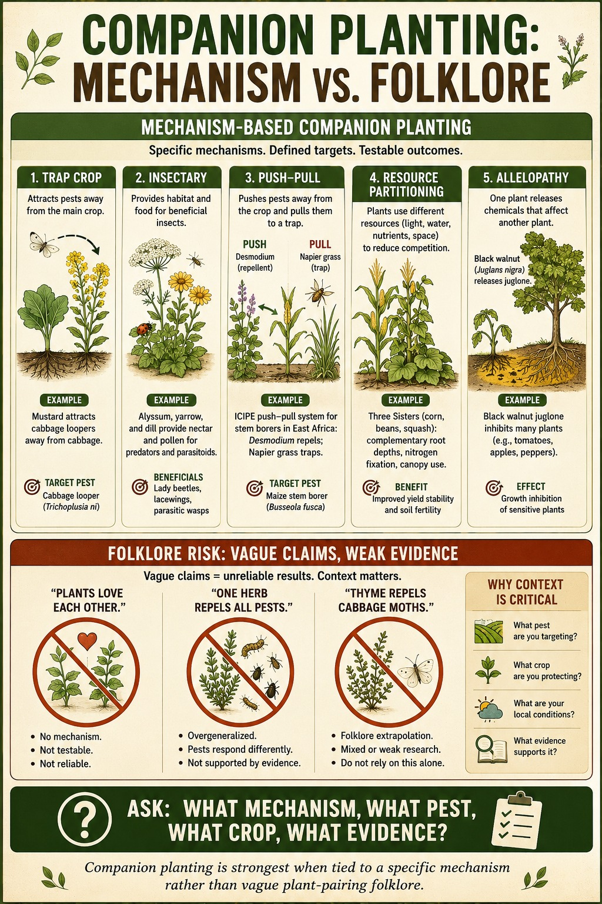
The push-pull strategy is an evidence-supported pest-management approach in specific crop-pest systems that uses companion plants to manipulate insect behavior (Khan et al., 1997; Cook et al., 2007).
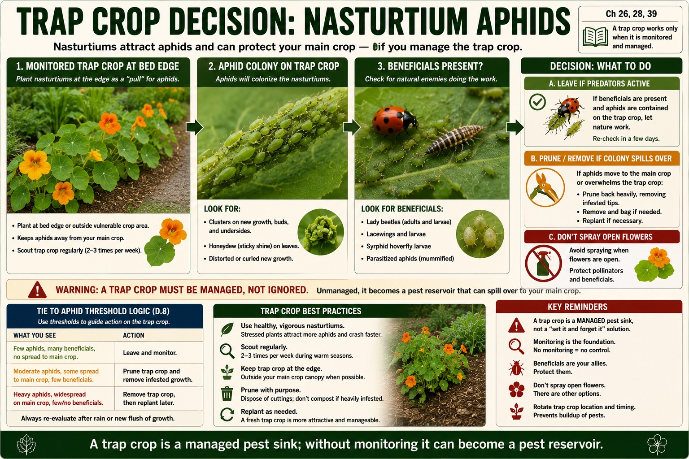
Evidence-tiered companion planting can improve the use of space, light, and nutrients by pairing plants with complementary architectures and life cycles. The classic "Three Sisters" guild (corn, beans, squash) is a well-known example of resource partitioning (Mt. Pleasant, 2006): corn provides a vertical trellis, beans can fix nitrogen when compatible Rhizobia are present, and squash can shade the soil as a living mulch. The nitrogen contribution and weed suppression depend on timing, variety, density, soil fertility, and water availability.
North Texas Note: The "Three Sisters" guild can struggle in North Texas because extreme summer heat and irrigation needs can put corn, beans, and squash on different stress schedules, and a dense squash understory can increase humidity. A more locally adapted guild to trial is pairing okra with a sprawling, heat-tolerant ground cover like sweet potatoes, while still monitoring water demand, airflow, and pest pressure.
Allelopathy is a biological interaction in which a plant, microbe, or decomposing residue releases biochemical compounds that influence the germination, growth, survival, or reproduction of another organism. In garden practice, it usually comes up when one plant appears to suppress another through chemical interference. Black walnut and juglone are the familiar example, but the concept also includes cereal rye residues, sorghum-sudangrass, brassica residues, eucalyptus litter, some aromatic or invasive plants, and microbial transformations of plant compounds.
The important boundary is that allelopathy is real but often overdiagnosed. It is not the explanation for every poor pairing, failed seed row, or weak transplant. Shade, water competition, root crowding, nutrient imbalance, soil temperature, crusting, salinity, disease, insects, and herbicide contamination are usually more common in vegetable gardens. A rigorous diagnosis separates chemical interference from ordinary competition and contamination.
Allelopathic compounds can include phenolics, quinones, terpenoids, alkaloids, flavonoids, glucosinolates, benzoxazinoids, organic acids, and other secondary metabolites. They may come from leaves, roots, bark, pollen, flowers, seeds, fruits, root exudates, rain-leached surfaces, decomposing residues, or microbial conversion of plant material. Their effect depends on concentration, plant part, release pathway, target species, exposure timing, soil texture, organic matter, moisture, temperature, pH, residue age, and microbial degradation.
The mechanism is not mystical. Allelopathy occurs when a compound reaches a target organism at a biologically active concentration. Germinating seeds and young seedlings are often more sensitive than established transplants because early roots are exposed and weakly buffered. Effects may include reduced germination, stunted root elongation, membrane disruption, oxidative stress, altered hormone balance, enzyme inhibition, photosynthesis interference, nutrient-uptake disruption, or shifts in microbial communities.
Release pathways vary. Living roots can exude compounds into the rhizosphere. Leaves can leach compounds during rain. Volatile compounds can move through air or mulch layers. Residues can release chemicals as they decompose. Microbes can degrade, immobilize, activate, or transform compounds into different forms. That is why laboratory tests do not always predict field behavior. A residue that suppresses germination in a sterile dish may behave differently in biologically active soil with clay, compost, moisture variation, and microbial metabolism.
Black walnut is the case growers recognize first. Walnut and hickory relatives can produce juglone or juglone precursors in roots, leaves, hulls, bark, and wood. Sensitive plants may struggle near active root zones or heavy residues. But symptoms can overlap with drought stress, shade, root competition, poor drainage, and disease. The practical response is not panic or dismissal. Identify the tree, consider root-zone overlap and residue accumulation, check species sensitivity, and isolate sensitive vegetables in raised beds only if root exclusion and clean fill are realistic.
Cover crops are the other practical use. Cereal rye, sorghum-sudangrass, brassicas, buckwheat, and other covers may suppress weeds through a combination of shading, residue mulch, competition, and allelochemistry. This can be useful when planned. It can also suppress the next crop if the grower direct-seeds small-seeded vegetables too soon into fresh heavy residue. Transplanted tomatoes or peppers may tolerate a residue window that carrots, lettuce, radishes, or direct-seeded brassicas do not.
Allelopathy should also be separated from persistent herbicide carryover. Hay, straw, manure, compost, grass clippings, or municipal green waste contaminated with aminopyralid, clopyralid, picloram, or related herbicides can twist, stunt, or kill sensitive broadleaf crops. That is not natural allelopathy; it is contamination. Bioassays are useful for both problems, but the management implications are different. Composting may degrade many plant compounds with enough time, moisture, microbial activity, and maturity, but persistent herbicides can survive ordinary composting and remain damaging.
Use allelopathy as a planning concept. Avoid fresh walnut leaves, hulls, or chips in vegetable beds. Avoid fresh residues from strongly suppressive plants in seed-starting mixes. Allow allelopathic cover-crop residues to age or decompose before sensitive direct seeding. Treat suppressive residues as part of integrated weed management, not as a replacement for termination timing, mulch management, crop rotation, and scouting. The safest rule for annual vegetables is simple: potentially allelopathic residues belong in planned rotations, cover-crop systems, or fully matured compost—not randomly mixed into seed rows.
Diagnose allelopathy by pattern and exclusion. Suspicion increases when poor germination or root stunting is strongest near a suspected residue, tree root zone, dripline, leaf-litter band, or mulch source; when sensitive species fail while tolerant species grow normally; when symptoms improve after moving away from the source; or when a bioassay shows suppression from suspect soil, compost, or residue. A simple screening bioassay can compare suspect material with clean potting mix using lettuce, radish, cress, or beans. It is not chemical identification, but it is better than guessing.
North Texas growing note: In Lewisville, Denton, and north DFW, allelopathy matters most around black walnut, pecan or hickory-adjacent gardens, cover-crop residue timing, and contaminated organic materials misdiagnosed as “plant inhibition.” Blackland Prairie clay, high pH, hard water, heat, crusting, and drought already cause poor germination and stunting, so allelopathy should not be the first explanation. If radish, lettuce, carrots, or brassicas fail, check soil temperature, moisture swings, surface crusting, salinity, seed depth, damping-off, and herbicide carryover before blaming a nearby plant. In 100–110°F weather, water competition and heat stress usually matter more than subtle allelochemical effects. Heavy fresh cover-crop residue should be tested or aged before small-seeded vegetables are planted into it.
Companion planting is the intentional placement of two or more plant species near one another to influence pest pressure, pollination, space use, microclimate, nutrient cycling, weed suppression, or beneficial-insect activity. The older version of the idea often appears as charts of “good companions” and “bad companions.” The manuscript position is different. Companion planting is useful only when the pairing has a plausible mechanism and fits the crop, pest, timing, spacing, water, and region.
A mechanistic companion system is not plant friendship. It is design. Trap crops concentrate a pest on a plant that is more attractive than the cash crop. Insectary plants provide nectar, pollen, shelter, or alternate prey for predators and parasitoids. Repellent or masking plants may interfere with host-finding cues, visual contrast, or landing behavior in specific pest-crop situations. Physical companions provide shade, wind buffering, trellis support, ground cover, or canopy layering. Nutrient companions such as legumes are used in rotations, cover crops, or biomass cycles to influence fertility over time. Weed-suppression companions use living mulch or dense cover to reduce bare soil. Temporal companions fill space briefly before a slower crop closes canopy.
The mechanism has to be named before the plant is chosen. “Plant basil with tomato” is not a mechanism. “Use basil as a harvestable herb near tomatoes where it does not crowd roots, while also providing late bloom for insects if allowed to flower” is closer. “Plant marigolds everywhere” is not a mechanism. “Use a specific marigold species or cultivar in a planned nematode-suppression rotation where evidence and timing support it” is a mechanism. The difference matters because charts are easy to copy and hard to verify.
Trap cropping is one of the clearest examples. A trap crop works only if it attracts the target pest at the right time and is managed after pests arrive. A trap crop that is never inspected can become a pest nursery. Insectary planting works only if bloom overlaps pest pressure and the flowers are accessible to the beneficial insects being targeted. A border of dense double ornamentals may look like habitat but provide little support for small parasitoids. Repellent and masking effects are more variable. Aromatic plants can alter pest behavior in some systems, but evidence changes sharply by pest species, crop, plant density, spacing, and environmental conditions.
Legumes are a common overclaim. Beans, peas, cowpeas, clovers, vetches, and other legumes fix nitrogen only when compatible rhizobia are present and nodules are functioning. They do not instantly feed nearby tomatoes during the same season. Most of the nitrogen benefit becomes available after roots turn over, tops are terminated, biomass decomposes, or the legume is managed as part of a rotation or cover-crop system. In a crowded summer bed, a legume can compete for water before it contributes fertility.
The practical procedure is to choose the function first. Name the problem: aphids, caterpillars, squash bugs, pollination, heat stress, weed suppression, bare soil, space use, or beneficial-insect continuity. Choose the mechanism: trap crop, insectary strip, living mulch, shade, temporal stacking, physical support, or rotation. Then choose a plant that fits mature size, water need, season, bloom window, root behavior, pest-host status, and harvest access. Place it intentionally. A flower border is different from herbs crammed into a tomato root zone. A living mulch in a pathway is different from clover competing inside a pepper bed.
Useful examples are modest and specific. Dill, cilantro, fennel flowers, buckwheat, alyssum, and small-flowered annuals can serve as insectary strips when region and season fit. Blue hubbard squash can be tested as a trap crop where regional guidance supports it and the grower is prepared to manage the pests it attracts. Cowpeas or clovers are more defensible as cover crops or timed living covers than as instant nitrogen donors. Lettuce, radish, or other fast crops can be planted between slower brassicas if harvested before crowding. Basil can be grown near tomatoes when spacing and irrigation are adequate, but it is not required and does not automatically improve flavor or pest resistance.
Companion planting fails when it creates competition, disease pressure, pest reservoirs, or confusion. Dense polycultures can reduce airflow and increase humidity around disease-prone crops. Tall companions can shade vegetables that need full sun. Aggressive perennials such as mint, oregano, comfrey, or yarrow can become bed-management problems when planted in annual turnover zones. Trap crops can concentrate pests and then release them if ignored. Flower strips can host aphids, thrips, mites, or leaf-footed bugs if not scouted. A diverse bed can still be damaged by squash bugs, harlequin bugs, aphids, spider mites, cucumber beetles, or caterpillars if populations outrun natural enemies.
Results should be measured, not assumed. Compare pest density, beneficial-insect presence, pollination success, disease incidence, crop yield, weed pressure, soil cover, water use, and ease of management. If tomatoes near basil look better, check whether they also had better irrigation, more compost, more sun, or fewer weeds. Trap crop success is verified when the target pest concentrates on the trap crop and the cash crop has lower injury. Insectary success is verified when beneficials are present before or during pest pressure. Living mulch success is verified only when weed reduction does not come at the cost of crop stress.
North Texas growing note: In Lewisville, Denton, and north DFW, companion planting should be designed around heat, water, pest timing, and airflow. Blackland Prairie clay and drip irrigation make root competition more important than many charts admit. A basil plant wedged into every tomato hole can compete for water during 100–110°F weather. Spring cilantro, dill, and calendula can support beneficial insects but often bolt or decline as heat arrives. Warm-season flowers such as zinnia, cosmos, marigold, basil, and sunflower can be useful, but they need spacing that preserves airflow around tomatoes, cucurbits, okra, and peppers. North Texas pest pressure requires scouting even in diverse beds. The best local use is insectary strips, trap-crop trials, border plantings, and timed intercropping—not rigid plant-friend folklore.
Monoculture—the cultivation of a single crop over a large area—is uncommon in natural ecosystems and often requires external management to maintain. Polyculture, the simultaneous cultivation of multiple crops in the same space, is one regenerative design strategy for increasing functional diversity and habitat complexity.
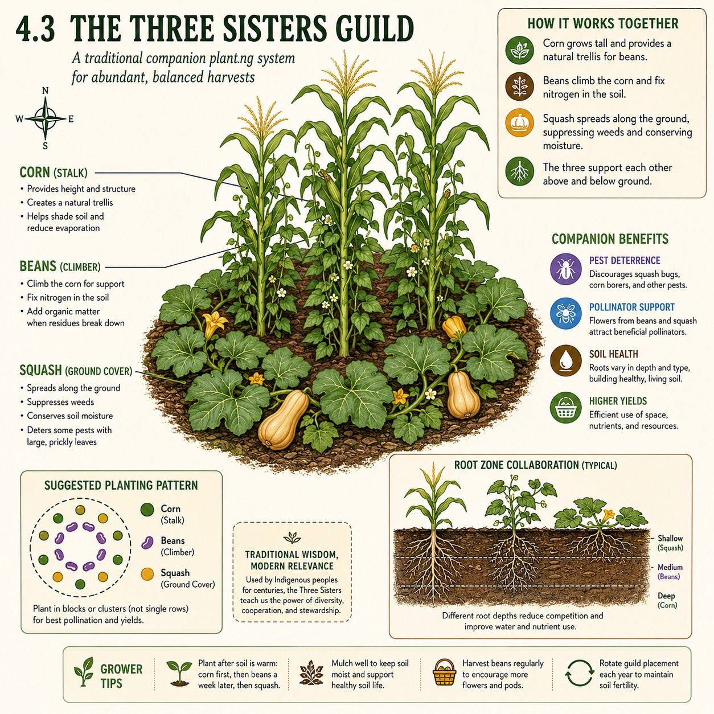
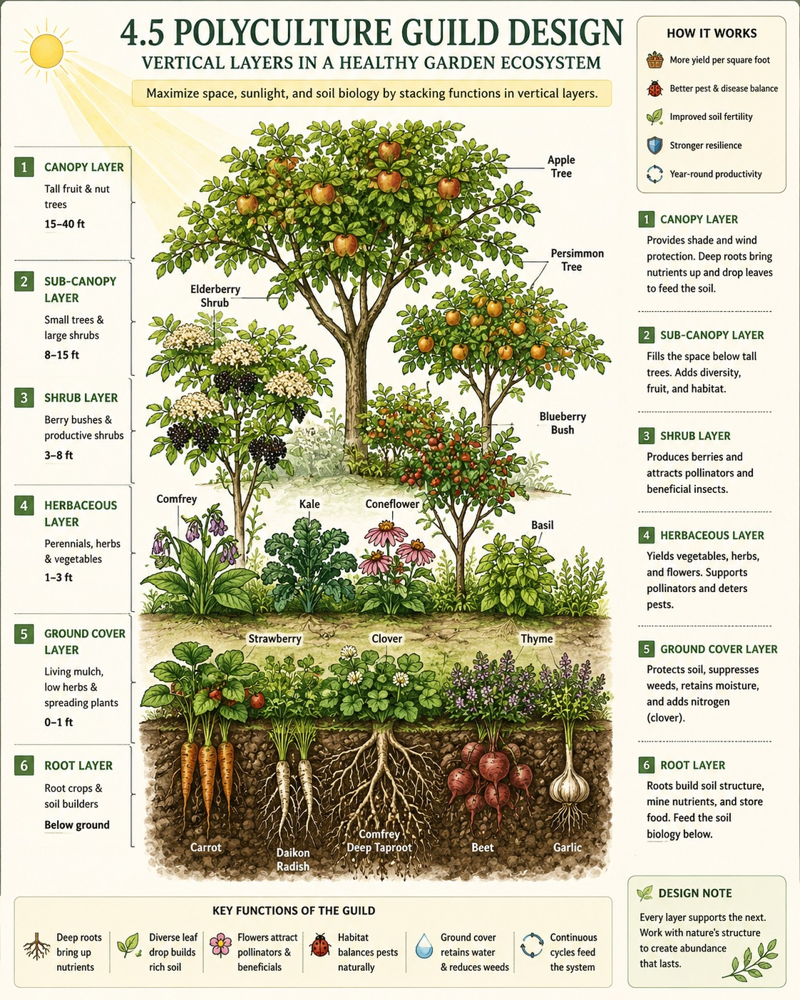
In ecology, the "edge effect" refers to changes in species composition, movement, microclimate, and interaction at the boundary between two habitats (Odum, 1971; Forman, 1995). Edges can be more diverse or productive in some systems, but they can also increase exposure, pest movement, predation, drying, or weed pressure. Polyculture design can use height, root depth, bloom timing, and canopy structure to create useful habitat complexity, but edge effects are variable rather than automatically beneficial.
A "guild" is a permaculture design framework—a grouping of plants intended to stack functions such as shade, mulch, nitrogen fixation, pollinator habitat, groundcover, and harvest. The seven-layer model is a useful practitioner design tool, not a universal ecological law. A common permaculture guild consists of seven layers:
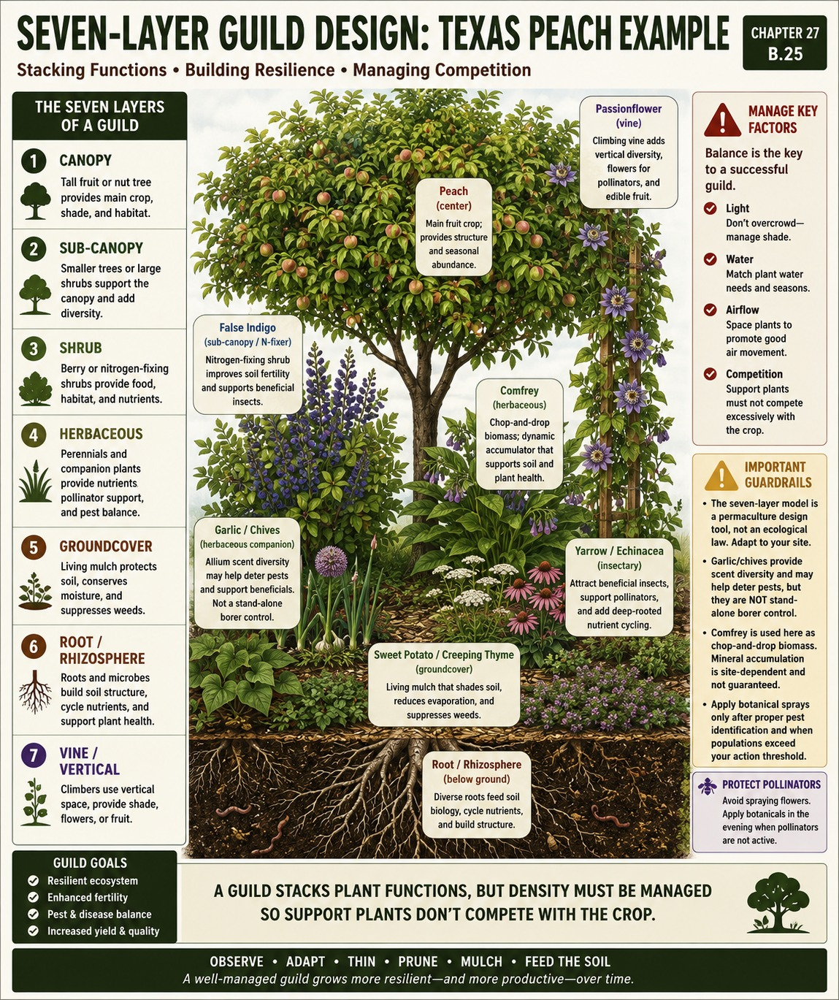
Instead of planting a peach tree in an isolated circle of mulch, design a guild around it:
North Texas Note: Polyculture can be useful for managing the intense solar radiation of the Texas summer. Planting tall, heat-tolerant crops like sunflowers or amaranth on the western edge of a bed can cast afternoon shade over more sensitive crops, but spacing, airflow, water competition, and pest habitat still need to be managed.
Living mulch is a managed plant cover grown beneath or between a primary crop while that crop is still in production. It may be clover under widely spaced tomatoes, alyssum along a bed edge, cowpeas between young okra, thyme in a perennial herb border, buckwheat in a shoulder-season gap, or a carefully managed volunteer cover in a no-till system. Unlike straw, leaves, compost, or wood chips, living mulch is alive. That is both its value and its risk.
A dead mulch protects the surface without taking water or nutrients through roots. A living mulch protects the surface while also photosynthesizing, transpiring, rooting, flowering, competing, hosting insects, and changing the microclimate. It feeds soil biology with living root exudates, holds soil against erosion, reduces raindrop impact, shades the surface, suppresses some weed germination, and may provide nectar and pollen for beneficial insects. At the same time, it can steal water, tie up nutrients, shade seedlings, increase humidity, interfere with harvest, harbor pests, and become a weed if it sets seed or spreads beyond control.
The locked position is simple: living mulch is not free mulch. It is a controlled-competition tool. It works when the main crop remains dominant, irrigation is adequate, fertility is managed, and the living cover is kept low, sparse, or spatially separated. It fails when the cover becomes a second crop fighting the crop you meant to grow.
Species choice determines most of the outcome. White clover behaves differently from annual ryegrass, alyssum, cowpea, vetch, creeping thyme, buckwheat, or a low herb mixture. Important traits include height, rooting depth, water demand, nitrogen demand, shade tolerance, mowing tolerance, flowering period, reseeding tendency, invasiveness risk, compatibility with foot traffic, host status for pests or disease, and ease of termination. A legume may fix nitrogen only if the correct rhizobia are present and nodulation succeeds. Even then, most of that nitrogen stays inside the living plant until tissue is cut, roots turn over, or residue decomposes. Living clover does not automatically feed a tomato beside it in real time.
The best fits are systems where the main crop is large enough to dominate the cover. Wide-spaced transplanted crops such as tomatoes, peppers, eggplant, okra, trellised cucumbers, and corn edges can sometimes tolerate a living mulch if it is low and managed. Perennial systems such as orchard rows, berry alleys, herb borders, and pathway edges are often better candidates because mowing, clipping, or spatial separation can keep competition predictable. Beneficial-insect strips near beds may deliver much of the ecological benefit without putting living roots directly under shallow vegetable crops.
Poor fits are usually shallow-rooted, direct-seeded, slow-starting, or tightly spaced crops. Carrots, beets, radishes, turnips, onions, baby greens, lettuce, cilantro, dill, and small seedlings can be suppressed quickly by a cover that seems harmless beside a larger transplant. Containers and narrow beds also have less buffer. In drought-stressed systems, living mulch can turn a water problem into crop failure.
Implementation should start with dominance. Establish the main crop first unless the design is intentionally built around an overwintered cover. Keep a bare or dead-mulch ring around transplants so the stem and root crown are not crowded. Use drip irrigation to serve the main crop, not broadcast irrigation that encourages the cover to become lush. Clip, shear, mow, or crimp living mulch before it shades, climbs, seeds, lodges, or competes strongly. Terminate early if the cash crop slows down. The point is not to prove that living roots are always good; the point is to keep the right living roots in the right place at the right intensity.
Living mulch interacts with irrigation more than many gardeners expect. Because it transpires, it increases total water demand. A bed with clover or cowpea cover may need more water than the same bed under straw. In a mild spring this may be manageable. In July heat, it may be the difference between a resilient bed and a stressed one. Drip layout must prioritize the primary crop. If emitters only wet the living mulch or if the living mulch intercepts surface moisture, the main crop can decline while the bed still looks green.
It also interacts with nitrogen. Legume living mulches can support nitrogen inputs over time, but living tissue is not the same as released fertility. Cutting can return some nitrogen to the surface residue pool, but decomposition timing depends on moisture, temperature, residue size, and microbial activity. Grass living mulches can immobilize nitrogen when clipped residue decomposes. For heavy feeders, living mulch does not remove the need for soil testing, compost quality, crop-stage fertility, or observation.
Pest and disease effects are mixed. Flowering covers can feed hoverflies, parasitoid wasps, predatory insects, and pollinators when bloom timing aligns. Dense undergrowth can also shelter slugs, pillbugs, rodents, ants, cutworms, stink bugs, leafhoppers, spider mites, or flea beetles depending on the species and season. Under tomatoes, cucurbits, and peppers, thick living cover may increase humidity near the lower canopy and reduce airflow. In humid spring conditions, that can increase disease pressure. Living mulch is an IPM layer, not a substitute for scouting.
Checking results requires looking at the main crop, not admiring the cover. Monitor leaf color, internode length, flowering, fruit set, root competition, and water stress. Compare with a similar bed under dead mulch. If the living-mulch bed is smaller, paler, slower, or more drought-stressed, reduce or terminate the cover. Inspect at soil level for slugs, pillbugs, rodents, ants, cutworms, and damp disease conditions. Check whether the cover is setting seed. For legumes, inspect nodules if nitrogen fixation is part of the justification.
Living mulch has a lifecycle. It may be seeded before the crop, after transplanting, after canopy establishment, during a shoulder season, or in a pathway rather than the bed. It may need mowing, clipping, tarping, frost termination, crimping, smothering, or hand removal. Perennial living mulches can become difficult to remove once established. Annual covers must be terminated before seed set unless reseeding is intended. Seed quality matters: species, cultivar, germination rate, weed seed content, hard seed percentage, inoculation requirements, and seed treatment status should all be checked.
North Texas growing note: In Blackland Prairie clay and north DFW heat, living mulch should be used conservatively under annual vegetables. In spring it may look like perfect soil armor; by July it can become a water competitor. Living mulch is often safer in paths, bed shoulders, orchard alleys, berry rows, and cool-season windows than directly under shallow-rooted vegetables. Where summer irrigation is abundant and drip zones are well designed, low covers can be trialed under robust crops like okra, trellised tomatoes, or peppers, but straw, shredded leaves, or composted mulch are usually easier and safer for high-rotation annual beds.
# Editorial Batch 05 / Master Batch 3B
A living soil system does not function in isolation; it is connected to above-ground ecology. One important component of this integration is the establishment of insectary and pollinator guilds—dedicated plantings designed to attract, feed, and shelter beneficial insects.
An insectary is not merely a flower garden; it is habitat intended to support biological control agents. The goal is to attract predatory and parasitic insects, such as ladybugs, lacewings, syrphid flies, and parasitic wasps, that may prey on or parasitize some crop pests when pest species, habitat, timing, and pesticide practices allow.
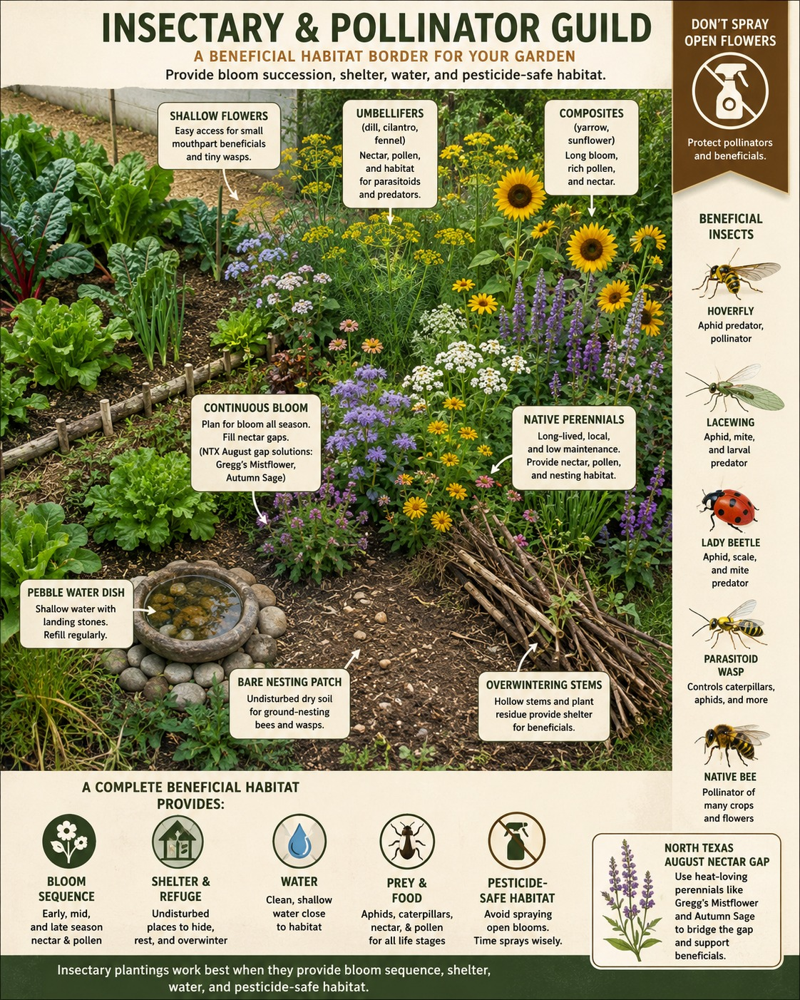
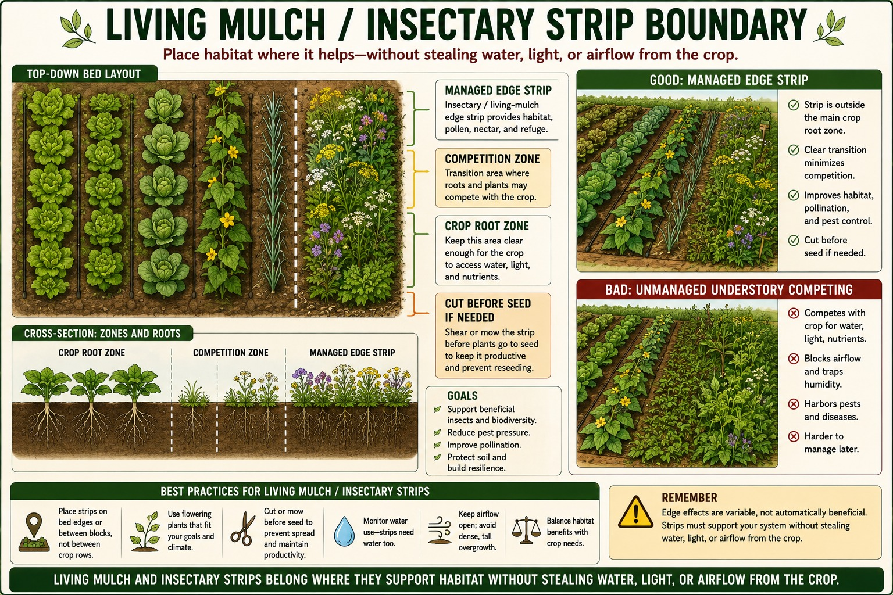
Beneficial insects have different anatomical requirements. Many small parasitoids, including Trichogramma wasps, have short mouthparts and may use shallow, exposed nectar sources more readily than deep, tubular flowers. Therefore, an effective insectary often includes plants with shallow, accessible nectaries.
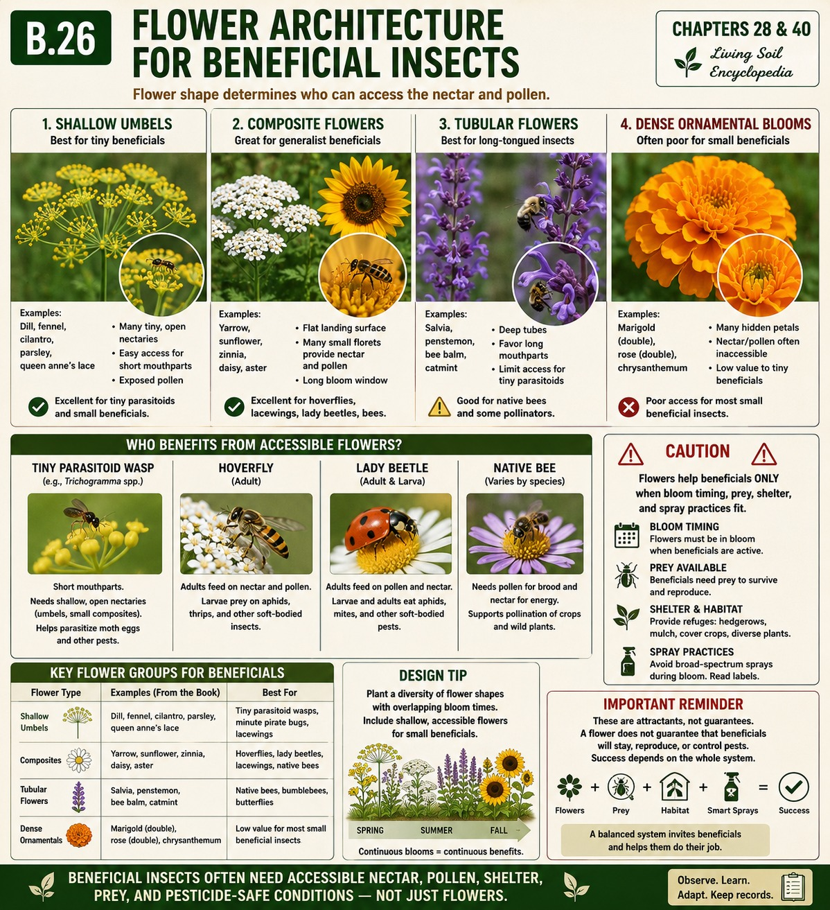
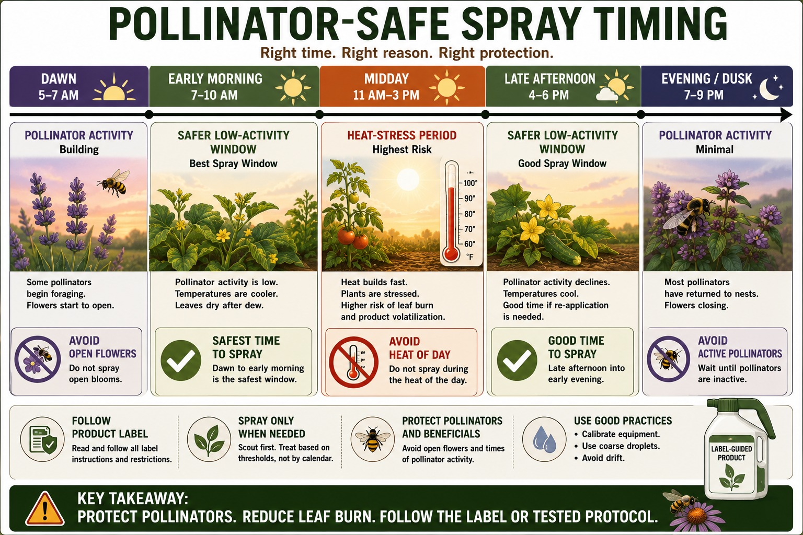
To maintain beneficial-insect activity, the insectary should provide as continuous a succession of blooms as practical from early spring through late fall. If nectar, pollen, prey, or shelter are absent for long periods, beneficial populations may decline or move elsewhere. Dense, undisturbed vegetation can also provide shelter from extreme weather and overwintering habitat.
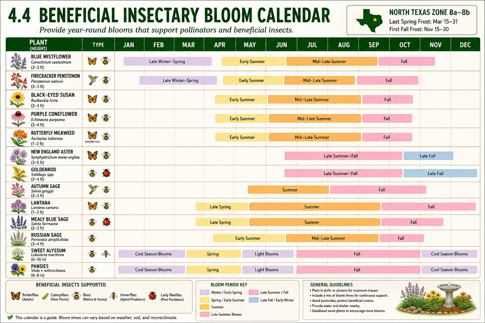
Methodology Comparison: Pest Management and Insectaries
- Soil Food Web (Ingham): As a practitioner framework, often interprets pest pressure as a sign of plant or soil imbalance. Improved soil biology may improve plant resilience, but it does not replace pest identification, monitoring, thresholds, sanitation, exclusion, resistant varieties, and habitat design.
- Coot's Mix (Bennett): As a practitioner/community protocol, uses neem/karanja, kelp, compost, and mulch to support plant vigor and soil biology. Systemic unpalatability to pests should not be presented as guaranteed.
- Bionutrient (Kittredge): As a Bionutrient practitioner framework, links plant nutrition, sap chemistry, and pest susceptibility. The claim that insects cannot digest complex proteins should not be stated as an entomological law; high plant health may reduce susceptibility to some pests under some conditions.
- KNF/JADAM (Cho): As practitioner protocols, may use JHS or related inputs as botanical pest interventions, but these should be applied only after pest identification and threshold assessment, with toxic-plant, caustic-ingredient, pollinator, and beneficial-insect cautions.
- Biodynamics (Steiner): As biodynamic practitioner doctrine, includes practices such as peppering. Present this as doctrine rather than established pest-deterrence mechanism, and do not use it as a substitute for IPM.
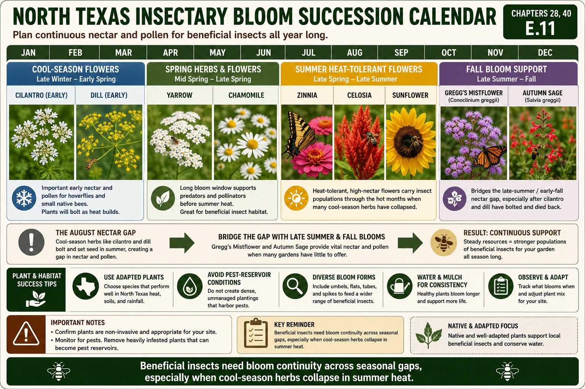
Safety Box: Organic Pesticides, JHS, and Beneficial Insects Organic-compatible or homemade pest interventions are not automatically harmless. Use pest identification, monitoring, and action thresholds before spraying. Botanical preparations, including JADAM Herb Solution, can affect pollinators, predators, parasitoids, and people; do not casually use toxic plants such as oleander or nightshade. If a JADAM wetting agent or other caustic soap-making input is involved, potassium hydroxide/KOH requires gloves, eye protection, long sleeves, ventilation, clear labels, and secure storage. Avoid spraying open flowers or active pollinator periods unless the product/protocol specifically allows it.
North Texas Note: The brutal heat of August often causes traditional insectary plants like cilantro and dill to bolt or decline, creating a gap in nectar availability just as pest pressures may rise. To bridge this gap, incorporate native or adapted heat-tolerant plants such as Gregg's Mistflower (Conoclinium greggii) and Autumn Sage (Salvia greggii), while confirming bloom timing and invasiveness for the specific site.
The integration of cut flowers into a vegetable production system is often viewed as a purely aesthetic choice. In a regenerative model, cut flowers can also serve as insectary habitat, seasonal biological cover, and a source of above-ground diversity.
When grown densely, cut flowers can function as a living mulch. A thick stand of zinnias or cosmos may shade the soil surface, suppress some weed germination, and reduce evaporation when stand density and irrigation are appropriate. Their root architectures and exudates can also add diversity to the rhizosphere, though microbiome effects vary by species, soil, and season.
Cut flowers can be a strong expression of the insectary guild. By selecting a diverse mix of species with varying bloom times and flower architectures, the grower can provide a more continuous food source for predatory insects and pollinators, but this does not guarantee resident beneficial populations.
North Texas Note: To survive the Texas summer, focus on heat-loving, drought-tolerant flower species. Zinnias, gomphrena, celosia, and native sunflowers can bloom through hot weather when established and irrigated appropriately, whereas delicate spring flowers like sweet peas or snapdragons often decline quickly in peak heat.
Insectary guild design is the planned use of flowering, sheltering, and seasonally sequenced plants to support beneficial insects around production beds. It overlaps with insectary planting, beneficial-insect habitat, flowering strips, pollinator strips, conservation biological control, and beneficial borders. The functional goal is simple: keep nectar, pollen, refuge, alternate prey, and seasonal continuity close enough to crops that predators and parasitoids are present before pest populations exceed thresholds.
An insectary guild is not one magic plant. It is a functional planting with several resource types. Adult hoverflies, parasitoid wasps, tachinid flies, lacewings, lady beetles, minute pirate bugs, bees, and other beneficials may use nectar or pollen. Ground beetles, spiders, and other predators need shelter, low disturbance, and overwintering cover. Some natural enemies also need alternate prey when the target pest is scarce. A guild works by improving the odds that these organisms can live near the garden long enough to matter.
The most useful plant groups usually have accessible flowers, a reliable bloom window, and manageable growth. Umbels such as dill, cilantro, fennel, parsley flowers, carrot flowers, and related Apiaceae are valuable because many tiny parasitoid wasps and small flies can use shallow exposed flowers. Composites such as yarrow, coreopsis, cosmos, sunflower, black-eyed Susan, asters, goldenrod, and coneflower can support a range of insects. Mints and culinary herbs such as basil, thyme, oregano, sage, and mountain mint can add bloom and scent diversity. Legumes such as cowpea flowers, clover, vetch, and native prairie legumes add floral resources and, in the right context, soil functions. Native and adapted perennials can bridge heat gaps if they match the site.
Flower form matters. Deep, double ornamental blooms may be beautiful but less useful for the small parasitoids and flies that need exposed nectaries. Timing matters even more. A spring flush of cilantro and dill does not help August spider mites if nothing is blooming later. Distance matters: biological-control benefits often weaken as habitat gets farther from the crop. Pesticide compatibility matters most of all. Broad-spectrum insecticides, careless oils, or hot-weather sprays can erase the natural enemies the guild is meant to support.
The editorial boundary is important: insectary guilds support IPM; they do not replace it. They increase the probability that natural enemies are present and effective. They do not guarantee pest suppression. They also do not prove companion-planting folklore. “Yarrow repels all pests,” “basil protects tomatoes,” or “flowers prevent squash bugs” are doctrine unless the pest, plant, timing, and mechanism are specified.
Design starts with the pest window. Identify the recurring pests in the garden: aphids in cool-season crops, caterpillars in brassicas and tomatoes, cucumber beetles and squash bugs in cucurbits, spider mites in heat, whiteflies and thrips in summer and fall, or harlequin bugs in brassicas. Then choose plants that flower before and during those windows. A useful garden usually needs at least three bloom bands. Early bloom might come from cilantro, dill, parsley flowers, calendula, alyssum where brassica-family risk is acceptable, and early perennials. Summer bloom might come from basil, cosmos, zinnia, cowpea flowers, coreopsis, mountain mint, black-eyed Susan, sages, and heat-adapted natives. Late bloom might come from goldenrod, asters, late herbs, frost-tolerant flowers, and fall annuals.
Placement is a design decision, not decoration. In small gardens, one managed strip near several beds is often better than scattering aggressive perennials inside annual rows. Place guilds at bed ends, pathway edges, fence lines, perennial borders, trellis bases, or dedicated strips. Keep scouting and harvest access open. Keep irrigation zones compatible. Keep tall or dense flowers away from disease-prone crops where they block light or airflow. Keep perennials outside annual turnover zones unless containment is planned.
A good guild also has to be scouted. An aphid colony with parasitoid mummies and hoverfly larvae is not the same decision as an aphid colony with no natural enemies. A sunflower that concentrates leaf-footed bugs may be useful only if the grower monitors it and removes or manages the pests before they spill over. A flower strip full of thrips near peppers may become a liability. Biological control is still management.
When sprays are needed, protect the beneficials first. Use pest identification, thresholds, and the least disruptive tool that fits. Avoid spraying open flowers during pollinator activity. Do not use broad-spectrum products across the guild and then expect resident natural enemies. Project safety boundaries still apply: neem oil is not applied above 85°F, and wettable sulfur within two weeks of oil is a severe phytotoxicity risk.
Results should be verified by scouting both the guild and the crop. Record bloom species, bloom dates, beneficial insects observed, pest counts, natural-enemy activity, and crop injury. Look for parasitoid mummies, hoverfly larvae, lacewing eggs, lady beetle larvae, minute pirate bugs, tachinid flies, predatory wasps, spiders, ground beetles, and predatory mites where relevant. A guild that helps with aphids may do nothing for squash vine borer. If pests exceed thresholds, escalate through IPM. The guild supports the decision; it is not the decision.
North Texas growing note: North Texas insectary design has to bridge spring abundance, summer heat, and fall resurgence. Cilantro and dill can be useful early, but they bolt quickly and will not carry July. Summer guilds need heat-tolerant plants, mulch, and targeted irrigation. Native or adapted perennials should be established in fall or spring rather than peak heat. Blackland clay often favors permanent edges and paths instead of constantly reworked flower strips inside annual beds. Yarrow is a useful managed example because of drought tolerance and accessible flowers, but it is not a magic pest-control plant. The final image/bloom-calendar workflow should separate pollinator value from predator and parasitoid support, because bee flowers are not automatically the best flowers for tiny parasitic wasps.
Cut flowers can be more than decoration. In a living-soil vegetable system, they can function as harvestable flowers and ecosystem-service plants at the same time. A well-designed cut-flower strip may support pollinators, provide nectar and pollen for beneficial insects, shade soil, reduce splash, buffer wind, mark scouting routes, diversify roots and exudates, supply mulch biomass, or create a small cut-flower yield for the household. The key word is designed. Random flowers are not automatically functional cover.
A functional cut-flower cover is built from species mix, bloom sequence, mature height, root behavior, canopy density, water demand, harvest pattern, and compatibility with nearby crops. Zinnia, cosmos, sunflower, marigold, calendula, bachelor’s button, sweet alyssum, gomphrena, celosia, basil flowers, amaranth, dill flowers, fennel flowers, buckwheat, borage, and native annuals can all have a place when matched to the site. They are not interchangeable.
Different flower roles should be kept separate. Pollinator flowers such as zinnia, sunflower, cosmos, basil flowers, borage, buckwheat, and native annuals may increase general bloom activity. Natural-enemy flowers such as sweet alyssum, buckwheat, dill, fennel, cilantro flowers, yarrow, calendula, and cosmos can provide accessible resources for hoverflies, lacewings, tachinid flies, parasitoid wasps, lady beetles, and minute pirate bugs when bloom timing overlaps pest pressure. Tall structural flowers such as sunflower, amaranth, tithonia, celosia, and tall cosmos can buffer wind or create shade, but they can also compete heavily. Low flowers such as alyssum, calendula, dwarf zinnias, and low cosmos varieties may act more like living cover when water and light allow.
Flower strips have research and extension support as tools for enhancing beneficial insects and pollinators, but the effect depends on species, landscape context, crop, pest complex, distance, and management. A flower strip is not “any flowers.” Dense double blooms may be poor resources for small beneficial insects. Tall flowers placed in a crop row may reduce yield by shading or competing for water. A border that supports pollinators may do little for the tiny parasitoids needed for aphid or caterpillar pressure.
The strongest mechanisms are resource provisioning and physical cover. Flowering plants provide nectar, pollen, shelter, and sometimes alternate prey. Dense low cover can reduce soil splash, shade the surface, slow weed germination, and protect surface biology. Tall flowers can reduce wind and create afternoon shade. Those benefits have costs. Flowers grown for stems can be heavy feeders and water users. Sunflowers, amaranth, celosia, zinnias, and cosmos can compete with vegetables during drought stress. A strip at the bed end is very different from giant sunflowers inside a pepper row.
Use cut flowers as planned strips, borders, islands, end caps, separate flower beds, or timed intercrops. Name the function first: pollination, beneficial insects, weed cover, cut-flower harvest, wind buffering, trap cropping, or biomass. Choose the form second. A separate flower bed may support insects without competing with vegetables. A narrow end cap can add bloom near multiple beds. A living cover under crops needs lower height and tighter water management. A tall border needs placement that does not block sun, airflow, or harvest.
Bloom sequencing is essential. Cool-season flowers can support spring and fall beneficials, while warm-season flowers carry summer. But frequent cutting reduces bloom available to insects, so a functional system leaves part of the planting flowering while harvesting from the rest. Deadheading may extend bloom, but it also removes seed resources if birds or self-sowing are part of the design. A cut-flower system should be managed like habitat, not stripped completely every time flowers open.
Cut flowers can also become pest reservoirs. Aphids on calendula or nasturtium may be tolerable when predators are present and vegetable injury is low. Thrips or spider mites on flowers beside peppers may not be tolerable. Sunflowers can concentrate some pests and must be scouted. Flowers should be inspected during the same scouting route used for vegetables. If a flower strip becomes a pest source, prune it, remove the problem plants, or treat according to IPM standards.
Avoid functional flower cover where it reduces crop yield, blocks airflow, crowds roots, creates disease humidity, or prevents access. Common failures include planting tall sunflowers where they shade vegetables; using aggressive reseeders without containment; choosing sterile double flowers and expecting parasitoid support; harvesting every bloom and eliminating insectary value; using toxic ornamentals carelessly near food areas; overwatering drought-adapted flowers on vegetable schedules; and failing to irrigate flower strips that sit outside the main drip pattern.
Results should be visible. Track bloom continuity, pollinator visitation, natural enemy presence, pest density, pest reservoirs, vegetable yield, harvest quality, weed suppression, soil moisture, airflow, disease pressure, cut-flower harvest, and ease of access. A flower strip is working when it supports beneficials and pollinators without increasing pest damage or crop stress. If it is beautiful but nearby vegetables decline, the design failed.
North Texas growing note: In Lewisville, Denton, and north DFW, cut flowers can be extremely useful, but placement matters more than enthusiasm. Blackland Prairie clay holds moisture unevenly, and 100–110°F summer heat turns crowded plantings into water competition. Zinnias, cosmos, sunflowers, marigolds, celosia, gomphrena, basil flowers, and tithonia can support summer insect activity, but tall or thirsty species usually belong on bed ends, borders, or dedicated strips rather than inside crop rows. Cool-season alyssum, calendula, cilantro, dill, and bachelor’s button can support spring and fall beneficials but may collapse as heat arrives. Drip irrigation must reach the flower strip, and mulch should protect both flowers and vegetables. The goal is continuous bloom without sacrificing airflow around tomatoes, cucurbits, peppers, okra, and brassicas.
Crop rotation—the practice of moving plant families to different locations over time—is a foundational tenet of organic agriculture. In a highly diverse, biologically active no-till system, rotation may be more flexible, but it remains important for managing host-specific pathogens, nematodes, nutrient demand, and residue patterns while also supporting succession planning.
In a conventional system, planting tomatoes in the same spot repeatedly can increase host-specific pathogen pressure, including early blight, when the host, pathogen, and environment align. Biologically active soils may contribute to disease suppression through competition, antagonism, predation, and improved plant vigor, but disease-suppressive soils are context-dependent and do not guarantee that no pathogen can dominate (Mazzola, 2004; Weller et al., 2002). Rotation, sanitation, resistant varieties, airflow, drainage, residue management, and monitoring still matter in living soil systems.
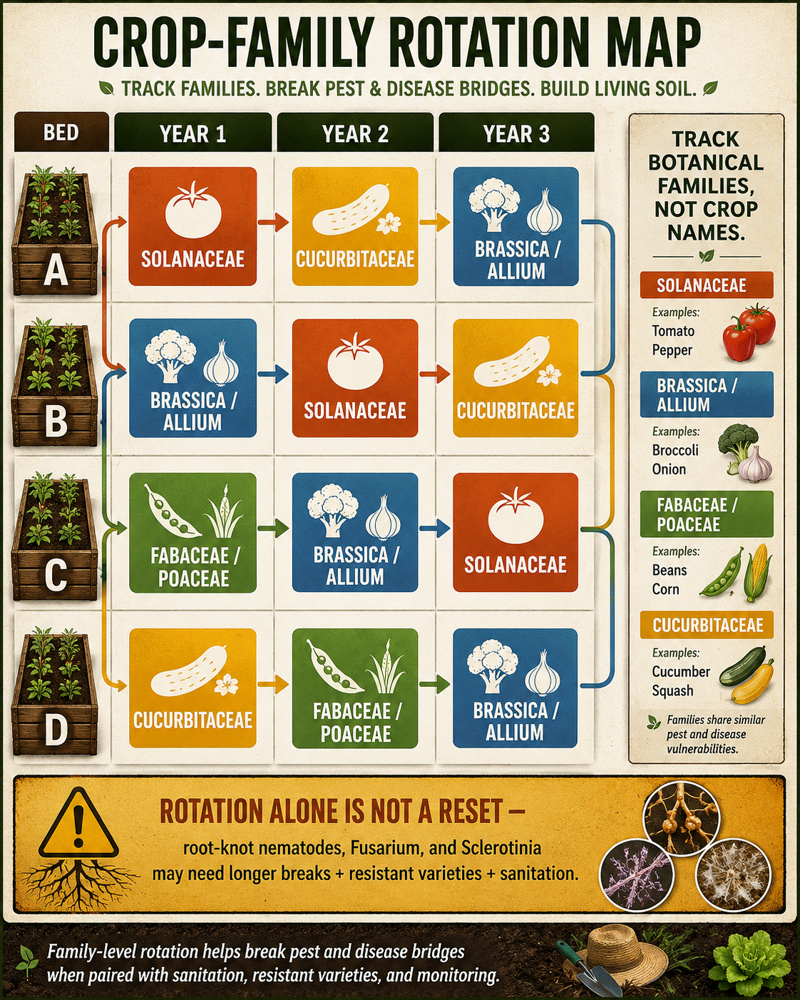
While rotation may be less rigid in some mature living-soil systems, it remains a powerful tool for disease management and soil building.
Succession planting is the art of timing. It helps reduce empty-bed periods and keeps living roots in the soil more consistently.
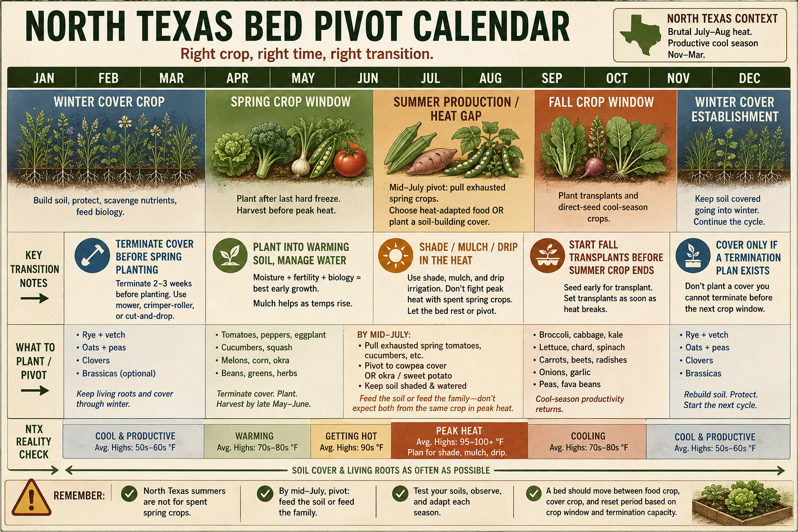
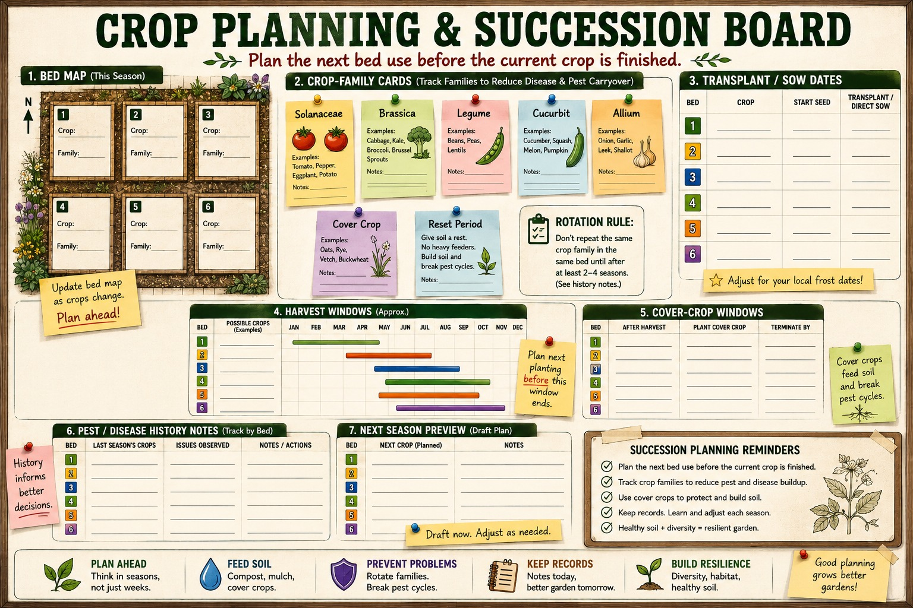
North Texas Note: Living soil may help suppress some diseases, but the Southern Root-Knot Nematode (Meloidogyne incognita) can remain aggressive in sandy loam soils. Even in a healthy system, rotate highly susceptible crops like tomatoes and okra, monitor roots at crop removal, and use resistant varieties, sanitation, organic-matter management, and nematode-suppressive cover crops where appropriate.
Crop rotation by family is the planned movement of crops among beds based on botanical family and host relationships. Common names include vegetable family rotation, crop-family rotation, bed rotation, and rotation planning. Source class: extension-supported cultural practice for pest, disease, and fertility management; peer-reviewed mechanism only where a specific host-pathogen or pest lifecycle is cited; practitioner doctrine when fixed “heavy feeder/light feeder” sequences are used without diagnosis. Functionally, family rotation reduces repeated host availability, prevents some pest and disease buildup, spreads nutrient demand, and connects crop planning to the Disease Triangle and IPM Hierarchy.
Crop rotation is not a material input and has no NPK value. Its “composition” is the crop history of each bed, the crop family assigned to that bed, pest and disease history, cover crops used, residue decisions, and the interval before a related crop returns. The rotation groups used in this encyclopedia include Solanaceae: tomato, pepper, eggplant, potato, tomatillo; Cucurbitaceae: cucumber, zucchini, summer squash, winter squash, pumpkin, melon, watermelon; Brassicaceae: broccoli, cauliflower, cabbage, kale, collards, radish, turnip, arugula, mustard; Fabaceae: beans, peas, cowpeas, clover, vetch; Allium/Amaryllidaceae: garlic, onion, shallot, leek, chives; Poaceae: sweet corn, rye, oats, wheat, sorghum-sudangrass; Apiaceae: carrot, parsnip, parsley, cilantro, dill, fennel; Asteraceae: lettuce, sunflower, yarrow, many asters; and Amaranthaceae: beet, spinach, Swiss chard, amaranth.
A rotation record should include the crop, botanical family, planting date, termination date, disease symptoms, pest pressure, cover crop, and whether residue stayed, was hot-composted, or was removed.
Crop rotation works by interrupting host continuity. Many soilborne diseases, nematodes, and pests increase when the same host or related hosts are planted repeatedly in the same bed. Moving the host family deprives that organism of the crop it needs during part of its lifecycle. The effect is strongest for organisms with narrow host ranges and local survival: residue-borne brassica diseases, some solanaceous wilts, some insect pests, and some nematode dynamics. The effect is weaker where pathogens survive for many years, have broad host ranges, travel by wind or insects, or arrive on infected transplants.
The family unit matters. Tomato followed by pepper is not rotation for solanaceous disease pressure. Cucumber followed by squash is not rotation for cucurbit pest carryover. Kale followed by broccoli is not rotation for brassica disease pressure. Cover crops count too: oilseed radish is still a brassica; rye is a grass; cowpea is a legume.
Rotation also changes fertility demand. Related crops often share rooting patterns, nutrient demand curves, residue chemistry, and disease risk. Alternating fruiting crops, leafy crops, legumes, grasses, roots, and fallow/cover windows spreads stress across the system. Rotation does NOT eliminate disease by itself. Fusarium, Verticillium, root-knot nematode, contaminated transplants, bacterial seedborne diseases, windblown spores, and infected compost can override a good map. Rotation lowers probability and pressure; it does not sterilize soil or substitute for resistant varieties, sanitation, soil testing, or scouting.
Rotation is distinct from seasonal succession. Succession asks, “What crop can follow this crop in time?” Rotation asks, “Is the next crop related to the previous crop or to the problem in this bed?” A bed can be well-successioned and poorly rotated if spring cabbage is followed by fall kale every year.
Start with a bed map. Number every bed and record the crop family after every planting. At season end, assign the next family before buying seed. The default target is three to four years before returning the same family to the same bed, but small gardens rarely achieve this perfectly. In small gardens, prioritize strict rotation for high-risk families: Solanaceae, Cucurbitaceae, Brassicaceae, and Alliums. Use low-risk fillers, containers, cover crops, and fallow/mulch periods when bed count is limited.
Use the longest clean interval available. If the garden has four beds, keep tomato/pepper/eggplant/potato out of the same bed for as many seasons as practical. If the garden has only two beds, rotate the most disease-prone crops between beds and use containers for overflow instead of pretending a one-bed system can provide full rotation.
Plan cover crops into the same map. A grass cover crop after tomato can be a true break. A legume cover crop before beans may preserve legume continuity. Brassica cover crops before fall brassicas are risky where brassica pest or disease pressure is high. Record weeds where they matter. Volunteer tomato, nightshade weeds, wild brassicas, and unmanaged grasses can maintain host continuity.
When a disease is confirmed, rotate by pathogen biology, not by chart alone. Root-knot nematode requires non-host or poor-host strategy; Fusarium and Verticillium require resistant cultivars and longer host breaks; black rot of brassicas requires residue removal, sanitation, and seed/transplant quality.
Crop rotation interacts directly with the Disease Triangle by reducing the host leg. It interacts with the IPM Hierarchy as a Tier 1 cultural control. It pairs with sanitation, resistant varieties, row cover, drip irrigation, insectary guilds, cover crops, soil testing, and scouting. Rotation can reduce pest pressure enough that lower-tier IPM tools hold longer.
It interacts with seasonal succession and bed pivoting. The best next crop must fit both the calendar and the family-risk map. It also interacts with soil nutrients. A heavy solanaceous crop followed by another heavy solanaceous crop increases both disease continuity and fertility imbalance. A nitrogen-fixing legume cover crop can support the next crop, but only if nodulation, biomass, termination, and mineralization align.
Do not use rotation as a substitute for diagnosis. Moving tomatoes away from last year’s tomato bed will not solve bacterial spot introduced on infected transplants. Do not rotate by grocery category: sweet potato is not Solanaceae; corn is a grass; cilantro and carrot are Apiaceae. Do not count a brassica cover crop as a neutral soil reset before kale.
Common failures include poor records, ignoring cover crop family, leaving infected residue in place, planting related crops in quick succession, sacrificing planting windows to a perfect but impractical map, and rotating only the cash crops while weeds and volunteers preserve the pest.
Verify rotation by trends. Look for later disease onset, lower root-galling, reduced pest carryover, less predictable recurrence in one bed, and better crop vigor across multiple seasons. Dig roots at termination. Record galls, vascular streaking, root rot, nematode symptoms, and residue decisions. If disease returns despite rotation, check seed, transplants, compost, infected tools, splashing, weeds, and neighboring host plants.
Use soil tests, nematode assays, and plant-disease diagnostics when symptoms matter. Rotation response is slow; one clean season is not proof the problem is gone.
The rotation plan has a one-season update cycle and a multi-year memory. Update it at planting, crop termination, cover-crop sowing, disease discovery, and bed pivoting. Store maps, photos, seed labels, plant labels, soil tests, disease results, and harvest notes. Old maps are valuable because a disease that reappears after three years may reveal a buried host sequence that memory missed.
The key sources are clean seeds, disease-free transplants, correctly identified cover crop seed, and accurate labels. Buy seed from suppliers that list botanical names and resistance codes. Confirm cover crop species and family before planting. Avoid unlabeled transplants for high-value beds with disease history. Unknown compost, manure, hay, and mulch can disrupt rotation through contamination or weed seed; use supplier questions and bioassays when needed.
North Texas rotation is constrained by two productive seasons and a summer stress period. Cool-season brassicas, alliums, carrots, lettuce, and greens often occupy beds into spring. Solanaceous and cucurbit crops need early warm-season establishment before extreme heat. Fall crops must be started while summer pests and heat are still active. Do not work wet Blackland clay just to hit a rotation date; compaction can create a worse long-term disease environment than a delayed crop. Use permanent beds, containers, cover crop windows, and mulch/rest periods as legitimate rotation tools.
Disease Triangle; IPM Hierarchy; Seasonal Succession and Bed Pivoting SOP; Cover Crop Planting and Termination SOP; Cover Crop Selection; Root-Knot Nematodes; Fusarium Wilt; Verticillium Wilt; Garden Sanitation and Tool Hygiene SOP; Soil Testing — Mehlich-3 / Morgan / Saturated Paste.
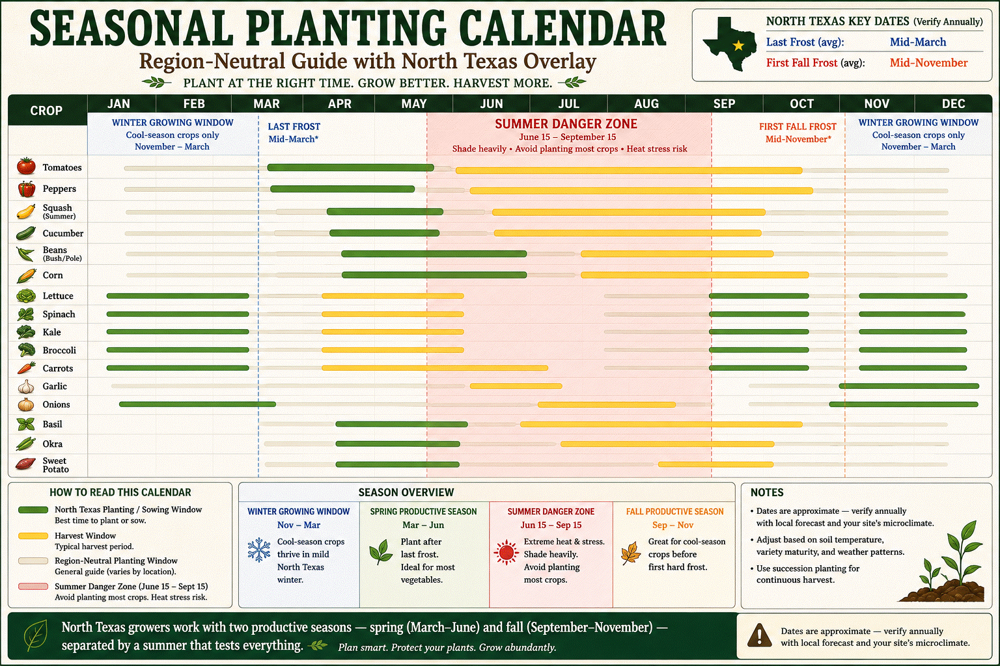
Common names / synonyms: Bed transition protocol, succession planting SOP, crop rotation timing guide, bed pivot SOP
Functional definition: The Seasonal Succession and Bed Pivoting SOP is the protocol for transitioning a bed from one crop to the next with minimum soil disturbance, maximum biological continuity, and the correct timing and inputs for each North Texas transition point. It covers four primary transition events: spring cool-season to summer warm-season (April–May), summer to fall (August–September), fall to winter cover crop (November), and winter cover crop to spring planting (February–March). Each pivot has distinct timing discipline, distinct inputs, and distinct risk factors if executed incorrectly.
The four North Texas pivot events:
Why pivot timing discipline matters more than any other variable: Each pivot has a narrow productive window defined by temperature and day length. The spring-to-summer pivot must be completed before consistent daytime highs exceed 90°F — summer crops transplanted after May 15 in North Texas face root zone temperatures above 95°F that cause transplant failure. The summer-to-fall pivot must be timed so fall crops are established before first frost risk and before the September heat breaks — fall brassicas transplanted after October 1 do not have adequate time to establish before winter.
Why minimal-disturbance transition preserves biology: The biological community that supported the previous crop — fungal networks, protozoan population, earthworm community — is the same community that will support the next crop. Rototilling or deep cultivation between crops destroys this community and requires weeks to months to re-establish. A minimal-disturbance pivot (cut at soil surface, surface amend, replant) preserves 70–80% of the existing biological community for immediate use by the incoming crop.
PIVOT 1: SPRING COOL-SEASON TO SUMMER WARM-SEASON (April 15 – May 15)
Step 1: Identify the decision trigger. Watch the plants, not the calendar. Bolting brassicas (flower stalks emerging), bitter and elongated lettuce, flowering spinach — these signal the cool-season crop has ended. In North Texas, this typically arrives April 15–30 but can range from April 1 to May 10 depending on the year.
Step 2: Harvest all remaining cool-season produce. Complete harvest before removing crops. Include bolting lettuce and brassica leaves (flavor declines but edibility remains briefly), all snap peas and sugar snaps, and any root crops still in the ground.
Step 3: Cut spent crops at the soil surface. Do not pull roots. Leave root systems in place — they decompose and feed soil biology. Cut stems at the soil surface and add to the compost pile (assuming no disease symptoms per M4-1 discard criteria).
Step 4: Apply surface amendments. Apply the spring top-dress per M1-2. At this pivot, the mineral priority is typically potassium and calcium (for upcoming tomato and pepper crops) based on the current soil test.
Step 5: Install summer transplants 2–4 weeks after crop removal. Allow 2–3 weeks for decomposing roots to mineralize nitrogen for the new crop. If the transplant window is closing: plant immediately and apply a fish hydrolysate drench (1 tablespoon per gallon, 0.5 gallon per transplant) to bridge the nitrogen gap. Install transplants per M2-3 mycorrhizal inoculation protocol.
PIVOT 2: SUMMER TO FALL (August 1 – September 15)
This is the most time-pressure pivot in North Texas. The window for fall brassica success in Zone 8b closes when daytime highs remain consistently above 90°F during establishment. But waiting until September 15 risks insufficient time before first frost for maximum production.
Step 1: Identify crops to retain and crops to remove. Retain: determinate tomatoes still setting fruit; peppers (perennial — will regrow from established plants if protected through mild winters); eggplant still producing. Remove: summer squash and cucumber (decline rapidly after August 1 in North Texas), spent or diseased warm-season crops.
Step 2: Prepare half the bed for fall crops while retaining the other half. In a mixed garden, summer crops are still productive while fall crops need to be established. Divide beds: fall transplants go in removed sections; productive summer crops remain until natural decline.
Step 3: Apply surface amendment to sections being transitioned. Apply 0.5 inch of compost to cleared sections. Apply biology drench to transitioned sections. Do not disturb sections where summer crops remain.
Step 4: Plant fall brassicas August 15 – September 1. This is the target window for broccoli, cabbage, collards, and kale transplants in Zone 8b. Planting before August 15 requires 30% shade cloth to reduce transplant heat stress — shade cloth over newly transplanted brassicas in August reduces soil surface temperature 10–15°F and improves establishment significantly. Later than September 15: brassicas will not reach adequate size before season end.
Step 5: Plant fall salad crops September 1 – October 1. Lettuce, spinach, arugula, cilantro, and radish can be seeded directly or transplanted September 1 – October 1.
PIVOT 3: FALL TO WINTER COVER CROP (November 1–30)
Step 1: Remove or terminate all fall crops. After the first hard frost or after fall crops complete production — whichever comes first. Leave perennial herbs (thyme, rosemary, oregano) in place.
Step 2: Assess beds: cover crop or protected growing. Beds with row cover infrastructure (low tunnels, floating row cover) may continue producing through winter — those beds skip the cover crop and continue to the Spring Pivot. Beds that will rest through winter get a cover crop.
Step 3: Apply light compost amendment to beds going into cover crop. Apply 0.5 inch of compost. This provides the cover crop with nutrients for establishment.
Step 4: Select cover crop species by goal. North Texas winter cover crop calendar:
Step 5: Seed, inoculate legumes, and water in. Broadcast seed evenly. Inoculate any legume component: moisten seeds, coat with appropriate Rhizobium inoculant, seed immediately. Seeding rates per 100 sq ft: cereal rye 2–3 oz; crimson clover 0.5–1 oz; Austrian winter peas 1–2 oz. Rake lightly to improve soil contact.
Step 6: Apply light straw mulch over newly seeded beds. A thin scattering of straw (not thick enough to block light) protects seeds from bird predation and maintains moisture during establishment. Remove or push aside once seedlings reach 2 inches.
PIVOT 4: WINTER COVER CROP TO SPRING (February 15 – March 15)
Step 1: Terminate cover crop before seed set. Terminate at early flowering — maximum biomass moment, before seed production diverts resources from vegetative growth. Crimson clover: first 10% of plants showing flower heads. Cereal rye: early head emergence. Austrian winter peas: first flowers open.
Termination method for home garden: cut at soil surface with a sharp hoe or pruning shears. Leave all biomass on the bed surface as surface mulch. Do not incorporate.
Step 2: Apply compost top-dress over terminated cover crop. Apply 0.5–1 inch of finished compost. This is the spring top-dress event per M1-2.
Step 3: Allow 2–4 weeks before transplanting. Cover crop decomposition immobilizes nitrogen briefly during the first 2–3 weeks. Planting immediately results in nitrogen deficiency symptoms. Wait 2 weeks minimum; 3–4 weeks is ideal for cereal rye, which decomposes more slowly than legumes in cool temperatures.
Step 4: Apply fish hydrolysate drench at transplanting. Even after the waiting period, cool temperatures (below 55°F) slow nitrogen mineralization from cover crop residue. Fish hydrolysate drench (1 tablespoon per gallon, 0.5 gallon per transplant) at planting bridges the gap.
Step 5: Proceed with transplanting per M2-3. Spring cool-season crops (broccoli, cabbage, lettuce, spinach, onions, peas) can be transplanted March 1 – April 1 in Zone 8b. Winter cover-to-spring transition beds are biologically primed — cover crop residue and root channels feed the spring soil community intensively.
The summer-to-fall pivot is the most commonly mismanaged transition in North Texas home gardens. Gardeners who wait until October to transition from summer to fall crops lose 3–4 weeks of critical growing time. Fall brassicas transplanted in October in North Texas have insufficient time to reach productive size before first frost. The correct fall transition is aggressive: remove declining summer crops in early August, amend the bed, and get fall transplants in the ground by September 1. This requires acting while summer crops are still partially productive — a psychologically difficult decision, but the correct agronomic one.
The spring-to-summer pivot timing is the most weather-variable transition. In North Texas, the difference between a late March cool snap and a mid-April heat wave can shift the optimal transplant date by 3–4 weeks. Watch local 10-day forecasts, not calendar dates. The trigger for tomato and pepper transplanting: nighttime temperatures consistently above 50°F (not just one warm night) and daytime highs expected to stay below 95°F for the first 2 weeks after transplanting.
Encyclopedia entries: Annual Top-Dress Protocol (M1-2), Mycorrhizal Inoculation at Transplant (M2-3), Cover Crop Planting and Termination SOP (M4-4), Daily Scouting SOP (M3-1), Harvesting and Post-Harvest Handling SOP (M3-4)
Book 1: Chapter 9: Seasonal Rhythms of the Soil Food Web; Chapter 12: The IPM Framework
The defining characteristic of North Texas agriculture is its seasonal contrast: brutal heat in July and August, followed by a surprisingly productive cool season from roughly November through March. Maximizing yield requires selecting crops adapted to these extremes.
When temperatures exceed 95°F, many common vegetables such as tomatoes, peppers, and squash experience physiological stress. Pollen viability, flower retention, and fruit set can decline, contributing to blossom drop. To maintain production, the grower can pivot toward crops better adapted to tropical, subtropical, or arid conditions.
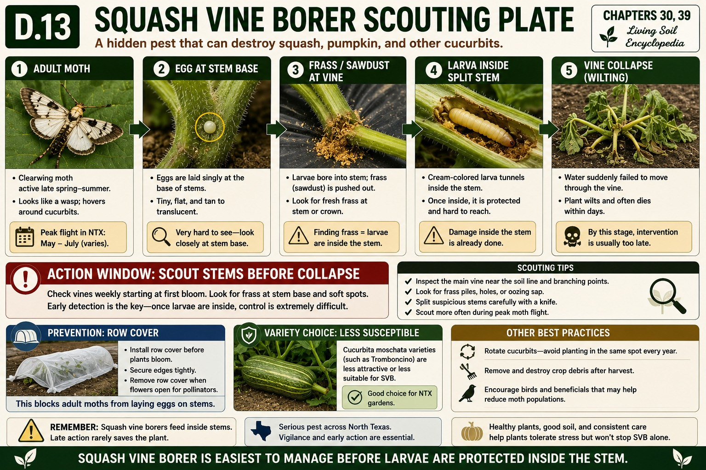
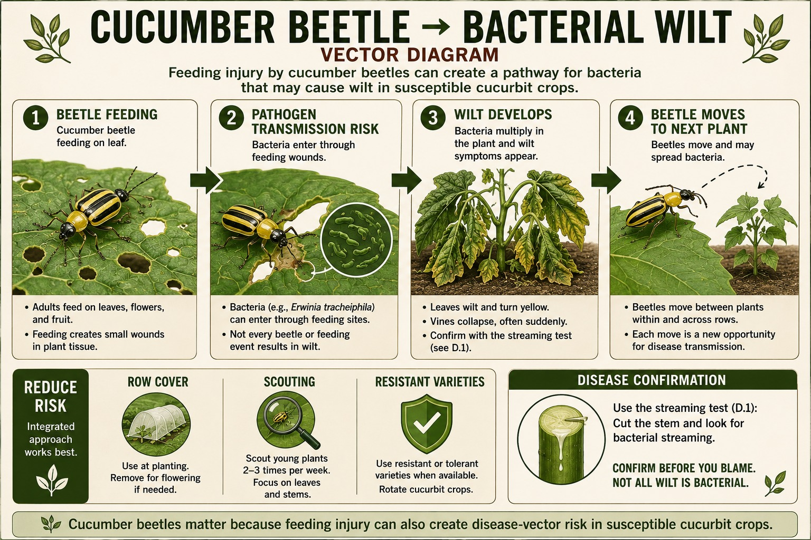
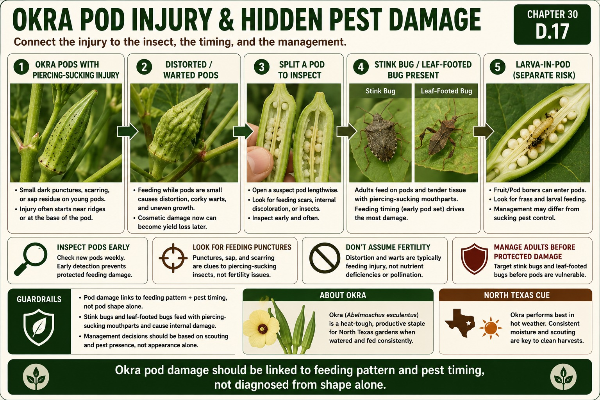
Many Texas gardeners abandon their plots in October, missing one of the more forgiving growing windows of the year. From November to March, pest pressure is often lower, and the mild temperatures allow for the cultivation of cool-season crops.
The primary risk of cool-season growing in Texas is the unpredictable late-season freeze. Growers should be prepared to deploy frost cloth or low tunnels over sensitive crops when local forecasts threaten the crop's cold tolerance; the degree of protection depends on material, setup, wind, soil moisture, and exposure.
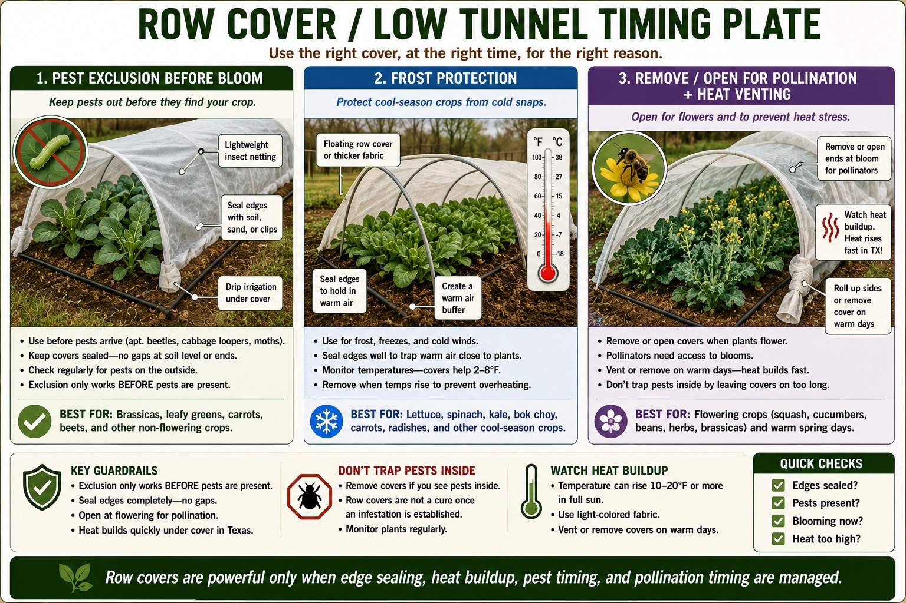
North Texas Note: Do not fight the Texas summer; lean into it. By mid-July, consider pulling exhausted spring tomatoes and planting a cowpea cover crop, or transition the bed to okra and sweet potatoes. In many gardens, this produces better results with less water and stress than trying to keep spring crops alive through peak heat.
Herbs can be ecological anchors of the regenerative garden. Unlike annual vegetables, many herbs establish longer-lived root systems and relationships with soil biology, while also providing culinary value and, in some traditions, herbal uses for the grower.
Aromatic herbs can serve several ecological functions in the living soil system:
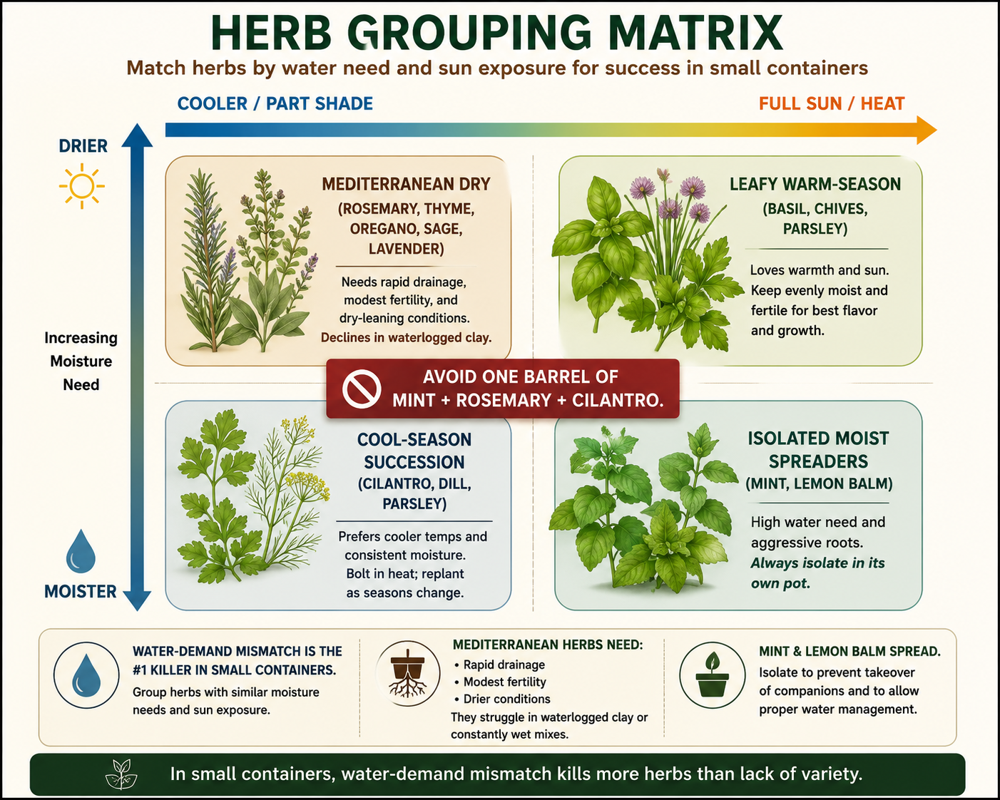
A dedicated herb block can provide culinary plants, insectary habitat, and plants used in traditional herbal practice. These plants are often resilient and require modest fertility, but human medicinal use should follow appropriate herbal or medical guidance.
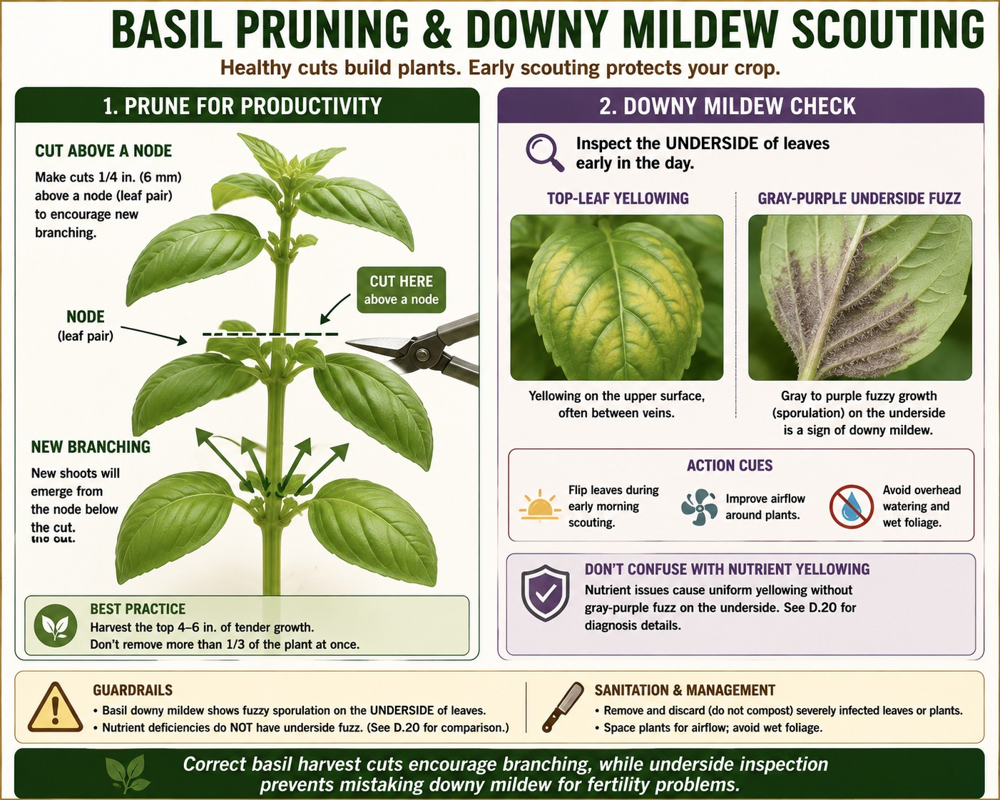
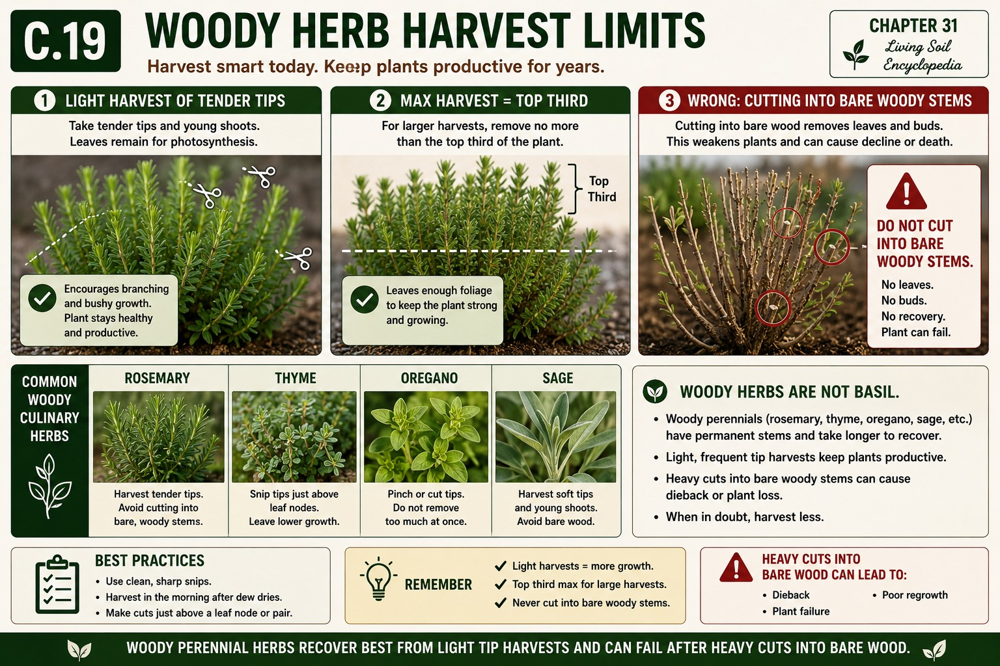
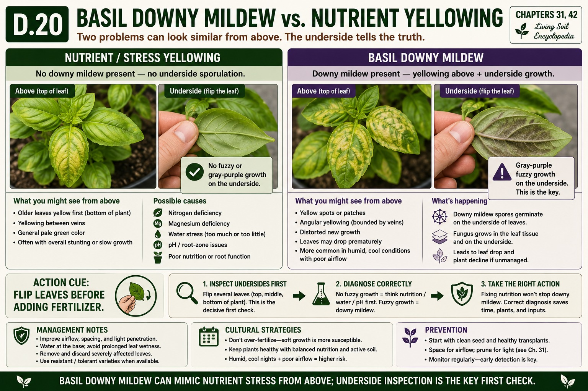
Culinary herbs can be integrated into vegetable beds to add floral resources, scent diversity, groundcover, and harvest value. Woody perennial herbs like rosemary and lavender can be placed on garden perimeters as habitat and possible scent-diversity elements, but they should not be treated as a permanent pest barrier. Low-growing herbs such as creeping thyme or oregano can serve as living mulch where water, light, and competition are managed.
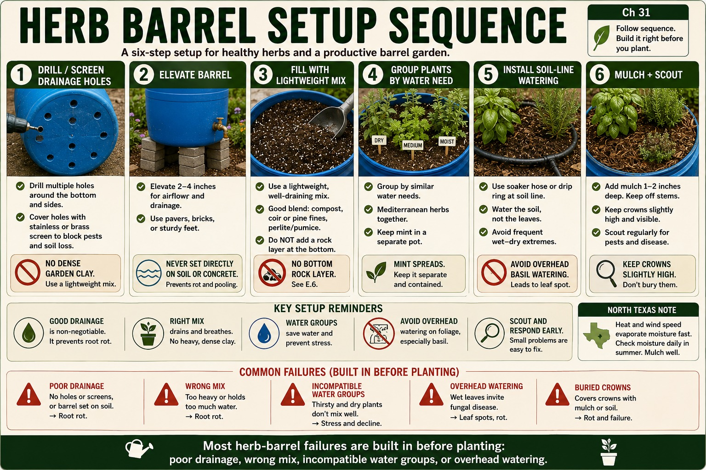
North Texas Note: Many Mediterranean herbs (rosemary, thyme, oregano) can thrive in the heat and alkaline soil of North Texas, but they are prone to decline in poorly drained, waterlogged conditions. If planting them in heavy clay, improve drainage with appropriate mineral aggregate, raised planting, or containers, especially during wet spring months.
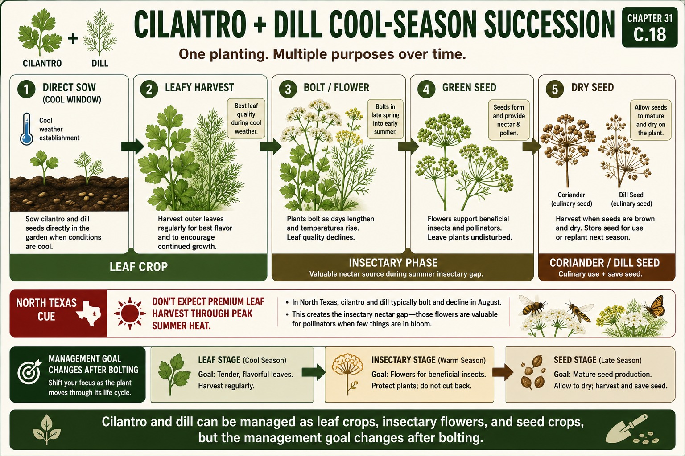
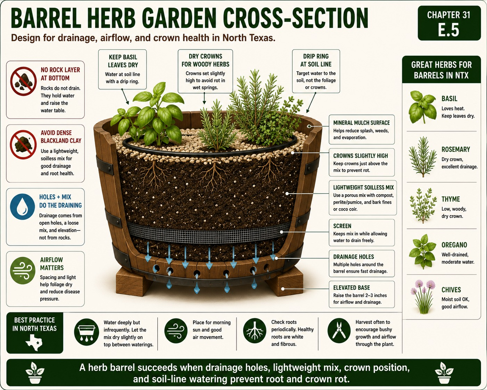
Parsley is Petroselinum crispum, a biennial culinary herb in the Apiaceae family grown as an annual or cool-season biennial for leaves. Main types include curly parsley, flat-leaf/Italian parsley, and root parsley, though leaf parsley is the common culinary garden crop. It is related to carrot, celery, cilantro, dill, fennel, and parsnip.
Functionally, parsley provides long-harvest leafy herb production, partial-shade tolerance, beneficial-insect flowers if allowed to bolt, and swallowtail butterfly host value. It is not a fast-germinating herb, not a Mediterranean drought herb like rosemary or thyme, and not reliably perennial through North Texas heat.
Parsley is grown for aromatic leaves containing volatile oils, chlorophyll-rich tissue, vitamins, minerals, and culinary flavor compounds. Flat-leaf types are often preferred for cooking because they are easier to clean and have strong flavor. Curly types are compact and ornamental but can hide grit and insects. Root parsley forms an edible taproot and needs looser soil than leaf types.
Parsley has moderate fertility needs. It is leaf-harvested, so nitrogen deficiency reduces productivity, but excessive nitrogen produces soft, pest-prone growth and diluted flavor. Texas A&M herb guidance states herbs need fertilizer but warns against overfertilization because it can produce lush growth with diminished flavor.
Parsley is slow to germinate. Seed germination can be uneven and delayed if seed is old, soil is too cold, soil dries out, or crusting occurs. It tolerates partial shade better than many vegetables; Texas home vegetable guidance lists parsley among crops that tolerate partial shade.
Parsley is not pH-neutral in preference: like most vegetables, it grows best in well-drained, fertile, moderately buffered soil. North Texas alkaline clay can produce parsley if moisture and organic matter are managed.
Parsley success depends on establishment, leaf replacement, and harvest discipline. The plant builds a basal rosette of compound leaves from a central crown. Continuous harvest works only when enough leaf area remains for photosynthesis. Cutting all foliage at once weakens the plant and slows regrowth.
Parsley’s slow germination is a key management mechanism. The crop often fails because the gardener treats it like radish or basil. A parsley seed row must stay evenly moist for a longer period. In crusting clay, seedlings may fail before they are visible. Starting transplants can bypass the hardest part, but transplant shock and taproot disturbance still matter.
This does NOT behave like rosemary, thyme, or oregano in water management. Parsley wants steady moisture and richer soil than woody Mediterranean herbs.
Parsley is biennial. In the second season, cold exposure and plant maturity can trigger bolting. Once it bolts, leaf quality declines, but flowers can support beneficial insects and seed production. Bolting is not a disease; it is the plant’s reproductive phase.
Grow parsley from transplants for reliability or direct seed where the bed can be kept moist and crust-free. Direct seed shallowly according to packet instructions; do not bury deeply. Soaking seed is sometimes used to speed germination, but should be treated as optional and seed-lot-dependent.
Procedure:
In North Texas, parsley is strongest in fall, winter protection, and spring. Summer survival is possible in afternoon shade with irrigation, but quality declines under extreme heat.
Additional North Texas handling: parsley is a long-cycle cool-season herb, not a quick garnish crop. It rewards fall establishment, winter persistence, and spring harvest, but it often declines as heat accelerates. Use it where regular cutting can keep new leaves coming without stripping the crown. Curly and flat-leaf types differ in kitchen use and leaf texture, but both require steady moisture and protection from crusting during establishment. In a mixed herb bed, parsley belongs with moist cool-season herbs, not with rosemary, thyme, lavender, or other dry Mediterranean plants.
Parsley interacts with Apiaceae pest and beneficial-insect systems. It can host black swallowtail caterpillars along with dill, fennel, and carrot. If the garden values butterfly habitat, tolerate some feeding or plant extra. If the goal is herb harvest, exclude or relocate only within legal/ethical constraints.
Parsley flowers in its second year can attract small parasitoid wasps, hoverflies, and other beneficial insects because the umbels provide accessible nectar. That insectary value appears after bolting, not during the prime leaf-harvest phase.
Parsley interacts with water and shade. Part shade can extend quality in hot weather, but too much shade reduces regrowth. It interacts with root crops and Apiaceae rotations; do not repeatedly plant parsley, carrot, dill, fennel, and cilantro in the same spot if disease pressure appears.
It interacts poorly with overhead watering in humid periods because dense foliage can hold moisture and invite disease.
Do not plant parsley in dry, hot, exposed beds and expect tender leaves. Do not direct seed into crusting clay without moisture protection. Do not harvest the whole plant repeatedly.
Common failure modes:
Do not confuse natural second-year bolting with a fertility problem. Do not treat every caterpillar as a pest if the plant is being used as habitat.
Good parsley has dark green new leaves, steady regrowth after outer-leaf harvest, and no crown rot. Slow emergence is normal, but total failure suggests old seed, dry seedbed, planting too deep, crusting, or temperature mismatch.
Diagnostics:
Verify harvest management by leaving enough foliage. If regrowth slows after heavy cutting, reduce harvest intensity and improve moisture.
Parsley is biennial. Year one produces leaves and root reserves; year two produces flower stalks, umbels, seed, and reduced leaf quality. In warm climates, it is often managed as a cool-season annual or short-lived biennial. Days to harvest vary by cultivar and transplant/direct-seed method.
Seed viability declines with age; use fresh seed or test germination. Harvested leaves store briefly refrigerated in a humid container or with stems in water. Leaves can be dried or frozen, but flavor changes.
Transplants should not be rootbound. A rootbound parsley plant may stall after planting because the taproot and crown have been restricted.
Choose flat-leaf parsley for culinary volume and curly parsley for ornamental texture. Choose root parsley only if the bed is deep and loose enough for root production.
Quality checks:
Avoid parsley transplants with circling roots, wet crowns, fungus gnats, or leaf spot. Avoid seed packets from old inventory for direct seeding.
In Lewisville, Denton, and north DFW, parsley is a fall-through-spring herb more than a July herb. It can tolerate partial shade, which is useful where full-sun beds are reserved for fruiting crops, but it still needs enough light for regrowth. Blackland clay must be kept from crusting during germination; transplants are often more reliable. In pH 7.5–8.2 soil, parsley may yellow from water stress, root restriction, nitrogen shortage, or micronutrient availability, so do not assume one cause. Summer heat of 100–110°F can make parsley tough, sparse, or dormant unless grown with afternoon shade, mulch, and steady drip irrigation. Letting a few overwintered plants flower can support beneficial insects, but leaf-harvest quality declines after bolting.
Culinary Herb Integration
Companion Planting (Mechanistic Frame)
Dill
Cilantro
Carrot
Beet
SOP — Seed Starting and Transplanting
Hybrid Irrigation Design
Cut Flowers as Functional Cover
Tissue Testing
Soil Testing
Disease Triangle
Rosemary is Salvia rosmarinus (syn. Rosmarinus officinalis), a woody evergreen culinary herb in the Lamiaceae family. It is grown for aromatic leaves, edible flowers, ornamental structure, pollinator value, and drought tolerance once established. Forms include upright, semi-upright, trailing/prostrate, cold-hardy selections, and ornamental cultivars.
Functionally, rosemary is a long-lived herb for well-drained, sunny, lean-to-moderate fertility conditions. It is not a wet-soil plant, not a heavy feeder, and not managed like basil, parsley, or mint.
Rosemary leaves contain aromatic essential oils dominated by compounds such as 1,8-cineole, camphor, α-pinene, borneol, and related terpenes, varying by cultivar, climate, harvest stage, and drying. The plant is woody, drought-tolerant after establishment, and adapted to high light and sharp drainage.
Rosemary has modest nutrient needs. Texas A&M herb guidance warns against overfertilizing culinary herbs because lush growth can reduce flavor. It prefers well-drained soil and is damaged by persistent wetness around the crown. Texas A&M Herbs for Texas Landscapes specifically warns not to pile mulch around rosemary and similar Mediterranean herbs and notes that gravel can improve drainage and reduce stem rot.
Rosemary is sensitive to extreme cold depending on cultivar and microclimate. North Texas sits near a transition zone where many rosemary plants survive ordinary winters but can die during severe freezes, especially in wet soil, exposed wind, or containers.
Rosemary success depends on drainage, oxygen at the crown, full sun, and controlled vigor. The plant forms woody stems and narrow aromatic leaves that are adapted to dry air and moderate fertility. Roots need oxygen; saturated clay causes decline more reliably than lean soil does. The crown is especially vulnerable when mulch, compost, or wet leaves hold moisture against stems.
This does NOT want the same rich, constantly moist bed as parsley or basil. Rosemary performs best when the root zone drains sharply and the foliage dries quickly.
Rosemary’s culinary quality is tied to mature, aromatic growth rather than lush nitrogen-driven growth. Excessive nitrogen and water can produce soft growth with weaker flavor and greater susceptibility to cold, pests, or disease. Light pruning encourages branching, but severe cutting into old leafless wood may not resprout well.
Rosemary flowers can support bees and other pollinators in mild periods, but it should not be treated as a complete insectary system. It is a structural herb first, pollinator plant second, and companion plant only when spacing and water needs are compatible.
Plant rosemary from transplants or cuttings rather than seed for reliable cultivar identity. Choose the sunniest, best-drained site available. In heavy clay, plant on a mound, berm, raised edge, or container with a gritty, well-drained mix. Avoid placing rosemary where roof runoff, sprinkler overspray, or low-spot drainage keeps the crown wet.
Procedure:
Do not plant rosemary in the middle of a heavily irrigated vegetable bed if tomatoes, cucumbers, or greens dictate frequent water.
Additional North Texas handling: rosemary should be treated as a woody shrub crop with culinary harvest value, not as a soft annual herb. The plant’s main failure mode in Blackland clay is wet feet followed by root decline, especially where winter rain, heavy compost, and poor drainage coincide. Plant it high, keep mulch off the crown, and harvest by selective tip cuts rather than cutting into bare old wood. A container or raised edge often outperforms a low herb bed. Rosemary does not need rich fertility; excess nitrogen and irrigation can produce soft growth more vulnerable to cold and disease.
Rosemary interacts with irrigation design. It fits better on bed edges, berms, herb mounds, rock-garden zones, or separate herb beds than inside a high-water annual vegetable row. It interacts with mulch differently from vegetables: organic mulch can moderate soil temperature, but piled mulch against stems increases rot risk.
It interacts with alkaline soil. Rosemary tolerates neutral to alkaline conditions better than many crops, making it more compatible with North Texas pH than blueberries or acid-demanding herbs. However, tolerance does not mean it wants compacted, waterlogged clay.
It interacts with pests. Rosemary is relatively pest-resistant but can host spider mites, scale, mealybugs, root rot, and fungal problems under stress. Indoor overwintered plants often fail from low light and poor air movement.
It interacts with companion design. Pair rosemary with thyme, oregano, sage, lavender, and other drainage-loving herbs. Do not pair closely with water-loving mint, parsley, cilantro, or basil unless irrigation zones are separated.
Do not plant rosemary in a wet low spot, dense clay pocket, or heavily mulched crown. Do not overwater because it looks wilted in heat; check soil moisture first.
Common failure modes:
Do not treat yellowing rosemary with more compost or nitrogen until drainage and roots are checked. Many declines are root-zone problems, not fertility problems.
Healthy rosemary has firm aromatic leaves, woody branching, and steady new growth in season. Root stress shows as dull foliage, tip dieback, browning from the inside, weak new growth, or sudden collapse after wet/cold periods. Check the crown and roots before fertilizing.
Diagnostics:
If the plant declines repeatedly in the same location, move the herb zone or switch to containers/berms.
Rosemary is a perennial evergreen shrub where hardy. It grows slowly at first, then becomes woody and long-lived if drainage and cold protection are adequate. It can be propagated from cuttings. Seed propagation is slow and variable.
Harvest sprigs as needed, avoiding removal of too much foliage at once. Texas A&M herb guidance notes clipping rosemary tops when plants are in full bloom. Dry sprigs in a warm, airy place or freeze leaves for later use. Dried rosemary stores well if kept dark, dry, and sealed; flavor fades with age.
Plants may need replacement after freeze damage, woody decline, or chronic root disease.
Choose rosemary plants by cultivar, growth habit, cold tolerance, and root health. Avoid rootbound, yellowing, wet, or pest-infested plants. Look for vigorous but not overly lush growth.
Quality checks:
Avoid florist rosemary topiaries as long-term garden plants unless hardened and managed correctly; they may be stressed by indoor conditions.
In Lewisville, Denton, and north DFW, rosemary can be excellent but fails quickly when treated like a high-water vegetable. Blackland Prairie clay holds moisture after rain, so rosemary should be planted high, in a berm, in a raised herb edge, or in a container with sharp drainage. The alkaline pH is usually less problematic than waterlogging. Summer heat is tolerated if roots are established and irrigation is deep but not constant; young transplants need protection from drying until rooted. Winter is the bigger risk during severe freezes, especially in wet soil and wind. Pull mulch back from the crown, avoid lawn sprinklers, and do not combine rosemary in the same irrigation zone as parsley, basil, or leafy greens.
Thyme
Oregano
Culinary Herb Integration
Raised Bed Materials Comparison
Hybrid Irrigation Design
Soil Recipes by Crop Type
Companion Planting (Mechanistic Frame)
Cut Flowers as Functional Cover
Parsley
SOP — Seed Starting and Transplanting
Soil Pedology Basics
Disease Triangle
Thyme is a group of low-growing aromatic perennial herbs in the Lamiaceae family, most commonly Thymus vulgaris for culinary common thyme, with lemon thyme, creeping thyme, and other species or hybrids also grown. It is used as a culinary herb, edging plant, pollinator flower, and drought-tolerant groundcover where conditions are dry and well drained.
Functionally, thyme is a drainage-loving, low-nutrient, sun-adapted herb. It is not a lush leafy herb, not a wet-clay groundcover, and not a living mulch for heavily irrigated vegetable rows.
Thyme leaves contain essential oils, with thymol, carvacrol, linalool, and other terpenes varying by species, cultivar, climate, and harvest timing. Plants are small, woody at the base, shallow-rooted to moderately rooted, and intolerant of stagnant moisture around the crown. Thyme prefers full sun, lean-to-moderate fertility, and well-drained soil.
Texas A&M Herbs for Texas Landscapes advises pulling mulch back from Mediterranean herbs such as rosemary, sage, and thyme, and notes that gravel around them can improve drainage and reduce stem rot. Growing Herbs in Texas also emphasizes sunny, well-drained locations and warns against excessive nitrogen because it reduces culinary herb flavor.
Thyme is slower-growing than basil, cilantro, or parsley. It can be evergreen or semi-evergreen depending on winter severity. It is less tolerant of heavy shade than parsley, and less tolerant of wet soil than mint.
Thyme success depends on maintaining a dry crown, adequate sun, and moderate growth. Its small aromatic leaves are adapted to lower water demand than leafy annual herbs. The plant stores flavor compounds in leaf tissues; excessive fertilizer and water can push soft growth that is less aromatic and more disease-prone.
This does NOT function as a wet-season living mulch under tomatoes or peppers. Thyme can cover soil in a dry herb border, but it does not tolerate the constant water and disturbance of annual vegetable production.
The plant’s low canopy can reduce bare soil in herb beds, but weed-suppression capacity is limited until fully established. It flowers with small blooms that support bees and small beneficial insects, but the main crop purpose remains culinary leaf harvest.
Thyme declines when its crown stays moist, when mulch buries stems, when shade reduces vigor, or when old woody centers are not refreshed. Light clipping encourages density; severe cutting into old wood can leave gaps.
Plant thyme from transplants or cuttings for reliable cultivar identity. Seed is possible but slower and variable. Use a raised, sunny, sharply drained location. In clay, plant on a mound, bed edge, rock border, or container.
Procedure:
Do not plant thyme where sprinklers hit daily. Do not bury stems under compost. Do not place it between aggressive vegetables that will shade or overrun it.
Additional North Texas handling: thyme is a small, low woody herb that fails more often from crowding, wet crowns, and shade than from low fertility. It should be placed at the edge of a raised dry herb strip, between stepping stones, in a container, or in a berm where drainage is sharp and harvest access is easy. Trim lightly and often during active growth rather than shearing into old woody stems. In summer, the plant benefits from afternoon heat relief only if airflow remains open. In winter and spring, avoid burying the crown under compost, leaves, or wet mulch.
Thyme’s kitchen value depends on leaf concentration and drying quality. Harvest stems once dew has dried, bundle loosely, or dry on screens in shade with airflow. Do not wash immediately before drying unless the stems are dirty; added water extends drying time and increases mold risk.
Thyme pairs well with rosemary, oregano, sage, lavender, and other low-water herbs. It pairs poorly with mint, parsley, basil, cilantro, and vegetables needing frequent irrigation unless drainage zones are separated.
It interacts with soil pH. Thyme tolerates neutral to alkaline soil better than acid-demanding crops, so North Texas pH is usually acceptable if drainage is corrected. It interacts with heat: established thyme handles heat better than many leafy herbs, but black containers or reflective surfaces can overheat roots.
It interacts with pollinators. Blooming thyme can attract bees and small beneficial insects, but repeated heavy harvesting before bloom reduces that function.
It interacts with mulch. Gravel or mineral mulch around the crown can improve drying; thick organic mulch can increase rot risk.
Do not plant thyme in low, wet, compacted, or heavily amended clay. Do not overwater or overfertilize.
Common failure modes:
Do not assume thyme’s drought tolerance means no establishment water. New plants need steady moisture until rooted, then less frequent watering.
Healthy thyme has dense, aromatic shoots and firm stems. Decline appears as blackened crown, gray/brown stems, sparse foliage, weak aroma, or center die-out.
Diagnostics:
Check soil moisture before watering. Thyme can look stressed from both drought and root rot, but the correction is opposite.
Thyme is perennial where conditions and winter survival allow. Plants become woody with age and may need renewal every few years. Propagation by cuttings, division, or layering is more reliable than seed for named cultivars.
Harvest sprigs before or during bloom depending on flavor preference. Texas A&M herb guidance notes that thyme tops can be clipped when in full bloom. Dry in airy shade or use fresh. Dried thyme stores well if kept dark, dry, and sealed; flavor fades over time.
Avoid harvesting more than the plant can regrow, especially during heat or after transplanting.
Choose thyme by species and culinary purpose. Common thyme is standard; lemon thyme has citrus aroma; creeping thyme is often more ornamental; woolly thyme is not usually preferred for cooking.
Quality checks:
Avoid unlabeled “thyme” where culinary quality matters. Avoid plants from wet nursery benches with blackened stems.
Because thyme is low and fine-stemmed, weed competition changes the harvest faster than with upright herbs. Keep the plant edge clean, avoid grass invasion, and use light mineral or coarse organic mulch that does not bury the crown.
In Lewisville, Denton, and north DFW, thyme can be very useful if planted high and dry. Blackland Prairie clay is the main challenge: it can stay wet after rain and then bake hard in heat. Thyme should not be placed in the center of heavily irrigated vegetable beds. It performs better on berms, raised edges, gravelly herb strips, containers, or rock-bordered areas with drip irrigation that can be reduced after establishment. Alkaline pH is usually tolerable, but crown moisture is not. During 100–110°F weather, established thyme can hold better than parsley or cilantro, but small containers may overheat and dry too fast. Pull mulch away from stems and avoid overhead irrigation that keeps foliage wet.
Rosemary
Oregano
Culinary Herb Integration
Cut Flowers as Functional Cover
Companion Planting (Mechanistic Frame)
Soil Recipes by Crop Type
Hybrid Irrigation Design
Raised Bed Materials Comparison
Parsley
Disease Triangle
SOP — Seed Starting and Transplanting
Soil Pedology Basics
Oregano is a common name applied to several aromatic perennial herbs in the Lamiaceae family, most often Origanum vulgare and its culinary subspecies/selections, including Greek oregano. Related culinary herbs include marjoram (Origanum majorana) and Mexican oregano (Lippia graveolens), which is not a true Origanum. This entry focuses on true oregano used as a perennial culinary herb.
Functionally, oregano is a spreading, sun-loving, drainage-tolerant herb grown for leaves and flowers. It is more vigorous and spreading than thyme, less woody than rosemary, and not the same crop as Mexican oregano.
Oregano leaves contain aromatic volatile oils, often including carvacrol and thymol depending on species, cultivar, climate, and harvest timing. Culinary quality varies widely; some ornamental oregano forms are attractive but weakly flavored. Greek oregano and selected culinary strains generally have stronger flavor than generic seed-grown oregano.
Oregano prefers full sun and well-drained soil. It tolerates leaner conditions than parsley or basil, but it can accept moderate fertility. Excess nitrogen can produce lush growth with weaker flavor, consistent with Texas A&M herb guidance warning against overfertilizing culinary herbs.
Oregano spreads by crowns, stems, and sometimes seed depending on cultivar. It can behave as a manageable perennial clump, a loose groundcover, or an aggressive edge plant. In favorable conditions, it may need containment. It is not as moisture-sensitive as thyme, but it still dislikes saturated soil.
Oregano success depends on sun, drainage, periodic cutting, and containment. The plant produces aromatic leaves on herbaceous to semi-woody stems. Frequent light harvest encourages branching and tender growth. If allowed to flower, it provides nectar for bees and small beneficial insects, but leaf texture and flavor may shift after bloom.
This does NOT mean every plant labeled “oregano” has strong culinary flavor. Oregano quality is cultivar-dependent; ornamental or seed-grown plants can be mild or inconsistent.
Oregano can function as a border herb or semi-groundcover, but it competes with small seedlings if planted inside annual vegetable rows. Its spreading habit is useful in a dedicated herb strip and troublesome in beds that are tilled, replanted, or intensively seeded.
Its aromatic compounds are real, but field claims that oregano repels pests from neighboring vegetables are not reliable without mechanism-specific evidence. The strongest use is harvestable herb plus flower resource, not pest-control guarantee.
Plant oregano from transplants, divisions, or cuttings when culinary quality matters. Seed-grown oregano is acceptable for experimentation but can be variable. Place it in full sun or light afternoon shade in extreme heat. Use well-drained soil and avoid low wet spots.
Procedure:
Oregano works well with rosemary, thyme, sage, and other lower-water herbs, but it may need more control than thyme.
Additional North Texas handling: oregano is more vigorous than thyme and should be managed as a spreading perennial herb rather than a delicate garnish. It tolerates leaner soil and periodic drought once established, but it still needs drainage and airflow. Harvest before or at early bloom for strong culinary quality, then cut back to stimulate clean regrowth. In rich moist beds, oregano can sprawl and crowd nearby seedlings; give it an edge position, container, or perennial strip rather than the center of an annual vegetable bed.
For storage, oregano is one of the more forgiving dried herbs. Stems can be air-dried in small bundles or on screens, then stripped after drying so leaves retain more aroma. Do not store damp leaves in sealed jars; they must be fully dry before storage.
Oregano interacts with pollinators and beneficial insects when flowering. Small flowers can support bees, syrphid flies, parasitic wasps, and other small insects. If the goal is leaf harvest, harvest before full bloom; if the goal is insectary value, let some stems flower.
It interacts with water. Oregano is more forgiving than rosemary in moderately moist soil but still fails in saturated clay. It interacts with competition: spreading oregano can suppress small weeds but can also suppress direct-seeded vegetables.
It interacts with winter. In North Texas, true oregano often survives ordinary winters, but severe freezes, saturated soil, or exposed containers can cause dieback.
It interacts with identity confusion. Mexican oregano is a different plant with different heat tolerance and flavor; marjoram is related but milder and less cold-hardy. Do not substitute without labeling.
Do not plant oregano where it will invade a precision-seeded annual bed. Do not assume all oregano tastes good. Do not overwater or overfertilize.
Common failure modes:
Do not use oregano as a primary pest repellent. It may contribute to habitat diversity, but it does not replace IPM.
Healthy oregano is dense, aromatic, and regrows after cutting. Check flavor by tasting a small leaf from the actual plant before scaling production. If the flavor is weak, more fertilizer is usually not the answer; check cultivar, sun, harvest timing, and nitrogen level.
Diagnostics:
A successful oregano planting is one that produces harvestable stems without becoming a weed in the vegetable rotation.
Oregano is perennial where hardy. It grows from crowns and spreading stems, flowers in warm seasons, and may die back or slow in winter. Plants can be divided, layered, or propagated from cuttings. Seed-grown plants vary.
Harvest before bloom for strong leaf quality, or at early bloom for drying bundles depending on preference. Dry stems in airy shade, then strip leaves. Store dried oregano in sealed containers away from light and heat. Flavor declines with time.
Renew plants when centers become woody or productivity declines. Container oregano may need repotting or division.
Choose named culinary oregano when flavor matters. Greek oregano is often preferred for strong flavor; golden or ornamental forms may be decorative but weaker.
Quality checks:
Avoid generic “oregano” seedlings from seed racks if uniform culinary quality is required. Avoid plants labeled Mexican oregano if the recipe or garden plan needs true oregano.
In Lewisville, Denton, and north DFW, oregano is one of the more useful perennial culinary herbs if given drainage and sun. It tolerates alkaline soil better than many acid-loving crops, but Blackland clay still needs structure and drainage. Oregano should be planted in a dedicated herb strip, container, or bed edge rather than inside annual vegetable rows where its spread interferes with seeding and cultivation. Summer heat is manageable with establishment water and mulch kept off the crown, but small containers can overheat. Severe freezes can knock plants back, especially in wet soil. Oregano’s strongest North Texas role is culinary harvest plus insectary bloom in a low-water herb zone—not a guaranteed pest repellent for tomatoes or squash.
Thyme
Rosemary
Culinary Herb Integration
Companion Planting (Mechanistic Frame)
Cut Flowers as Functional Cover
Allelopathy
Hybrid Irrigation Design
Soil Recipes by Crop Type
Raised Bed Materials Comparison
Parsley
Disease Triangle
SOP — Seed Starting and Transplanting
Culinary herb integration is the deliberate placement of edible herbs inside, beside, or around vegetable production areas so the same planting can serve more than one function. A well-placed herb can provide kitchen harvest, insectary bloom, pollinator support, aromatic diversity, perennial edge structure, ground coverage, and seasonal habitat. That does not make herbs magic pest repellents. A basil plant beside a tomato does not stop hornworms, spider mites, early blight, bacterial spot, heat stress, or irrigation failure. Herbs are useful when their function, season, water need, and growth habit are matched to the bed.
The first rule is to separate folklore from mechanism. The strongest herb-integration mechanisms are harvest stacking and beneficial-insect support. Cilantro, dill, fennel, parsley, chives, oregano, thyme, basil, and other herbs can produce flowers that are accessible to small parasitoid wasps, syrphid flies, bees, and other beneficial insects when bloom timing and surrounding habitat support them. The weakest claims are universal repellency, improved flavor of neighboring crops, and disease control without a named pest, crop, density, timing, or source.
Herbs should be grouped by lifecycle and water regime. Warm-season annual herbs such as basil, Thai basil, holy basil, and perilla belong in warm beds with steady moisture and regular harvest. Cool-season annual or biennial herbs such as cilantro, dill, parsley, chervil, and leaf fennel are strongest in spring and fall and may shift from leaf crop to insectary crop once they bolt. Woody Mediterranean herbs such as rosemary, thyme, oregano, sage, marjoram, lavender, and winter savory need sharper drainage, lower fertility, and more airflow. Aggressive mint-family herbs such as mint and lemon balm need containers or controlled edges.
Use placement instead of wishful companion planting. Keep woody Mediterranean herbs on bed edges, berms, rock borders, dry strips, or containers where crowns stay drained. Use annual herbs as seasonal intercrops only where they will not crowd vegetable canopies. Let some herbs bloom intentionally rather than harvesting every plant for leaves. Contain aggressive herbs before they enter annual vegetable beds. Separate basil and parsley irrigation from rosemary and thyme irrigation. Keep airflow around tomatoes, peppers, cucurbits, and brassicas. Use succession: cilantro and dill for cool windows, basil for warm windows, perennial herbs for permanent edge structure.
Herbs interact strongly with irrigation. Basil, parsley, cilantro, dill, and mint often need steadier moisture than rosemary, thyme, oregano, sage, lavender, and bay. Mixing these on one drip zone creates predictable failures: basil wilts while rosemary rots, or rosemary survives while cilantro bolts and dries. Herbs also interact with fertility. High nitrogen may make basil lush, but it can reduce resilience or aromatic concentration in some Mediterranean herbs and push soft growth that is more vulnerable to stress. Woody herbs should not be managed like lettuce.
Herbs also interact with pest pressure. Flowering herbs can support beneficial insects, but herbs can host pests too: aphids on dill, caterpillars on parsley/fennel/dill, spider mites on drought-stressed herbs, leaf spots in crowded parsley, and root or crown rot in wet Mediterranean herbs. Integration should therefore be paired with scouting, not assumed to be self-regulating.
Harvest planning matters. A plant harvested hard for leaves may never flower. A plant allowed to flower may become less useful for kitchen harvest. The cleanest design is to designate some plants as harvest plants and some as insectary plants. For example, harvest most basil tips to keep plants vegetative, but allow one or two holy basil or Thai basil plants to flower for bees. Harvest cilantro leaves early, then let a few plants flower and set coriander seed.
Avoid herb integration when it reduces the main crop. Do not tuck herbs into every empty space. Do not plant mint in open beds. Do not put rosemary in a heavily irrigated cucumber row. Do not crowd tomato airflow with basil or dill. Do not expect aromatic plants to replace row cover, Bt, sanitation, resistant varieties, disease management, or irrigation discipline.
NORTH TEXAS NOTE: In North Texas, herb integration works best as seasonal zoning. Spring and fall are strong windows for cilantro, dill, parsley, chives, and cool-season herb flowers. Basil is a warm-season annual but can decline under disease or heat stress without airflow and steady water. Rosemary, thyme, oregano, sage, and lavender usually need drainage protection more than fertility. In Blackland clay, place Mediterranean herbs in raised, gritty, well-drained edges or containers, and keep wet mulch away from crowns. During 100–110°F periods, afternoon shade can help leafy herbs, but stagnant shade without airflow can increase disease.
Herbs are often treated as decorative extras, but in a North Texas living-soil garden they are working crops. They provide kitchen harvests, insectary bloom, perennial edges, pollinator and natural-enemy resources, pest-scouting indicators, seasonal transition markers, and small-space productivity. They also reveal whether the grower understands microclimate. Cilantro, dill, parsley, basil, rosemary, thyme, mint, fennel, oregano, sage, lavender, lemongrass, bay, chives, garlic chives, Mexican mint marigold, epazote, and lemon balm do not want the same soil, water, light, harvest timing, or storage method.
This chapter does not treat “herbs” as one crop. A single “herb bed” with one irrigation schedule is one of the most common reasons herbs fail. In North Texas, herbs must be grouped by growth season, root behavior, water demand, drainage tolerance, heat tolerance, harvest stage, and postharvest handling. Basil is a warm-season leaf crop and is chilling-sensitive after harvest. Cilantro is a cool-season herb that bolts when heat rises. Dill is direct-seeded and short-lived. Rosemary, thyme, oregano, sage, and lavender demand drainage. Mint demands containment. Lemongrass demands heat, water, and frost planning. Bay laurel demands correct identification.
Texas A&M distinguishes herbs from spices by use: herbs are commonly fresh cut leaves or soft plant parts, while spices are often processed seed, bark, root, or similar plant parts. That distinction matters because basil leaves, cilantro leaves, coriander seed, dill seed, fennel bulb, rosemary stems, thyme sprigs, bay leaves, and lemongrass stalks are grown, harvested, processed, and stored differently.
The goal of this chapter is operational: decide where each herb belongs, how to grow it in North Texas, when to harvest it, how to process it without destroying quality, and what storage method protects the crop. This chapter does not make medicinal claims, does not give dosage advice, does not discuss essential-oil therapeutic use, and does not treat herbs as substitutes for scouting, crop rotation, irrigation, sanitation, or IPM.
North Texas Blackland clay makes drainage management the first herb decision. Rosemary, thyme, oregano, marjoram, sage, lavender, and bay laurel want sharp drainage and moderate fertility. Mint, parsley, cilantro, basil, chives, garlic chives, Vietnamese coriander, shiso, and lemongrass want more consistent moisture. Putting all of them into one bed forces at least one group into the wrong conditions.
A dry herb strip should be raised, well-drained, lightly mulched, and watered deeply but less often once plants are established. It should not receive the same emitter schedule as basil, parsley, cilantro, or mint. A moist kitchen herb bed should have drip irrigation, organic matter, surface mulch after establishment, and seasonal replanting. A containment/insectary edge should hold mint, lemon balm, garlic chives, yarrow, fennel, oregano flowers, basil flowers, cilantro flowers, dill flowers, Mexican mint marigold, and other flowering herbs where spread or reseeding can be managed.
Cilantro, dill, parsley, fennel, chervil, and many leafy herbs are cool-season or shoulder-season herbs. Basil, Thai basil, lemon basil, holy basil, lemongrass, epazote, Vietnamese coriander, and shiso are warm-season herbs. Rosemary, thyme, oregano, sage, chives, mint, bay, lavender, lemon balm, and Mexican mint marigold are perennial or semi-perennial herbs with species-specific winter behavior.
Cilantro is the clearest example. Texas A&M states that cilantro grows best at 50–85°F, tolerates cold, and starts bolting when temperatures exceed 85°F; it recommends February planting for April harvest and September planting for November harvest in Texas. That means a North Texas grower should not fight cilantro through July. The correct summer replacements are basil, Thai basil, epazote, lemongrass, shiso, Vietnamese coriander, and other heat-season herbs.
Herbs are not harvested at one universal stage. Basil is kept vegetative by cutting above nodes and removing flower spikes. Cilantro leaves are harvested before bolting, while coriander seed is harvested after seed maturity. Dill fronds are harvested before flowering, while dill seed is harvested after seed heads mature. Thyme, oregano, sage, and rosemary are often harvested before or around bloom depending on use. Lemongrass is harvested by stalk. Bay leaves are harvested mature. Mint and lemon balm are cut repeatedly to keep tender regrowth.
A grower who harvests all herbs “whenever needed” will get uneven quality. Harvest too late and cilantro becomes coriander, basil becomes woody and floral, dill becomes seed, mint becomes coarse, and lavender loses the tight bud stage. Harvest too hard and rosemary, thyme, lavender, and sage lose recovery capacity in heat. Harvest stage is a production decision, not a kitchen afterthought.
The most important postharvest rule in this chapter is that basil is not stored like most other herbs. UC Davis states that most fresh culinary herbs store best near 32°F, but basil and shiso are chilling-sensitive and should be stored above 50°F. UC ANR similarly lists thyme, oregano, rosemary, mints, sage, parsley, cilantro, savory, marjoram, dill, and tarragon as herbs whose optimum postharvest temperature is about 32°F, with shelf life of 3–4 weeks possible under proper conditions.
Practical rule:
Herb preservation in oil is a food-safety topic, not a casual storage method. Herbs and vegetables in oil can create botulism risk if handled incorrectly; homemade infused oils require extension-tested acidification/refrigeration guidance and must not be treated as ordinary pantry storage.
Flowering herbs can support natural enemies by providing nectar, pollen, shelter, and sometimes alternate prey. UC IPM describes insectary plants as plants that provide nectar, pollen, shelter, and alternate prey for natural enemies and pollinators. That supports herbs as part of IPM design. It does not mean herbs repel pests universally or eliminate scouting. Companion-planting claims remain practitioner doctrine unless the mechanism, target pest, timing, and evidence are specific.
Suitable herbs: rosemary, thyme, oregano, sweet marjoram, sage, lavender, winter savory, and bay laurel in a nearby container.
This bed should be the highest and best-drained herb zone. In Blackland clay, use a raised strip, berm, stone-edged bed, gravelly container cluster, or sharply drained edge. Do not put this group in a low bed or a heavily composted moisture-retentive bed. Add compost only enough to improve tilth; do not create a rich wet sponge. Use drip irrigation, but keep the emitter schedule separate from basil, mint, parsley, cilantro, and lemongrass.
The surface can be mulched, but avoid burying woody crowns. Coarse mulch, pea gravel, stone mulch, or very shallow coarse organic mulch can work better than deep fine compost around rosemary, lavender, thyme, and sage. These herbs need oxygen around the crown and roots. Texas A&M’s herb landscape guidance warns that lavender, rosemary, sage, and thyme grow best when leaves stay mostly dry and that lingering moisture encourages fungal disease.
What this bed does NOT do: a Mediterranean herb strip does not replace crop rotation for vegetable beds. It is a perennial edge or dedicated herb zone. It also does not need constant fertility. Overwatering and overfeeding are more common failures than starvation.
Processing and storage from this bed: woody herbs are often best dried rather than refrigerated for long storage. Harvest stems in the morning after dew dries. Rinse only if necessary; wet herbs dry more slowly and can mold. Tie small bundles or lay stems on screens in shade with airflow. Once leaves are crisp, strip leaves from stems and store whole leaves in airtight jars away from heat and light. Crush only when using; crushed herbs lose aroma faster.
Suitable herbs: basil, cilantro, dill, parsley, chives, garlic chives, Florence fennel, shiso/perilla, Vietnamese coriander, cutting celery, leaf fennel, and seasonal edible flowers.
This bed is seasonal. In fall and winter it holds cilantro, parsley, dill, fennel, chives, and garlic chives. In late spring and summer it pivots to basil, Thai basil, lemon basil, holy basil, shiso, Vietnamese coriander, lemongrass, and epazote. It should have drip irrigation, a fine seedbed for small-seeded herbs, light mulch after seedlings establish, and enough organic matter to buffer moisture without becoming anaerobic.
This bed can be richer than the Mediterranean strip, but fertility still needs restraint. Too much nitrogen produces soft basil, aphid-prone cilantro, floppy dill, and weak parsley. Compost, moderate organic fertility, and steady moisture are better than repeated high-nitrogen pushes. Do not use this bed as a dumping place for unfinished compost, fresh manure, or high-salt inputs.
What this bed does NOT do: a moist herb bed does not stay in one planting all year. It is a bed-pivot system. Cilantro exits when heat rises; basil enters when soil warms. Basil exits at frost; cilantro and dill return in fall. Parsley may bridge the seasons but usually declines as summer stress builds.
Processing and storage from this bed: tender herbs are processed quickly. Remove field heat, sort out yellow or damaged leaves, and store by crop. Cilantro, parsley, dill, chives, mint, and lemon balm can be refrigerated. Basil should not go into a cold refrigerator; hold it above 50°F, often with stems in water and a loose bag over the top for short-term use. For longer storage, freeze basil as pesto-style cubes, chopped leaves, or herb cubes rather than relying on drying if fresh flavor is the goal. Any oil-based freezing or preservation method should follow extension food-safety guidance.
Suitable herbs: mint, lemon balm, yarrow, fennel, garlic chives, oregano flowers, thyme flowers, basil flowers on selected plants, cilantro/coriander flowers, dill flowers, parsley flowers, Mexican mint marigold, mountain mint where adapted, and other managed flowering herbs.
This is not the main annual vegetable bed. It is an edge, container row, path border, pollinator strip, or permanent guild zone. Use it to keep aggressive herbs out of rotation beds while still benefiting from harvest and flowers. Mint and lemon balm belong here or in containers, not in a vegetable rotation bed. Fennel belongs here if the goal is seed and insectary bloom; Florence fennel grown for bulbs may belong in a cool-season kitchen bed but should still be tracked because it is large and competitive.
Insectary herbs should bloom in sequence. Spring bloom from cilantro, dill, parsley, and chives is useful but does not feed beneficial insects in July. Summer basil, oregano, mint, yarrow, coreopsis, zinnia, and native flowers extend resources. Fall garlic chives, Mexican mint marigold, basil, asters, and goldenrod continue the sequence. The planting should be scouted as carefully as the crop bed because it can also host aphids, caterpillars, mites, or reseeding problems.
What this zone does NOT do: an insectary edge does not eliminate pest scouting. It does not validate every companion-planting claim. The mechanism is habitat support, not universal pest repulsion.
Containers are not only for patios. In North Texas they are the safest way to grow mint, lemon balm, bay laurel, lemongrass for overwintering, rosemary in wet yards, and trial lavender in heavy clay. Containers give drainage control, root containment, portability, and frost management. They also dry quickly in heat, accumulate salts faster than beds, and depend on regular irrigation.
Use large containers for woody perennials. Small pots overheat and dry too fast. Mint can survive in smaller pots but performs better in a wide, heavy container. Lemongrass needs a large pot or it becomes root-bound and dries daily in summer. Bay laurel is slow-growing and container-friendly, but the pot must drain and the plant must be protected in severe cold. Container soil should be well-drained, not garden clay. A saucer that holds water under rosemary, thyme, sage, lavender, or bay is a failure mode, not a moisture reserve.
| Herb | North Texas season | Best bed type | Water need | Harvest stage | Best processing | Storage warning |
|---|---|---|---|---|---|---|
| Basil | Warm season | Moist kitchen bed / container | Moderate, steady | Vegetative tips before bloom | Fresh, freeze, pesto-style cubes, dry secondary | Store above 50°F |
| Cilantro | Fall–spring | Moist kitchen bed | Steady | Leaves before bolt; seed after brown | Fresh, freeze; dry seed | Bolts in heat |
| Dill | Spring/fall | Moist but drained bed | Moderate | Fronds before bloom; seed after maturity | Fresh, freeze, dry seed | Direct seed; do not rely on mature transplants |
| Fennel | Fall/spring trial | Dedicated edge/bed | Steady for bulb | Fronds anytime; bulb firm; seed dry | Fresh bulb/fronds, dry seed | Common fennel ≠ Florence fennel |
| Parsley | Fall–spring | Moist kitchen bed | Steady | Outer stems | Fresh, freeze, dry | Slow germination |
| Chives | Perennial edge/container | Moist/moderate | Moderate | Leaves before tough | Fresh, freeze | Drying weakens flavor |
| Garlic chives | Perennial edge/container | Moderate | Moderate | Leaves; selected blooms | Fresh, freeze | Can reseed |
| Mint | Container/contained | Moist containment zone | High/moderate | Tender stems before bloom | Fresh, dry, freeze | Invasive if uncontained |
| Oregano | Dry strip | Dry/drained | Low/moderate | Before/early bloom | Dry | Avoid wet crown |
| Thyme | Dry strip/container | Very drained | Low | Sprigs before/at bloom | Dry | Crown rot in wet clay |
| Rosemary | Dry strip/container | Drained | Low/moderate | Light sprig harvest | Fresh/dry/freeze | Wet roots and freeze injury |
| Sage | Dry strip | Drained | Low/moderate | Leaves before bloom | Dry | Declines in wet humidity |
| Lavender | Berm/container | Very drained | Low | Bud color before decline | Dry flowers | Wet clay failure |
| Lemongrass | Summer bed/container | Moist/warm | Moderate/high | Thick stalks | Fresh/freeze/dry leaves | Frost-tender |
| Bay laurel | Container | Drained | Moderate | Mature leaves | Dry | Use true bay only |
| Mexican mint marigold | Warm/fall | Bed/container | Moderate | Leaves/flowers | Fresh/dry | Frost dieback |
| Epazote | Warm season | Edge/container | Moderate | Young tips | Fresh/dry/freeze | Manage reseeding |
| Lemon balm | Spring–fall perennial | Container/edge | Moderate | Stems before bloom | Fresh/dry/freeze | Can reseed/spread |
| Shiso | Warm season | Moist kitchen bed/container | Moderate | Tender leaves | Fresh; process by recipe | Store above 50°F |
| Vietnamese coriander | Summer | Moist bed/container | Moderate/high | Tender tips | Fresh | Frost-tender |
Best North Texas role: Basil is the main summer leaf herb. It belongs in the warm-season kitchen herb bed, large containers, or annual herb rows after frost. It pairs well with drip irrigation, mulch, regular pruning, and succession planting.
Growing preferences: Basil likes warm soil, warm nights, full sun to light afternoon relief, steady moisture, and good drainage. It should not be transplanted into cold spring soil. Wait until frost danger has passed and soil is warm. A practical North Texas outdoor planting window is mid-April through summer, with fall transplants only where frost timing allows. Grow basil 10–18 inches apart depending on cultivar. Compact globe types can be closer; Genovese and Thai basil need more space. Use drip irrigation or water at soil level. Avoid overhead evening watering where downy mildew has been a problem.
Planting / propagation notes: Basil can be direct-seeded after soil warms, but transplants are usually more reliable for first plantings. Pinch early to encourage branching. Succession plant if the kitchen needs continuous young leaves. Do not rely on old woody basil plants to carry the entire season.
Harvest timing: Begin cutting once plants are established and have several leaf pairs. Cut above a node, leaving at least two sets of leaves below the cut. Remove flower spikes as soon as they form if leaf production is the goal. If insectary function is desired, allow only selected plants to flower and keep culinary plants vegetative. Basil does not keep producing high-quality leaves if allowed to flower unchecked.
Processing: For fresh use, harvest in the morning after dew dries. Do not bruise leaves. Remove damaged leaves and woody stems. Do not wash until use unless leaves are dusty; if washing, dry thoroughly. For freezing, chop basil or puree with oil for pesto-style storage, then freeze in small portions and follow food-safety guidance. Do not rely on dried basil for the same flavor as fresh basil; drying changes aroma.
Storage: Basil is chilling-sensitive. Store above 50°F, not in a standard cold refrigerator. UC Davis states that basil and shiso should be stored above 50°F and can have 1–2 weeks shelf life depending on water loss. For home use, hold stems in a jar of water at room temperature, loosely cover the leaves, and change water as needed. Do not seal wet basil in plastic.
North Texas failure modes: planting too early into cold soil; letting flower spikes dominate; overhead irrigation during humid weather; cold refrigerator storage; downy mildew on susceptible varieties; spider mites during hot dry stress.
Variety / cultivar notes: Genovese and Italian Large Leaf are standard culinary types. Thai basil, holy basil, lemon basil, purple basil, and globe basil fill different culinary and ornamental roles. For downy mildew pressure, consider DMR cultivars such as Rutgers Devotion DMR, Obsession DMR, Passion DMR, Thunderstruck DMR, Prospera, Prospera Compact DMR, and Amazel where available.
Best North Texas role: Cilantro is a fall, winter, and early-spring herb. Coriander is the mature seed from the same plant. It belongs in the cool-season herb bed, not the summer basil bed.
Growing preferences: Cilantro prefers cool weather, consistent moisture, and direct seeding. Texas A&M states that cilantro does best between 50°F and 85°F and bolts when temperatures exceed 85°F; it recommends February planting for April harvest and September planting for November harvest. Sow shallowly, about ¼ inch deep, in rows or small patches. Succession sow every 1–2 weeks during the cool season for continuous harvest. Keep soil evenly moist during germination. Afternoon shade can help in warm shoulder periods, but it does not make cilantro a summer crop.
Planting / propagation notes: Direct seed rather than transplanting large starts. Cilantro has a taproot and resents disturbance. Seed can be split or lightly crushed only if the seed lot/germination practice supports it; do not overprocess seed.
Harvest timing: For leaf harvest, cut outer stems when plants are 4–6 inches tall, or shear the plant above the growing point for regrowth. Harvest before the central stem elongates. Once bolting begins, leaf quality declines. For coriander seed, let plants flower and set seed. Harvest seed heads when they brown and dry. Finish drying in a paper bag or on a screen, then thresh and winnow.
Processing: Fresh cilantro is best used fresh or frozen. Wash gently, spin or pat dry, and remove yellow leaves. For freezing, chop leaves and stems and freeze in small portions with water or oil depending on intended use and food-safety guidance. Drying cilantro is possible but flavor loss is significant. Coriander seed should be fully dry before storage; store whole seeds in a sealed jar in a cool, dark, dry place.
Storage: Fresh cilantro stores best cold and humid. Trim stems, place in a jar with a little water, loosely cover, and refrigerate, or wrap in a slightly damp towel inside a loose bag. Most non-basil herbs store best near 32°F under proper humidity according to UC ANR.
North Texas failure modes: trying to grow cilantro in summer; not succession sowing; letting plants dry during establishment; treating bolting as a fertility issue; planting too late in spring.
Variety / cultivar notes: Santo, Leisure, Long Standing, Calypso, and Slo Bolt are common choices. Slow-bolt varieties extend the window but do not defeat North Texas summer heat.
Best North Texas role: Dill is a short-lived cool-to-mild-season herb grown for fronds, flowers, seed heads, and beneficial-insect habitat.
Growing preferences: Dill prefers full sun, well-drained soil, moderate fertility, and open airflow. It is usually direct-seeded because it dislikes transplanting. Tall varieties need wind protection. In North Texas, dill is strongest in spring and fall, not July. Sow seed shallowly and thin plants to reduce crowding.
Planting / propagation notes: Direct seed after hard frost danger has passed for spring dill, or trial fall sowing where a mild fall gives enough time before hard freezes. Sow in small successions rather than one large block. Fernleaf and compact types work better in containers; tall seed-head types need space.
Harvest timing: For dill weed, harvest fronds before flowering for best flavor. Cut individual fronds or small stems without stripping the plant bare. For pickling heads, cut flower heads when seeds are forming but before they shatter. For dry dill seed, allow seed heads to mature and brown, then cut into paper bags and finish drying.
Processing: Fronds can be used fresh, frozen, or dried. Freezing preserves flavor better than drying for many kitchen uses. Chop fronds and freeze in small portions or ice cubes. To dry, use low heat or shade airflow and store in airtight jars. Seed heads should be dried thoroughly, then rubbed or shaken to release seed. Store whole seed in labeled jars away from light and heat.
Storage: Fresh dill stores cold and humid. Wrap in a damp towel in a loose bag or hold stems in water in the refrigerator. UC ANR lists dill among herbs that store best near 32°F, with multi-week shelf life possible under good conditions.
North Texas failure modes: transplanting mature dill; planting in windy exposed beds; letting soil dry during germination; waiting too long for frond harvest; assuming spring dill will carry through July.
Variety / cultivar notes: Bouquet, Dukat, Fernleaf, Long Island, and Superdukat are common. Fernleaf is better for compact spaces; Bouquet and Long Island are better for seed heads and pickling.
Best North Texas role: Fennel can be grown as common fennel for fronds/seed, bronze fennel for ornamental/insectary use, or Florence fennel for the swollen bulb-like base.
Growing preferences: Fennel needs full sun, good drainage, and steady moisture. Utah State Extension emphasizes that Florence fennel is different from common fennel and that common fennel does not bulb. Florence fennel grows best under shorter days and cooler temperatures; hot summer maturity produces poor bulbs. Florence fennel especially needs even moisture because drought and heat encourage bolting and woody bulbs.
Planting / propagation notes: Sow seed about ¼ inch deep when soil temperatures are in a moderate range; thin Florence fennel more widely after establishment. Use fall as the main North Texas target for bulb fennel. Common or bronze fennel can live as a managed perennial/edge plant where winter allows, but it can reseed and compete.
Harvest timing: For fronds, harvest lightly throughout growth. For Florence fennel, harvest when the bulb is firm and before it becomes woody or sends up a flower stalk. Utah State gives firm bulbs under 4 inches across as a harvest indicator. For seed, allow umbels to mature and dry, then cut into paper bags and finish drying.
Processing: Fennel fronds are best fresh or frozen. Bulbs are used fresh and refrigerated. Seeds should be dried fully, cleaned, and stored whole in sealed jars.
Storage: Fennel bulbs store refrigerated in a produce bag or container. Fronds wilt quickly and should be used soon, wrapped cold and humid. Seeds store dry, sealed, cool, and dark.
North Texas failure modes: spring planting too late, causing bolting; inconsistent moisture during bulb formation; planting common fennel when Florence fennel was intended; allowing common fennel to reseed; putting tall fennel in the center of a small vegetable bed.
Variety / cultivar notes: Florence fennel cultivars should be chosen for bulb production and bolt resistance. Common fennel and bronze fennel are not substitutes when the desired harvest is the bulb.
Best North Texas role: Parsley is a cool-season biennial leaf herb grown as an annual or overwintered crop. It is useful in fall, winter, and spring.
Growing preferences: Parsley prefers cool weather, full sun to light shade, steady moisture, moderate fertility, and well-drained soil. It germinates slowly from seed, so transplants are often practical. Plant in fall for the best North Texas production, or in late winter for spring harvest. Space plants 8–12 inches apart. Parsley does not want the same dry, lean conditions as thyme or rosemary. It belongs in the moist kitchen herb bed.
Planting / propagation notes: Seed can be slow and uneven. Use fresh seed, keep the seedbed consistently moist, and do not allow crusting. Transplants are useful when a gardener needs a faster stand. Treat parsley as Apiaceae in rotation and insectary planning.
Harvest timing: Harvest outer stems from the base, leaving the center growing. Do not clip only leaf tips; take full stems. Harvest before the plant sends a seed stalk. In the second year, flowering stems support beneficial insects, but leaf quality declines.
Processing: Parsley can be used fresh, frozen, or dried. Fresh parsley should be washed, dried, and refrigerated. For freezing, chop and freeze in cubes or flat bags. For drying, use low heat or shade airflow, then store whole flakes or leaves in sealed jars.
Storage: Fresh parsley stores cold and humid. Place stems in water in the refrigerator or wrap in a damp towel in a loose bag. UC ANR lists parsley among herbs suited to 32°F storage.
North Texas failure modes: slow germination mistaken for seed failure; summer decline from heat; overcrowding and aphids; letting second-year flowering eliminate leaf quality; heavy wet mulch around crowns.
Variety / cultivar notes: Flat-leaf parsley is often preferred for kitchen use; curly parsley is useful for garnish and can be sturdy in beds.
Best North Texas role: Chives are clumping perennial alliums useful for edges, containers, kitchen harvest, and spring bloom.
Growing preferences: Grow in full sun to light afternoon shade with moderate water and good drainage. Chives tolerate cool weather and can go semi-dormant in heat. They like more moisture than rosemary but less wetness than mint. Divide clumps every few years to restore vigor.
Planting / propagation notes: Chives can be started from seed, divisions, or nursery transplants. Divisions are fastest. Keep clumps weeded because fine leaves are difficult to clean once grassy weeds enter. Track them as alliums if allium diseases appear in the garden.
Harvest timing: Cut leaves near the base with scissors, leaving enough growth for regrowth. Harvest flowers for edible garnish only when identity and food use are certain. Remove spent flowers if reseeding is not wanted.
Processing: Use fresh for best quality. Chives lose flavor when dried. Freeze chopped chives in small bags or ice cube trays.
Storage: Fresh chives store refrigerated, wrapped in a damp towel or in a sealed container after drying surface moisture. Use within a week for best flavor. Frozen chives are best used in cooked dishes.
North Texas failure modes: crowded clumps, grass intrusion, rust or allium disease in humid/crowded plantings, treating chives as unrelated to onion/garlic rotation, and allowing the clump to sit in a hot dry container without water.
Best North Texas role: Garlic chives are a heat-tolerant perennial allium edge plant with edible leaves and insectary bloom.
Growing preferences: Garlic chives prefer full sun to light shade, moderate water, and well-drained soil. They tolerate heat better than common chives. They form clumps but can reseed aggressively if seed heads mature.
Planting / propagation notes: Start from divisions or transplants. Place where the clump can remain for several seasons. Do not let garlic chives spread into the main rotation bed if allium diseases or reseeding are concerns.
Harvest timing: Cut leaves near the base as needed. Harvest before leaves become coarse. Remove flower stalks if the goal is leaf production; allow some bloom only where insectary function is intentional.
Processing: Use fresh or freeze chopped leaves. Drying is usually disappointing. Flower buds and flowers can be used culinarily where identity and food use are certain.
Storage: Store cold and humid like chives. Freeze for longer storage.
North Texas failure modes: reseeding freely; crowded clumps; rust; using flowering plants as unmanaged weeds; treating the plant as unrelated to garlic/onion disease history.
Best North Texas role: Mint is a moisture-loving container or containment herb. It is excellent for fresh harvest but aggressive in beds.
Growing preferences: Mint prefers consistent moisture, richer soil, and full sun to afternoon shade. In North Texas summer, afternoon shade improves leaf quality. Grow in containers, lined beds, or dedicated wet corners. Do not plant mint uncontained in a rotation bed. Mint does not respect bed boundaries. Rhizomes and runners spread under mulch, into paths, and through neighboring crops.
Planting / propagation notes: Start from transplants or divisions, not seed if a named flavor type matters. Container culture is the default. Keep containers on hardscape or saucers that do not allow roots to escape into soil. If pots are sunk in beds, inspect drainage holes and runners.
Harvest timing: Cut stems regularly to keep tender regrowth. Harvest before flowering for best leaf quality, or allow controlled flowering for pollinators. Cut back hard if plants become woody or mite-infested, then regrow under good moisture.
Processing: Mint can be used fresh, dried, or frozen. For drying, harvest clean stems, air-dry in shade, strip leaves when crisp, and store whole. For freezing, chop leaves and freeze in cubes. Mint also infuses into culinary syrups or teas, but any preservation method involving oil or sealed low-acid mixtures must follow food-safety guidance.
Storage: Fresh mint stores refrigerated, either as stems in water or wrapped cold and humid. UC ANR lists mints among herbs suited to cold storage.
North Texas failure modes: invasiveness; spider mites in hot dry containers; rust disease; roots escaping through container drainage holes into beds; poor leaf quality in full reflected heat; overgrown containers that dry out daily.
Variety / cultivar notes: Spearmint and peppermint behave differently in kitchen use. Apple mint, chocolate mint, and other named mints should be grown from divisions/transplants to maintain type.
Best North Texas role: Oregano is a perennial dry herb for raised edges, Mediterranean strips, containers, and insectary bloom.
Growing preferences: Oregano prefers sun, drainage, moderate to low fertility, and restrained water. It tolerates heat better than many herbs once established. Plant in raised soil, containers, or bed edges. Avoid wet crowns. Oregano does not need rich wet soil. Overfeeding and overwatering reduce quality and increase disease risk.
Planting / propagation notes: Transplants or divisions are more reliable than seed for culinary type. Keep oregano out of the moist kitchen herb bed. Trim regularly so it does not become a sprawling, woody, unmanaged mass.
Harvest timing: Harvest stems before bloom or at early bloom. Cut back lightly to encourage branching. Do not strip the plant bare. Allow selected flowering patches for insectary function, but keep culinary sections cut.
Processing: Oregano dries very well. Hang small bundles or lay stems on screens in shade with airflow. Once fully crisp, strip leaves and store whole in airtight jars. Dried oregano is often more useful than frozen oregano.
Storage: Fresh oregano stores cold and humid for short periods. Dried oregano stores best as whole leaves in a dark, cool cabinet.
North Texas failure modes: wet winter roots; overhead irrigation; crowding; deep mulch against crown; confusing ornamental oregano with culinary oregano.
Best North Texas role: Thyme is a low woody perennial for containers, rock edges, raised dry strips, and small harvests.
Growing preferences: Thyme needs excellent drainage, sun, airflow, and modest water. It dislikes wet clay and crown burial. Plant high, not low. Avoid heavy compost and frequent irrigation. Thyme does not belong in the same irrigation zone as mint or basil.
Planting / propagation notes: Start from transplants, plugs, or divisions. Creeping thyme and culinary upright thyme have different growth habits. Keep labels until the plant is established and the kitchen use is known. Use containers if the bed is wet or irrigation cannot be separated.
Harvest timing: Cut small sprigs as needed. For drying, harvest before or at early bloom. Avoid cutting into old woody stems without green growth below.
Processing: Thyme dries very well. Dry on screens or in small bundles. Strip leaves after drying. Store whole leaves or small stem pieces sealed and dark.
Storage: Fresh thyme stores refrigerated, wrapped loosely. Dried thyme stores well for months when kept airtight and away from heat.
North Texas failure modes: root/crown rot in wet clay; overmulching; overwatering; cutting too hard during heat; losing plants in containers that are too small and dry out daily.
Best North Texas role: Rosemary is a perennial evergreen culinary shrub for dry herb strips, containers, and permanent edges.
Growing preferences: Rosemary wants full sun, excellent drainage, modest fertility, and air movement. In Blackland clay, plant high in a raised bed or container. It can handle heat once established but fails in saturated soil or after severe freezes. Rosemary does not need constant water because it is evergreen. Overwatering is one of the fastest ways to kill it.
Planting / propagation notes: Transplants are standard. Start cuttings only if the grower can maintain clean, well-drained propagation conditions. Upright cultivars are better for repeated harvest; prostrate types are more ornamental and groundcover-like. Containers are useful where winter protection is needed.
Harvest timing: Harvest sprigs lightly throughout the growing season. Do not remove more than one-third of the plant at once. Avoid hard pruning into old wood after heat or freeze stress. Use regular light cuts to maintain shape.
Processing: Use fresh, dry, or freeze. Rosemary dries well on stems. Strip leaves after drying and store whole. Rosemary can also be frozen on stems or chopped.
Storage: Fresh rosemary stores cold and humid for short-term use. Dried rosemary stores sealed and dark. Use whole dried leaves and crush before cooking.
North Texas failure modes: wet feet; freeze injury; heavy pruning after stress; planting in low clay pockets; overfertility; deep mulch against the crown.
Best North Texas role: Sage is a dry herb for the Mediterranean strip, containers, and culinary harvest.
Growing preferences: Sage wants sun, drainage, and restrained water. It tolerates heat better with airflow and good root conditions. It can decline in humid, wet, or overfertilized beds. Sage does not want the same conditions as parsley or mint.
Planting / propagation notes: Transplants are easiest. Use a raised bed or container where clay drainage is questionable. Replace old woody plants if the center opens and leaf quality declines.
Harvest timing: Harvest leaves or small stems before bloom for leaf quality. Cut lightly and regularly. Avoid a hard cut in peak heat.
Processing: Sage dries well. Lay leaves or stems on screens in shade with airflow. Store dried leaves whole. Sage can also be frozen, but drying is usually more practical.
Storage: Fresh sage stores refrigerated, wrapped dry or slightly humid. Dried sage stores sealed and dark.
North Texas failure modes: wet roots; humid dense growth; old woody plants; overwatering and overfeeding; spider mites in hot dry containers.
Best North Texas role: Lavender is a drainage-sensitive perennial trial crop, best in containers, berms, gravelly raised beds, or sharply drained edges.
Growing preferences: Lavender wants full sun, excellent drainage, low to moderate fertility, and airflow. It dislikes wet clay, rich compost pockets, humidity around the crown, and overhead irrigation. In North Texas, plant high and avoid saturated winter conditions. Lavender does not become easy because it is drought tolerant. Drought tolerance after establishment is not the same as tolerance of wet clay.
Planting / propagation notes: Choose cultivars for heat/humidity tolerance and culinary or ornamental purpose. Keep culinary and ornamental lavender separate if identity is uncertain. Use containers or berms for first trials rather than committing a low clay bed.
Harvest timing: Harvest flower stems when buds show color but before full decline. Cut stems long enough for bundles, but leave green growth below cuts.
Processing: Bundle loosely and hang upside down in shade with airflow. Once dry, strip buds for culinary or craft use only if the cultivar is appropriate. Do not make medicinal claims or essential-oil treatment claims in this chapter.
Storage: Dried lavender stores in airtight containers away from light. Fresh lavender is short-lived and should be processed quickly.
North Texas failure modes: wet clay; humidity and crown rot; overfertilizing; wrong cultivar; poor airflow; summer transplant stress.
Best North Texas role: Lemongrass is a summer structural herb grown for stalks and leaves. It is heat-loving but frost-tender.
Growing preferences: Utah State Extension describes lemongrass as requiring warm, humid conditions, full sun, and plenty of moisture; it is a tender perennial commonly grown as an annual in cooler areas. In North Texas, lemongrass likes full sun, heat, steady moisture, and more fertility than rosemary or thyme. It works in large containers or bed edges. Plant after frost once soil is warm. Give space; clumps become large. Lemongrass does not belong in a dry Mediterranean herb strip. It is a warm, moist, grass-like crop.
Planting / propagation notes: Use starter plants or divisions. Grocery stalk rooting is possible but variable and should be treated as experimental unless the source is fresh and viable. Large containers make overwintering easier. In-ground plants may return after mild winters but should not be depended on without protection.
Harvest timing: Harvest outer stalks when they are thick enough to use. Cut or pull stalks from the base without destroying the entire clump. Leaves can be cut for culinary infusion.
Processing: Trim roots and tough tops from stalks. Use fresh, freeze whole stalk bases, or chop and freeze. Leaves can be dried for culinary infusion, but should be dried thoroughly to avoid mold.
Storage: Fresh stalks store refrigerated for short periods. Freeze stalks for long storage. Dried leaves store in airtight jars.
North Texas failure modes: frost; small containers drying out; underwatering in summer; crowding in small beds; assuming drought tolerance because the plant is grassy.
Best North Texas role: Bay laurel is best as a container herb so it can be protected from hard freezes and kept in well-drained media.
Growing preferences: Grow true bay laurel, Laurus nobilis, in a well-drained container with sun to light shade. Water deeply, then allow partial drying. Do not keep roots saturated. Move or protect during severe cold. Illinois Extension notes bay laurel is an evergreen shrub or tree in Zone 8 and above and is best grown in a container and moved indoors before frost in colder zones.
Planting / propagation notes: Buy a correctly labeled plant. Do not harvest from unidentified “laurel,” “cherry laurel,” “mountain laurel,” or landscape shrubs. This is a plant-identification and food-safety boundary. True bay laurel is Laurus nobilis; lookalike ornamental laurels are not interchangeable culinary plants.
Harvest timing: Harvest mature leaves. Younger leaves are more tender but mature leaves dry better. Do not strip the plant heavily.
Processing: Use fresh or dry. To dry, lay leaves flat in shade with airflow or use a low-temperature dehydrator. Store whole.
Storage: Dried bay leaves store well in airtight containers away from light. Replace when aroma fades. Use leaves to flavor food and remove before serving; do not treat the leaf as an edible green.
North Texas failure modes: wrong plant identity; wet containers; severe freeze; rootbound pot with no water in summer; overwatering in winter.
Best North Texas role: Mexican mint marigold, Tagetes lucida, often called Texas tarragon, is a heat-adapted tarragon substitute for Texas gardens.
Growing preferences: Grow in full sun to light afternoon shade with moderate water and good drainage. Texas A&M AgriLife designated Mexican mint marigold as a Texas Superstar and describes it as a hardy, easy-to-grow herb and ornamental perennial. It tolerates heat better than French tarragon and fits North Texas better than true French tarragon in many gardens. It may die back with frost and return from roots in protected sites.
Planting / propagation notes: Plant transplants after frost. Use it in the herb edge, container, or perennial pollinator strip. It can become woody if unmanaged; cut back to renew. Keep identity clear because it is a substitute for tarragon, not true French tarragon.
Harvest timing: Harvest leaves and tender stems through the warm season. Flowers can be harvested for garnish where food use is intended and identity is certain, or left for fall insectary bloom.
Processing: Use fresh or dry. Dry leaves gently; high heat reduces aroma. Store whole dried leaves in sealed jars.
Storage: Fresh stems store refrigerated for short periods. Dried leaves store dark and sealed.
North Texas failure modes: assuming it is French tarragon; wet winter crowns; frost dieback; letting old woody stems dominate; not cutting back after bloom.
Best North Texas role: Epazote is a heat-season culinary herb used in Mexican and Central American cooking. It can self-seed and should be managed deliberately.
Growing preferences: Grow after frost in warm soil. It tolerates heat and ordinary garden soil if drainage is adequate. Use containers or an edge bed if reseeding is a concern. Epazote does not belong in medicinal-dose discussions in this crop chapter. It is treated here as a culinary herb only.
Planting / propagation notes: Direct seed or transplant after warm weather arrives. Thin plants so they do not crowd the herb edge. Remove seed heads if reseeding is not desired.
Harvest timing: Harvest young leaves and tender tips. Older stems become coarse. Use leaves before seed heads dominate.
Processing: Epazote is best used fresh. It can be dried, but aroma changes. Dry with shade airflow and store sealed. Freeze small portions if kitchen use justifies it.
Storage: Fresh epazote stores refrigerated for a short period, wrapped or in a container. For longer storage, dry or freeze small portions.
North Texas failure modes: unmanaged reseeding; coarse late-season stems; unsupported medicinal claims; treating it as a universal pest-repellent herb.
Best North Texas role: Lemon balm is a perennial mint-family herb for culinary leaves, container/edge plantings, and insectary bloom.
Growing preferences: Lemon balm prefers consistent moisture and full sun to partial shade. Utah State Extension describes lemon balm as a perennial herb in the mint family and recommends regular water with sparse fertilization; regular harvest helps contain growth. In North Texas, afternoon shade can improve leaf quality. It spreads and reseeds, though usually less aggressively than mint.
Planting / propagation notes: Use containers, edges, or dedicated perennial spots. Do not plant uncontained in a tightly managed annual crop bed. Cut back after flowering to refresh growth and limit seed. Divide or replant if the center declines.
Harvest timing: Cut stems before flowering for best leaf quality. Cut back after flowering to refresh growth and limit seed.
Processing: Use fresh, dry, or freeze. Dry on screens in shade; leaves are thin and dry quickly. Store whole dried leaves.
Storage: Fresh lemon balm stores cold and humid for short periods. Dried lemon balm loses aroma faster than rosemary or thyme, so use within the season.
North Texas failure modes: reseeding; coarse late foliage; spider mites in dry heat; weak aroma after prolonged stress; spreading into vegetable beds.
Best North Texas role: Shiso is a warm-season leaf herb for the moist kitchen bed or containers, with postharvest handling similar to basil because it is chilling-sensitive.
Growing preferences: Shiso likes warm soil, steady moisture, and full sun to light afternoon shade. It can self-seed aggressively in some gardens, so treat it as an intentional annual. Do not put it in a dry Mediterranean strip. It belongs with basil and other warm-season leaf herbs.
Planting / propagation notes: Start from transplants or seed after soil warms. Germination can be uneven. Keep seed lots labeled because green and red types differ in kitchen use. Manage reseeding by cutting before mature seed if unwanted.
Harvest timing: Harvest tender leaves and young shoots before flowering for best quality. Allow selected plants to flower only if seed is desired.
Processing: Use fresh or pickle/dry only with recipe-specific guidance. Freeze only if the kitchen use supports texture changes.
Storage: Store above 50°F like basil. UC Davis identifies basil and shiso as the only chilling-sensitive fresh culinary herbs in its fresh herb postharvest sheet.
North Texas failure modes: self-seeding, cold storage injury, spider mites in hot dry conditions, and quality loss after flowering.
Best North Texas role: Vietnamese coriander is a heat-season leafy substitute for cilantro-like culinary uses when cilantro bolts.
Growing preferences: It likes heat, moisture, and partial shade to sun depending on water availability. It can grow in containers, moist beds, and summer herb edges. It is not the same plant as cilantro and does not produce coriander seed.
Planting / propagation notes: Propagate by cuttings or transplants. Keep soil consistently moist. In North Texas, use it as a summer bridge crop while true cilantro is out of season.
Harvest timing: Harvest tender tips and leaves regularly to keep compact growth. Do not let plants become lanky and woody.
Processing: Use fresh. Freezing or drying is secondary and changes quality.
Storage: Store cold and humid for short periods, but use quickly for best flavor.
North Texas failure modes: drought stress, full reflected heat without enough water, frost, and confusing it with true cilantro in crop records.
Best for basil at room temperature; cilantro, parsley, and mint in the refrigerator; lemon balm short-term; and tender herb stems that are still clean and turgid.
Method: trim stem ends; place stems in a jar with ½–1 inch of water; cover loosely with a bag; change water if cloudy; keep basil and shiso above 50°F; refrigerate cilantro, parsley, and mint.
Best for dill, parsley, cilantro, chives, mint, oregano, thyme, rosemary, and sage.
Method: sort and remove damaged leaves; if washing, dry thoroughly; wrap in a barely damp towel; place in a loose bag or container; refrigerate. Do not store herbs dripping wet. Moisture supports decay and collapses delicate leaves.
Best for rosemary, thyme, oregano, sage, bay, lavender, mint, lemon balm, marjoram, savory, dill seed, coriander seed, and fennel seed.
Method: harvest clean stems in the morning after dew dries; bundle small amounts or spread on screens; dry in shade with airflow; avoid direct sun; strip leaves only after fully dry; store whole leaves or seeds in airtight jars.
Best for basil, parsley, cilantro, dill, chives, lemongrass, mint, and some tender herbs where cooked use is planned.
Method: wash if needed and dry well; chop or leave whole depending on use; freeze flat in bags or in ice cube trays. Use water for soups/sauces; use oil only with extension-tested food-safety handling. Label with date.
Best for coriander, dill seed, fennel seed, anise/caraway where grown, and any herb grown intentionally for dry seed.
Method: let seed heads mature and brown; cut into paper bags; dry indoors in shade; rub or shake seed heads; winnow debris; store fully dry seeds in labeled jars. Texas A&M herb guidance supports drying seed heads and storing cleaned seed in labeled jars in a cool, dry, dark location.
Best for lemongrass.
Method: harvest outer stalks at the base; trim root ends and tough leaves; store fresh stalks refrigerated for short-term use or freeze whole/chopped for long storage. Dry leaves separately if they will be used in culinary infusions.
Common names / synonyms: Harvest protocol, post-harvest handling SOP, crop harvest and storage procedures
Functional definition: The Harvesting and Post-Harvest Handling SOP is the protocol for harvesting vegetable crops at the correct stage of maturity using sanitary equipment, and handling produce immediately after harvest to maximize shelf life, nutritional quality, and continued plant production. In North Texas, the primary post-harvest challenge is heat — temperatures above 90°F cause quality deterioration within hours in sensitive crops, and produce left on plants in extreme heat develops internal breakdown invisible from the exterior. The SOP specifies harvest timing by crop class, tool sanitation, harvest frequency discipline, rapid cooling protocols, and curing protocols for storage crops.
Equipment: Harvest knives or scissors (dedicated, cleaned and sanitized); harvest baskets or lugs (clean, food-grade — avoid metal containers in direct sun); shade cloth or cooler for field-side staging in summer; 70% isopropyl alcohol or 10% bleach solution for tool sanitation; thermometer for confirming storage temperatures.
Crop categories by harvest timing sensitivity:
Why harvest timing affects plant productivity: Plants produce fruit as a reproductive strategy — when fruit matures to full seed development and is not removed, the plant receives a hormonal signal that reproduction is complete and reduces further flowering and fruit set. Regular harvest at the appropriate maturity stage removes this signal and maintains continuous production. A cucumber plant with one overripe (seedy, yellow) fruit on the vine is producing 30–50% fewer new cucumbers than a plant from which all fruit is harvested at peak size.
Why morning harvest maximizes shelf life: Vegetable crops lose water through transpiration continuously. At night, plants rehydrate from soil moisture — internal water content is at its daily maximum in early morning. Morning harvest of leafy greens captures this maximum turgor, producing produce with the longest possible shelf life. Afternoon harvest of leafy greens — after 8+ hours of transpiration — produces material that wilts faster in storage.
Why North Texas tomatoes must be harvested at color break: Lycopene synthesis (the red pigment) stops above 86°F. Fruit surface temperatures in North Texas gardens in July–August regularly reach 100–110°F. Tomatoes left on the vine in these conditions stop developing color and develop internal breakdown — the flesh softens and develops off-flavors even while the skin remains green or partially colored. Harvesting at first color break and ripening indoors at 65–75°F produces superior flavor, texture, and color compared to vine-ripening at 100°F.
What this SOP does NOT accomplish: Does not cover post-harvest processing (canning, preservation, cooking). Does not cover all crop-specific maturity indicators in detail — only the most important North Texas timing decisions are addressed.
Step 1: Harvest leafy greens and herbs in the morning. From May through October: harvest all leafy greens (lettuce, spinach, arugula, chard, kale), herbs (basil, cilantro, parsley, dill), and flowers (edible flowers, okra at size) between 6:30 and 9:00 a.m. Do not harvest these crops in the afternoon during warm months. The quality difference is significant and consistent: morning-harvested greens keep 5–7 days refrigerated; afternoon-harvested greens keep 2–4 days.
Step 2: Harvest fruit crops when dry. Tomatoes, peppers, cucumbers, squash, eggplant, and beans can be harvested at any time of day when the plant surface is dry. Never harvest when foliage or fruit is wet — wet harvesting spreads fungal and bacterial pathogens from plant to plant and into storage.
Exception: storm predicted within 24 hours and tomatoes are at first color break — harvest immediately regardless of surface moisture. Wipe dry with a clean cloth before staging.
Step 3: Apply the North Texas summer tomato protocol. From June 15 through September 30: harvest tomatoes at first color break — the moment any color other than solid green appears at the blossom end. Do not leave any tomato on the vine once it shows color during this period. Bring to a shaded indoor location (not the refrigerator — do not refrigerate tomatoes before fully ripe; temperatures below 55°F destroy flavor compounds and cause mealy texture) and allow to ripen at room temperature.
The visual test: squeeze the fruit lightly. At first color break, the fruit is firm but yields slightly at the blossom end. A fully firm fruit throughout is not yet at color break regardless of surface color — leave it 24 more hours and recheck.
Step 4: Sanitate harvest tools between plants when disease is present. Baseline protocol: wipe cutting tools with 70% isopropyl alcohol between each plant when any of the following are present: bacterial wilt, TSWV infection, any fungal disease showing active sporulation, or any plant with unexplained sudden decline.
Standard protocol (no active disease): clean tools with a fresh water rinse between crop types. Dedicate one pair of scissors to leafy greens, one to fruit crops — this reduces cross-contamination without the time cost of full sanitation between every cut.
Step 5: Cut, do not pull. Pulling fruit, stems, or roots damages the plant at the attachment point, creating wounds that are pathogen entry points. A sharp cut leaves a clean wound that heals rapidly. This applies to: cucumber stems (cut 0.5 inch above the fruit), squash (cut the stem), beans (cut or snap — snap is acceptable), peppers (cut — the stem is fibrous and snapping tears the branch), leafy greens (cut outer leaves at the base).
Step 6: Harvest all crops at the correct frequency to maintain production. Harvest frequency discipline by crop class:
Step 7: Remove harvested produce from direct sun immediately. In North Texas summer, produce in a harvest basket in direct sun at 100°F will show heat damage within 15–20 minutes. Stage all harvested produce in shade. Move to cool or refrigerated storage within 30 minutes of harvest.
Step 8: Field-cool heat-sensitive crops. For leafy greens and herbs harvested in summer: immerse in a bucket of cool water (60–65°F) for 2–3 minutes immediately after cutting. This field-hydration step dramatically extends refrigerated shelf life. Shake excess water, wrap loosely in a dry cloth or paper towel, and refrigerate immediately in a perforated bag or container with air circulation. Do not seal greens in airtight containers without airflow — they gas and degrade rapidly.
Step 9: Do not refrigerate tomatoes, peppers, or cucumbers before full ripening.
Step 10: Cure garlic before storage. Harvest when the lower 3–4 leaves have dried and turned brown (typically June in North Texas for fall-planted garlic). Dig carefully to avoid skin damage. Do not wash. Hang in bunches or lay on screens in a shaded, well-ventilated location with good airflow. Cure 3–4 weeks. Properly cured garlic stores 6–10 months in a cool, dry location.
Step 11: Cure winter squash before storage. Harvest when the rind cannot be dented with a fingernail and the stem has dried and turned corky. Cut with 2 inches of stem attached — never pull the stem. Cure at 80–85°F for 10–14 days. Not in the refrigerator; not outdoors in October heat. Curing hardens the skin and heals minor harvest wounds. After curing, store at 50–60°F with low humidity.
Step 12: Cure sweet potatoes before storage. Harvest after the first light frost warning or when vines begin to yellow (October–November in North Texas). Dig carefully — skins are easily damaged. Do not wash. Cure at 80–85°F and 85–90% relative humidity for 7–10 days. A practical method: stack loosely in cardboard boxes, cover with a damp cloth, keep in a warm indoor space. After curing, store at 55–60°F with moderate humidity.
Summer heat creates a harvest urgency that North Texas gardeners consistently underestimate. Tomatoes left on the vine at 100°F develop internal breakdown within 2–3 days of reaching full color. Okra pods left unharvested for 36 hours at 95°F are inedible. Cucumbers left 3 days past peak size have hard seeds and bitter flesh. Summer harvesting requires a schedule, not a casual impulse — plan to be in the garden every 1–2 days from June through September specifically for harvest.
Basil requires special attention. Basil bolts rapidly in North Texas heat — once bolting begins, leaf quality drops within days. Harvest tops at 6–8 inches of growth and remove any flower buds immediately. A basil plant allowed to flower fully in July effectively ends its useful production for the season. Harvest assertively and frequently.
Encyclopedia entries: Garden Sanitation and Tool Hygiene SOP (M4-1), Daily Scouting SOP (M3-1), Seasonal Succession and Bed Pivoting SOP (M4-3), Disease Triangle (Entry 12)
Book 1: Chapter 10: Reading Plant Signals; Chapter 11: From Garden to Kitchen
Seed starting and transplanting is the controlled process of germinating crop seed, growing seedlings under protected conditions, hardening them off, and moving them into the garden at the correct stage, temperature, and root condition. It includes seed selection, media preparation, sanitation, tray selection, sowing depth, temperature management, lighting, watering, fertility, thinning, potting up, hardening off, transplant timing, planting depth, irrigation, protection, records, and failure checks.
Functionally, this SOP creates healthy transplants with strong roots, compact growth, appropriate hardening, and minimal transplant shock. It is not a shortcut around planting dates, soil temperature, seed quality, disease prevention, irrigation planning, or crop-specific establishment needs.
A seed-starting system contains biological, physical, and operational components:
Texas A&M’s Easy Gardening planting guide emphasizes testing old seed germination before planting and notes that many crops perform better when started indoors and transplanted, including broccoli, cauliflower, peppers, and tomatoes. https://aggie-horticulture.tamu.edu/wp-content/uploads/sites/10/2013/09/EHT-075.pdf
Seed-starting media should be fine-textured, well-drained, pathogen-conscious, and low enough in soluble salts for seedlings. Garden soil alone is usually too dense, inconsistent, and disease-prone for indoor seed starting.
Key properties to manage:
Seed starting works by controlling the germination environment before seedlings face field stress. Germination requires viable seed, appropriate moisture, oxygen, temperature, and, for some species, light or darkness cues. After emergence, seedlings require strong light, moderate airflow, balanced moisture, and enough nutrients to build compact shoots and functional roots.
Transplanting works when the seedling root ball is moved into a prepared root zone with minimal damage and immediate water contact. Hardening off changes the seedling’s physiology and structure by gradually exposing it to outdoor light, wind, temperature swings, and lower humidity. Without hardening, tender indoor leaves and stems can scorch, wilt, break, or stall.
This practice does NOT make weak, leggy, diseased, root-bound, or heat-stressed seedlings into high-quality transplants just because they are planted outside. The transplant carries its propagation history into the bed.
A successful transplant has enough roots to hold the plug together but not so many that roots circle densely. It has true leaves, compact internodes, clean foliage, and no damping-off, fungus gnat outbreak, nutrient burn, or severe nutrient deficiency. The bed must be ready: correct planting date, moisture, mulch plan, irrigation, fertility, and protection.
This SOP interacts with light. Weak indoor light produces leggy seedlings that fail in wind and heat. Indoor Growing Light Physics should guide fixture intensity, distance, photoperiod, and seedling response.
It interacts with water quality. Chloraminated municipal water is not usually a major problem for ordinary seedling irrigation, but it matters when microbial drenches, biological inoculants, compost teas, or living inocula are applied. Under the project standard, microbial products should use chloramine-neutralized water unless the label says otherwise.
It interacts with soil temperature. Warm-season crops transplanted into cold soil stall even if air temperature looks favorable. Cool-season crops transplanted too late in North Texas may bolt or collapse in heat.
It interacts with fertility. Excess nitrogen creates soft, lush, pest-prone seedlings. Excess salts burn roots. High soluble phosphorus at transplant can suppress AMF colonization. Deficient media creates pale, stalled seedlings before field planting.
It interacts with pest management. Healthy transplants still need protection from cutworms, pillbugs, slugs, rabbits, birds, flea beetles, squash bugs, and heat-driven spider mite pressure.
Do not transplant seedlings that are diseased, collapsing from damping-off, severely root-bound, badly sunburned, infested with pests, or too young to withstand field conditions.
Common failure modes include:
Do not use neem oil, sulfur sprays, strong foliar feeds, or pest sprays on tender seedlings in heat without label support. Neem oil should not be applied above 85°F under the project standard, and sulfur plus oils must be separated by at least two weeks.
A seed-starting run is successful when germination is uniform, seedlings are compact, roots are white and branched, leaves are clean, and transplants resume growth within a few days to two weeks depending on crop and weather.
Checkpoints:
If seedlings are leggy, check light intensity, distance, temperature, and crowding. If seedlings collapse at soil line, suspect damping-off, overwatering, contaminated media, or poor airflow. If leaves are purple, check temperature and phosphorus uptake before adding phosphorus. If new transplants wilt daily, check root ball moisture, air gaps, wind, sun exposure, and soil moisture below the surface.
Verification is record-based. A good grower can identify which sowing dates, cell sizes, varieties, and hardening protocols worked under local weather.
Seed has finite viability. Store seed cool, dry, dark, and labeled. Use germination tests for old seed.
Seed-starting mix should be stored dry and protected from fungus gnats, rodents, moisture, fertilizer contamination, and herbicide drift. Open bags can absorb moisture and become uneven. Trays should be cleaned after each cycle, dried, and stored away from pests.
Seedlings have a narrow usable transplant window. A plug that is perfect this week may be root-bound two weeks later. Transplant readiness is crop-specific, but a good transplant usually has several true leaves, a cohesive but not circling root ball, and compact growth.
The SOP lifecycle repeats each season. Fall transplants in North Texas are not spring transplants with the dates shifted casually; they are grown into heat and planted before cool-season windows close.
Good seed and transplant materials should provide:
Good media should provide:
Avoid old unlabeled seed, unknown garden soil, manure-heavy seed media, immature compost, high-salt compost, and recycled trays with damping-off history unless sanitized. Avoid nursery transplants that are flowering too early, root-bound, pest-infested, chlorotic, or held outdoors in heat without water.
OMRI listing is compliance, not proof of seedling performance.
In Lewisville, Denton, and north DFW, seed starting and transplanting must be built around three seasons and rapid weather swings. Spring warm-season crops need enough indoor lead time to beat summer heat, but starting tomatoes and peppers too early creates root-bound plants before soil is warm. Fall brassicas and greens are harder because seedlings are started during intense heat and must be protected from drying, insects, and sunscald before being transplanted into still-warm soil. Blackland Prairie clay can be too wet to work after spring rain and too hard in summer drought, so bed prep must be done before transplant day. Chloraminated municipal water matters most when biological inoculants or microbial drenches are used. In 100–110°F weather, transplanting should be done in evening or cloudy conditions with pre-watered beds, mulch, and temporary shade where needed.
Indoor Growing Light Physics Hybrid Irrigation Design Evapotranspiration and Crop Water Budget Soil Recipes by Crop Type Cover Crop Selection Living Mulch Under Main Crops Compost Maturity Assessment AMF Inoculants Rhizobia (Legume Inoculants) Neem Oil Sulfur Tissue Testing Soil Testing
Scientific name: Solanum lycopersicum. Family: Solanaceae. Common names: tomato, garden tomato, slicing tomato, paste tomato, cherry tomato. Source class: extension-supported practice for regional planting and management; peer-reviewed mechanism where specifically cited; practitioner doctrine only when explicitly labeled. Functional definition: a frost-sensitive warm-season fruiting vegetable managed in North Texas as a spring and fall crop rather than a midsummer fruit-set crop.
Tomato is an herbaceous perennial grown as an annual. Determinate cultivars produce a concentrated crop; indeterminate cultivars continue vegetative and reproductive growth until heat, frost, disease, or management terminates production. Fruit types include cherry, grape, slicer, beefsteak, Roma/paste, and specialty heirlooms. Disease-resistance codes are central to quality control. For North Texas, V, F, N, T, and A packages matter: Verticillium wilt, Fusarium wilt, root-knot nematode, tobacco/tomato mosaic, and Alternaria-related resistance packages. Exact seed-catalog code meanings must be confirmed on the label.
For manuscript use, classify this entry as a warm-season fruiting solanaceous vegetable rather than by grocery category alone. Its practical properties in a North Texas garden are defined by season, plant architecture, marketable organ, and how quickly quality is lost when the crop is mistimed. It fills the role of flagship high-value crop that justifies staking, transplants, irrigation, scouting, and variety selection. That role matters because the same bed can only hold one crop at a time; the crop must justify its season slot, water demand, and pest-management burden.
Tomato succeeds when root establishment, flowering, pollination, and early fruit enlargement happen before sustained summer heat disrupts reproduction. In North Texas, tomato plants can look lush in June or July while setting little fruit because pollen release, pollen viability, and flower retention fail under hot days and warm nights. This crop is therefore managed by calendar and reproductive biology, not by foliage growth alone. The disease triangle remains the governing disease framework: susceptible host, viable pathogen, and favorable environment. Resistant varieties, sanitation, airflow, drip irrigation, and bed rotation reduce risk; nutrition alone does not prevent Fusarium wilt, bacterial spot, early blight, or root-knot nematode. Tomato does NOT overcome summer heat-set failure because extra nitrogen, compost tea, or living soil is added. It also does NOT become disease-proof because a bed has high organic matter. If the pathogen, host, and weather align, disease can progress rapidly.
The operating mechanism is root establishment and fruit set before heat; pollen viability, night temperature, water transport, and canopy airflow determine whether flowers become fruit. The grower is not merely keeping a plant alive; the grower is protecting the specific developmental stage that creates the harvest. When that stage is interrupted, later vigor rarely repairs the lost yield. This is especially important in North Texas, where spring can move from cool to hot quickly and where late-summer plantings must beat the first freeze. Management should therefore begin with the calendar and the target harvest organ, then move to fertility, irrigation, and pest response.
The primary limiter is sustained summer heat, bacterial spot/leaf spot carryover, Fusarium/root-knot history, and stink bug pressure. This limiter should be handled through the Disease Triangle and IPM Hierarchy rather than through single-product thinking. A susceptible host, a viable pathogen or pest population, and favorable weather or canopy conditions produce damage. Cultural controls - timing, rotation, spacing, drip irrigation, sanitation, mulch, row cover, trellising, resistant varieties, and harvest discipline - carry more of the system than rescue sprays. Once the crop has passed the correct growth stage, a product cannot usually restore the missing developmental window.
Spring transplant window: March 1-April 30, with March 15-April 15 the tighter North Central Texas production target. Fall transplant window: June 20-July 15, with July 1-July 15 often the practical window for fall tomatoes. Soil temperature: 60 F minimum at 6-8 inches for transplants. Use stocky disease-free transplants; harden before planting; stake, cage, or weave at transplanting. Mulch after soil warms. Recommended resistant varieties include Celebrity VFNT, Carnival VFNT, President VFNT, Merced VF1F2ST, Heatwave VF1F2SA, Champion VFNT, First Lady VFNT, Superfantastic VFN, Roma VF, Surefire VF1, Big Beef, Heatmaster, Defiant, and Iron Lady where available 2026 availability.
Use the planting window as a production boundary, not a casual suggestion. For North Texas, the working calendar is: spring transplants March 1-April 30 with March 15-April 15 preferred; fall transplants June 20-July 15 with July 1-July 15 as the tighter production window. The soil-temperature requirement is 60 F minimum at 6-8 inches for transplants. Soil temperature should be checked in the morning before sun warms the bed and should be stable, not a one-afternoon spike. When the crop is transplanted, transplant size and hardening matter; when direct-seeded, seedbed crusting and moisture continuity matter more than most amendments.
Establishment should be built around: raised or well-shaped beds, drip irrigation, mulch after warming, cages or weave at transplanting, and no solanaceous residue in disease beds. In Blackland clay, bed shape is a first-order practice. Raised beds, broad ridges, and controlled traffic prevent the common pattern of a crop looking acceptable aboveground while roots sit in compacted or poorly aerated soil. Drip irrigation is the default because it reduces leaf wetness, preserves soil structure, and allows water to be delivered without splashing pathogens onto lower leaves or fruit.
Recommended and defensible varieties or variety classes include: Celebrity VFNT, Carnival VFNT, President VFNT, Merced VF1F2ST, Heatwave VF1F2SA, Champion VFNT, First Lady VFNT, Superfantastic VFN, Roma VF, Surefire VF1, Big Beef, Heatmaster, Defiant, and Iron Lady where available current availability. Disease-resistant variety language must be read literally. A resistance code means resistance or tolerance to a named pathogen, race, or disease complex; it does not mean general garden toughness. For manuscript lock, current seed availability, exact resistance race codes, and regional performance should be verified against the final seed-source list and county extension notes.
Tomato pairs with drip irrigation, clean mulch, open airflow, resistant varieties, and solanaceous rotation. Do not follow tomato with pepper, eggplant, potato, or tomatillo in a disease-prone bed when another bed is available. Overhead irrigation increases leaf wetness and foliar disease. Excess nitrogen produces foliage and delays reproductive balance. Blossom-end rot is managed through water consistency, root health, salinity control, and calcium transport, not by routine foliar calcium folklore alone diagnostic threshold.
Do not plant into cold wet clay or buy transplants with leaf spots, distorted growth, aphids, or stem lesions. Do not keep a diseased tomato crop as chop-and-drop mulch. Common failures include late spring planting, heat-set failure, weak staking, overhead watering, susceptible heirlooms in diseased beds, bacterial spot from infected transplants, root-knot nematode, and stink bug or leaffooted bug injury. Neem oil is not applied above 85 F, and wettable sulfur is not applied within two weeks of neem oil or another oil.
Do not plant this crop when the known limiter is already present and unmanaged: sustained summer heat, bacterial spot/leaf spot carryover, Fusarium/root-knot history, and stink bug pressure. Do not buy diseased transplants, do not use unknown planting stock for production beds, and do not leave infected residue as surface mulch in a bed that will host a related crop. The most expensive failure is the one that carries pathogen or pest pressure forward into the next planting window.
Successful stands show new growth, flowering before severe heat, and fruit set before June heat dominates. If flowers drop without fruit, check temperature history before applying fertilizer. If lower leaves yellow upward, inspect lesion pattern, splash, and airflow. Harvest at first color break: once green fruit begins to show yellow, salmon, pink, or red, it is physiologically mature enough to ripen off the vine. This reduces cracking, birds, stink bugs, and heat loss.
Verification starts with the crop-specific harvest indicator: first color break for slicers and paste tomatoes; cherry types can be picked fully colored when pest pressure is low. This is the standard to use before interpreting plant size as success. A large plant without the correct harvest-stage signal is not a successful crop; it is biomass. Record planting date, soil temperature, cultivar, first flower or head date where applicable, first harvest date, and the reason the crop ended. Those notes are the basis for improving the next season.
Transplants usually need 8-10 weeks to production under favorable conditions. Spring crops peak before extreme heat; fall crops must ripen before mid-November frost risk. Store breaker fruit at room temperature out of direct sun. Remove diseased residue at termination and inspect roots for galls or vascular symptoms.
Lifecycle handling should follow the crop's real endpoint. Storage and postharvest rule: breaker fruit at room temperature out of direct sun; avoid chilling green or breaker fruit unless decay risk overrides flavor. For annual vegetables, the lifecycle also includes residue decisions. Healthy residue can be composted or used in appropriate mulch systems; diseased residue, nematode-infested roots, and pest-infested fruit should be removed or hot-composted where the composting system is capable of sanitation compost sanitation protocol.
Buy seed or transplants from suppliers that disclose disease codes. Confirm whether F means race 1 only or includes F1/F2/F3, and confirm T code meaning. Fall tomato success often depends on sourcing large healthy transplants by late June or early July. Clearance-rack transplants are experimental, not production stock.
For this crop, the quality-control emphasis is the match between source and North Texas use: Celebrity VFNT, Carnival VFNT, President VFNT, Merced VF1F2ST, Heatwave VF1F2SA, Champion VFNT, First Lady VFNT, Superfantastic VFN, Roma VF, Surefire VF1, Big Beef, Heatmaster, Defiant, and Iron Lady where available current availability. A novelty variety can be grown as a trial, but production beds should reserve most space for adapted, documented cultivars. Keep seed lots labeled through harvest so that failures can be tied to cultivar, planting date, and bed rather than being remembered as a vague seasonal disappointment.
Primary North Texas diseases: early blight/leaf spot complex, Fusarium wilt, root-knot nematode, bacterial spot/speck where infected transplants and wet foliage align county priority. Primary pests: tomato hornworm, aphids/whiteflies, stink bugs/leaffooted bugs, spider mites, and nematodes. Manage tomato as a spring/fall crop, not a July fruit-set crop.
North Texas management priority: match the crop to alkaline Blackland Prairie clay, erratic rainfall, chloraminated municipal water, and routine 100-110 F summer heat. The primary disease priorities are early blight/leaf spot complex, Fusarium wilt, bacterial spot/speck, root-knot nematode, and viral disease where vectors are active. The primary pest priorities are tomato hornworm, aphids, whiteflies, stink bugs, leaffooted bugs, spider mites, and root-knot nematode. These are not abstract lists; they determine the planting window, rotation group, irrigation method, row-cover timing, scouting route, and whether the bed should be pivoted to a different crop.
Disease Triangle; IPM Hierarchy; Seasonal Succession and Bed Pivoting SOP; early blight; Fusarium wilt; root-knot nematode; Internal provisional chapters 29, 39, 42.
Sources by class: Extension: Texas A&M AgriLife tomato guidance; Rockwall and Tarrant/North Central Texas planting and variety guides; Cornell disease-resistant tomato varieties. Peer-reviewed: Sato, Peet, and Thomas 2000 on heat stress and tomato fruit set DOI in final bibliography. Confidence note: High confidence for planting windows, heat-set failure, first-color-break harvest, and resistance-code logic; local disease ranking and annual variety availability require verification.
Source classes for this entry: Extension: Texas A&M AgriLife tomato guidance; Rockwall and Tarrant/North Central Texas planting guides; Cornell disease-resistant variety list. Peer-reviewed: Sato, Peet, and Thomas 2000 tomato heat-set physiology DOI. Practitioner doctrine: companion-planting, tonic, foliar-feed, microbial-inoculant, and input-stacking claims are not treated as mechanism unless a source class supports the mechanism directly. items remain for current seed availability, exact Phase K entry titles, and county-level pest/disease ranking.
Scientific name: Capsicum annuum primarily; specialty chiles may include other Capsicum species scope. Family: Solanaceae. Common names: bell pepper, sweet pepper, chile pepper, jalapeno, serrano, cayenne, banana pepper, poblano. Source class: extension-supported practice for regional planting and management; peer-reviewed mechanism where specifically cited; practitioner doctrine only when explicitly labeled. Functional definition: a frost-sensitive warm-season fruiting vegetable with better summer persistence than tomato but high bacterial spot risk.
Pepper is a woody-stemmed warm-season perennial grown as an annual. Fruit types include blocky bell peppers, elongated sweet peppers, jalapenos, serranos, cayennes, wax peppers, poblanos, and specialty chiles. Bell peppers can be harvested mature green or fully ripe red, yellow, orange, purple, or chocolate depending on cultivar. Branches are brittle, so harvest requires cutting or gentle snapping. Heat tolerance is higher than tomato, but plants still suffer from drought, flower drop, sunscald, spider mites, and bacterial spot.
For manuscript use, classify this entry as a warm-season fruiting solanaceous vegetable rather than by grocery category alone. Its practical properties in a North Texas garden are defined by season, plant architecture, marketable organ, and how quickly quality is lost when the crop is mistimed. It fills the role of heat-advantaged solanaceous crop for bells, sweet peppers, and chiles. That role matters because the same bed can only hold one crop at a time; the crop must justify its season slot, water demand, and pest-management burden.
Pepper succeeds by establishing in warm soil, maintaining steady root function, flowering through hot weather, and setting fruit under conditions that often stop tomato. Its North Texas advantage is relative heat tolerance, not immunity to stress. Bacterial spot is the crop-defining disease risk: susceptible cultivar, infected seed or transplant, warm wet foliage, and splash or handling spread create outbreaks. Resistant varieties and dry foliage management are more reliable than rescue sprays. Pepper does NOT become protected from bacterial spot because the fruit is pungent, because capsaicin is present, or because the bed is biologically active. Pepper also does NOT need to be kept on the plant until fully ripe for every harvest; green harvest maintains production while selected fruit can ripen for flavor.
The operating mechanism is warm-root establishment, repeated flowering, and pod development through heat that often stops tomato fruit set. The grower is not merely keeping a plant alive; the grower is protecting the specific developmental stage that creates the harvest. When that stage is interrupted, later vigor rarely repairs the lost yield. This is especially important in North Texas, where spring can move from cool to hot quickly and where late-summer plantings must beat the first freeze. Management should therefore begin with the calendar and the target harvest organ, then move to fertility, irrigation, and pest response.
The primary limiter is bacterial spot from infected seed/transplants and wet foliage, plus drought, sunscald, mites, and brittle branch breakage. This limiter should be handled through the Disease Triangle and IPM Hierarchy rather than through single-product thinking. A susceptible host, a viable pathogen or pest population, and favorable weather or canopy conditions produce damage. Cultural controls - timing, rotation, spacing, drip irrigation, sanitation, mulch, row cover, trellising, resistant varieties, and harvest discipline - carry more of the system than rescue sprays. Once the crop has passed the correct growth stage, a product cannot usually restore the missing developmental window.
Spring transplant window: March 30-May 30 in local guides, with April 1-May 1 the main production target. Fall transplant window: July 1-July 25 for many pepper types, with some local tables extending later for fast cultivars. Soil temperature: 70 F minimum. Space about 18 inches apart in rows at least 3 feet apart or equivalent bed spacing. Local varieties include Big Bertha, Jupiter, Summer Sweet 860, Gypsy, Cubanelle, TAM Mild Jalapeno, Mucho Nacho, Super Cayenne, and serrano/cayenne types. Bacterial spot resistant bell options include Nitro S10, Sailfish, SVPB9386, Tarpon, Turnpike, Green Machine, Ninja S10, and related X10R/X5R lines where available current seed availability.
Use the planting window as a production boundary, not a casual suggestion. For North Texas, the working calendar is: spring transplants March 30-May 30 with April as the practical target; fall transplants July 3-August 25, with July preferred for full harvest. The soil-temperature requirement is 70 F minimum for transplants. Soil temperature should be checked in the morning before sun warms the bed and should be stable, not a one-afternoon spike. When the crop is transplanted, transplant size and hardening matter; when direct-seeded, seedbed crusting and moisture continuity matter more than most amendments.
Establishment should be built around: well-drained beds, drip irrigation, mulch after warm-up, cages or stakes for heavy bells, and rotation away from tomato/eggplant/potato. In Blackland clay, bed shape is a first-order practice. Raised beds, broad ridges, and controlled traffic prevent the common pattern of a crop looking acceptable aboveground while roots sit in compacted or poorly aerated soil. Drip irrigation is the default because it reduces leaf wetness, preserves soil structure, and allows water to be delivered without splashing pathogens onto lower leaves or fruit.
Recommended and defensible varieties or variety classes include: Big Bertha, Jupiter, Summer Sweet 860, Gypsy, Cubanelle/Sweet Spot, TAM Mild Jalapeno, Mucho Nacho, Super Cayenne, plus bacterial-spot-resistant bells such as Green Machine, Ninja S10, Nitro S10, Sailfish, Turnpike, and related X10R lines catalog package. Disease-resistant variety language must be read literally. A resistance code means resistance or tolerance to a named pathogen, race, or disease complex; it does not mean general garden toughness. For manuscript lock, current seed availability, exact resistance race codes, and regional performance should be verified against the final seed-source list and county extension notes.
Pepper pairs with drip irrigation, mulch, moderate fertility, staking where loaded, and rotation away from solanaceous crops. Irregular moisture contributes to blossom-end rot and fruit drop. Overhead irrigation, dense spacing, infected transplants, and working plants when wet increase bacterial spot risk. Pepper can follow spring lettuce or onions in a bed pivot, but should not follow tomato or eggplant in a disease bed.
Do not plant into cold soil or buy transplants with leaf spots, aphids, or distorted foliage. Do not depend on copper alone for bacterial spot; copper resistance is possible local status. Common failures include early planting, water stress during bloom, bacterial spot, sunscald from defoliation, spider mites in hot dry weather, aphids, flea beetles on seedlings, and branch breakage during harvest. Neem is not used above 85 F and sulfur/oil intervals must be respected.
Do not plant this crop when the known limiter is already present and unmanaged: bacterial spot from infected seed/transplants and wet foliage, plus drought, sunscald, mites, and brittle branch breakage. Do not buy diseased transplants, do not use unknown planting stock for production beds, and do not leave infected residue as surface mulch in a bed that will host a related crop. The most expensive failure is the one that carries pathogen or pest pressure forward into the next planting window.
Healthy plants show new growth within two weeks of transplanting and set fruit before extreme heat. Bacterial spot appears as small dark lesions, often with yellowing and defoliation during wet weather. Harvest bell peppers shiny, firm, and dark green for green harvest; leave selected fruit to reach full color for ripe harvest. Jalapenos are mature green when full-sized and glossy; many hot peppers can also be harvested red.
Verification starts with the crop-specific harvest indicator: two-stage harvest: mature green for production momentum and fully ripe red/yellow/orange/purple for flavor and color. This is the standard to use before interpreting plant size as success. A large plant without the correct harvest-stage signal is not a successful crop; it is biomass. Record planting date, soil temperature, cultivar, first flower or head date where applicable, first harvest date, and the reason the crop ended. Those notes are the basis for improving the next season.
Peppers begin production about 8-10 weeks after transplanting and continue until frost, drought, mites, or disease reduce vigor. Mature green fruit stores best above chilling temperatures; avoid long cold storage below about 45-50 F crop-type storage threshold.
Lifecycle handling should follow the crop's real endpoint. Storage and postharvest rule: mature green and ripe fruit store briefly cool but not freezing; avoid chilling injury below crop-appropriate limits crop storage threshold. For annual vegetables, the lifecycle also includes residue decisions. Healthy residue can be composted or used in appropriate mulch systems; diseased residue, nematode-infested roots, and pest-infested fruit should be removed or hot-composted where the composting system is capable of sanitation compost sanitation protocol.
Buy seed/transplants by variety and disease package. In bacterial spot beds, prioritize BLS race resistance over novelty color. Confirm Phytophthora resistance where drainage is marginal. Reject transplants with any spotting because infected transplants are a major pathway into clean beds.
For this crop, the quality-control emphasis is the match between source and North Texas use: Big Bertha, Jupiter, Summer Sweet 860, Gypsy, Cubanelle/Sweet Spot, TAM Mild Jalapeno, Mucho Nacho, Super Cayenne, plus bacterial-spot-resistant bells such as Green Machine, Ninja S10, Nitro S10, Sailfish, Turnpike, and related X10R lines catalog package. A novelty variety can be grown as a trial, but production beds should reserve most space for adapted, documented cultivars. Keep seed lots labeled through harvest so that failures can be tied to cultivar, planting date, and bed rather than being remembered as a vague seasonal disappointment.
Pepper is a stronger summer crop than tomato but bacterial spot is the priority disease. Primary pests are aphids, flea beetles, leaf miners, spider mites, stink bugs, and pod-feeding caterpillars county priority. Harvest both green and ripe fruit to balance yield and flavor.
North Texas management priority: match the crop to alkaline Blackland Prairie clay, erratic rainfall, chloraminated municipal water, and routine 100-110 F summer heat. The primary disease priorities are bacterial spot as the priority, plus Phytophthora blight in wet sites, tobamoviruses, and root issues in saturated clay. The primary pest priorities are aphids, flea beetles on young plants, leaf miners, thrips, spider mites, stink bugs, and caterpillars. These are not abstract lists; they determine the planting window, rotation group, irrigation method, row-cover timing, scouting route, and whether the bed should be pivoted to a different crop.
Disease Triangle; IPM Hierarchy; Seasonal Succession and Bed Pivoting SOP; bacterial spot of tomato and pepper; aphids; spider mites; Internal provisional chapters 29, 39, 42.
Sources by class: Extension: Texas A&M pepper guidance; Rockwall/Tarrant planting and variety guides; Clemson bacterial spot guidance; Cornell and Rutgers disease-resistant pepper lists; Oklahoma State pepper production. Confidence note: High confidence for windows, soil temperature, harvest stages, and bacterial spot priority; exact race prevalence and current resistant cultivar availability need verification.
Source classes for this entry: Extension: Texas A&M AgriLife pepper guidance; Rockwall and Tarrant guides; Clemson bacterial spot guidance; Cornell/Rutgers disease-resistant pepper lists. Practitioner doctrine: companion-planting, tonic, foliar-feed, microbial-inoculant, and input-stacking claims are not treated as mechanism unless a source class supports the mechanism directly. items remain for current seed availability, exact Phase K entry titles, and county-level pest/disease ranking.
Scientific name: Solanum melongena. Family: Solanaceae. Common names: eggplant, aubergine, brinjal, Italian eggplant, Japanese eggplant. Source class: extension-supported practice for regional planting and management; peer-reviewed mechanism where specifically cited; practitioner doctrine only when explicitly labeled. Functional definition: a heat-persistent solanaceous fruiting vegetable whose main North Texas constraints are flea beetles early and spider mites in summer.
Eggplant is a tropical perennial grown as a warm-season annual. Plants usually reach 2-4 feet, with broad leaves, purple or white flowers, and fruit ranging from large oval Italian types to long Asian types and small specialty forms. Stems and calyxes can have spines. The fruit is harvested immature, while skin is glossy and seeds are soft. Eggplant tolerates heat better than tomato once established but is sensitive to cold soil and early pest injury.
For manuscript use, classify this entry as a warm-season fruiting solanaceous vegetable rather than by grocery category alone. Its practical properties in a North Texas garden are defined by season, plant architecture, marketable organ, and how quickly quality is lost when the crop is mistimed. It fills the role of extended-season summer solanaceous crop with better heat persistence than tomato. That role matters because the same bed can only hold one crop at a time; the crop must justify its season slot, water demand, and pest-management burden.
Eggplant succeeds by establishing in truly warm soil, building broad photosynthetic leaf area, flowering through heat, and continuing fruiting over an extended summer window. Its North Texas advantage is heat persistence; its weakness is leaf-area loss from pests. Flea beetles attack young plants and reduce early canopy. Spider mites multiply under hot, dry, dusty conditions and cause stippling, bronzing, webbing, and leaf collapse. Eggplant does NOT become low-maintenance because it likes heat. Heat tolerance does not protect it from spider mites, flea beetles, Verticillium wilt, Phomopsis fruit rot, or root stress in saturated clay.
The operating mechanism is large-leaf canopy, warm roots, steady water, and repeated flowers producing tender fruit over a long summer season. The grower is not merely keeping a plant alive; the grower is protecting the specific developmental stage that creates the harvest. When that stage is interrupted, later vigor rarely repairs the lost yield. This is especially important in North Texas, where spring can move from cool to hot quickly and where late-summer plantings must beat the first freeze. Management should therefore begin with the calendar and the target harvest organ, then move to fertility, irrigation, and pest response.
The primary limiter is flea beetle injury during establishment and spider mite flare-ups during hot dry weather. This limiter should be handled through the Disease Triangle and IPM Hierarchy rather than through single-product thinking. A susceptible host, a viable pathogen or pest population, and favorable weather or canopy conditions produce damage. Cultural controls - timing, rotation, spacing, drip irrigation, sanitation, mulch, row cover, trellising, resistant varieties, and harvest discipline - carry more of the system than rescue sprays. Once the crop has passed the correct growth stage, a product cannot usually restore the missing developmental window.
Spring transplant window: April 1-April 30 after soil warms. Fall reset is possible only with large healthy transplants in late July to late August exact NTX fall date. Soil temperature: 75 F target for transplanting. Space 24-36 inches apart in fertile, well-drained raised beds. Recommended Texas varieties include Black Bell, Black Magic, Epic, Classic, Florida High Bush, Florida Market, Night Shadow, Ichiban, and Tycoon. Florida High Bush, Florida Market, and Florida Beauty have been noted for Phomopsis resistance in older disease guidance current availability and claims.
Use the planting window as a production boundary, not a casual suggestion. For North Texas, the working calendar is: spring transplants April 1-April 30 after true warmth; fall resets only with large healthy transplants in late July-August local fall line. The soil-temperature requirement is 75 F practical transplant soil target in North Texas guides. Soil temperature should be checked in the morning before sun warms the bed and should be stable, not a one-afternoon spike. When the crop is transplanted, transplant size and hardening matter; when direct-seeded, seedbed crusting and moisture continuity matter more than most amendments.
Establishment should be built around: raised warm beds, early flea beetle protection, drip irrigation, mulch after warming, and wide spacing for airflow. In Blackland clay, bed shape is a first-order practice. Raised beds, broad ridges, and controlled traffic prevent the common pattern of a crop looking acceptable aboveground while roots sit in compacted or poorly aerated soil. Drip irrigation is the default because it reduces leaf wetness, preserves soil structure, and allows water to be delivered without splashing pathogens onto lower leaves or fruit.
Recommended and defensible varieties or variety classes include: Black Bell, Black Magic, Epic, Classic, Florida High Bush, Florida Market, Night Shadow, Ichiban, Tycoon, and Phomopsis-tolerant Florida lines where available current resistance claims. Disease-resistant variety language must be read literally. A resistance code means resistance or tolerance to a named pathogen, race, or disease complex; it does not mean general garden toughness. For manuscript lock, current seed availability, exact resistance race codes, and regional performance should be verified against the final seed-source list and county extension notes.
Eggplant pairs with mulch after soil warms, drip irrigation, clean beds, and early insect protection. It should rotate away from tomato, pepper, potato, and tomatillo. Row cover can reduce early flea beetle damage but must be removed for pollinator access once flowering begins unless hand pollination is used. Avoid drought and dust, both of which favor spider mite outbreaks.
Do not plant into cold soil or set small transplants into unprotected flea beetle pressure. Do not use broad-spectrum insecticides casually because predator disruption can worsen mites product-specific effects. Common failures include cold transplant shock, early flea beetle defoliation, drought stress, spider mites, overmature fruit, Verticillium wilt, leaf spots, and fruit rot. Neem above 85 F and sulfur/oil overlap are prohibited.
Do not plant this crop when the known limiter is already present and unmanaged: flea beetle injury during establishment and spider mite flare-ups during hot dry weather. Do not buy diseased transplants, do not use unknown planting stock for production beds, and do not leave infected residue as surface mulch in a bed that will host a related crop. The most expensive failure is the one that carries pathogen or pest pressure forward into the next planting window.
Successful plants show new leaf expansion within two weeks and minimal shot-holing. Flea beetles leave small holes; spider mites cause stippling and underside webbing. Harvest when fruit is one-third to full size, glossy, and before seeds harden. A thumbnail indentation that remains is a practical readiness sign. Cut fruit with pruners rather than tearing stems.
Verification starts with the crop-specific harvest indicator: harvest glossy fruit before dull skin, hard seeds, or bitterness; use pruners because stems and calyxes can be spiny. This is the standard to use before interpreting plant size as success. A large plant without the correct harvest-stage signal is not a successful crop; it is biomass. Record planting date, soil temperature, cultivar, first flower or head date where applicable, first harvest date, and the reason the crop ended. Those notes are the basis for improving the next season.
Eggplant starts slowly in cool weather, accelerates with warm nights, and can fruit until frost if mites and disease are managed. Store harvested fruit around 45-50 F with high humidity for short periods home storage duration.
Lifecycle handling should follow the crop's real endpoint. Storage and postharvest rule: short cool storage around 45-50 F with high humidity; handle gently to prevent bruising. For annual vegetables, the lifecycle also includes residue decisions. Healthy residue can be composted or used in appropriate mulch systems; diseased residue, nematode-infested roots, and pest-infested fruit should be removed or hot-composted where the composting system is capable of sanitation compost sanitation protocol.
Buy clean stocky transplants without stippling, webbing, flea beetle damage, or leaf spots. Disease-resistant choices are more limited than tomato and pepper, so clean starts, rotation, airflow, mulch, and sanitation carry more of the risk management.
For this crop, the quality-control emphasis is the match between source and North Texas use: Black Bell, Black Magic, Epic, Classic, Florida High Bush, Florida Market, Night Shadow, Ichiban, Tycoon, and Phomopsis-tolerant Florida lines where available current resistance claims. A novelty variety can be grown as a trial, but production beds should reserve most space for adapted, documented cultivars. Keep seed lots labeled through harvest so that failures can be tied to cultivar, planting date, and bed rather than being remembered as a vague seasonal disappointment.
Eggplant is an extended-season North Texas solanaceous crop. Primary pests are flea beetles in spring and spider mites in summer. Primary diseases are Verticillium wilt, Alternaria/early blight-type leaf spots, Phomopsis fruit rot, damping-off, and root/stem disease where drainage fails county prevalence.
North Texas management priority: match the crop to alkaline Blackland Prairie clay, erratic rainfall, chloraminated municipal water, and routine 100-110 F summer heat. The primary disease priorities are Verticillium wilt, Alternaria/early-blight-type leaf spots, Phomopsis fruit rot, damping-off, and root disease in wet clay. The primary pest priorities are flea beetles, spider mites, aphids, Colorado potato beetle where present, stink bugs, and caterpillars. These are not abstract lists; they determine the planting window, rotation group, irrigation method, row-cover timing, scouting route, and whether the bed should be pivoted to a different crop.
Disease Triangle; IPM Hierarchy; Seasonal Succession and Bed Pivoting SOP; flea beetles; spider mites; Verticillium wilt; Internal provisional chapters 29, 39, 42.
Sources by class: Extension: Texas A&M Easy Gardening: Eggplant; Texas Plant Disease Handbook; NC State eggplant pest guidance; Rockwall North Central Texas planting guide. Confidence note: High confidence for heat adaptation, cold sensitivity, pest priorities, and harvest indicators; fall timing and current disease-resistant seed options need verification.
Source classes for this entry: Extension: Texas A&M AgriLife eggplant guidance; Texas Plant Disease Handbook; NC State eggplant pest guidance; Rockwall/Tarrant guides. Practitioner doctrine: companion-planting, tonic, foliar-feed, microbial-inoculant, and input-stacking claims are not treated as mechanism unless a source class supports the mechanism directly. items remain for current seed availability, exact Phase K entry titles, and county-level pest/disease ranking.
Scientific name: Physalis philadelphica / Physalis ixocarpa preferred taxonomy. Family: Solanaceae. Common names: tomatillo, husk tomato, Mexican husk tomato, Mexican green tomato, miltomate. Source class: extension-supported practice for regional planting and management; peer-reviewed mechanism where specifically cited; practitioner doctrine only when explicitly labeled. Functional definition: a warm-season husked solanaceous fruit crop that requires multiple plants for reliable pollination.
Tomatillo is a sprawling frost-sensitive annual in the nightshade family. The fruit develops inside a papery husk that enlarges before the fruit fills it. Fruit are usually green but may be purple, yellow, or specialty colors depending on cultivar. Plants are indeterminate and can sprawl or root at nodes if not supported. The crop is culturally similar to tomato but biologically distinct in pollination and harvest indicator.
For manuscript use, classify this entry as a warm-season husked solanaceous fruit crop rather than by grocery category alone. Its practical properties in a North Texas garden are defined by season, plant architecture, marketable organ, and how quickly quality is lost when the crop is mistimed. It fills the role of less common but North Texas-appropriate salsa crop that fills a tomato-like cultural slot with different pollination needs. That role matters because the same bed can only hold one crop at a time; the crop must justify its season slot, water demand, and pest-management burden.
Tomatillo succeeds through warm-season growth, insect pollination, and fruit expansion inside the calyx. Unlike most garden tomatoes, tomatillo is not reliably self-fruitful. Multiple compatible plants must flower at the same time for consistent fruit set. Empty husks usually indicate poor pollination, heat/drought stress, insufficient plant count, or low insect activity. Tomatillo does NOT substitute agronomically for green tomato. It has its own pollination requirement, crop timing, disease profile, and husk-based maturity indicator. It also does NOT become pest-free because it is less common; flea beetles, aphids, stink bugs, hornworms, mites, and solanaceous diseases remain relevant.
The operating mechanism is insect-mediated cross-pollination among plants followed by fruit enlargement inside a papery husk. The grower is not merely keeping a plant alive; the grower is protecting the specific developmental stage that creates the harvest. When that stage is interrupted, later vigor rarely repairs the lost yield. This is especially important in North Texas, where spring can move from cool to hot quickly and where late-summer plantings must beat the first freeze. Management should therefore begin with the calendar and the target harvest organ, then move to fertility, irrigation, and pest response.
The primary limiter is single-plant pollination failure, drought during bloom, sprawled humid canopy, and shared solanaceous disease/pest carryover. This limiter should be handled through the Disease Triangle and IPM Hierarchy rather than through single-product thinking. A susceptible host, a viable pathogen or pest population, and favorable weather or canopy conditions produce damage. Cultural controls - timing, rotation, spacing, drip irrigation, sanitation, mulch, row cover, trellising, resistant varieties, and harvest discipline - carry more of the system than rescue sprays. Once the crop has passed the correct growth stage, a product cannot usually restore the missing developmental window.
Spring window: use tomato-like warm-season timing, March 1-April 30 after frost risk and with warm soil. Fall window: June 20-July 15 if large transplants are available NTX fall reliability. Soil temperature: use 60 F minimum, preferably warmer tomatillo-specific threshold. Plant at least two plants, preferably three, 18-24 inches apart with cages or trellis support. Varieties include Toma Verde, Rendidora, Purple De Milpa, Purple Coban, and Pineapple. Disease-resistance packages are not commonly standardized for tomatillo claims.
Use the planting window as a production boundary, not a casual suggestion. For North Texas, the working calendar is: spring transplant March 1-April 30 after frost; fall transplant June 20-July 15 only with strong starts and irrigation local fall reliability. The soil-temperature requirement is 60 F minimum, preferably warmer, using tomato-like transplant thresholds tomatillo-specific soil temperature. Soil temperature should be checked in the morning before sun warms the bed and should be stable, not a one-afternoon spike. When the crop is transplanted, transplant size and hardening matter; when direct-seeded, seedbed crusting and moisture continuity matter more than most amendments.
Establishment should be built around: plant at least two, preferably three, plants; cage or trellis to keep sprawling stems open and harvestable. In Blackland clay, bed shape is a first-order practice. Raised beds, broad ridges, and controlled traffic prevent the common pattern of a crop looking acceptable aboveground while roots sit in compacted or poorly aerated soil. Drip irrigation is the default because it reduces leaf wetness, preserves soil structure, and allows water to be delivered without splashing pathogens onto lower leaves or fruit.
Recommended and defensible varieties or variety classes include: Toma Verde, Rendidora, Purple de Milpa, Purple Coban, Pineapple, and named green or purple market types; disease-resistance claims are limited current claims. Disease-resistant variety language must be read literally. A resistance code means resistance or tolerance to a named pathogen, race, or disease complex; it does not mean general garden toughness. For manuscript lock, current seed availability, exact resistance race codes, and regional performance should be verified against the final seed-source list and county extension notes.
Tomatillo pairs with pollinator habitat, drip irrigation, mulch, caging, and solanaceous rotation. Avoid broad-spectrum insecticide during bloom. Do not use tomatillo as a rotation break after tomato, pepper, eggplant, potato, or another tomatillo. Trellising improves airflow and harvest access and reduces fruit contact with wet soil.
Do not plant a single tomatillo and expect reliable production. Do not direct-seed late into heavy clay and expect it to beat heat. Common failures include empty husks, late planting, poor pollination, drought during flowering, sprawl-related humidity, flea beetles, aphids, stink bugs, and foliar disease. Neem and sulfur safety limits apply.
Do not plant this crop when the known limiter is already present and unmanaged: single-plant pollination failure, drought during bloom, sprawled humid canopy, and shared solanaceous disease/pest carryover. Do not buy diseased transplants, do not use unknown planting stock for production beds, and do not leave infected residue as surface mulch in a bed that will host a related crop. The most expensive failure is the one that carries pathogen or pest pressure forward into the next planting window.
Successful plants show branching, abundant flowers, bee activity, and husks that fill with firm fruit. Harvest when fruit fills the husk and the husk begins to dry, tan, or split. Fruit often detach easily when ready. Empty husks should trigger pollination and stress diagnosis before fertilization.
Verification starts with the crop-specific harvest indicator: harvest when fruit fills the husk and husks turn tan, dry, or split; do not wait for tomato-like red ripeness. This is the standard to use before interpreting plant size as success. A large plant without the correct harvest-stage signal is not a successful crop; it is biomass. Record planting date, soil temperature, cultivar, first flower or head date where applicable, first harvest date, and the reason the crop ended. Those notes are the basis for improving the next season.
Tomatillo produces continuously under warm conditions until frost, disease, drought, or heat stress ends the crop. Harvest weekly once fruit begins to mature. Store fruit in husks in a cool ventilated place or refrigerator for short periods storage duration by source.
Lifecycle handling should follow the crop's real endpoint. Storage and postharvest rule: store in husks under cool, ventilated conditions for short periods; remove decayed husks before storage. For annual vegetables, the lifecycle also includes residue decisions. Healthy residue can be composted or used in appropriate mulch systems; diseased residue, nematode-infested roots, and pest-infested fruit should be removed or hot-composted where the composting system is capable of sanitation compost sanitation protocol.
Buy enough seed or transplants for at least two plants. Confirm days to maturity. Avoid transplants with aphids, flea beetle injury, distorted leaves, or leaf spots. Because disease codes are limited, clean seed and crop management are more important than catalog resistance claims.
For this crop, the quality-control emphasis is the match between source and North Texas use: Toma Verde, Rendidora, Purple de Milpa, Purple Coban, Pineapple, and named green or purple market types; disease-resistance claims are limited current claims. A novelty variety can be grown as a trial, but production beds should reserve most space for adapted, documented cultivars. Keep seed lots labeled through harvest so that failures can be tied to cultivar, planting date, and bed rather than being remembered as a vague seasonal disappointment.
Tomatillo is North Texas-appropriate but should be treated as a supported, pollinator-dependent solanaceous crop. Primary diseases are early blight/Alternaria-type leaf spot, anthracnose, viral diseases, and general solanaceous sanitation concerns local ranking. Primary pests are flea beetles, aphids, hornworms, stink bugs/leaffooted bugs, and spider mites.
North Texas management priority: match the crop to alkaline Blackland Prairie clay, erratic rainfall, chloraminated municipal water, and routine 100-110 F summer heat. The primary disease priorities are early blight/Alternaria-type leaf spot, anthracnose, viral disease, damping-off, and general solanaceous sanitation issues. The primary pest priorities are flea beetles, aphids, hornworms, stink bugs, leaffooted bugs, spider mites, and cucumber beetles where present. These are not abstract lists; they determine the planting window, rotation group, irrigation method, row-cover timing, scouting route, and whether the bed should be pivoted to a different crop.
Disease Triangle; IPM Hierarchy; Seasonal Succession and Bed Pivoting SOP; flea beetles; aphids; early blight; Internal provisional chapters 27, 29, 39, 42.
Sources by class: Extension: Texas A&M tomatillo crop guide; Utah State tomatillo pollination guidance; South Dakota State tomatillo guidance; NC State tomatillo cultivar notes; Rockwall planting guide. Confidence note: High confidence for multi-plant pollination requirement, husk maturity, and warm-season culture; exact local disease ranking and soil-temperature threshold need verification.
Source classes for this entry: Extension: Texas A&M Aggie Horticulture tomatillo guide; Utah State tomatillo pollination guide; South Dakota State tomatillo harvest guidance; NC State plant profile. Practitioner doctrine: companion-planting, tonic, foliar-feed, microbial-inoculant, and input-stacking claims are not treated as mechanism unless a source class supports the mechanism directly. items remain for current seed availability, exact Phase K entry titles, and county-level pest/disease ranking.
Scientific name: Cucumis sativus. Family: Cucurbitaceae. Common names: cucumber, slicing cucumber, pickling cucumber, burpless cucumber, Persian cucumber. Source class: extension-supported practice for regional planting and management; peer-reviewed mechanism where specifically cited; practitioner doctrine only when explicitly labeled. Functional definition: a fast warm-season cucurbit harvested immature, with bacterial wilt risk tied to cucumber beetle vectors.
Cucumber is a frost-sensitive annual vine with tendrils, broad leaves, separate male and female flowers, and immature edible fruit. Growth types include slicing, pickling, compact/bush, parthenocarpic greenhouse, and Asian/burpless types. Fruit may be smooth, warty, ridged, thin-skinned, white-spined, or black-spined. The crop is quick and productive but short-lived in North Texas heat and disease pressure.
For manuscript use, classify this entry as a warm-season immature-fruit cucurbit rather than by grocery category alone. Its practical properties in a North Texas garden are defined by season, plant architecture, marketable organ, and how quickly quality is lost when the crop is mistimed. It fills the role of fast spring/fall cucurbit for slicing or pickling, best managed vertically. That role matters because the same bed can only hold one crop at a time; the crop must justify its season slot, water demand, and pest-management burden.
Cucumber succeeds through speed: warm-soil germination, rapid vine growth, flowering, pollination, and frequent immature fruit harvest before heat, beetles, mites, and foliar diseases overtake the crop. The critical disease mechanism is cucumber beetle transmission of bacterial wilt. Beetles feed, contaminate wounds, and introduce Erwinia tracheiphila, which plugs vascular tissue and causes wilt. Cucumber does NOT recover from true bacterial wilt once systemic infection is established. Pesticides do not cure wilted plants. Trellising improves airflow and harvest access but does NOT make cucumbers immune to downy mildew, powdery mildew, bacterial wilt, heat stress, or beetle feeding.
The operating mechanism is rapid warm-soil establishment, vining leaf area, insect pollination or parthenocarpic fruit set, and frequent harvest of immature fruit. The grower is not merely keeping a plant alive; the grower is protecting the specific developmental stage that creates the harvest. When that stage is interrupted, later vigor rarely repairs the lost yield. This is especially important in North Texas, where spring can move from cool to hot quickly and where late-summer plantings must beat the first freeze. Management should therefore begin with the calendar and the target harvest organ, then move to fertility, irrigation, and pest response.
The primary limiter is cucumber beetle vectoring bacterial wilt, downy mildew, powdery mildew, heat bitterness, and water stress. This limiter should be handled through the Disease Triangle and IPM Hierarchy rather than through single-product thinking. A susceptible host, a viable pathogen or pest population, and favorable weather or canopy conditions produce damage. Cultural controls - timing, rotation, spacing, drip irrigation, sanitation, mulch, row cover, trellising, resistant varieties, and harvest discipline - carry more of the system than rescue sprays. Once the crop has passed the correct growth stage, a product cannot usually restore the missing developmental window.
Spring window: March 18-April 30, with March 20-May 1 listed in some local guides. Fall window: August 1-August 15 for reliable production; later August/early September only for fast picklers or compact cultivars county cutoff. Soil temperature: 60 F minimum. Plant seed about 1/2 inch deep and trellis immediately where space and disease pressure matter. Recommended local varieties include Sweet Success, Sweet Slice, Carolina, Fancypak, Multipik, and National Pickling. Disease-resistant options include Marketmore 76, Poinsett 76, Perseus, County Fair, Little Leaf H-19, Diva, and other current resistant cultivars.
Use the planting window as a production boundary, not a casual suggestion. For North Texas, the working calendar is: spring March 18-April 30 or March 20-May 1; fall August 1-August 15 for main production, with later windows only for fast picklers county cutoff. The soil-temperature requirement is 60 F minimum at planting depth. Soil temperature should be checked in the morning before sun warms the bed and should be stable, not a one-afternoon spike. When the crop is transplanted, transplant size and hardening matter; when direct-seeded, seedbed crusting and moisture continuity matter more than most amendments.
Establishment should be built around: trellis at planting, drip irrigation, mulch after warm-up, row cover before flowering for beetles, and removal of cover at bloom unless parthenocarpic/hand-pollinated. In Blackland clay, bed shape is a first-order practice. Raised beds, broad ridges, and controlled traffic prevent the common pattern of a crop looking acceptable aboveground while roots sit in compacted or poorly aerated soil. Drip irrigation is the default because it reduces leaf wetness, preserves soil structure, and allows water to be delivered without splashing pathogens onto lower leaves or fruit.
Recommended and defensible varieties or variety classes include: Sweet Success, Sweet Slice, Carolina, Fancypak, Multipik, National Pickling, Marketmore 76/97, Poinsett 76/97, County Fair, Little Leaf H-19, Diva, Olympian current resistance package. Disease-resistant variety language must be read literally. A resistance code means resistance or tolerance to a named pathogen, race, or disease complex; it does not mean general garden toughness. For manuscript lock, current seed availability, exact resistance race codes, and regional performance should be verified against the final seed-source list and county extension notes.
Cucumber pairs with drip irrigation, mulch after soil warms, trellising, row cover during seedling stage, and pollinator protection. Row cover must be removed at flowering unless hand pollination or parthenocarpic seed is used. Cucumber interacts poorly with overhead irrigation, wet foliage, dense canopies, and poor cucurbit rotation. Use resistant varieties for downy mildew, powdery mildew, anthracnose, angular leaf spot, and cucumber mosaic virus where available.
Do not plant into cold soil, saturated clay, or a bed carrying diseased cucurbit residue. Do not spray after bacterial wilt symptoms and expect recovery. Common failures include cucumber beetle injury, bacterial wilt, downy mildew, powdery mildew, heat bitterness, missed harvests, aphids, mites, and virus transmission. Neem is not applied above 85 F; sulfur and neem/oil are not used within two weeks of each other.
Do not plant this crop when the known limiter is already present and unmanaged: cucumber beetle vectoring bacterial wilt, downy mildew, powdery mildew, heat bitterness, and water stress. Do not buy diseased transplants, do not use unknown planting stock for production beds, and do not leave infected residue as surface mulch in a bed that will host a related crop. The most expensive failure is the one that carries pathogen or pest pressure forward into the next planting window.
Healthy stands germinate rapidly and vine before severe heat. Scout seedlings for beetles. A plant that wilts and does not recover overnight should be checked for bacterial wilt. Harvest slicers at about 6-8 inches and picklers at about 3-4 inches, before seed enlargement. Frequent harvest sustains production.
Verification starts with the crop-specific harvest indicator: slicers 6-8 inches; picklers 3-4 inches; harvest frequently before seediness and yellowing. This is the standard to use before interpreting plant size as success. A large plant without the correct harvest-stage signal is not a successful crop; it is biomass. Record planting date, soil temperature, cultivar, first flower or head date where applicable, first harvest date, and the reason the crop ended. Those notes are the basis for improving the next season.
Cucumber often reaches harvest in 50-70 days. Spring crops decline in heat; fall crops must beat frost. Store harvested fruit cool and humid but treat cucumbers as short-storage produce optimum home storage by type.
Lifecycle handling should follow the crop's real endpoint. Storage and postharvest rule: short cool humid storage; avoid leaving harvested fruit in sun or heat. For annual vegetables, the lifecycle also includes residue decisions. Healthy residue can be composted or used in appropriate mulch systems; diseased residue, nematode-infested roots, and pest-infested fruit should be removed or hot-composted where the composting system is capable of sanitation compost sanitation protocol.
Buy seed by type, disease package, days to maturity, and pollination biology. Disease-resistant slicers and picklers are preferred in North Texas. Confirm whether parthenocarpic cultivars tolerate open-field pollination without distorted fruit cultivar.
For this crop, the quality-control emphasis is the match between source and North Texas use: Sweet Success, Sweet Slice, Carolina, Fancypak, Multipik, National Pickling, Marketmore 76/97, Poinsett 76/97, County Fair, Little Leaf H-19, Diva, Olympian current resistance package. A novelty variety can be grown as a trial, but production beds should reserve most space for adapted, documented cultivars. Keep seed lots labeled through harvest so that failures can be tied to cultivar, planting date, and bed rather than being remembered as a vague seasonal disappointment.
Cucumber is a spring-speed crop. Primary diseases are bacterial wilt, downy mildew, powdery mildew, anthracnose/angular leaf spot, and virus pressure county ranking. Primary pests are cucumber beetles, aphids, spider mites, and occasional squash bugs.
North Texas management priority: match the crop to alkaline Blackland Prairie clay, erratic rainfall, chloraminated municipal water, and routine 100-110 F summer heat. The primary disease priorities are bacterial wilt, downy mildew, powdery mildew, anthracnose, angular leaf spot, cucumber mosaic virus, and scab where susceptible varieties are used. The primary pest priorities are striped and spotted cucumber beetles, aphids, spider mites, squash bugs, and pickleworm where present local priority. These are not abstract lists; they determine the planting window, rotation group, irrigation method, row-cover timing, scouting route, and whether the bed should be pivoted to a different crop.
Disease Triangle; IPM Hierarchy; Seasonal Succession and Bed Pivoting SOP; cucumber beetles; bacterial wilt; downy mildew; Internal provisional chapters 29, 39, 42.
Sources by class: Extension: Texas A&M cucumber guidance; Rockwall/Tarrant planting guides; Iowa State and University of Minnesota bacterial wilt guidance; Cornell cucurbit resistant varieties. Confidence note: High confidence for planting dates, 60 F soil threshold, beetle-wilt relationship, trellising rationale, and harvest indicators; exact fall cutoff and current variety availability need verification.
Source classes for this entry: Extension: Texas A&M cucumber guidance; Iowa State and University of Minnesota bacterial wilt guidance; Cornell disease-resistant cucurbit list; Rockwall/Tarrant guides. Practitioner doctrine: companion-planting, tonic, foliar-feed, microbial-inoculant, and input-stacking claims are not treated as mechanism unless a source class supports the mechanism directly. items remain for current seed availability, exact Phase K entry titles, and county-level pest/disease ranking.
Scientific name: Cucurbita pepo primarily. Family: Cucurbitaceae. Common names: zucchini, yellow squash, crookneck squash, straightneck squash, pattypan squash, courgette. Source class: extension-supported practice for regional planting and management; peer-reviewed mechanism where specifically cited; practitioner doctrine only when explicitly labeled. Functional definition: a fast warm-season cucurbit harvested immature and managed around squash vine borer, powdery mildew, and harvest frequency.
Summer squash is a frost-sensitive annual with large leaves, hollow stems, separate male and female flowers, and fruit harvested before rind hardening. Bush zucchini, yellow straightneck, crookneck, and pattypan types are common. Fruits are tender only when young. Once rind hardens and seed enlarges, culinary quality declines and plant productivity slows.
For manuscript use, classify this entry as a warm-season immature-fruit squash, mainly Cucurbita pepo rather than by grocery category alone. Its practical properties in a North Texas garden are defined by season, plant architecture, marketable organ, and how quickly quality is lost when the crop is mistimed. It fills the role of fast harvest crop with high yield but severe squash vine borer pressure in North Texas. That role matters because the same bed can only hold one crop at a time; the crop must justify its season slot, water demand, and pest-management burden.
Summer squash succeeds through rapid cycling: germination in warm soil, large leaf area, male flowers, female flowers, pollination, and near-daily fruit harvest. The main North Texas pest mechanism is squash vine borer. Moths lay eggs on stems; larvae bore inside, feed internally, block transport, and cause sudden collapse. Summer squash does NOT become protected from vine borer because it grows fast. Fast growth lets the gardener harvest before collapse, but it does not prevent egg laying. Bt does NOT rescue plants once larvae are inside stems; Bt works only on susceptible early-instar caterpillars that ingest it before they are protected.
The operating mechanism is warm soil, broad leaves, male then female flowers, bee pollination, and daily immature fruit expansion. The grower is not merely keeping a plant alive; the grower is protecting the specific developmental stage that creates the harvest. When that stage is interrupted, later vigor rarely repairs the lost yield. This is especially important in North Texas, where spring can move from cool to hot quickly and where late-summer plantings must beat the first freeze. Management should therefore begin with the calendar and the target harvest organ, then move to fertility, irrigation, and pest response.
The primary limiter is squash vine borer, squash bug, powdery mildew, poor pollination under row cover, and missed harvests. This limiter should be handled through the Disease Triangle and IPM Hierarchy rather than through single-product thinking. A susceptible host, a viable pathogen or pest population, and favorable weather or canopy conditions produce damage. Cultural controls - timing, rotation, spacing, drip irrigation, sanitation, mulch, row cover, trellising, resistant varieties, and harvest discipline - carry more of the system than rescue sprays. Once the crop has passed the correct growth stage, a product cannot usually restore the missing developmental window.
Spring window: March 25-April 15 in tight local guidance, extending to May 1 in broader lists. Fall window: August 1-August 25/30 with fast cultivars. Soil temperature: 70 F minimum. Plant seed 1-2 inches deep. Install exclusion cloth at planting or before adult moth activity, secure edges, and remove at flowering unless hand pollinating. Local varieties include Multipik, Dixie, Prelude II, Conqueror III, Sunburst, Patty Pan, Senator, President, Eight Ball, Tigress, and Goldrush. Powdery mildew/virus resistant options include Dunja, Green Machine, Emerald Delight, Desert, Sebring, Sligo, Spineless Perfection, Golden Girl, and Success PM Straightneck.
Use the planting window as a production boundary, not a casual suggestion. For North Texas, the working calendar is: spring March 25-April 15/May 1; fall August 1-August 25/30 with fast cultivars. The soil-temperature requirement is 70 F minimum for seed. Soil temperature should be checked in the morning before sun warms the bed and should be stable, not a one-afternoon spike. When the crop is transplanted, transplant size and hardening matter; when direct-seeded, seedbed crusting and moisture continuity matter more than most amendments.
Establishment should be built around: direct seed into warm beds, install exclusion cloth before borer egg laying, remove or open cover at flowering, and maintain drip irrigation. In Blackland clay, bed shape is a first-order practice. Raised beds, broad ridges, and controlled traffic prevent the common pattern of a crop looking acceptable aboveground while roots sit in compacted or poorly aerated soil. Drip irrigation is the default because it reduces leaf wetness, preserves soil structure, and allows water to be delivered without splashing pathogens onto lower leaves or fruit.
Recommended and defensible varieties or variety classes include: Multipik, Dixie, Prelude II, Conqueror III, Sunburst, Peter Pan, Senator, Eight Ball, Tigress, Goldrush, Dunja, Green Machine, Desert, Golden Glory, Success PM Straightneck package. Disease-resistant variety language must be read literally. A resistance code means resistance or tolerance to a named pathogen, race, or disease complex; it does not mean general garden toughness. For manuscript lock, current seed availability, exact resistance race codes, and regional performance should be verified against the final seed-source list and county extension notes.
Do not recommend dolomitic lime in high-magnesium North Texas clay without a soil test; if biochar is used in low-fertility squash beds, charge it before use, and do not combine high-phosphorus transplant amendments with AMF inoculant claims because high phosphorus suppresses AMF colonization and ectomycorrhizal products do not work on annual vegetable crops.
Summer squash pairs with drip irrigation, warm soil, mulch, early exclusion, and pollinator access. Row cover conflicts with bee pollination and must be removed at bloom or paired with hand pollination. Powdery mildew management requires airflow, resistant varieties, scouting, and safe product timing. Succession planting is often better than fighting declining vines.
Do not plant into cold soil or into last year’s borer-infested squash bed under row cover that may trap emerging moths local overwintering pattern. Do not let fruit become oversized. Common failures include vine borer, poor pollination under cover, squash bugs, powdery mildew, downy mildew, spider mites, aphids, and missed harvests. Neem above 85 F and sulfur/oil overlap are prohibited.
Do not plant this crop when the known limiter is already present and unmanaged: squash vine borer, squash bug, powdery mildew, poor pollination under row cover, and missed harvests. Do not buy diseased transplants, do not use unknown planting stock for production beds, and do not leave infected residue as surface mulch in a bed that will host a related crop. The most expensive failure is the one that carries pathogen or pest pressure forward into the next planting window.
Healthy plants germinate quickly and produce male flowers followed by female flowers with small fruit behind bloom. Shriveled young fruit usually indicates poor pollination. Vine borer signs include sudden wilt and frass at stem bases. Harvest zucchini and yellow squash small, tender, glossy, and every day or two during peak production.
Verification starts with the crop-specific harvest indicator: harvest small, glossy, tender fruit daily or every other day; do not let oversized fruit remain. This is the standard to use before interpreting plant size as success. A large plant without the correct harvest-stage signal is not a successful crop; it is biomass. Record planting date, soil temperature, cultivar, first flower or head date where applicable, first harvest date, and the reason the crop ended. Those notes are the basis for improving the next season.
Summer squash can produce in 50-60 days. Spring crops often decline from borer, heat, mildew, or mites. Fall crops can work if established early enough. Fruit is perishable and should be cooled promptly storage temperature.
Lifecycle handling should follow the crop's real endpoint. Storage and postharvest rule: short refrigerated storage; quality declines quickly after harvest. For annual vegetables, the lifecycle also includes residue decisions. Healthy residue can be composted or used in appropriate mulch systems; diseased residue, nematode-infested roots, and pest-infested fruit should be removed or hot-composted where the composting system is capable of sanitation compost sanitation protocol.
Choose seed by maturity speed, disease package, and growth habit. Compact bush types fit small beds; borer-tolerant alternatives such as Tatume or moschata relatives may be useful but require scope confirmation. Reject seedlings with powdery residue, aphids, or stem damage.
For this crop, the quality-control emphasis is the match between source and North Texas use: Multipik, Dixie, Prelude II, Conqueror III, Sunburst, Peter Pan, Senator, Eight Ball, Tigress, Goldrush, Dunja, Green Machine, Desert, Golden Glory, Success PM Straightneck package. A novelty variety can be grown as a trial, but production beds should reserve most space for adapted, documented cultivars. Keep seed lots labeled through harvest so that failures can be tied to cultivar, planting date, and bed rather than being remembered as a vague seasonal disappointment.
Summer squash is productive but unforgiving. Primary pests are squash vine borer, squash bugs, cucumber beetles, aphids, and spider mites. Primary diseases are powdery mildew, downy mildew, virus complex, and bacterial wilt where beetles are active.
North Texas management priority: match the crop to alkaline Blackland Prairie clay, erratic rainfall, chloraminated municipal water, and routine 100-110 F summer heat. The primary disease priorities are powdery mildew, downy mildew, virus complex, bacterial wilt, and seedling disease in wet clay. The primary pest priorities are squash vine borer, squash bug, cucumber beetles, aphids, spider mites, and caterpillars. These are not abstract lists; they determine the planting window, rotation group, irrigation method, row-cover timing, scouting route, and whether the bed should be pivoted to a different crop.
Disease Triangle; IPM Hierarchy; Seasonal Succession and Bed Pivoting SOP; squash vine borer; squash bug; powdery mildew; Internal provisional chapters 29, 39, 42.
Sources by class: Extension: Texas A&M squash guidance and Insects in the City vine borer guidance; Rockwall/Tarrant guides; University of Minnesota squash vine borer guidance; Cornell cucurbit varieties; Utah State powdery mildew guidance. Confidence note: High confidence for windows, 70 F soil, borer mechanism, exclusion timing, Bt limitation, and harvest frequency; local moth flight timing and current cultivar availability need verification.
Source classes for this entry: Extension: Texas A&M squash guidance; Texas A&M Insects in the City squash vine borer; University of Minnesota borer guidance; Cornell disease-resistant cucurbits. Practitioner doctrine: companion-planting, tonic, foliar-feed, microbial-inoculant, and input-stacking claims are not treated as mechanism unless a source class supports the mechanism directly. items remain for current seed availability, exact Phase K entry titles, and county-level pest/disease ranking.
Scientific name: Cucurbita pepo, Cucurbita maxima, Cucurbita moschata. Family: Cucurbitaceae. Common names: winter squash, pumpkin, pie pumpkin, acorn squash, butternut squash, kabocha, delicata, spaghetti squash, hubbard squash. Source class: extension-supported practice for regional planting and management; peer-reviewed mechanism where specifically cited; practitioner doctrine only when explicitly labeled. Functional definition: long-season cucurbits grown to full fruit maturity and cured for storage.
Winter squash and pumpkins are harvested mature, with hardened rind, developed seed, and storage-quality flesh. Species matters: C. pepo includes acorn, delicata, spaghetti squash, and many pumpkins; C. moschata includes butternut and many borer-tolerant tropical types; C. maxima includes hubbard, kabocha, buttercup, and giant pumpkins. These crops require more vine space and time than cucumber or summer squash.
For manuscript use, classify this entry as a long-season mature-fruit cucurbit for cured storage fruit rather than by grocery category alone. Its practical properties in a North Texas garden are defined by season, plant architecture, marketable organ, and how quickly quality is lost when the crop is mistimed. It fills the role of space-demanding crop for mature pumpkins, butternut, acorn, kabocha, spaghetti squash, and related types. That role matters because the same bed can only hold one crop at a time; the crop must justify its season slot, water demand, and pest-management burden.
Winter squash and pumpkin production is a storage-fruit strategy. The plant builds vine and leaf area, pollinates flowers, fills fruit over weeks, and hardens rind before harvest. Canopy health must last long enough to finish fruit. Powdery mildew, downy mildew, gummy stem blight/black rot, anthracnose, squash bugs, and vine borers reduce leaf area and stop maturation. Winter squash and pumpkins do NOT continue ripening after harvest like breaker tomatoes. Immature fruit removed early has poor storage, weak flavor, and disease-prone rind.
The operating mechanism is large vine canopy, pollinated fruit set, long fruit fill, rind hardening, and curing before storage. The grower is not merely keeping a plant alive; the grower is protecting the specific developmental stage that creates the harvest. When that stage is interrupted, later vigor rarely repairs the lost yield. This is especially important in North Texas, where spring can move from cool to hot quickly and where late-summer plantings must beat the first freeze. Management should therefore begin with the calendar and the target harvest organ, then move to fertility, irrigation, and pest response.
The primary limiter is insufficient season length, vine space shortage, squash vine borer/squash bug, powdery mildew, downy mildew, gummy stem blight, and immature harvest. This limiter should be handled through the Disease Triangle and IPM Hierarchy rather than through single-product thinking. A susceptible host, a viable pathogen or pest population, and favorable weather or canopy conditions produce damage. Cultural controls - timing, rotation, spacing, drip irrigation, sanitation, mulch, row cover, trellising, resistant varieties, and harvest discipline - carry more of the system than rescue sprays. Once the crop has passed the correct growth stage, a product cannot usually restore the missing developmental window.
Spring window: March 25-May 1 for winter squash, with pumpkins commonly April 1-April 20 or March 25-April 25 depending on guide. Fall window: large pumpkins June 15-July 15, small pumpkins June 15-August 15, winter squash July 1-August 10; later August windows are only for short-season types cultivar. Soil temperature: 70 F minimum. Plant seed 1-2 inches deep with wide vine lanes. Local varieties include Connecticut Field, Spirit, Small Sugar, Autumn Gold, Jack Be Little, Early Butternut, Sweet Mama, Table Ace, Table King Bush Acorn, and Cream of the Crop. PMR choices include Iron Man, Indian Doll, Jade Knight, Harvest Moon, Autumn Frost, Honeybaby, Metro PMR, Starry Night PMR, and Tiana.
Use the planting window as a production boundary, not a casual suggestion. For North Texas, the working calendar is: spring March 25-May 1 depending crop; fall generally June 15-July 15 for large pumpkins and July 1-August 10 for faster winter squash, with later dates risky cultivar feasibility. The soil-temperature requirement is 70 F minimum. Soil temperature should be checked in the morning before sun warms the bed and should be stable, not a one-afternoon spike. When the crop is transplanted, transplant size and hardening matter; when direct-seeded, seedbed crusting and moisture continuity matter more than most amendments.
Establishment should be built around: wide vine lanes, drip irrigation, mulch or fruit supports, pollinator access at bloom, and species selection for borer pressure. In Blackland clay, bed shape is a first-order practice. Raised beds, broad ridges, and controlled traffic prevent the common pattern of a crop looking acceptable aboveground while roots sit in compacted or poorly aerated soil. Drip irrigation is the default because it reduces leaf wetness, preserves soil structure, and allows water to be delivered without splashing pathogens onto lower leaves or fruit.
Recommended and defensible varieties or variety classes include: Connecticut Field, Spirit, Small Sugar, Autumn Gold, Jack Be Little, Early Butternut, Sweet Mama, Table Ace, Table King Bush Acorn, Cream of the Crop, plus PMR hybrids such as Metro PMR or Tiana availability. Disease-resistant variety language must be read literally. A resistance code means resistance or tolerance to a named pathogen, race, or disease complex; it does not mean general garden toughness. For manuscript lock, current seed availability, exact resistance race codes, and regional performance should be verified against the final seed-source list and county extension notes.
Do not recommend dolomitic lime in high-magnesium North Texas clay without a soil test; if biochar is used in low-fertility cucurbit beds, charge it before use, and do not combine high-phosphorus transplant amendments with AMF inoculant claims because high phosphorus suppresses AMF colonization and ectomycorrhizal products do not work on annual vegetable crops.
These crops require pollinators, space, drip irrigation, and fruit support or mulch to keep fruit off wet soil. Row cover is useful early but must come off at flowering. Moschata types interact differently with squash vine borer risk and may be less attractive or less vulnerable than pepo/maxima types, but they are not immune. Dense vines and wet leaves increase disease pressure.
Do not plant long-season pumpkins late and expect full maturity before frost. Do not grow large vines in small beds without a plan. Do not cure diseased, frost-injured, or stemless fruit for long storage. Common failures include insufficient space, poor pollination, borer, squash bug, cucumber beetles, powdery mildew, downy mildew, gummy stem blight, virus, drought during fruit fill, and fruit rot on wet soil.
Do not plant this crop when the known limiter is already present and unmanaged: insufficient season length, vine space shortage, squash vine borer/squash bug, powdery mildew, downy mildew, gummy stem blight, and immature harvest. Do not buy diseased transplants, do not use unknown planting stock for production beds, and do not leave infected residue as surface mulch in a bed that will host a related crop. The most expensive failure is the one that carries pathogen or pest pressure forward into the next planting window.
Successful crops set fruit early enough to mature before frost. Harvest only when color is mature, rind resists fingernail pressure, stem is firm/woody, and fruit sounds dense. Cut with pruners and leave a stem. Cure warm with airflow for about 7-10 days where weather permits home protocol.
Verification starts with the crop-specific harvest indicator: harvest only at mature color, hard rind, firm woody stem, and no fingernail dent; cure before storage. This is the standard to use before interpreting plant size as success. A large plant without the correct harvest-stage signal is not a successful crop; it is biomass. Record planting date, soil temperature, cultivar, first flower or head date where applicable, first harvest date, and the reason the crop ended. Those notes are the basis for improving the next season.
Lifecycle is seedling, vine expansion, flowering, fruit set, fruit fill, rind hardening, harvest, curing, and storage. Storage is best for disease-free mature fruit with intact stems, typically around 50-55 F and moderate humidity by crop type.
Lifecycle handling should follow the crop's real endpoint. Storage and postharvest rule: cure 7-10 days warm/dry if safe, then store cool/dry around 50-55 F; cultivar storage life varies. For annual vegetables, the lifecycle also includes residue decisions. Healthy residue can be composted or used in appropriate mulch systems; diseased residue, nematode-infested roots, and pest-infested fruit should be removed or hot-composted where the composting system is capable of sanitation compost sanitation protocol.
Choose species, maturity, vine habit, disease package, and use. Small gardens need compact acorn, mini-butternut, small pie pumpkin, or short-vine cultivars. Borer-prone gardens should consider moschata types, but confirm days to maturity and space.
For this crop, the quality-control emphasis is the match between source and North Texas use: Connecticut Field, Spirit, Small Sugar, Autumn Gold, Jack Be Little, Early Butternut, Sweet Mama, Table Ace, Table King Bush Acorn, Cream of the Crop, plus PMR hybrids such as Metro PMR or Tiana availability. A novelty variety can be grown as a trial, but production beds should reserve most space for adapted, documented cultivars. Keep seed lots labeled through harvest so that failures can be tied to cultivar, planting date, and bed rather than being remembered as a vague seasonal disappointment.
Calendar discipline determines success. Primary pests are squash vine borer, squash bug, cucumber beetles, aphids, and spider mites. Primary diseases are powdery mildew, downy mildew, gummy stem blight/black rot, anthracnose, and virus complex county priority.
North Texas management priority: match the crop to alkaline Blackland Prairie clay, erratic rainfall, chloraminated municipal water, and routine 100-110 F summer heat. The primary disease priorities are powdery mildew, downy mildew, anthracnose, gummy stem blight/black rot, virus complex, and fruit rots on wet soil. The primary pest priorities are squash vine borer, squash bug, cucumber beetles, aphids, spider mites, and pickleworm where present. These are not abstract lists; they determine the planting window, rotation group, irrigation method, row-cover timing, scouting route, and whether the bed should be pivoted to a different crop.
Disease Triangle; IPM Hierarchy; Seasonal Succession and Bed Pivoting SOP; Curing Protocol; powdery mildew; squash bug; Internal provisional chapters 29, 39, 42.
Peer-reviewed: Middleton, E. et al. 2018. Biology and Management of Squash Vine Borer (Lepidoptera: Sesiidae). Journal of Integrated Pest Management 9(1):22. DOI: 10.1093/jipm/pmy012.
Sources by class: Extension: Rockwall/Tarrant planting guides; Texas A&M home vegetable and vine borer guidance; University of Minnesota harvest and storage guidance; Cornell disease-resistant cucurbit varieties. Confidence note: High confidence for long-season logic, soil temperature, space needs, maturity indicators, and curing concept; fall feasibility and cultivar-specific timing need verification.
Source classes for this entry: Extension: Rockwall/Tarrant planting guides; Texas A&M home vegetable guidance; University of Minnesota harvest/storage; Cornell disease-resistant cucurbit varieties. Practitioner doctrine: companion-planting, tonic, foliar-feed, microbial-inoculant, and input-stacking claims are not treated as mechanism unless a source class supports the mechanism directly. items remain for current seed availability, exact Phase K entry titles, and county-level pest/disease ranking.
Scientific name: Cucumis melo for melon/cantaloupe; Citrullus lanatus for watermelon. Family: Cucurbitaceae. Common names: cantaloupe, muskmelon, honeydew, specialty melon, watermelon, seedless watermelon, icebox watermelon. Source class: extension-supported practice for regional planting and management; peer-reviewed mechanism where specifically cited; practitioner doctrine only when explicitly labeled. Functional definition: heat-loving vine crops grown for ripe fruit, with success tied to pollination, water discipline, and ripeness indicators.
Melons and watermelons are frost-sensitive annual vines with separate male and female flowers and insect-mediated pollination. Cantaloupe/muskmelon types often have netted rinds and aromatic flesh; honeydew and specialty melons vary in slip and aroma. Watermelons have smooth rind and red, yellow, orange, or specialty flesh. Fruit quality depends on variety, pollination, leaf area, irrigation, disease control, and harvest maturity.
For manuscript use, classify this entry as a heat-loving ripe-fruit cucurbit group rather than by grocery category alone. Its practical properties in a North Texas garden are defined by season, plant architecture, marketable organ, and how quickly quality is lost when the crop is mistimed. It fills the role of warm-season vine crop for cantaloupe, honeydew, specialty melon, and watermelon. That role matters because the same bed can only hold one crop at a time; the crop must justify its season slot, water demand, and pest-management burden.
Brix is a quality verification tool, not a stand-alone field-ripeness sign. Degrees Brix measure soluble solids, mostly sugars in fruit juice. Ohio State guidance explains that Brix values estimate soluble solids and primarily represent sugar content in many fruit and vegetable juices, while warning that Brix is not a direct measure of nutritional value. Use Brix as a comparative quality check on sample fruit, not as the sole harvest rule. Exact market-grade thresholds by crop and market class require final source confirmation. market-grade Brix threshold by crop/class.
Melon and watermelon production is a heat-and-pollination strategy. Vines need warm soil, bee activity, healthy leaf area, and steady water during bloom and fruit fill. Triploid seedless watermelon requires pollen from diploid watermelon flowers; without a diploid pollenizer, seedless vines will not set normal fruit. Melons and watermelons do NOT set full-quality fruit simply because vines are vigorous. Pollination, moisture, and leaf health must align. Brix measures soluble solids and helps verify sweetness, but it does NOT replace field maturity cues.
The operating mechanism is warm soil, vine canopy, bee pollination, fruit fill, sugar accumulation, and harvest at true ripeness. The grower is not merely keeping a plant alive; the grower is protecting the specific developmental stage that creates the harvest. When that stage is interrupted, later vigor rarely repairs the lost yield. This is especially important in North Texas, where spring can move from cool to hot quickly and where late-summer plantings must beat the first freeze. Management should therefore begin with the calendar and the target harvest organ, then move to fertility, irrigation, and pest response.
The primary limiter is cold soil, poor pollination, overwatering near harvest, downy/powdery mildew, Fusarium wilt, gummy stem blight, cucumber beetles, and low Brix from immature harvest. This limiter should be handled through the Disease Triangle and IPM Hierarchy rather than through single-product thinking. A susceptible host, a viable pathogen or pest population, and favorable weather or canopy conditions produce damage. Cultural controls - timing, rotation, spacing, drip irrigation, sanitation, mulch, row cover, trellising, resistant varieties, and harvest discipline - carry more of the system than rescue sprays. Once the crop has passed the correct growth stage, a product cannot usually restore the missing developmental window.
Cantaloupe/melon spring window: April 5-May 1. Fall window: July 30-August 10 only for fast cultivars. Watermelon spring window: March 30-April 30 or March 25-May 1. Fall window: June 15-July 1 for large/standard melons, July 20-August 10 only for fast icebox types. Soil temperature: 75 F for cantaloupe/melon; 70 F for watermelon. Local cantaloupes include Magnum 45, Ambrosia, Sugar Queen, Mission, Caravelle, Uvalde, and Perlita. Watermelons include Crimson Sweet, Sugar Baby, Royal Sweet, Star Brite, Desert King, Black Diamond, Jubilee, Jack of Hearts, Supersweet 503.2, and Tiffany. Disease-resistant options should include Fusarium, anthracnose, gummy stem blight, and powdery mildew packages where available.
Use the planting window as a production boundary, not a casual suggestion. For North Texas, the working calendar is: cantaloupe April 5-May 1 with July 30-August 10 fall risk window; watermelon March 30-April 30 spring and June 15-July 1 for realistic fall large-fruit production cultivar cutoff. The soil-temperature requirement is 70 F for watermelon and 75 F for cantaloupe/melons in Rockwall guide. Soil temperature should be checked in the morning before sun warms the bed and should be stable, not a one-afternoon spike. When the crop is transplanted, transplant size and hardening matter; when direct-seeded, seedbed crusting and moisture continuity matter more than most amendments.
Establishment should be built around: raised warm beds, wide vine space, drip irrigation, pollinator access, row-cover removal at bloom, and pollenizer planning for triploid watermelon. In Blackland clay, bed shape is a first-order practice. Raised beds, broad ridges, and controlled traffic prevent the common pattern of a crop looking acceptable aboveground while roots sit in compacted or poorly aerated soil. Drip irrigation is the default because it reduces leaf wetness, preserves soil structure, and allows water to be delivered without splashing pathogens onto lower leaves or fruit.
Recommended and defensible varieties or variety classes include: Magnum 45, Ambrosia, Sugar Queen, Mission, Caravelle, Uvalde, Perlita, Crimson Sweet, Sugar Baby, Royal Sweet, Star Brite, Desert King, Black Diamond, Jubilee, Jack of Hearts, Tiffany availability. Disease-resistant variety language must be read literally. A resistance code means resistance or tolerance to a named pathogen, race, or disease complex; it does not mean general garden toughness. For manuscript lock, current seed availability, exact resistance race codes, and regional performance should be verified against the final seed-source list and county extension notes.
These crops pair with drip irrigation, pollinator access, mulch, and wide vine lanes. Row covers protect seedlings from beetles but must be removed at bloom. Too little water during bloom and fruit expansion reduces fruit set and size; excessive water near harvest can dilute sugars, crack fruit, or worsen disease. Small melons can be trellised with slings; large watermelons usually need ground space.
Do not plant into cold clay or plant triploid watermelon without a diploid pollen source. Do not rely on tendril drying alone for watermelon ripeness. Common failures include poor pollination, aphids and virus transmission, cucumber beetles, spider mites, powdery mildew, downy mildew, anthracnose, gummy stem blight, Fusarium wilt, cracking, blossom-end rot, and low Brix from immature harvest or overwatering. Neem/sulfur safety rules apply.
Do not plant this crop when the known limiter is already present and unmanaged: cold soil, poor pollination, overwatering near harvest, downy/powdery mildew, Fusarium wilt, gummy stem blight, cucumber beetles, and low Brix from immature harvest. Do not buy diseased transplants, do not use unknown planting stock for production beds, and do not leave infected residue as surface mulch in a bed that will host a related crop. The most expensive failure is the one that carries pathogen or pest pressure forward into the next planting window.
Healthy vines produce female flowers, bee activity, and expanding fruit. Misshapen fruit points to poor pollination or stress. Cantaloupe is harvested by background color, aroma, and slip stage. Watermelon maturity uses yellow ground spot, brown tendril near fruit, dull sound, rind resistance, cultivar days, and sample Brix. Ten degrees Brix is a common minimum sweetness reference for watermelon crop standard.
Verification starts with the crop-specific harvest indicator: melons by slip/aroma/background color depending type; watermelon by yellow ground spot, dry nearby tendril, rind resistance, days from fruit set, and sample Brix. This is the standard to use before interpreting plant size as success. A large plant without the correct harvest-stage signal is not a successful crop; it is biomass. Record planting date, soil temperature, cultivar, first flower or head date where applicable, first harvest date, and the reason the crop ended. Those notes are the basis for improving the next season.
Lifecycle is seed/transplant, vine establishment, flowering, pollination, fruit expansion, sugar accumulation, harvest, and short-to-medium storage. Watermelon does not get sweeter after harvest. Store cantaloupe cold and watermelon cooler but not chilling-cold storage thresholds.
Lifecycle handling should follow the crop's real endpoint. Storage and postharvest rule: cantaloupe cold storage, watermelon cooler but not near-freezing; do not expect watermelon to sweeten after harvest. For annual vegetables, the lifecycle also includes residue decisions. Healthy residue can be composted or used in appropriate mulch systems; diseased residue, nematode-infested roots, and pest-infested fruit should be removed or hot-composted where the composting system is capable of sanitation compost sanitation protocol.
Buy by days to maturity, disease resistance, fruit size, and pollination requirement. For seedless watermelon, confirm pollenizer ratio and whether diploid seed is included. Icebox watermelons and small melons are more realistic for small beds than large-fruited types.
For this crop, the quality-control emphasis is the match between source and North Texas use: Magnum 45, Ambrosia, Sugar Queen, Mission, Caravelle, Uvalde, Perlita, Crimson Sweet, Sugar Baby, Royal Sweet, Star Brite, Desert King, Black Diamond, Jubilee, Jack of Hearts, Tiffany availability. A novelty variety can be grown as a trial, but production beds should reserve most space for adapted, documented cultivars. Keep seed lots labeled through harvest so that failures can be tied to cultivar, planting date, and bed rather than being remembered as a vague seasonal disappointment.
Melons love heat but not poorly drained Blackland clay, poor pollination, or late planting. Primary diseases are powdery mildew, downy mildew, anthracnose, Fusarium wilt, gummy stem blight, and virus complex. Primary pests are cucumber beetles, aphids, spider mites, squash bugs, and occasional vine borers.
North Texas management priority: match the crop to alkaline Blackland Prairie clay, erratic rainfall, chloraminated municipal water, and routine 100-110 F summer heat. The primary disease priorities are powdery mildew, downy mildew, anthracnose, Fusarium wilt, gummy stem blight, virus complex, and fruit rots. The primary pest priorities are cucumber beetles, aphids, spider mites, squash bugs, vine borers in some cucurbits, and wildlife. These are not abstract lists; they determine the planting window, rotation group, irrigation method, row-cover timing, scouting route, and whether the bed should be pivoted to a different crop.
Disease Triangle; IPM Hierarchy; Seasonal Succession and Bed Pivoting SOP; powdery mildew; anthracnose; cucumber beetles; Internal provisional chapters 29, 39, 42.
Extension / quality metric: Ohio State guidance for Brix interpretation; NC State watermelon cultivar-evaluation materials document Brix as a sweetness/soluble-solids quality measure, but exact market-grade thresholds require final confirmation. market-grade Brix threshold source.
Sources by class: Extension: Texas A&M melon guidance; Rockwall/Tarrant guides; LSU cantaloupe/watermelon guide; University of Minnesota melon harvest guidance; Cornell cucurbit varieties; Ohio State/NC State Brix references. Confidence note: High confidence for soil thresholds, triploid/diploid pollination, watermelon maturity indicators, and Brix as verification; fall feasibility and exact cultivar disease packages require verification.
Source classes for this entry: Extension: Texas A&M melon guidance; LSU cantaloupe/watermelon guide; University of Minnesota harvest/storage; Cornell disease-resistant cucurbit list; Ohio State Brix guidance. Practitioner doctrine: companion-planting, tonic, foliar-feed, microbial-inoculant, and input-stacking claims are not treated as mechanism unless a source class supports the mechanism directly. items remain for current seed availability, exact Phase K entry titles, and county-level pest/disease ranking.
Scientific name: Momordica charantia. Family: Cucurbitaceae. Common names: bitter melon, bitter gourd, balsam pear, karela, ampalaya. Source class: extension-supported practice for regional planting and management; peer-reviewed mechanism where specifically cited; practitioner doctrine only when explicitly labeled. Functional definition: a tropical heat-season cucurbit vine grown for firm immature fruit.
Bitter melon is an annual tropical to subtropical cucurbit with tendrils, lobed leaves, separate male and female flowers, and elongated warty or ridged fruit. Chinese types are often longer and smoother; Indian/karela types are often shorter and sharply ridged. Fruit mature from green to yellow-orange and may split to expose red seed arils. It is trellised for fruit quality and harvest access.
For manuscript use, classify this entry as a tropical specialty cucurbit grown for immature bitter fruit rather than by grocery category alone. Its practical properties in a North Texas garden are defined by season, plant architecture, marketable organ, and how quickly quality is lost when the crop is mistimed. It fills the role of heat-season trellised specialty crop included if master list confirms; cowpea is the fallback but already appears in Session 4 master list. That role matters because the same bed can only hold one crop at a time; the crop must justify its season slot, water demand, and pest-management burden.
Bitter melon succeeds as a heat-season specialty cucurbit. It builds vines, requires insect pollination, and produces fruit usually harvested immature while green and firm. Its advantage is heat tolerance relative to cucumber; its challenge is long-season management and uncertain local cultivar validation. Bitter melon does NOT behave like cucumber in flavor, maturity, or market acceptability. Yellow-orange fruit is botanically mature, but culinary harvest is usually earlier. It also does NOT become pest-free as a specialty crop; cucumber beetles, aphids, mites, powdery mildew, downy mildew, bacterial wilt, anthracnose, gummy stem blight, Fusarium, and viruses remain possible.
The operating mechanism is long warm-season vine growth, separate male/female flowers, bee pollination, and repeated harvest of firm green immature fruit. The grower is not merely keeping a plant alive; the grower is protecting the specific developmental stage that creates the harvest. When that stage is interrupted, later vigor rarely repairs the lost yield. This is especially important in North Texas, where spring can move from cool to hot quickly and where late-summer plantings must beat the first freeze. Management should therefore begin with the calendar and the target harvest organ, then move to fertility, irrigation, and pest response.
The primary limiter is scope uncertainty, long season, poor pollination, trellis failure, fruit overmaturity, and shared cucurbit disease pressure. This limiter should be handled through the Disease Triangle and IPM Hierarchy rather than through single-product thinking. A susceptible host, a viable pathogen or pest population, and favorable weather or canopy conditions produce damage. Cultural controls - timing, rotation, spacing, drip irrigation, sanitation, mulch, row cover, trellising, resistant varieties, and harvest discipline - carry more of the system than rescue sprays. Once the crop has passed the correct growth stage, a product cannot usually restore the missing developmental window.
Spring window: use the warm cucurbit window, mid-April through May, after soil is warm exact NTX calendar. Fall start is high-risk; treat it primarily as a spring-planted summer crop. Soil temperature: use 75 F target by analogy to warm melons crop-specific threshold. Trellis strongly. Space 3-5 feet apart where vigorous. Disease-resistant varieties are not well standardized for North Texas home growers; choose reputable named Chinese, Indian, Thai, Japanese, or hybrid types by earliness, fruit type, and source.
Use the planting window as a production boundary, not a casual suggestion. For North Texas, the working calendar is: mid-April through May after true warmth; fall production is high-risk except from July transplants North Texas calendar. The soil-temperature requirement is use 75 F practical warm-cucurbit target bitter melon threshold. Soil temperature should be checked in the morning before sun warms the bed and should be stable, not a one-afternoon spike. When the crop is transplanted, transplant size and hardening matter; when direct-seeded, seedbed crusting and moisture continuity matter more than most amendments.
Establishment should be built around: strong trellis, drip irrigation, warm raised bed, clean cucurbit rotation, and enough room for vigorous vines. In Blackland clay, bed shape is a first-order practice. Raised beds, broad ridges, and controlled traffic prevent the common pattern of a crop looking acceptable aboveground while roots sit in compacted or poorly aerated soil. Drip irrigation is the default because it reduces leaf wetness, preserves soil structure, and allows water to be delivered without splashing pathogens onto lower leaves or fruit.
Recommended and defensible varieties or variety classes include: Chinese long, Indian ridged/karela, Thai, Japanese, hybrid green types, and named seed-lot varieties; disease-resistant packages are not well verified for home growers cultivar list. Disease-resistant variety language must be read literally. A resistance code means resistance or tolerance to a named pathogen, race, or disease complex; it does not mean general garden toughness. For manuscript lock, current seed availability, exact resistance race codes, and regional performance should be verified against the final seed-source list and county extension notes.
Bitter melon pairs with trellising, drip irrigation, mulch, pollinator habitat, and steady harvest. It should rotate with cucurbits, not after cucumber, squash, melon, watermelon, pumpkin, or gourds in disease beds. It requires bees unless hand-pollinated under protection. Trellising keeps fruit off wet soil and improves airflow.
Do not plant into cold soil or grow without support unless there is abundant ground space. Do not let orange split fruit drop seed unless saving seed intentionally. Do not present medicinal claims as vegetable-production mechanism. Common failures include weak trellis, poor pollination, fruit rot on soil, spider mites, cucumber beetles, aphids, powdery mildew, downy mildew, and harvest delay. Neem/sulfur and Bt boundaries apply.
Do not plant this crop when the known limiter is already present and unmanaged: scope uncertainty, long season, poor pollination, trellis failure, fruit overmaturity, and shared cucurbit disease pressure. Do not buy diseased transplants, do not use unknown planting stock for production beds, and do not leave infected residue as surface mulch in a bed that will host a related crop. The most expensive failure is the one that carries pathogen or pest pressure forward into the next planting window.
Successful plants vine actively, attach to support, flower, attract bees, and set fruit repeatedly. Poor fruit set points to pollination failure or stress. Harvest firm young green fruit, often 4-8 inches depending on type, before yellowing and splitting. Remove field heat quickly.
Verification starts with the crop-specific harvest indicator: harvest firm young green fruit before yellow-orange maturity and splitting. This is the standard to use before interpreting plant size as success. A large plant without the correct harvest-stage signal is not a successful crop; it is biomass. Record planting date, soil temperature, cultivar, first flower or head date where applicable, first harvest date, and the reason the crop ended. Those notes are the basis for improving the next season.
Lifecycle is warm seed or transplant establishment, vine growth, flowering, insect pollination, immature fruit harvest, and termination at frost. Store cool but not chilling-cold, around 12-13 C with high humidity for short periods home storage.
Lifecycle handling should follow the crop's real endpoint. Storage and postharvest rule: short storage cool but above chilling-sensitive levels; use quickly or freeze/prep according to culinary use home storage. For annual vegetables, the lifecycle also includes residue decisions. Healthy residue can be composted or used in appropriate mulch systems; diseased residue, nematode-infested roots, and pest-infested fruit should be removed or hot-composted where the composting system is capable of sanitation compost sanitation protocol.
Use specialty seed suppliers that identify fruit type, length, days-to-harvest, and open-pollinated versus hybrid status. Avoid vague bitter gourd seed with no cultivar. Choose fast cultivars for North Texas. Do not fabricate resistance claims; require named disease resistance.
For this crop, the quality-control emphasis is the match between source and North Texas use: Chinese long, Indian ridged/karela, Thai, Japanese, hybrid green types, and named seed-lot varieties; disease-resistant packages are not well verified for home growers cultivar list. A novelty variety can be grown as a trial, but production beds should reserve most space for adapted, documented cultivars. Keep seed lots labeled through harvest so that failures can be tied to cultivar, planting date, and bed rather than being remembered as a vague seasonal disappointment.
Bitter melon is botanically appropriate for the cucurbit session, but master-list inclusion remains. It is heat-appropriate but locally less documented. Primary diseases are powdery mildew, downy mildew, Alternaria blight, bacterial wilt, anthracnose, gummy stem blight, and root-knot nematode where present. Primary pests are cucumber beetles, aphids, spider mites, squash bugs, and leafhoppers.
North Texas management priority: match the crop to alkaline Blackland Prairie clay, erratic rainfall, chloraminated municipal water, and routine 100-110 F summer heat. The primary disease priorities are powdery mildew, downy mildew, Alternaria blight, bacterial wilt, anthracnose, gummy stem blight, Fusarium wilt, Phytophthora blight, cucumber mosaic virus, and root-knot nematode. The primary pest priorities are cucumber beetles, aphids, spider mites, squash bugs, leafhoppers, and whiteflies. These are not abstract lists; they determine the planting window, rotation group, irrigation method, row-cover timing, scouting route, and whether the bed should be pivoted to a different crop.
Disease Triangle; IPM Hierarchy; Seasonal Succession and Bed Pivoting SOP; powdery mildew; cucumber beetles; aphids; Internal provisional chapters 29, 39, 42.
Sources by class: Extension/government: Tennessee State bitter melon fact sheet; UF/IFAS bitter melon production profile; OMAFRA bitter melon specialty crop profile; Rockwall soil-temperature table for analogous warm cucurbits. Confidence note: High confidence for cucurbit identity, heat preference, trellis need, pollination requirement, and immature harvest; North Texas scope and cultivar recommendations require verification.
Source classes for this entry: Extension/government: Tennessee State bitter melon fact sheet; UF/IFAS bitter melon profile; OMAFRA specialty crop profile; Rockwall warm-cucurbit analog soil temperatures. Practitioner doctrine: companion-planting, tonic, foliar-feed, microbial-inoculant, and input-stacking claims are not treated as mechanism unless a source class supports the mechanism directly. items remain for current seed availability, exact Phase K entry titles, and county-level pest/disease ranking.
Session 3 - Brassica and allium crops
Source-class correction for this final module: the cowpea nitrogen-fixation mechanism in this entry is supported here by extension/government and cover-crop guidance, not by a cowpea-specific peer-reviewed citation in this document.
Scientific name: Vigna unguiculata. Family: Fabaceae. Common names: cowpea, Southern pea, black-eyed pea, field pea, crowder pea, cream pea, purple hull pea. Source class: extension-supported practice for regional planting and management; peer-reviewed mechanism where specifically cited; practitioner doctrine only when explicitly labeled. Functional definition: a heat- and drought-tolerant warm-season legume grown for edible peas and summer cover crop biomass.
Cowpea is an annual legume with trifoliate leaves, pods, and bush to vining habits. Edible types include blackeye, cream, crowder, zipper, and purple hull. Cover-crop types such as Iron and Clay, Ace, and Red Ripper are selected for biomass and soil cover rather than table quality.
For manuscript use, classify this entry as a warm-season Vigna legume for edible peas, forage, and cover crop rather than by grocery category alone. Its practical properties in a North Texas garden are defined by season, plant architecture, marketable organ, and how quickly quality is lost when the crop is mistimed. It fills the role of North Texas summer legume champion and dual edible/cover-crop option. That role matters because the same bed can only hold one crop at a time; the crop must justify its season slot, water demand, and pest-management burden.
Cowpea succeeds because it is adapted to the hot season that weakens snap beans. It fixes nitrogen with compatible Bradyrhizobium and closes canopy quickly, protecting soil during summer. Cowpea does NOT directly fertilize a neighboring crop while it is actively growing; nitrogen benefit comes mainly after residues decompose. Cowpea also does NOT cure compacted clay, eliminate nematodes, or replace irrigation during pod set. Steinernema beneficial nematodes do NOT control Meloidogyne root-knot nematodes.
The operating mechanism is hot-weather canopy growth, drought-responsive water regulation, pod production, and stronger nitrogen fixation than common bean when nodulated. The grower is not merely keeping a plant alive; the grower is protecting the specific developmental stage that creates the harvest. When that stage is interrupted, later vigor rarely repairs the lost yield. This is especially important in North Texas, where spring can move from cool to hot quickly and where late-summer plantings must beat the first freeze. Management should therefore begin with the calendar and the target harvest organ, then move to fertility, irrigation, and pest response.
The primary limiter is cold wet soil, waterlogging, excess nitrogen, stink bugs/leaffooted bugs, cowpea curculio, viruses, and root-knot nematode. This limiter should be handled through the Disease Triangle and IPM Hierarchy rather than through single-product thinking. A susceptible host, a viable pathogen or pest population, and favorable weather or canopy conditions produce damage. Cultural controls - timing, rotation, spacing, drip irrigation, sanitation, mulch, row cover, trellising, resistant varieties, and harvest discipline - carry more of the system than rescue sprays. Once the crop has passed the correct growth stage, a product cannot usually restore the missing developmental window.
North Texas spring/summer edible-crop window: plant cowpea / black-eyed peas after frost danger has passed and soil has warmed above 65 F. In North Texas practice, edible cowpeas are normally planted from April through May for early summer production, with additional summer plantings possible where there is enough time for the intended harvest stage. Final county calendars differ in whether they label the crop black-eyed pea, Southern pea, or cowpea. final county-specific cowpea / Southern pea planting window by master calendar.
Edible spring window: March 30-April 30 or April 1-May 20. Late-summer/fall window: July 1-August 1 for harvest; August 15-September 1 mostly for fast types or cover. Soil temperature: 65 F. Plant 0.75-1 inch deep. Edible varieties: Blackeye #5, Mississippi Silver, Purple Hull, Zipper Cream Crowder, Colossus Crowder, Texas Cream 40, Pinkeye Purple Hull BVR code. Cover types: Iron and Clay, Ace, Red Ripper. Disease-resistant choices include Mississippi Silver and Mississippi Purple for BICMV/Fusarium resistance.
Use the planting window as a production boundary, not a casual suggestion. For North Texas, the working calendar is: edible spring March 30-May 20; late summer July 1-August 1 preferred for harvest, with August 15-September 1 only for fast/cover uses cultivar maturity. The soil-temperature requirement is 65 F minimum. Soil temperature should be checked in the morning before sun warms the bed and should be stable, not a one-afternoon spike. When the crop is transplanted, transplant size and hardening matter; when direct-seeded, seedbed crusting and moisture continuity matter more than most amendments.
Establishment should be built around: direct seed, inoculate with cowpea-compatible Bradyrhizobium where needed, maintain moisture through bloom/pod set, and avoid high nitrogen. In Blackland clay, bed shape is a first-order practice. Raised beds, broad ridges, and controlled traffic prevent the common pattern of a crop looking acceptable aboveground while roots sit in compacted or poorly aerated soil. Drip irrigation is the default because it reduces leaf wetness, preserves soil structure, and allows water to be delivered without splashing pathogens onto lower leaves or fruit.
Recommended and defensible varieties or variety classes include: Blackeye #5, Mississippi Silver, Purple Hull, Zipper Cream Crowder, Colossus Crowder, Texas Cream 40, Pinkeye Purple Hull BVR, Iron and Clay, Ace, Red Ripper BVR code and edible/cover purpose. Disease-resistant variety language must be read literally. A resistance code means resistance or tolerance to a named pathogen, race, or disease complex; it does not mean general garden toughness. For manuscript lock, current seed availability, exact resistance race codes, and regional performance should be verified against the final seed-source list and county extension notes.
Cowpea pairs with hot vacant beds after garlic, onion, spring beans, or early corn. It can be edible and cover crop if biomass expectations are adjusted. It dislikes waterlogging and excess nitrogen. It can compete with adjacent crops and climb corn if unmanaged.
Do not plant into cold wet soil or low clay pockets. Do not recommend dolomitic lime without a soil test; North Texas soils are often alkaline and high in Mg. Failures include seed rot, excess vine from nitrogen, stink bugs, leaffooted bugs, cowpea curculio, aphids, mites, viruses, Fusarium, rust, powdery mildew, and root-knot nematode.
Do not plant this crop when the known limiter is already present and unmanaged: cold wet soil, waterlogging, excess nitrogen, stink bugs/leaffooted bugs, cowpea curculio, viruses, and root-knot nematode. Do not buy diseased transplants, do not use unknown planting stock for production beds, and do not leave infected residue as surface mulch in a bed that will host a related crop. The most expensive failure is the one that carries pathogen or pest pressure forward into the next planting window.
Successful cowpea emerges rapidly, branches/vines, and covers soil. Inspect roots for nodules if nitrogen fixation matters. Harvest snaps young, shelling peas when filled but fresh, and dry seed when pods are mature and dry. Scout pods for stink bug and curculio injury.
Verification starts with the crop-specific harvest indicator: snaps young; shelling peas filled but fresh; dry seed when pods dry fully. This is the standard to use before interpreting plant size as success. A large plant without the correct harvest-stage signal is not a successful crop; it is biomass. Record planting date, soil temperature, cultivar, first flower or head date where applicable, first harvest date, and the reason the crop ended. Those notes are the basis for improving the next season.
Lifecycle is warm direct seeding, canopy, flowering, pod set, harvest or biomass accumulation, termination, and residue decomposition. Edible types often take 60-95 days. Fresh peas store cold for short periods; dry seed must be fully dried moisture target.
Lifecycle handling should follow the crop's real endpoint. Storage and postharvest rule: fresh peas cool quickly; dry seed must be fully dried and protected from weevils home moisture target. For annual vegetables, the lifecycle also includes residue decisions. Healthy residue can be composted or used in appropriate mulch systems; diseased residue, nematode-infested roots, and pest-infested fruit should be removed or hot-composted where the composting system is capable of sanitation compost sanitation protocol.
Buy named edible varieties for food and cover-crop varieties for biomass. Use cowpea-compatible Bradyrhizobium inoculant where beds have not grown cowpeas recently inoculant group. Avoid moldy, insect-damaged, or unlabeled seed.
For this crop, the quality-control emphasis is the match between source and North Texas use: Blackeye #5, Mississippi Silver, Purple Hull, Zipper Cream Crowder, Colossus Crowder, Texas Cream 40, Pinkeye Purple Hull BVR, Iron and Clay, Ace, Red Ripper BVR code and edible/cover purpose. A novelty variety can be grown as a trial, but production beds should reserve most space for adapted, documented cultivars. Keep seed lots labeled through harvest so that failures can be tied to cultivar, planting date, and bed rather than being remembered as a vague seasonal disappointment.
North Texas summer legume workhorse. Primary diseases: Fusarium wilt, cowpea mosaic virus complex, rust, powdery mildew, damping-off, root-knot nematode. Primary pests: stink bugs, leaffooted bugs, cowpea curculio, aphids, bean leaf beetles, spider mites.
North Texas management priority: match the crop to alkaline Blackland Prairie clay, erratic rainfall, chloraminated municipal water, and routine 100-110 F summer heat. The primary disease priorities are Fusarium wilt, cowpea mosaic virus complex, rust, powdery mildew, damping-off, and root-knot nematode. The primary pest priorities are stink bugs, leaffooted bugs, cowpea curculio, aphids, bean leaf beetles, spider mites, and soil pests. These are not abstract lists; they determine the planting window, rotation group, irrigation method, row-cover timing, scouting route, and whether the bed should be pivoted to a different crop.
Disease Triangle; IPM Hierarchy; Seasonal Succession and Bed Pivoting SOP; Nitrogen Fixation; Summer Cover Crops; cowpea curculio; stink bugs; Internal provisional chapters 29, 39, 42.
Sources by class: Extension/government: Rockwall/Tarrant guides; Texas A&M Southern pea; Texas A&M Ace cowpea release; Clemson pea diseases; NC State pea pests; USDA-NRCS cowpea fact sheet; Southern Cover Crops Council. Confidence note: High confidence for heat tolerance, 65 F soil, edible/cover use, and nitrogen-fixation framing; local pest ranking and BVR code need verification.
Source classes for this entry: Extension/government: Texas A&M Southern Pea guide; USDA-NRCS cowpea fact sheet; Southern Cover Crops Council Blacklands cowpea sheet; Clemson bean/southern pea diseases; NC State pests. Peer-reviewed: cowpea drought physiology DOI. Practitioner doctrine: companion-planting, tonic, foliar-feed, microbial-inoculant, and input-stacking claims are not treated as mechanism unless a source class supports the mechanism directly. items remain for current seed availability, exact Phase K entry titles, and county-level pest/disease ranking.
Scientific name: Phaseolus vulgaris primarily. Family: Fabaceae. Common names: green bean, snap bean, string bean, bush bean, pole bean, wax bean, Romano bean. Source class: extension-supported practice for regional planting and management; peer-reviewed mechanism where specifically cited; practitioner doctrine only when explicitly labeled. Functional definition: a warm-season legume grown for tender pods, shelling beans, or dry seed.
Bush beans produce a concentrated crop on compact plants; pole beans climb and produce longer. Snap beans are harvested immature; shell and dry beans mature later. Common beans self-pollinate and form rhizobial nodules, but they are weaker nitrogen fixers than cowpeas and many forage legumes.
For manuscript use, classify this entry as a warm-season annual legume, primarily Phaseolus vulgaris rather than by grocery category alone. Its practical properties in a North Texas garden are defined by season, plant architecture, marketable organ, and how quickly quality is lost when the crop is mistimed. It fills the role of two-window snap, shelling, or dry bean crop with bush/pole growth-habit choices. That role matters because the same bed can only hold one crop at a time; the crop must justify its season slot, water demand, and pest-management burden.
Beans succeed through warm-soil establishment, vegetative canopy, self-pollinated flowers, and pod fill. They can fix nitrogen with compatible rhizobia, but beans do NOT feed the next crop during active pod production in the simple way often claimed. Most fixed nitrogen is used by the bean plant; following crops benefit after residues and nodules decompose. Beans also do NOT remove the need for fertility management.
The operating mechanism is warm-soil emergence, self-pollinated flowers, pod fill, and modest nitrogen fixation through compatible rhizobia. The grower is not merely keeping a plant alive; the grower is protecting the specific developmental stage that creates the harvest. When that stage is interrupted, later vigor rarely repairs the lost yield. This is especially important in North Texas, where spring can move from cool to hot quickly and where late-summer plantings must beat the first freeze. Management should therefore begin with the calendar and the target harvest organ, then move to fertility, irrigation, and pest response.
The primary limiter is cold wet soil, heat during bloom, excess nitrogen, bacterial blights, rust, mites, and pod-feeding insects. This limiter should be handled through the Disease Triangle and IPM Hierarchy rather than through single-product thinking. A susceptible host, a viable pathogen or pest population, and favorable weather or canopy conditions produce damage. Cultural controls - timing, rotation, spacing, drip irrigation, sanitation, mulch, row cover, trellising, resistant varieties, and harvest discipline - carry more of the system than rescue sprays. Once the crop has passed the correct growth stage, a product cannot usually restore the missing developmental window.
Spring window: March 18-April 15, with broader March 20-May 1 for bush beans and March 20-April 20 for pole beans. Fall window: August 1-September 15 for bush beans; July 30-August 10 or August 1-August 15 for pole beans. Soil temperature: 60 F for snap beans; 70 F for lima beans. Varieties: Blue Lake 274, Top Crop, Tendercrop, Contender, Tendergreen, Derby, Kentucky Wonder Bush, Blue Lake pole, Kentucky Wonder. Disease-resistant options include Provider, Top Crop, Derby, Contender, Tendercrop, Tendergreen, and Kentucky Wonder lines with BCMV/rust packages.
Use the planting window as a production boundary, not a casual suggestion. For North Texas, the working calendar is: spring March 18-April 15/May 1; fall August 1-September 15 for bush and July 30-August 15 for pole depending maturity. The soil-temperature requirement is 60 F minimum for snap beans and 70 F for lima beans; 69 F at 4 inches reduces seedling disease risk in some guidance. Soil temperature should be checked in the morning before sun warms the bed and should be stable, not a one-afternoon spike. When the crop is transplanted, transplant size and hardening matter; when direct-seeded, seedbed crusting and moisture continuity matter more than most amendments.
Establishment should be built around: direct seed into warm crumbly beds, shallow cultivation, trellis pole beans before vines run, and avoid heavy nitrogen. In Blackland clay, bed shape is a first-order practice. Raised beds, broad ridges, and controlled traffic prevent the common pattern of a crop looking acceptable aboveground while roots sit in compacted or poorly aerated soil. Drip irrigation is the default because it reduces leaf wetness, preserves soil structure, and allows water to be delivered without splashing pathogens onto lower leaves or fruit.
Recommended and defensible varieties or variety classes include: Blue Lake 274, Top Crop, Tendercrop, Contender, Tendergreen, Derby, Kentucky Wonder Bush, Blue Lake pole, Kentucky Wonder pole, Provider, and disease-coded BCMV/rust-resistant types package. Disease-resistant variety language must be read literally. A resistance code means resistance or tolerance to a named pathogen, race, or disease complex; it does not mean general garden toughness. For manuscript lock, current seed availability, exact resistance race codes, and regional performance should be verified against the final seed-source list and county extension notes.
Beans pair with drip irrigation, warm soil, shallow cultivation, moderate fertility, and quick bed turnover. They dislike soggy clay, overhead watering, and heavy nitrogen. If inoculants are used, use the correct rhizobial group, not ectomycorrhizal products.
Do not plant into cold saturated clay or disease-heavy bean residue. Failures include bloom during extreme heat, excess nitrogen, spider mites, aphids, bean leaf beetles, stink bugs, bacterial blights, rust, root rots, anthracnose, powdery mildew, and viruses. Bt is only for small susceptible caterpillars; neem/sulfur safety applies.
Do not plant this crop when the known limiter is already present and unmanaged: cold wet soil, heat during bloom, excess nitrogen, bacterial blights, rust, mites, and pod-feeding insects. Do not buy diseased transplants, do not use unknown planting stock for production beds, and do not leave infected residue as surface mulch in a bed that will host a related crop. The most expensive failure is the one that carries pathogen or pest pressure forward into the next planting window.
Good stands emerge evenly, flower before severe heat, and set tender pods. If pod set is poor, check heat, moisture during bloom, and excess nitrogen. Harvest snap beans when pencil-sized, tender, and before seeds enlarge. Pick frequently to maintain production.
Verification starts with the crop-specific harvest indicator: snap beans when pods are pencil-size, tender, and before seed swelling; pick frequently. This is the standard to use before interpreting plant size as success. A large plant without the correct harvest-stage signal is not a successful crop; it is biomass. Record planting date, soil temperature, cultivar, first flower or head date where applicable, first harvest date, and the reason the crop ended. Those notes are the basis for improving the next season.
Bush beans mature in 45-60 days; pole beans 60-70; limas longer. Fresh beans store about a week refrigerated. Do not save seed from diseased plants; seedborne diseases are a risk.
Lifecycle handling should follow the crop's real endpoint. Storage and postharvest rule: fresh pods about a week refrigerated; dry seed only after full maturity and drying moisture target. For annual vegetables, the lifecycle also includes residue decisions. Healthy residue can be composted or used in appropriate mulch systems; diseased residue, nematode-infested roots, and pest-infested fruit should be removed or hot-composted where the composting system is capable of sanitation compost sanitation protocol.
Buy fresh seed with cultivar, growth habit, maturity, and disease package. For pole beans, confirm trellis capacity and harvest duration. Inoculants must be alive, stored cool, unexpired, and labeled for the host legume.
For this crop, the quality-control emphasis is the match between source and North Texas use: Blue Lake 274, Top Crop, Tendercrop, Contender, Tendergreen, Derby, Kentucky Wonder Bush, Blue Lake pole, Kentucky Wonder pole, Provider, and disease-coded BCMV/rust-resistant types package. A novelty variety can be grown as a trial, but production beds should reserve most space for adapted, documented cultivars. Keep seed lots labeled through harvest so that failures can be tied to cultivar, planting date, and bed rather than being remembered as a vague seasonal disappointment.
Two-window crop, not a deep-summer champion. Primary diseases: common bacterial blight, halo blight, rust, anthracnose, root rots, powdery mildew, mosaic viruses. Primary pests: bean leaf beetles, aphids, spider mites, stink bugs/leaffooted bugs, caterpillars.
North Texas management priority: match the crop to alkaline Blackland Prairie clay, erratic rainfall, chloraminated municipal water, and routine 100-110 F summer heat. The primary disease priorities are common bacterial blight, halo blight, anthracnose, rust, root rots, powdery mildew, and mosaic viruses. The primary pest priorities are bean leaf beetles, aphids, spider mites, stink bugs, leaffooted bugs, cutworms, and caterpillars. These are not abstract lists; they determine the planting window, rotation group, irrigation method, row-cover timing, scouting route, and whether the bed should be pivoted to a different crop.
Disease Triangle; IPM Hierarchy; Seasonal Succession and Bed Pivoting SOP; Nitrogen Fixation; bean bacterial blights; Internal provisional chapters 29, 39, 42.
Peer-reviewed: Reinprecht, Y. et al. 2020. Effects of Nitrogen Application on Nitrogen Fixation in Common Bean Production. Frontiers in Plant Science. DOI: 10.3389/fpls.2020.01172, for common bean's weak relative nitrogen fixation and the suppressive effect of nitrogen fertilizer on symbiotic nitrogen fixation.
Sources by class: Extension: Rockwall/Tarrant guides; Texas A&M green beans; Clemson bean diseases; NC State bean pests; UC IPM nitrogen; NMSU nitrogen fixation; Cornell bean varieties. Peer-reviewed: common bean nitrogen fixation literature final DOI. Confidence note: High confidence for windows, soil thresholds, harvest indicators, and weak nitrogen-fixation caution; current seed packages and inoculant group need verification.
Source classes for this entry: Extension/government: Texas A&M green bean guide; Rockwall/Tarrant guides; Clemson bean diseases; NC State pests of beans and peas; UC IPM nitrogen budget; Cornell disease-resistant bean list. Peer-reviewed: common bean nitrogen fixation literature DOI. Practitioner doctrine: companion-planting, tonic, foliar-feed, microbial-inoculant, and input-stacking claims are not treated as mechanism unless a source class supports the mechanism directly. items remain for current seed availability, exact Phase K entry titles, and county-level pest/disease ranking.
Scientific name: Zea mays var. saccharata and related sweet corn classes. Family: Poaceae. Common names: sweet corn, table corn, roasting ears, sugar corn. Source class: extension-supported practice for regional planting and management; peer-reviewed mechanism where specifically cited; practitioner doctrine only when explicitly labeled. Functional definition: a warm-season grass crop grown for immature ears and dependent on wind pollination.
Sweet corn is an annual grass with fibrous roots, tassels as male flowers, and ears as female flowers. Each silk connects to one potential kernel. Sweet-corn classes include su, se, sh2, synergistic, and augmented types. Class affects sweetness, seed vigor, and isolation needs.
For manuscript use, classify this entry as a warm-season annual grass harvested at immature milk stage rather than by grocery category alone. Its practical properties in a North Texas garden are defined by season, plant architecture, marketable organ, and how quickly quality is lost when the crop is mistimed. It fills the role of block-planted pollination crop with high wildlife and earworm pressure. That role matters because the same bed can only hold one crop at a time; the crop must justify its season slot, water demand, and pest-management burden.
Sweet corn succeeds by building leaf area and stalk strength, then tasseling, silking, pollinating, and filling kernels. It is wind-pollinated; block planting improves pollen distribution. Sweet corn does NOT set complete ears simply because stalks are tall and green. Drought during silking, poor block geometry, silk clipping, or heat can cause blank kernels. Corn earworm lays eggs on fresh silks; once larvae enter the ear, control is effectively lost. Bt does NOT rescue larvae already inside ears.
The operating mechanism is leaf/stalk growth, tassel pollen shed, silk receptivity, kernel pollination, and milk-stage harvest. The grower is not merely keeping a plant alive; the grower is protecting the specific developmental stage that creates the harvest. When that stage is interrupted, later vigor rarely repairs the lost yield. This is especially important in North Texas, where spring can move from cool to hot quickly and where late-summer plantings must beat the first freeze. Management should therefore begin with the calendar and the target harvest organ, then move to fertility, irrigation, and pest response.
The primary limiter is single-row planting, drought at silking/kernel fill, corn earworm, raccoons, birds, cold soil, and late fall timing. This limiter should be handled through the Disease Triangle and IPM Hierarchy rather than through single-product thinking. A susceptible host, a viable pathogen or pest population, and favorable weather or canopy conditions produce damage. Cultural controls - timing, rotation, spacing, drip irrigation, sanitation, mulch, row cover, trellising, resistant varieties, and harvest discipline - carry more of the system than rescue sprays. Once the crop has passed the correct growth stage, a product cannot usually restore the missing developmental window.
Spring window: March 15-April 30 or March 20-May 1. Fall window: early August only; one local row appears to contain a date typo. Soil temperature: 65 F. Plant 1 inch deep in blocks, not single rows; thin to about 1 foot apart. Local varieties: Golden Queen, Guadalupe Gold, Sweet G-90, Honey & Pearl, Silver Queen, Frontier. Disease-resistant options include Golden Queen, Honey N Pearl, Silver Queen, Bodacious RM, Avalon, Incredible RM, Kandy Korn, Luscious TSW, Primus, Silver King, and Temptation.
Use the planting window as a production boundary, not a casual suggestion. For North Texas, the working calendar is: spring March 15-April 30/May 1; fall early August only, with Rockwall table typo needing verification fall date. The soil-temperature requirement is 65 F minimum for seed. Soil temperature should be checked in the morning before sun warms the bed and should be stable, not a one-afternoon spike. When the crop is transplanted, transplant size and hardening matter; when direct-seeded, seedbed crusting and moisture continuity matter more than most amendments.
Establishment should be built around: plant in blocks of several short rows, keep north of low crops, irrigate through silking, and isolate incompatible sweet-corn classes isolation interval. In Blackland clay, bed shape is a first-order practice. Raised beds, broad ridges, and controlled traffic prevent the common pattern of a crop looking acceptable aboveground while roots sit in compacted or poorly aerated soil. Drip irrigation is the default because it reduces leaf wetness, preserves soil structure, and allows water to be delivered without splashing pathogens onto lower leaves or fruit.
Recommended and defensible varieties or variety classes include: Golden Queen, Guadalupe Gold, Sweet G-90, Honey & Pearl, Silver Queen, Frontier, Bodacious RM, Avalon, Incredible RM, Kandy Korn, Luscious, Silver King, Temptation seed class and availability. Disease-resistant variety language must be read literally. A resistance code means resistance or tolerance to a named pathogen, race, or disease complex; it does not mean general garden toughness. For manuscript lock, current seed availability, exact resistance race codes, and regional performance should be verified against the final seed-source list and county extension notes.
Corn pairs with block geometry, drip irrigation, shallow cultivation, and north-side garden placement to avoid shading. It is a heavier feeder and does not fix nitrogen. Three Sisters planting is not a same-season fertilizer shortcut. Corn interacts strongly with wildlife; raccoon exclusion must be installed before milk stage.
Do not plant one or two long rows and expect full ears. Do not plant in cold wet clay or late without earworm and wildlife plans. Failures include poor pollination, drought during silking, lodging, seed rot, corn earworm, fall armyworm, flea beetles, grasshoppers, common smut, rusts, leaf blights, birds, and raccoons.
Do not plant this crop when the known limiter is already present and unmanaged: single-row planting, drought at silking/kernel fill, corn earworm, raccoons, birds, cold soil, and late fall timing. Do not buy diseased transplants, do not use unknown planting stock for production beds, and do not leave infected residue as surface mulch in a bed that will host a related crop. The most expensive failure is the one that carries pathogen or pest pressure forward into the next planting window.
Good stands are even, tassel while vigorous, and silk while pollen sheds. Blank kernels indicate pollination or silk injury problems. Harvest about three weeks after tassels appear, when silks are brown, ears are firm, tip kernels are plump, and kernel juice is milky white.
Verification starts with the crop-specific harvest indicator: about three weeks after tasseling, when silks are brown, ears firm, kernels plump, and kernel juice milky. This is the standard to use before interpreting plant size as success. A large plant without the correct harvest-stage signal is not a successful crop; it is biomass. Record planting date, soil temperature, cultivar, first flower or head date where applicable, first harvest date, and the reason the crop ended. Those notes are the basis for improving the next season.
Lifecycle is germination, vegetative growth, tasseling, silking, pollination, kernel fill, milk stage harvest, and residue management. Local maturity is about 70-90 days. Sweetness declines quickly after harvest; cool immediately and use within 1-2 days for best quality.
Lifecycle handling should follow the crop's real endpoint. Storage and postharvest rule: quality declines rapidly; refrigerate and use within 1-2 days for best sweetness. For annual vegetables, the lifecycle also includes residue decisions. Healthy residue can be composted or used in appropriate mulch systems; diseased residue, nematode-infested roots, and pest-infested fruit should be removed or hot-composted where the composting system is capable of sanitation compost sanitation protocol.
Buy fresh named seed by genetic class, days, and disease package. Do not save seed for reliable production. Keep incompatible classes isolated by distance or planting interval interval. Supersweet seed often needs warmer, better-drained seedbeds.
For this crop, the quality-control emphasis is the match between source and North Texas use: Golden Queen, Guadalupe Gold, Sweet G-90, Honey & Pearl, Silver Queen, Frontier, Bodacious RM, Avalon, Incredible RM, Kandy Korn, Luscious, Silver King, Temptation seed class and availability. A novelty variety can be grown as a trial, but production beds should reserve most space for adapted, documented cultivars. Keep seed lots labeled through harvest so that failures can be tied to cultivar, planting date, and bed rather than being remembered as a vague seasonal disappointment.
Possible but not low-input. Primary diseases: common smut, seedling blights, common rust, leaf blights, and low-frequency Stewart’s wilt. Primary pests: corn earworm, fall armyworm, grasshoppers, flea beetles, birds, and raccoons.
North Texas management priority: match the crop to alkaline Blackland Prairie clay, erratic rainfall, chloraminated municipal water, and routine 100-110 F summer heat. The primary disease priorities are common smut, seedling blights, common rust, northern/southern leaf blights, and Stewart wilt as a resistance-coded but low-frequency Texas issue. The primary pest priorities are corn earworm, fall armyworm, European corn borer where present, flea beetles, grasshoppers, birds, and raccoons. These are not abstract lists; they determine the planting window, rotation group, irrigation method, row-cover timing, scouting route, and whether the bed should be pivoted to a different crop.
Disease Triangle; IPM Hierarchy; Seasonal Succession and Bed Pivoting SOP; corn earworm; wildlife exclusion; Internal provisional chapters 29, 39, 42.
Sources by class: Extension: Rockwall/Tarrant guides; Texas A&M sweet corn; Texas Plant Disease Handbook; University of Kentucky corn earworm; Iowa State raccoon exclusion; Cornell sweet corn varieties. Confidence note: High confidence for 65 F soil, block pollination, harvest indicators, and earworm timing; class isolation and local fall feasibility need verification.
Source classes for this entry: Extension/government: Texas A&M sweet corn guide; Rockwall/Tarrant guides; Texas Plant Disease Handbook; University of Kentucky corn earworm; Iowa State raccoon exclusion; Cornell disease-resistant sweet corn list. Practitioner doctrine: companion-planting, tonic, foliar-feed, microbial-inoculant, and input-stacking claims are not treated as mechanism unless a source class supports the mechanism directly. items remain for current seed availability, exact Phase K entry titles, and county-level pest/disease ranking.
Scientific name: Abelmoschus esculentus. Family: Malvaceae. Common names: okra, gumbo, lady’s finger, bhindi. Source class: extension-supported practice for regional planting and management; peer-reviewed mechanism where specifically cited; practitioner doctrine only when explicitly labeled. Functional definition: a heat-loving annual grown for immature pods and one of North Texas most dependable summer crops.
Okra is an upright warm-season annual with palmate leaves, hibiscus-like flowers, and elongated pods that become fibrous when old. It is related to hibiscus and cotton, not legumes. Varieties range from compact types to tall branching heirlooms. Common choices include Clemson Spineless, Emerald, Lee, Blondy, Annie Oakley, Burgundy, Cajun Delight, Louisiana Green, and Stewart’s Zeebest.
For manuscript use, classify this entry as a heat-loving annual pod vegetable rather than by grocery category alone. Its practical properties in a North Texas garden are defined by season, plant architecture, marketable organ, and how quickly quality is lost when the crop is mistimed. It fills the role of North Texas summer anchor crop for extreme heat productivity. That role matters because the same bed can only hold one crop at a time; the crop must justify its season slot, water demand, and pest-management burden.
Okra succeeds because it continues vegetative growth, flowering, and pod production in heat that stops many vegetables. Flowers are generally self-fertile enough for normal home production cultivar exceptions. Okra does NOT become drought-proof because it is heat-tolerant. Survival is not the target; tender frequent pods require steady moisture. Okra also does NOT have a verified root-knot-resistant cultivar option in Texas Plant Disease Handbook guidance.
The operating mechanism is warm-soil establishment, upright biomass, repeated flowering, and rapid pod expansion in high heat. The grower is not merely keeping a plant alive; the grower is protecting the specific developmental stage that creates the harvest. When that stage is interrupted, later vigor rarely repairs the lost yield. This is especially important in North Texas, where spring can move from cool to hot quickly and where late-summer plantings must beat the first freeze. Management should therefore begin with the calendar and the target harvest organ, then move to fertility, irrigation, and pest response.
The primary limiter is cold soil, root-knot nematode, harvest neglect, stink bugs/leaffooted bugs, aphids, and spider mites. This limiter should be handled through the Disease Triangle and IPM Hierarchy rather than through single-product thinking. A susceptible host, a viable pathogen or pest population, and favorable weather or canopy conditions produce damage. Cultural controls - timing, rotation, spacing, drip irrigation, sanitation, mulch, row cover, trellising, resistant varieties, and harvest discipline - carry more of the system than rescue sprays. Once the crop has passed the correct growth stage, a product cannot usually restore the missing developmental window.
Spring window: April 1-April 30, with broader April 5-June 1. Fall window: July 1-August 25, but July 15-August 15 is safer for fall harvest cultivar cutoff. Soil temperature: 75 F. Plant seed about 1 inch deep and thin to about 1 foot apart; rows commonly 3 feet apart. Prepare soil 8-10 inches deep and use raised beds in clay. Varieties listed above are adaptation choices, not root-knot-resistant choices unless independently documented.
Use the planting window as a production boundary, not a casual suggestion. For North Texas, the working calendar is: spring April 1-June 1 depending soil warmth; fall July 1-August 25 but July 15-August 15 is more realistic for harvest cultivar cutoff. The soil-temperature requirement is 75 F minimum for seed. Soil temperature should be checked in the morning before sun warms the bed and should be stable, not a one-afternoon spike. When the crop is transplanted, transplant size and hardening matter; when direct-seeded, seedbed crusting and moisture continuity matter more than most amendments.
Establishment should be built around: direct seed 1 inch deep in warm raised beds, thin to about 1 foot, irrigate every 7-10 days in dry spells, and harvest frequently. In Blackland clay, bed shape is a first-order practice. Raised beds, broad ridges, and controlled traffic prevent the common pattern of a crop looking acceptable aboveground while roots sit in compacted or poorly aerated soil. Drip irrigation is the default because it reduces leaf wetness, preserves soil structure, and allows water to be delivered without splashing pathogens onto lower leaves or fruit.
Recommended and defensible varieties or variety classes include: Annie Oakley, Blondy, Burgundy, Cajun Delight, Clemson Spineless, Emerald, Lee, Louisiana Green, Stewart Zeebest, Velvet; no verified root-knot-resistant okra in Texas guidance current claims. Disease-resistant variety language must be read literally. A resistance code means resistance or tolerance to a named pathogen, race, or disease complex; it does not mean general garden toughness. For manuscript lock, current seed availability, exact resistance race codes, and regional performance should be verified against the final seed-source list and county extension notes.
Okra pairs with summer bed pivots after spring crops, drip irrigation, mulch after soil warms, and wide paths for harvest. It interacts strongly with harvest labor: pick every 1-2 days or pods become woody and yield declines. Avoid known severe root-knot beds. Steinernema beneficial nematodes do NOT control Meloidogyne root-knot nematodes.
Do not plant into cold soil or known severe root-knot beds. Do not leave pods because it is hot outside. Failures include poor germination, seedling disease, root-knot nematode, aphids, stink bugs, leaffooted bugs, spider mites, and pod-feeding caterpillars. Bt only targets small susceptible caterpillars; neem/sulfur safety rules apply.
Do not plant this crop when the known limiter is already present and unmanaged: cold soil, root-knot nematode, harvest neglect, stink bugs/leaffooted bugs, aphids, and spider mites. Do not buy diseased transplants, do not use unknown planting stock for production beds, and do not leave infected residue as surface mulch in a bed that will host a related crop. The most expensive failure is the one that carries pathogen or pest pressure forward into the next planting window.
Healthy okra emerges evenly, grows upright, and flowers about two months after planting. Harvest pods at 3-4 inches unless cultivar stays tender larger. Root-knot diagnosis requires galled roots; aboveground wilting alone is not enough. Curled or warted pods indicate stink bug/leaffooted bug feeding.
Verification starts with the crop-specific harvest indicator: pick 3-4 inch pods every 1-2 days unless variety remains tender longer. This is the standard to use before interpreting plant size as success. A large plant without the correct harvest-stage signal is not a successful crop; it is biomass. Record planting date, soil temperature, cultivar, first flower or head date where applicable, first harvest date, and the reason the crop ended. Those notes are the basis for improving the next season.
Lifecycle is warm-soil seeding, vegetative growth, flowering, repeated pod harvest, optional rejuvenation protocol, and frost termination. Maturity often 55-65 days. Store pods 3-5 days refrigerated.
Lifecycle handling should follow the crop's real endpoint. Storage and postharvest rule: 3-5 days refrigerated; handle gently and do not wash until use if storage is needed. For annual vegetables, the lifecycle also includes residue decisions. Healthy residue can be composted or used in appropriate mulch systems; diseased residue, nematode-infested roots, and pest-infested fruit should be removed or hot-composted where the composting system is capable of sanitation compost sanitation protocol.
Buy seed by named variety, plant height, pod tenderness, and days. Compact types fit small beds; Clemson Spineless and Emerald remain practical choices. Do not accept root-knot resistance claims without specific documentation.
For this crop, the quality-control emphasis is the match between source and North Texas use: Annie Oakley, Blondy, Burgundy, Cajun Delight, Clemson Spineless, Emerald, Lee, Louisiana Green, Stewart Zeebest, Velvet; no verified root-knot-resistant okra in Texas guidance current claims. A novelty variety can be grown as a trial, but production beds should reserve most space for adapted, documented cultivars. Keep seed lots labeled through harvest so that failures can be tied to cultivar, planting date, and bed rather than being remembered as a vague seasonal disappointment.
North Texas summer anchor crop. Primary disease: root-knot nematode; secondary issues include damping-off and leaf spots. Primary pests: stink bugs, leaffooted bugs, aphids, spider mites, and occasional caterpillars.
North Texas management priority: match the crop to alkaline Blackland Prairie clay, erratic rainfall, chloraminated municipal water, and routine 100-110 F summer heat. The primary disease priorities are root-knot nematode, damping-off in wet seedbeds, leaf spots during damp weather, and root/stem rots in wet clay. The primary pest priorities are stink bugs, leaffooted bugs, aphids, spider mites, flea beetles, and pod-feeding caterpillars. These are not abstract lists; they determine the planting window, rotation group, irrigation method, row-cover timing, scouting route, and whether the bed should be pivoted to a different crop.
Disease Triangle; IPM Hierarchy; Seasonal Succession and Bed Pivoting SOP; root-knot nematode; stink bugs; Internal provisional chapters 29, 39, 42.
Citation-quality correction: final manuscript sourcing should cite the original Texas A&M AgriLife okra guide for pod harvest at 3-4 inches and 1-2 day harvest frequency, rather than secondary mirrors of the same material.
Sources by class: Extension/government: Rockwall/Tarrant guides; Texas A&M okra; Texas Plant Disease Handbook; UF/IFAS nematode guidance; NC State okra pests; USDA-ARS okra root-knot resistance re-evaluation. Confidence note: High confidence for 75 F soil, heat performance, harvest frequency, and root-knot susceptibility; cultivar resistance and pruning protocol need verification.
Source classes for this entry: Extension/government: Texas A&M okra guide; Texas Plant Disease Handbook okra; UF/IFAS nematode management; NC State pests of okra; USDA-ARS okra root-knot resistance reevaluation. Practitioner doctrine: companion-planting, tonic, foliar-feed, microbial-inoculant, and input-stacking claims are not treated as mechanism unless a source class supports the mechanism directly. items remain for current seed availability, exact Phase K entry titles, and county-level pest/disease ranking.
Scientific name: Ipomoea batatas. Family: Convolvulaceae. Common names: sweet potato, sweetpotato, yam in incorrect grocery usage. Source class: extension-supported practice for regional planting and management; peer-reviewed mechanism where specifically cited; practitioner doctrine only when explicitly labeled. Functional definition: a heat-loving vining root crop propagated from slips and used as a summer bed-covering production crop.
Sweet potato is a tropical perennial grown as an annual. It is propagated from slips, not seed potatoes, and the harvested product is a storage root rather than a tuber. Vines spread across the bed, suppress weeds after canopy closure, shade soil, and protect clay surfaces from direct summer sun. Common Texas varieties include Beauregard, Centennial, Jewell/Jewel, and Vardaman. It is not botanically related to Irish potato.
For manuscript use, classify this entry as a warm-season storage-root crop propagated by slips rather than by grocery category alone. Its practical properties in a North Texas garden are defined by season, plant architecture, marketable organ, and how quickly quality is lost when the crop is mistimed. It fills the role of heat-season bed-covering root crop and substitute entry for Goji Berry unless the master list says otherwise master list. That role matters because the same bed can only hold one crop at a time; the crop must justify its season slot, water demand, and pest-management burden.
Sweet potato succeeds because hot days, warm nights, and a long frost-free period drive vine growth and storage-root bulking. The crop turns the North Texas summer heat trough into production rather than bare soil. Slip establishment is the vulnerable phase; after canopy closure, the crop becomes one of the more resilient summer vegetables. Sweet potato does NOT fix nitrogen, does NOT tolerate waterlogged clay just because it tolerates heat, and does NOT behave like Irish potato. Excess nitrogen can produce vines at the expense of roots rate threshold.
The operating mechanism is slip establishment, vine expansion, canopy closure, and storage-root bulking during hot weather. The grower is not merely keeping a plant alive; the grower is protecting the specific developmental stage that creates the harvest. When that stage is interrupted, later vigor rarely repairs the lost yield. This is especially important in North Texas, where spring can move from cool to hot quickly and where late-summer plantings must beat the first freeze. Management should therefore begin with the calendar and the target harvest organ, then move to fertility, irrigation, and pest response.
The primary limiter is cold soil at slip set, compacted or wet Blackland clay, root-knot nematode, excess nitrogen, and poor curing. This limiter should be handled through the Disease Triangle and IPM Hierarchy rather than through single-product thinking. A susceptible host, a viable pathogen or pest population, and favorable weather or canopy conditions produce damage. Cultural controls - timing, rotation, spacing, drip irrigation, sanitation, mulch, row cover, trellising, resistant varieties, and harvest discipline - carry more of the system than rescue sprays. Once the crop has passed the correct growth stage, a product cannot usually restore the missing developmental window.
Spring/slip window: April 15-June 1, with April 15-May 15 the tighter production window in some local guides. No true fall planting is recommended because the crop needs 100-130 days. Soil temperature: over 65 F minimum by Texas A&M guidance, with 75 F used in North Central Texas soil-temperature tables. Plant slips into raised ridges or beds, commonly 8 inches high, after soil is warm. Varieties: Beauregard, Centennial, Jewell/Jewel, Vardaman; nematode-resistant options require current cultivar verification.
Use the planting window as a production boundary, not a casual suggestion. For North Texas, the working calendar is: slips April 15-June 1, with April 15-May 15 preferred for full 100-130 day crop; no normal fall planting. The soil-temperature requirement is over 65 F minimum by Texas guidance and 75 F in the Rockwall North Texas table. Soil temperature should be checked in the morning before sun warms the bed and should be stable, not a one-afternoon spike. When the crop is transplanted, transplant size and hardening matter; when direct-seeded, seedbed crusting and moisture continuity matter more than most amendments.
Establishment should be built around: raised ridges or beds, 8-inch high rows where possible, early weed control for the first 40 days, and steady irrigation during establishment. In Blackland clay, bed shape is a first-order practice. Raised beds, broad ridges, and controlled traffic prevent the common pattern of a crop looking acceptable aboveground while roots sit in compacted or poorly aerated soil. Drip irrigation is the default because it reduces leaf wetness, preserves soil structure, and allows water to be delivered without splashing pathogens onto lower leaves or fruit.
Recommended and defensible varieties or variety classes include: Beauregard, Centennial, Jewel/Jewell, Vardaman, and documented nematode-resistant lines where available current cultivar ranking. Disease-resistant variety language must be read literally. A resistance code means resistance or tolerance to a named pathogen, race, or disease complex; it does not mean general garden toughness. For manuscript lock, current seed availability, exact resistance race codes, and regional performance should be verified against the final seed-source list and county extension notes.
Do not combine high-phosphorus transplant amendments with AMF inoculant claims in this crop; high phosphorus suppresses AMF colonization, and ectomycorrhizal products do not work on annual vegetable crops.
Sweet potato pairs well with bed pivots after garlic, onions, lettuce, spinach, or early brassicas. It interacts poorly with compacted or saturated clay. Raised beds, ridges, compost, and early weed control matter more than heavy fertilization. Keep slips moist during the first month, then rely on vine canopy as living cover. Avoid planting in nematode-infested beds without a rotation plan.
Do not plant slips into cold soil or low wet clay. Do not let slips wilt repeatedly during establishment. Do not water heavily in the final 2-3 weeks before harvest if rot risk is high local rainfall adjustment. Common failures include late planting, excess nitrogen, compacted soil, insufficient early irrigation, root-knot nematode, wireworms, weevils, beetles, harvest bruising, and poor curing.
Do not plant this crop when the known limiter is already present and unmanaged: cold soil at slip set, compacted or wet Blackland clay, root-knot nematode, excess nitrogen, and poor curing. Do not buy diseased transplants, do not use unknown planting stock for production beds, and do not leave infected residue as surface mulch in a bed that will host a related crop. The most expensive failure is the one that carries pathogen or pest pressure forward into the next planting window.
Successful slips stand up, root, and begin new vine growth within about two weeks. Vine vigor alone does not prove root yield; sample-digging near maturity is better. Harvest 100-130 days after planting or before frost, when leaves yellow or calendar maturity is reached. Handle roots gently because skins are easily bruised.
Verification starts with the crop-specific harvest indicator: dig after 100-130 days or before frost; yellowing leaves and cultivar days guide harvest; handle roots gently. This is the standard to use before interpreting plant size as success. A large plant without the correct harvest-stage signal is not a successful crop; it is biomass. Record planting date, soil temperature, cultivar, first flower or head date where applicable, first harvest date, and the reason the crop ended. Those notes are the basis for improving the next season.
Lifecycle is slip establishment, vine expansion, canopy closure, storage-root bulking, harvest, curing, and storage. Cure warm and humid to heal wounds, then store cool but not chilling-cold, around 55 F with ventilation home protocol.
Lifecycle handling should follow the crop's real endpoint. Storage and postharvest rule: cure warm and humid, then store cool around 55 F with ventilation; do not chill roots. For annual vegetables, the lifecycle also includes residue decisions. Healthy residue can be composted or used in appropriate mulch systems; diseased residue, nematode-infested roots, and pest-infested fruit should be removed or hot-composted where the composting system is capable of sanitation compost sanitation protocol.
Buy reputable slips, not random grocery-root sprouts, for production beds. Choose named varieties and nematode resistance where documented. Slips should be vigorous and free of rot, black stems, and insects. Do not move soil from nematode beds to clean beds.
For this crop, the quality-control emphasis is the match between source and North Texas use: Beauregard, Centennial, Jewel/Jewell, Vardaman, and documented nematode-resistant lines where available current cultivar ranking. A novelty variety can be grown as a trial, but production beds should reserve most space for adapted, documented cultivars. Keep seed lots labeled through harvest so that failures can be tied to cultivar, planting date, and bed rather than being remembered as a vague seasonal disappointment.
Sweet potato is a North Texas summer workhorse and the appropriate substitute for Goji Berry unless the master list proves otherwise. Primary problems are root-knot nematode, wireworms/soil insects, weevils, poor drainage rots, and harvest/cure damage. Raised ridges and warm soil are non-negotiable in Blackland clay.
North Texas management priority: match the crop to alkaline Blackland Prairie clay, erratic rainfall, chloraminated municipal water, and routine 100-110 F summer heat. The primary disease priorities are root-knot nematode, soil rot/root rot in wet beds, leaf spots, storage rots, and nematode-associated root cracking. The primary pest priorities are sweet potato weevil where present, wireworms, beetles, cutworms, white grubs, and rodents in some sites. These are not abstract lists; they determine the planting window, rotation group, irrigation method, row-cover timing, scouting route, and whether the bed should be pivoted to a different crop.
Disease Triangle; IPM Hierarchy; Seasonal Succession and Bed Pivoting SOP; Raised Bed Soil Preparation for Blackland Clay; root-knot nematode; soil insect complex; Internal provisional chapters 20, 21, 29, 30.
Sources by class: Extension: Texas A&M sweet potato guide; Rockwall and Tarrant planting/variety guides; Alabama Extension root-knot nematode on sweet potato; NC State postharvest handling. Confidence note: High confidence for planting window, soil-temperature guidance, heat tolerance, slip establishment, harvest timing, and curing principles; master-list scope and cultivar resistance need verification.
Source classes for this entry: Extension: Texas A&M AgriLife sweet potato guide; Rockwall/Tarrant planting guides; Alabama Extension root-knot nematode guidance; NC State postharvest guidance. Practitioner doctrine: companion-planting, tonic, foliar-feed, microbial-inoculant, and input-stacking claims are not treated as mechanism unless a source class supports the mechanism directly. items remain for current seed availability, exact Phase K entry titles, and county-level pest/disease ranking.
Session 2 - Cucurbit crops
Scientific name: Brassica oleracea crop groups. Family: Brassicaceae. Common names: broccoli, cauliflower, Brussels sprouts, cole crops. Source class: extension-supported practice for regional planting and management; peer-reviewed mechanism where specifically cited; practitioner doctrine only when explicitly labeled. Functional definition: cool-season brassicas grown for immature flower structures or axillary buds, with fall production favored in North Texas.
Broccoli forms a central immature flower head and side shoots; cauliflower forms a curd; Brussels sprouts form axillary buds along a stem. These crops require steady cool-season growth and are more sensitive to heat than leafy brassicas. Broccoli is the most forgiving, cauliflower and Brussels sprouts the least.
For manuscript use, classify this entry as a cool-season cole crop group in Brassica oleracea rather than by grocery category alone. Its practical properties in a North Texas garden are defined by season, plant architecture, marketable organ, and how quickly quality is lost when the crop is mistimed. It fills the role of fall-primary head, curd, and sprout crops requiring early scheduling and caterpillar exclusion. That role matters because the same bed can only hold one crop at a time; the crop must justify its season slot, water demand, and pest-management burden.
These crops succeed when enough leaf area is built before marketable head, curd, or sprout formation occurs in cool weather. Heat causes loose broccoli heads, ricey cauliflower curds, and Brussels sprouts that fail to size before frost. They do NOT make marketable heads simply because plants are green and large; timing, cultivar maturity, water, nitrogen, and pest-free foliage must align. Bt does NOT rescue late-stage caterpillar infestations; it works only on susceptible early-instar larvae that ingest it.
The operating mechanism is steady cool-season vegetative growth followed by immature floral head, curd, or axillary sprout development before heat or hard freeze disrupts quality. The grower is not merely keeping a plant alive; the grower is protecting the specific developmental stage that creates the harvest. When that stage is interrupted, later vigor rarely repairs the lost yield. This is especially important in North Texas, where spring can move from cool to hot quickly and where late-summer plantings must beat the first freeze. Management should therefore begin with the calendar and the target harvest organ, then move to fertility, irrigation, and pest response.
The primary limiter is late timing, buttoning, ricey cauliflower, Brussels sprouts running out of season, black rot/downy mildew, aphids, and caterpillar contamination. This limiter should be handled through the Disease Triangle and IPM Hierarchy rather than through single-product thinking. A susceptible host, a viable pathogen or pest population, and favorable weather or canopy conditions produce damage. Cultural controls - timing, rotation, spacing, drip irrigation, sanitation, mulch, row cover, trellising, resistant varieties, and harvest discipline - carry more of the system than rescue sprays. Once the crop has passed the correct growth stage, a product cannot usually restore the missing developmental window.
For cauliflower, Snow Crown remains the local North Central Texas baseline, but disease-resistant cauliflower packages are less consistently documented in the public extension variety lists used here; require a current seed label naming downy mildew, black rot, Fusarium, bacterial leaf spot, or other specific resistance before presenting a cauliflower cultivar as disease-resistant. current disease-resistant cauliflower cultivars available to North Texas growers.
Spring transplant: February 1-February 15, with some lists allowing February 15-March 1. Fall transplant: August 15-September 30 for broccoli/Brussels and August 15-September 20 for cauliflower; Brussels should be earliest. Soil temperature: 50-55 F. Varieties: Premium Crop, Emperor, Green Comet, Galaxy, Packman, Snow Crown, Prince Marvel, Royal Marvel, Green Magic, Marathon, Hestia, Jade Cross. Resistant options from catalog databases include Belstar, Fiesta, Green Magic, Marathon, Attis, Confidant, Dimitri, Doric, Mighty, and Nautic.
Use the planting window as a production boundary, not a casual suggestion. For North Texas, the working calendar is: spring transplants February 1-February 15/early March; fall seed August 1-August 15 and transplants August 15-September 30, with Brussels early and cauliflower not late cultivar maturity. The soil-temperature requirement is 50-55 F practical transplant range for cole crops. Soil temperature should be checked in the morning before sun warms the bed and should be stable, not a one-afternoon spike. When the crop is transplanted, transplant size and hardening matter; when direct-seeded, seedbed crusting and moisture continuity matter more than most amendments.
Establishment should be built around: firm transplants, raised beds, row cover during establishment, drip irrigation, nitrogen timed for steady growth, and rotation away from all brassicas. In Blackland clay, bed shape is a first-order practice. Raised beds, broad ridges, and controlled traffic prevent the common pattern of a crop looking acceptable aboveground while roots sit in compacted or poorly aerated soil. Drip irrigation is the default because it reduces leaf wetness, preserves soil structure, and allows water to be delivered without splashing pathogens onto lower leaves or fruit.
Recommended and defensible varieties or variety classes include: Premium Crop, Emperor, Green Comet, Galaxy, Packman, Snow Crown, Prince Marvel, Royal Marvel, Green Magic, Diplomat, Marathon, Artwork, Hestia, Jade Cross, and disease-resistant Belstar/Marathon-type packages current seed. Disease-resistant variety language must be read literally. A resistance code means resistance or tolerance to a named pathogen, race, or disease complex; it does not mean general garden toughness. For manuscript lock, current seed availability, exact resistance race codes, and regional performance should be verified against the final seed-source list and county extension notes.
They pair with row cover, drip irrigation, rotation, and steady fertility. Row cover works well because the harvest does not require pollination. Avoid late nitrogen surges, wet foliage, and planting after brassicas. In alkaline North Texas soils, do not recommend dolomitic lime unless soil test justifies it Mg.
Do not plant cauliflower or Brussels late and expect quality. Do not use heat-trapping row cover in August without ventilation. Failures include buttoning, ricey curds, loose heads, aphids, loopers, imported cabbageworms, diamondback moth, harlequin bugs, black rot, downy mildew, Alternaria, and damping-off. Neem is not used above 85 F; sulfur and oil are not combined within two weeks.
Do not plant this crop when the known limiter is already present and unmanaged: late timing, buttoning, ricey cauliflower, Brussels sprouts running out of season, black rot/downy mildew, aphids, and caterpillar contamination. Do not buy diseased transplants, do not use unknown planting stock for production beds, and do not leave infected residue as surface mulch in a bed that will host a related crop. The most expensive failure is the one that carries pathogen or pest pressure forward into the next planting window.
Harvest broccoli when buds are tight; harvest cauliflower when curd is dense before loosening; blanch white cauliflower by covering curd if needed. Harvest Brussels sprouts from bottom upward at about 1-1.5 inches when firm. Diagnose black rot by V-shaped margin lesions and downy mildew by cool moist leaf spotting and underside growth local guide.
Verification starts with the crop-specific harvest indicator: broccoli tight buds; cauliflower dense protected curd before riceyness; Brussels sprouts firm 1-1.5 inch sprouts from bottom upward. This is the standard to use before interpreting plant size as success. A large plant without the correct harvest-stage signal is not a successful crop; it is biomass. Record planting date, soil temperature, cultivar, first flower or head date where applicable, first harvest date, and the reason the crop ended. Those notes are the basis for improving the next season.
Lifecycle is transplant, establishment, leaf expansion, head/curd/sprout formation, harvest, and residue removal. Rockwall lists broccoli 60-80 days, cauliflower 70-90, Brussels 90-100. Cool promptly after harvest and remove diseased brassica residue.
Lifecycle handling should follow the crop's real endpoint. Storage and postharvest rule: cool promptly; broccoli/cauliflower short storage; Brussels store better when firm and aphid-free. For annual vegetables, the lifecycle also includes residue decisions. Healthy residue can be composted or used in appropriate mulch systems; diseased residue, nematode-infested roots, and pest-infested fruit should be removed or hot-composted where the composting system is capable of sanitation compost sanitation protocol.
Buy clean, stocky transplants free of aphids, caterpillar frass, leaf spots, and rootbound stress. For seed, select days-to-maturity before specialty traits. Brussels sprouts need the shortest reliable maturity available.
For this crop, the quality-control emphasis is the match between source and North Texas use: Premium Crop, Emperor, Green Comet, Galaxy, Packman, Snow Crown, Prince Marvel, Royal Marvel, Green Magic, Diplomat, Marathon, Artwork, Hestia, Jade Cross, and disease-resistant Belstar/Marathon-type packages current seed. A novelty variety can be grown as a trial, but production beds should reserve most space for adapted, documented cultivars. Keep seed lots labeled through harvest so that failures can be tied to cultivar, planting date, and bed rather than being remembered as a vague seasonal disappointment.
Fall-primary in North Texas. Primary diseases: black rot, downy mildew, Alternaria leaf spot, blackleg/wirestem, damping-off exact titles. Primary pests: loopers, imported cabbageworms, diamondback moth, aphids, harlequin bugs, flea beetles.
North Texas management priority: match the crop to alkaline Blackland Prairie clay, erratic rainfall, chloraminated municipal water, and routine 100-110 F summer heat. The primary disease priorities are black rot, downy mildew, Alternaria leaf spot, blackleg/wirestem, damping-off, Sclerotinia, and clubroot only where soil conditions/pathogen support it local occurrence. The primary pest priorities are cabbage loopers, imported cabbageworms, diamondback moths, aphids, harlequin bugs, flea beetles, and armyworms. These are not abstract lists; they determine the planting window, rotation group, irrigation method, row-cover timing, scouting route, and whether the bed should be pivoted to a different crop.
Disease Triangle; IPM Hierarchy; Seasonal Succession and Bed Pivoting SOP; black rot; brassica caterpillar complex; Internal provisional chapters 29, 39, 42.
Sources by class: Extension: Rockwall/Tarrant guides; Texas A&M cole crop guidance; Tennessee State cole crop guide; Clemson cole crop diseases; University of Minnesota caterpillars; Cornell brassica varieties. Confidence note: High confidence for fall timing, heat sensitivity, harvest indicators, and pest complex; exact cultivar availability and Phase K titles need verification.
Source classes for this entry: Extension: Rockwall/Tarrant guides; Texas A&M cole crop guidance; Tennessee State cole crop guide; Clemson cole crop disease guidance; University of Minnesota caterpillar guidance; Cornell brassica resistance lists. Practitioner doctrine: companion-planting, tonic, foliar-feed, microbial-inoculant, and input-stacking claims are not treated as mechanism unless a source class supports the mechanism directly. items remain for current seed availability, exact Phase K entry titles, and county-level pest/disease ranking.
Scientific name: Brassica oleracea var. capitata. Family: Brassicaceae. Common names: cabbage, head cabbage, green cabbage, red cabbage, savoy cabbage. Source class: extension-supported practice for regional planting and management; peer-reviewed mechanism where specifically cited; practitioner doctrine only when explicitly labeled. Functional definition: a cool-season brassica grown for a compact terminal leaf head.
Cabbage is a biennial grown as an annual. The edible head is a compressed terminal bud of overlapping leaves. Types include round green, red, savoy, pointed, mini, and storage cabbage. It is more forgiving than cauliflower but still needs cool finishing weather and protection from caterpillars, aphids, harlequin bugs, and black rot.
For manuscript use, classify this entry as a cool-season heading brassica rather than by grocery category alone. Its practical properties in a North Texas garden are defined by season, plant architecture, marketable organ, and how quickly quality is lost when the crop is mistimed. It fills the role of fall-priority head crop that is more forgiving than cauliflower but still vulnerable to harlequin bugs, black rot, and splitting. That role matters because the same bed can only hold one crop at a time; the crop must justify its season slot, water demand, and pest-management burden.
Cabbage succeeds through uninterrupted leaf initiation, expansion, and head folding. Wrapper leaves support later head fill. Cabbage does NOT tolerate irregular late moisture harmlessly; rapid water uptake into a tight mature head causes splitting. It also does NOT become safe from black rot or harlequin bugs just because it is planted in fall. The disease triangle remains active.
The operating mechanism is wrapper leaf expansion followed by compact terminal head formation; late water and overmaturity split tight heads. The grower is not merely keeping a plant alive; the grower is protecting the specific developmental stage that creates the harvest. When that stage is interrupted, later vigor rarely repairs the lost yield. This is especially important in North Texas, where spring can move from cool to hot quickly and where late-summer plantings must beat the first freeze. Management should therefore begin with the calendar and the target harvest organ, then move to fertility, irrigation, and pest response.
The primary limiter is heat, excess moisture at maturity, black rot, downy mildew, aphids hidden in heads, caterpillar contamination, and harlequin bugs. This limiter should be handled through the Disease Triangle and IPM Hierarchy rather than through single-product thinking. A susceptible host, a viable pathogen or pest population, and favorable weather or canopy conditions produce damage. Cultural controls - timing, rotation, spacing, drip irrigation, sanitation, mulch, row cover, trellising, resistant varieties, and harvest discipline - carry more of the system than rescue sprays. Once the crop has passed the correct growth stage, a product cannot usually restore the missing developmental window.
Disease-resistant varieties: use local varieties first, then add disease-resistance packages where the seed label supports them. For North Texas fall cabbage, Early Jersey Wakefield and Ace remain the local baseline choices, but disease-prone beds should consider current seed-catalog options with named resistance. Cornell lists Celebrate and Cheers F1 with black rot and Fusarium yellows resistance; Bobcat F1 with black leaf speck, black rot, Fusarium yellows, and tip burn resistance; and Stonehead F1, Thunderhead F1, Vantage Point F1, and Viceroy F1 with black rot, Fusarium yellows, and tip burn resistance. Cornell's list is catalog-derived, so confirm current availability, daylength/season fit, and seed-label disease packages before treating any cultivar as a North Texas recommendation. current cabbage cultivar availability and local fall performance.
Spring transplant: February 1-February 15, broader February 1-March 1. Fall transplant: August 15-September 30, with August 20-September 15 a strong production band. Soil temperature: 55 F. Local varieties include Early Jersey Wakefield and Ace. Additional options include Caraflex, Katarina, Dynamo, Famosa, Blue Vantage, Bobcat, Cheers, Stonehead, and Thunderhead availability.
Use the planting window as a production boundary, not a casual suggestion. For North Texas, the working calendar is: spring transplants February 1-February 15/March 1; fall seed August 1-August 15 and transplants August 15-September 30, with August 20-September 15 preferred. The soil-temperature requirement is 55 F for seed/transplants in Rockwall guide. Soil temperature should be checked in the morning before sun warms the bed and should be stable, not a one-afternoon spike. When the crop is transplanted, transplant size and hardening matter; when direct-seeded, seedbed crusting and moisture continuity matter more than most amendments.
Establishment should be built around: clean brassica rotation, row cover during moth/harlequin pressure, drip irrigation, and no late nitrogen push near heading. In Blackland clay, bed shape is a first-order practice. Raised beds, broad ridges, and controlled traffic prevent the common pattern of a crop looking acceptable aboveground while roots sit in compacted or poorly aerated soil. Drip irrigation is the default because it reduces leaf wetness, preserves soil structure, and allows water to be delivered without splashing pathogens onto lower leaves or fruit.
Recommended and defensible varieties or variety classes include: Early Jersey Wakefield, Ace, Caraflex, Katarina, Dynamo, Famosa, Blue Vantage, Bobcat, Cheers, Stonehead, Thunderhead current availability and resistance. Disease-resistant variety language must be read literally. A resistance code means resistance or tolerance to a named pathogen, race, or disease complex; it does not mean general garden toughness. For manuscript lock, current seed availability, exact resistance race codes, and regional performance should be verified against the final seed-source list and county extension notes.
Cabbage pairs with row cover, drip irrigation, rotation, and steady fertility. It should not follow brassicas. Row cover suppresses moth egg-laying and flea beetles but can overheat fall transplants. Avoid overhead watering as heads form. Do not pair high phosphorus transplant boosters with AMF inoculant claims.
Do not plant too late in spring or keep mature heads in heavy rain when splitting risk is high. Reject transplants with V-shaped lesions, aphids, or frass. Failures include splitting, loose heads, black rot, downy mildew, Alternaria, aphids inside heads, harlequin bugs, and caterpillars. Bt only works on small susceptible larvae; neem/sulfur safety rules apply.
Do not plant this crop when the known limiter is already present and unmanaged: heat, excess moisture at maturity, black rot, downy mildew, aphids hidden in heads, caterpillar contamination, and harlequin bugs. Do not buy diseased transplants, do not use unknown planting stock for production beds, and do not leave infected residue as surface mulch in a bed that will host a related crop. The most expensive failure is the one that carries pathogen or pest pressure forward into the next planting window.
Harvest when heads are firm, tight, and solid before cracking. Scout leaf undersides for caterpillar eggs, larvae, aphids, and harlequin bug egg clusters. Black rot starts with V-shaped yellow lesions from leaf margins; downy mildew appears under cool moist conditions.
Verification starts with the crop-specific harvest indicator: harvest firm solid heads before cracking; twist/root-prune only as a short delay tactic when heads are mature. This is the standard to use before interpreting plant size as success. A large plant without the correct harvest-stage signal is not a successful crop; it is biomass. Record planting date, soil temperature, cultivar, first flower or head date where applicable, first harvest date, and the reason the crop ended. Those notes are the basis for improving the next season.
Lifecycle is transplant, wrapper leaves, head formation, head fill, harvest, and residue removal. Local maturity is 60-90 days. Store only firm clean heads; split or insect-contaminated heads should be used quickly storage duration.
Lifecycle handling should follow the crop's real endpoint. Storage and postharvest rule: cool firm clean heads; use split, aphid-contaminated, or disease-spotted heads first. For annual vegetables, the lifecycle also includes residue decisions. Healthy residue can be composted or used in appropriate mulch systems; diseased residue, nematode-infested roots, and pest-infested fruit should be removed or hot-composted where the composting system is capable of sanitation compost sanitation protocol.
Buy transplants by timing and cleanliness. For seed, choose short-to-medium maturity for North Texas windows and resistance to black rot or Fusarium yellows where possible. Red and savoy types can work but need local performance verification.
For this crop, the quality-control emphasis is the match between source and North Texas use: Early Jersey Wakefield, Ace, Caraflex, Katarina, Dynamo, Famosa, Blue Vantage, Bobcat, Cheers, Stonehead, Thunderhead current availability and resistance. A novelty variety can be grown as a trial, but production beds should reserve most space for adapted, documented cultivars. Keep seed lots labeled through harvest so that failures can be tied to cultivar, planting date, and bed rather than being remembered as a vague seasonal disappointment.
Fall-priority crop. Primary diseases: black rot, downy mildew, Alternaria, blackleg/wirestem, Fusarium yellows. Primary pests: harlequin bug, cabbage looper, imported cabbageworm, diamondback moth, aphids, flea beetles, thrips.
North Texas management priority: match the crop to alkaline Blackland Prairie clay, erratic rainfall, chloraminated municipal water, and routine 100-110 F summer heat. The primary disease priorities are black rot, downy mildew, Alternaria leaf spot, blackleg/wirestem, Fusarium yellows, Sclerotinia, and damping-off. The primary pest priorities are harlequin bug, cabbage looper, imported cabbageworm, diamondback moth, aphids, flea beetles, thrips, and whiteflies. These are not abstract lists; they determine the planting window, rotation group, irrigation method, row-cover timing, scouting route, and whether the bed should be pivoted to a different crop.
Disease Triangle; IPM Hierarchy; Seasonal Succession and Bed Pivoting SOP; harlequin bug; black rot; Internal provisional chapters 29, 39, 42.
Sources by class: Extension: Rockwall/Tarrant guides; Texas A&M cole crop guidance; Clemson cole crop diseases; University of Minnesota caterpillars; Iowa State cabbage harvest; Cornell cabbage varieties. Confidence note: High confidence for fall timing, 55 F soil, head splitting, and harvest indicators; cultivar availability and exact Phase K titles need verification.
Source classes for this entry: Extension: Rockwall/Tarrant guides; Texas A&M cole crop pest/disease guidance; Clemson cole crop disease; Iowa State cabbage harvest/splitting; University of Maryland harlequin bug; Cornell disease-resistant cabbage list. Practitioner doctrine: companion-planting, tonic, foliar-feed, microbial-inoculant, and input-stacking claims are not treated as mechanism unless a source class supports the mechanism directly. items remain for current seed availability, exact Phase K entry titles, and county-level pest/disease ranking.
Scientific name: Brassica oleracea leafy groups. Family: Brassicaceae. Common names: kale, curly kale, lacinato kale, collards, collard greens. Source class: extension-supported practice for regional planting and management; peer-reviewed mechanism where specifically cited; practitioner doctrine only when explicitly labeled. Functional definition: cool-season leafy brassicas grown for repeated leaf harvest.
Kale and collards are leafy brassicas that do not form marketable heads. Collards have large smooth waxy leaves and stronger heat tolerance; kale includes curly, flat, lacinato, red, Russian/Siberian, and hybrid compact forms. Because the crop is leaf area, they are more forgiving than head brassicas and support cut-and-come-again harvest.
For manuscript use, classify this entry as a cool-season leafy brassica group rather than by grocery category alone. Its practical properties in a North Texas garden are defined by season, plant architecture, marketable organ, and how quickly quality is lost when the crop is mistimed. It fills the role of repeated-harvest cold-hardy greens for fall, winter, and early spring. That role matters because the same bed can only hold one crop at a time; the crop must justify its season slot, water demand, and pest-management burden.
Kale and collards succeed by continuous vegetative leaf growth. The grower harvests mature outer leaves while preserving the growing point. They do NOT need pollination, heading, curd formation, or fruit set for harvest, so row cover can remain longer than on fruit crops. Frost improves flavor in many plantings, but it does NOT cure pest damage, drought stress, or disease.
The operating mechanism is continuous vegetative leaf production from a protected growing point; harvest outer leaves while retaining the crown. The grower is not merely keeping a plant alive; the grower is protecting the specific developmental stage that creates the harvest. When that stage is interrupted, later vigor rarely repairs the lost yield. This is especially important in North Texas, where spring can move from cool to hot quickly and where late-summer plantings must beat the first freeze. Management should therefore begin with the calendar and the target harvest organ, then move to fertility, irrigation, and pest response.
The primary limiter is aphids in curled leaves, harlequin bug feeding, caterpillars, whiteflies, downy mildew, white rust, and summer heat quality decline. This limiter should be handled through the Disease Triangle and IPM Hierarchy rather than through single-product thinking. A susceptible host, a viable pathogen or pest population, and favorable weather or canopy conditions produce damage. Cultural controls - timing, rotation, spacing, drip irrigation, sanitation, mulch, row cover, trellising, resistant varieties, and harvest discipline - carry more of the system than rescue sprays. Once the crop has passed the correct growth stage, a product cannot usually restore the missing developmental window.
Disease-resistant variety and seed-quality guidance: for North Texas, keep Blue Max, Georgia, Georgia Southern, Champion, Flash, Top Bunch, and Vates as the collard baseline, and Dwarf Blue Curled, Blue Knight, lacinato/dinosaur types, Red Russian, Winterbor, Starbor, and Redbor as practical kale categories. For disease-prone beds, do not imply resistance unless the seed label names the disease. Prioritize seed lots tested or certified as black-rot-free where black rot has been a problem. Candidate kale listings such as Squire Kale and Wan Shen Kale carry disease-resistance or mildew-resistance language in Cornell variety listings, but they require current seed-label confirmation and North Texas adaptation review before being presented as recommendations. current disease-resistant kale/collard cultivars and black-rot-free seed availability for North Texas growers.
Spring window: February 1-March 3 or February 10-March 10. Fall window: August 25-September 20, with some kale lists extending to October 1. Soil temperature: 55 F working threshold kale-specific line. Local varieties: Dwarf Blue Curled, Blue Knight, Blue Max, Georgia; additional choices include Champion, Flash, Top Bunch, Winterbor, Starbor, Redbor, Red Russian, Lacinato, and Prizm. Disease resistance is less standardized.
Use the planting window as a production boundary, not a casual suggestion. For North Texas, the working calendar is: spring February 1-March 10; fall August 25-October 1 depending type and desired plant size. The soil-temperature requirement is 55 F practical threshold for collards/kale establishment kale-specific line. Soil temperature should be checked in the morning before sun warms the bed and should be stable, not a one-afternoon spike. When the crop is transplanted, transplant size and hardening matter; when direct-seeded, seedbed crusting and moisture continuity matter more than most amendments.
Establishment should be built around: direct seed or transplant in raised beds, row cover for caterpillars, drip irrigation, and rotation away from all brassicas. In Blackland clay, bed shape is a first-order practice. Raised beds, broad ridges, and controlled traffic prevent the common pattern of a crop looking acceptable aboveground while roots sit in compacted or poorly aerated soil. Drip irrigation is the default because it reduces leaf wetness, preserves soil structure, and allows water to be delivered without splashing pathogens onto lower leaves or fruit.
Recommended and defensible varieties or variety classes include: Dwarf Blue Curled, Blue Knight, Blue Max, Georgia, Champion, Flash, Top Bunch, Lacinato/Toscano, Red Russian, Redbor, Winterbor, Starbor current disease claims. Disease-resistant variety language must be read literally. A resistance code means resistance or tolerance to a named pathogen, race, or disease complex; it does not mean general garden toughness. For manuscript lock, current seed availability, exact resistance race codes, and regional performance should be verified against the final seed-source list and county extension notes.
They pair with row cover, drip irrigation, succession planting, and fall bed pivots. They can follow warm-season crops if the bed is not already brassica-diseased. They interact with fertility as leaf crops: enough nitrogen supports leaves, excess soft growth can increase aphids threshold.
Do not let old brassica plants linger as pest reservoirs without management. Failures include aphids hidden in curled leaves, harlequin bugs, cabbageworms, loopers, diamondback moth, whiteflies, leaf miners, downy mildew, Alternaria/Cercospora leaf spots, and white rust. Bt must target small larvae; neem/sulfur safety rules apply.
Do not plant this crop when the known limiter is already present and unmanaged: aphids in curled leaves, harlequin bug feeding, caterpillars, whiteflies, downy mildew, white rust, and summer heat quality decline. Do not buy diseased transplants, do not use unknown planting stock for production beds, and do not leave infected residue as surface mulch in a bed that will host a related crop. The most expensive failure is the one that carries pathogen or pest pressure forward into the next planting window.
Harvest outer leaves when large enough while preserving the crown. Cut-and-come-again is working when new leaves continue after harvest. Remove yellow, diseased, or heavily chewed leaves. Scout undersides for aphids, eggs, larvae, and whiteflies.
Verification starts with the crop-specific harvest indicator: cut-and-come-again outer leaves; do not remove the crown unless final-harvesting. This is the standard to use before interpreting plant size as success. A large plant without the correct harvest-stage signal is not a successful crop; it is biomass. Record planting date, soil temperature, cultivar, first flower or head date where applicable, first harvest date, and the reason the crop ended. Those notes are the basis for improving the next season.
Lifecycle is seed/transplant, establishment, leaf expansion, repeated harvest, overwintering or termination, and residue management. Fall plantings may carry through winter with protection in mild seasons. Store harvested leaves cold and humid duration.
Lifecycle handling should follow the crop's real endpoint. Storage and postharvest rule: cool leafy greens quickly; store cold and humid but not waterlogged. For annual vegetables, the lifecycle also includes residue decisions. Healthy residue can be composted or used in appropriate mulch systems; diseased residue, nematode-infested roots, and pest-infested fruit should be removed or hot-composted where the composting system is capable of sanitation compost sanitation protocol.
Buy seed by type, days, and pest-management needs. Curly types hide aphids more easily; collards are generally easier to wash. Transplants must be compact and pest-free.
For this crop, the quality-control emphasis is the match between source and North Texas use: Dwarf Blue Curled, Blue Knight, Blue Max, Georgia, Champion, Flash, Top Bunch, Lacinato/Toscano, Red Russian, Redbor, Winterbor, Starbor current disease claims. A novelty variety can be grown as a trial, but production beds should reserve most space for adapted, documented cultivars. Keep seed lots labeled through harvest so that failures can be tied to cultivar, planting date, and bed rather than being remembered as a vague seasonal disappointment.
Reliable North Texas cool-season crops. Primary diseases: black rot, downy mildew, Alternaria/Cercospora leaf spots, white rust, damping-off. Primary pests: harlequin bugs, aphids, cabbageworms, loopers, diamondback moths, whiteflies.
North Texas management priority: match the crop to alkaline Blackland Prairie clay, erratic rainfall, chloraminated municipal water, and routine 100-110 F summer heat. The primary disease priorities are black rot, downy mildew, Alternaria/Cercospora leaf spots, white rust, damping-off, and Sclerotinia where wet. The primary pest priorities are harlequin bugs, aphids, cabbage loopers, imported cabbageworms, diamondback moths, flea beetles, whiteflies, leaf miners, and mites. These are not abstract lists; they determine the planting window, rotation group, irrigation method, row-cover timing, scouting route, and whether the bed should be pivoted to a different crop.
Disease Triangle; IPM Hierarchy; Seasonal Succession and Bed Pivoting SOP; harlequin bug; aphids; Internal provisional chapters 29, 39, 42.
Sources by class: Extension: Rockwall/Tarrant guides; Texas A&M cole crop guidance; LSU leafy greens; Tennessee State cole crops; University of Minnesota caterpillars. Confidence note: High confidence for windows, cut-and-come-again harvest, frost flavor effect, and pest complex; disease-resistant cultivar specifics need verification.
Source classes for this entry: Extension: Rockwall/Tarrant guides; Texas A&M cole crop guidance; LSU leafy greens guidance; Tennessee State cole crops; University of Minnesota caterpillar guidance. Practitioner doctrine: companion-planting, tonic, foliar-feed, microbial-inoculant, and input-stacking claims are not treated as mechanism unless a source class supports the mechanism directly. items remain for current seed availability, exact Phase K entry titles, and county-level pest/disease ranking.
Scientific name: Lactuca sativa. Family: Asteraceae. Common names: lettuce, leaf lettuce, romaine, butterhead, Bibb, Batavian, crisphead. Source class: extension-supported practice for regional planting and management; peer-reviewed mechanism where specifically cited; practitioner doctrine only when explicitly labeled. Functional definition: a cool-season leafy crop grown for tender leaves or heads, with fall production favored in North Texas.
Lettuce types include looseleaf, romaine/cos, butterhead/Bibb, Batavian/summer crisp, and crisphead/iceberg. Looseleaf and romaine are more forgiving than crisphead in warm climates. Leaves are the crop, so spray injury, aphids, soil splash, and leaf diseases directly affect marketability.
For manuscript use, classify this entry as a cool-season leafy annual rather than by grocery category alone. Its practical properties in a North Texas garden are defined by season, plant architecture, marketable organ, and how quickly quality is lost when the crop is mistimed. It fills the role of fall-primary leaf/head crop with short spring extension potential. That role matters because the same bed can only hold one crop at a time; the crop must justify its season slot, water demand, and pest-management burden.
Lettuce succeeds by rapid cool-season leaf expansion before heat triggers bolting, bitterness, loose heads, tipburn, or seed-stalk formation. Lettuce does NOT become a North Texas summer crop because a variety is labeled heat tolerant. Heat-tolerant types extend spring and help early fall establishment; they do not make lettuce productive through routine 100 F heat. Lettuce does not require pollination for harvest.
The operating mechanism is rapid tender leaf growth before heat and daylength induce bolting, bitterness, loose heads, or tipburn. The grower is not merely keeping a plant alive; the grower is protecting the specific developmental stage that creates the harvest. When that stage is interrupted, later vigor rarely repairs the lost yield. This is especially important in North Texas, where spring can move from cool to hot quickly and where late-summer plantings must beat the first freeze. Management should therefore begin with the calendar and the target harvest organ, then move to fertility, irrigation, and pest response.
The primary limiter is hot germination conditions, spring heat, aphids, downy mildew, Sclerotinia drop, cutworms, and wrong lettuce type. This limiter should be handled through the Disease Triangle and IPM Hierarchy rather than through single-product thinking. A susceptible host, a viable pathogen or pest population, and favorable weather or canopy conditions produce damage. Cultural controls - timing, rotation, spacing, drip irrigation, sanitation, mulch, row cover, trellising, resistant varieties, and harvest discipline - carry more of the system than rescue sprays. Once the crop has passed the correct growth stage, a product cannot usually restore the missing developmental window.
Disease-resistant varieties: for North Texas, prioritize local and heat-aware lettuce types first, then filter by disease package. Use Black Seeded Simpson, Salad Bowl, Red Sails, Green Ice, Tango, Buttercrunch, Summer Bibb, Parris Island, Valmaine, Plato II, Sierra, and Batavian/summer-crisp types where available. For disease-prone beds, Cornell lists Plato II with downy mildew and white mold/Sclerotinia resistance; Sandy with bacterial spot, downy mildew, and powdery mildew resistance; Sierra with downy mildew, lettuce mosaic virus, and tomato bushy stunt virus resistance; Super Jericho with downy mildew, powdery mildew, and lettuce mosaic virus resistance; and Valmaine with downy mildew resistance. These are candidate varieties, not automatic North Texas recommendations, until current seed availability, disease-race package, and local heat performance are verified. current lettuce seed availability and disease-race package.
Spring window: February 1-March 31, with February 10-March 15 the main production window. Fall window: August 15-September 30 depending on type; fall is primary. Soil temperature: 45-50 F for spring planting; fall seedbeds must be kept below heat failure hot-soil method. Plant shallowly, 1/8-1/4 inch, and succession sow every 10-14 days. Varieties: Buttercrunch, Tom Thumb, Classic, Park’s Mission, Salad Bowl, Black Seeded Simpson, Red Sails, Romaine, Green Ice, Tango, Parris Island, Valmaine, Plato II. Resistant options include Sandy, Super Jericho, Green Star, Sierra, Plato II, Valmaine race package.
Use the planting window as a production boundary, not a casual suggestion. For North Texas, the working calendar is: spring February 1-March 31, with February 10-March 15 primary; fall August 15-September 30 depending type, with fall as main season. The soil-temperature requirement is 45-50 F practical spring threshold; fall seed zone must be cooled below heat-inhibition levels priming method. Soil temperature should be checked in the morning before sun warms the bed and should be stable, not a one-afternoon spike. When the crop is transplanted, transplant size and hardening matter; when direct-seeded, seedbed crusting and moisture continuity matter more than most amendments.
Establishment should be built around: fine seedbed, shallow seed with light exposure, shade cloth for warm fall starts, drip irrigation, succession sowing every 10-14 days, and row cover without overheating. In Blackland clay, bed shape is a first-order practice. Raised beds, broad ridges, and controlled traffic prevent the common pattern of a crop looking acceptable aboveground while roots sit in compacted or poorly aerated soil. Drip irrigation is the default because it reduces leaf wetness, preserves soil structure, and allows water to be delivered without splashing pathogens onto lower leaves or fruit.
Recommended and defensible varieties or variety classes include: Buttercrunch, Ermosa, Esmeralda, Summer Bibb, Black Seeded Simpson, Green Ice, Red Sails, Salad Bowl, Tango, Freckles, Parris Island, Valmaine, Plato II, Sierra, Sandy, Super Jericho Bremia race package. Disease-resistant variety language must be read literally. A resistance code means resistance or tolerance to a named pathogen, race, or disease complex; it does not mean general garden toughness. For manuscript lock, current seed availability, exact resistance race codes, and regional performance should be verified against the final seed-source list and county extension notes.
Lettuce pairs with drip irrigation, shade cloth during warm establishment, fine compost, row cover, and quick succession. It dislikes crusting, drought, hot covers, salty fertilizer bands, and wet foliage at night. High nitrogen supports leaf growth but excess soluble fertility in heat can produce soft growth and aphids.
Do not plant crisphead as the reliability crop for North Texas. Do not seed into hot exposed fall soil without shade/moisture management. Failures include bolting, bitterness, poor germination, aphids, cutworms, slugs/snails, leafminers, downy mildew, Sclerotinia drop, damping-off, bottom rot, mosaic, and tipburn. Neem/sulfur and Bt boundaries apply.
Do not plant this crop when the known limiter is already present and unmanaged: hot germination conditions, spring heat, aphids, downy mildew, Sclerotinia drop, cutworms, and wrong lettuce type. Do not buy diseased transplants, do not use unknown planting stock for production beds, and do not leave infected residue as surface mulch in a bed that will host a related crop. The most expensive failure is the one that carries pathogen or pest pressure forward into the next planting window.
Harvest leaf lettuce as baby leaf, outer leaves, or cut above the crown for regrowth. Harvest romaine/butterhead when full before bolting. Sclerotinia drop shows lower leaf collapse, soft watery rot, white cottony growth, and black sclerotia.
Verification starts with the crop-specific harvest indicator: baby leaf, outer-leaf cut-and-come-again, or full head before bolting; harvest cool and condition promptly. This is the standard to use before interpreting plant size as success. A large plant without the correct harvest-stage signal is not a successful crop; it is biomass. Record planting date, soil temperature, cultivar, first flower or head date where applicable, first harvest date, and the reason the crop ended. Those notes are the basis for improving the next season.
Maturity ranges 40-80 days. Succession prevents one large flush. Harvest in the cool of the day, remove field heat, drain washed leaves, and store cold/high humidity duration.
Lifecycle handling should follow the crop's real endpoint. Storage and postharvest rule: cold humid short storage; drain leaves before sealing to avoid rot. For annual vegetables, the lifecycle also includes residue decisions. Healthy residue can be composted or used in appropriate mulch systems; diseased residue, nematode-infested roots, and pest-infested fruit should be removed or hot-composted where the composting system is capable of sanitation compost sanitation protocol.
Buy by type, days, heat tolerance, and disease package. For spring extension use looseleaf, romaine, butterhead, and Batavian. Avoid transplants with aphids in crowns, yellow leaves, stretched stems, or damping-off.
For this crop, the quality-control emphasis is the match between source and North Texas use: Buttercrunch, Ermosa, Esmeralda, Summer Bibb, Black Seeded Simpson, Green Ice, Red Sails, Salad Bowl, Tango, Freckles, Parris Island, Valmaine, Plato II, Sierra, Sandy, Super Jericho Bremia race package. A novelty variety can be grown as a trial, but production beds should reserve most space for adapted, documented cultivars. Keep seed lots labeled through harvest so that failures can be tied to cultivar, planting date, and bed rather than being remembered as a vague seasonal disappointment.
Fall-primary crop. Primary diseases: Sclerotinia drop, downy mildew, bottom rot/damping-off, lettuce mosaic virus, tipburn. Primary pests: aphids, cutworms, leafminers, slugs/snails, occasional caterpillars.
North Texas management priority: match the crop to alkaline Blackland Prairie clay, erratic rainfall, chloraminated municipal water, and routine 100-110 F summer heat. The primary disease priorities are Sclerotinia drop, downy mildew, bottom rot/damping-off, lettuce mosaic virus, bacterial leaf spots, and tipburn as abiotic disorder. The primary pest priorities are aphids, cutworms, leaf miners, slugs/snails, caterpillars, and pillbugs in moist beds. These are not abstract lists; they determine the planting window, rotation group, irrigation method, row-cover timing, scouting route, and whether the bed should be pivoted to a different crop.
Disease Triangle; IPM Hierarchy; Seasonal Succession and Bed Pivoting SOP; Sclerotinia drop; aphids; Internal provisional chapters 20, 29, 39, 42.
Sources by class: Extension: Rockwall/Tarrant guides; Texas A&M lettuce; Williamson County soil temperature; Collin County fall lettuce guidance; Texas Plant Disease Handbook; LSU lettuce; Cornell varieties. Confidence note: High confidence for fall-primary timing, heat-bolting mechanism, type selection, and harvest methods; race-specific disease resistance needs verification.
Source classes for this entry: Extension/government: Texas A&M lettuce guide; Rockwall/Tarrant guides; Williamson County soil temperature guidance; Collin County fall vegetable guidance; Texas Plant Disease Handbook lettuce; Cornell lettuce resistance list; LSU lettuce guidance. Practitioner doctrine: companion-planting, tonic, foliar-feed, microbial-inoculant, and input-stacking claims are not treated as mechanism unless a source class supports the mechanism directly. items remain for current seed availability, exact Phase K entry titles, and county-level pest/disease ranking.
Scientific name: Spinacia oleracea. Family: Amaranthaceae. Common names: spinach, true spinach, savoy spinach, semi-savoy spinach, smooth-leaf spinach. Source class: extension-supported practice for regional planting and management; peer-reviewed mechanism where specifically cited; practitioner doctrine only when explicitly labeled. Functional definition: a cool-only leafy crop for fall, winter, and very early spring production.
Spinach is a cool-season annual grown for rosette leaves before bolting. Leaf types include savoy, semi-savoy, and smooth leaf. It is distinct from Malabar spinach, New Zealand spinach, and Swiss chard. Local varieties include Melody, Coho, Fall Green, Tyee, Bloomsdale, and Space.
For manuscript use, classify this entry as a cool-season leafy annual rather than by grocery category alone. Its practical properties in a North Texas garden are defined by season, plant architecture, marketable organ, and how quickly quality is lost when the crop is mistimed. It fills the role of cool-only North Texas green for fall/winter and very short spring production. That role matters because the same bed can only hold one crop at a time; the crop must justify its season slot, water demand, and pest-management burden.
Spinach succeeds by rapid tender leaf growth during cool conditions. Heat and long days push it into seed stalk production. Spinach does NOT become a North Texas summer crop because it is labeled slow-bolt. Slow-bolt varieties extend the window; they do not overcome June-August heat. Spinach also does not need pollination for harvest, so row cover can protect leaves without blocking crop production.
The operating mechanism is rosette leaf production under cool temperatures before heat and long days trigger bolting. The grower is not merely keeping a plant alive; the grower is protecting the specific developmental stage that creates the harvest. When that stage is interrupted, later vigor rarely repairs the lost yield. This is especially important in North Texas, where spring can move from cool to hot quickly and where late-summer plantings must beat the first freeze. Management should therefore begin with the calendar and the target harvest organ, then move to fertility, irrigation, and pest response.
The primary limiter is hot fall seed zone, late spring planting, white rust, downy mildew, aphids, leaf miners, and old seed. This limiter should be handled through the Disease Triangle and IPM Hierarchy rather than through single-product thinking. A susceptible host, a viable pathogen or pest population, and favorable weather or canopy conditions produce damage. Cultural controls - timing, rotation, spacing, drip irrigation, sanitation, mulch, row cover, trellising, resistant varieties, and harvest discipline - carry more of the system than rescue sprays. Once the crop has passed the correct growth stage, a product cannot usually restore the missing developmental window.
Disease-resistant varieties: use Bloomsdale, Melody, Space, and Tyee as Texas A&M baseline varieties, then select disease-resistant seed where white rust or downy mildew has occurred. Cornell lists Space F1 with Cladosporium leaf spot and multiple downy mildew race resistance; Sunangel with downy mildew race 1-19 and white rust resistance; Ashley, Baboon RZ, Hammerhead, Mandolin, Oceanside, Persius, Thor, Vancouver, and Viceroy with various downy mildew and/or white rust packages. Because spinach downy mildew resistance is race-specific, current seed-label confirmation is required before final recommendation. current spinach downy mildew race package and seed availability.
Spring window: January 20-March 10, with February 10-March 10 at 50 F soil in local soil tables. Fall window: September 15-November 1, with August 1-October 15 in broader lists if heat is managed. Soil temperature: 50 F spring threshold; in fall, excessive heat is the risk. Seed 1/2 inch deep, thin to 3-4 inches, and succession sow every 10-14 days. Resistant varieties from catalogs include Space, Bloomsdale Long Standing, Ashley, Hammerhead, Mandolin, Oceanside, Persius, Samish, Sunangel, Thor, Vancouver, and Viceroy race packages.
Use the planting window as a production boundary, not a casual suggestion. For North Texas, the working calendar is: spring January 20-March 10 with February 10-March 10 soil-temperature line; fall September 15-November 1, with August-October possible under heat management. The soil-temperature requirement is 50 F spring threshold; fall must avoid excessive seed-zone heat. Soil temperature should be checked in the morning before sun warms the bed and should be stable, not a one-afternoon spike. When the crop is transplanted, transplant size and hardening matter; when direct-seeded, seedbed crusting and moisture continuity matter more than most amendments.
Establishment should be built around: direct seed 1/2 inch, keep surface moist, cover fall seed with light material to cool soil, thin to 3-4 inches, and succession sow every 10-14 days. In Blackland clay, bed shape is a first-order practice. Raised beds, broad ridges, and controlled traffic prevent the common pattern of a crop looking acceptable aboveground while roots sit in compacted or poorly aerated soil. Drip irrigation is the default because it reduces leaf wetness, preserves soil structure, and allows water to be delivered without splashing pathogens onto lower leaves or fruit.
Recommended and defensible varieties or variety classes include: Melody, Coho, Fall Green, Tyee, Bloomsdale, Space, and race-specific downy mildew/white rust resistant varieties such as Hammerhead, Mandolin, Persius, Samish, Viceroy race package. Disease-resistant variety language must be read literally. A resistance code means resistance or tolerance to a named pathogen, race, or disease complex; it does not mean general garden toughness. For manuscript lock, current seed availability, exact resistance race codes, and regional performance should be verified against the final seed-source list and county extension notes.
Spinach pairs with fine seedbeds, drip irrigation, row cover, compost-amended raised beds, and succession planting. It interacts poorly with hot dry seedbeds and wet foliage in cool weather. Adequate nitrogen supports dark leaves, but heavy soft growth does not prevent bolting threshold.
Do not plant spring spinach late or hot fall spinach without shade/moisture management. Do not confuse heat-season substitutes with true spinach. Failures include hot-soil germination failure, rapid bolting, aphids, leaf miners, white rust, downy mildew, damping-off, and leaf spots. Neem/sulfur and Bt boundaries apply.
Do not plant this crop when the known limiter is already present and unmanaged: hot fall seed zone, late spring planting, white rust, downy mildew, aphids, leaf miners, and old seed. Do not buy diseased transplants, do not use unknown planting stock for production beds, and do not leave infected residue as surface mulch in a bed that will host a related crop. The most expensive failure is the one that carries pathogen or pest pressure forward into the next planting window.
Harvest when plants are 6-8 inches tall. In spring, pull whole plants before heat; in fall, cut 1-2 inches above the crown for regrowth. White rust appears as white pustules on lower leaf surfaces; diagnose before assuming nutrient issues.
Verification starts with the crop-specific harvest indicator: 6-8 inch plants; spring often whole-plant pull, fall cut above crown for regrowth. This is the standard to use before interpreting plant size as success. A large plant without the correct harvest-stage signal is not a successful crop; it is biomass. Record planting date, soil temperature, cultivar, first flower or head date where applicable, first harvest date, and the reason the crop ended. Those notes are the basis for improving the next season.
Maturity is 40-60 days. Baby leaf can be harvested earlier. Store cold after removing damaged or diseased leaves packaging duration.
Lifecycle handling should follow the crop's real endpoint. Storage and postharvest rule: cool quickly and store cold; discard leaf-mined or diseased leaves. For annual vegetables, the lifecycle also includes residue decisions. Healthy residue can be composted or used in appropriate mulch systems; diseased residue, nematode-infested roots, and pest-infested fruit should be removed or hot-composted where the composting system is capable of sanitation compost sanitation protocol.
Buy seed by leaf type, days, bolt resistance, and disease package. Do not rely on old seed for critical fall plantings. Pelleted seed may help spacing but must stay moist protocol.
For this crop, the quality-control emphasis is the match between source and North Texas use: Melody, Coho, Fall Green, Tyee, Bloomsdale, Space, and race-specific downy mildew/white rust resistant varieties such as Hammerhead, Mandolin, Persius, Samish, Viceroy race package. A novelty variety can be grown as a trial, but production beds should reserve most space for adapted, documented cultivars. Keep seed lots labeled through harvest so that failures can be tied to cultivar, planting date, and bed rather than being remembered as a vague seasonal disappointment.
Cool-only in North Texas. Primary diseases: white rust, downy mildew, damping-off, cool-weather leaf spot complex. Primary pests: aphids, leaf miners, cutworms, and possibly other local leafy-green pests.
North Texas management priority: match the crop to alkaline Blackland Prairie clay, erratic rainfall, chloraminated municipal water, and routine 100-110 F summer heat. The primary disease priorities are white rust as major Texas spinach disease, downy mildew, damping-off, leaf spot complex, and root/crown issues in wet beds. The primary pest priorities are aphids, leaf miners, cutworms, slugs/snails in damp beds, and mites in stress conditions. These are not abstract lists; they determine the planting window, rotation group, irrigation method, row-cover timing, scouting route, and whether the bed should be pivoted to a different crop.
Disease Triangle; IPM Hierarchy; Seasonal Succession and Bed Pivoting SOP; white rust; leaf miners; Internal provisional chapters 20, 29, 39, 42.
Sources by class: Extension: Rockwall/Tarrant guides; Texas A&M spinach and greens; Texas Plant Disease Handbook spinach; Cornell spinach varieties. Confidence note: High confidence for fall-primary timing, 50 F soil threshold, bolting mechanism, harvest method, and white rust priority; race-specific resistance needs verification.
Source classes for this entry: Extension/government: Texas A&M Spinach and Other Greens; Rockwall/Tarrant guides; Texas Plant Disease Handbook spinach; Cornell disease-resistant spinach list. Practitioner doctrine: companion-planting, tonic, foliar-feed, microbial-inoculant, and input-stacking claims are not treated as mechanism unless a source class supports the mechanism directly. items remain for current seed availability, exact Phase K entry titles, and county-level pest/disease ranking.
Scientific name: Allium sativum. Family: Amaryllidaceae. Common names: garlic, softneck garlic, hardneck garlic, Creole garlic. Source class: extension-supported practice for regional planting and management; peer-reviewed mechanism where specifically cited; practitioner doctrine only when explicitly labeled. Functional definition: a fall-planted allium grown from cloves for mature bulbs.
Garlic is propagated by cloves. The harvested bulb is a compound structure of multiple cloves enclosed in wrappers. Softneck and Creole types usually fit mild-winter/hot-summer regions better than many hardnecks. Hardneck types produce scapes and often require more winter cold. Garlic needs fall rooting, winter chilling, spring leaf growth, then daylength/temperature-triggered bulbing.
For manuscript use, classify this entry as a fall-planted clonal allium bulb crop rather than by grocery category alone. Its practical properties in a North Texas garden are defined by season, plant architecture, marketable organ, and how quickly quality is lost when the crop is mistimed. It fills the role of cool-season allium that uses fall rooting, winter vernalization, spring leaf growth, and early summer curing. That role matters because the same bed can only hold one crop at a time; the crop must justify its season slot, water demand, and pest-management burden.
Garlic succeeds through vernalization and photoperiod-linked bulbing. Fall-planted cloves root and leaf through cool months, receive cold exposure, and bulb as days lengthen and soil warms. Each healthy leaf contributes to bulb size. Garlic does NOT behave like a spring short-season vegetable in North Texas; spring planting usually produces greens or small bulbs. It also does NOT reliably produce true seed for ordinary garden propagation, so planting-stock disease moves clonally.
The operating mechanism is clove roots in fall, vernalizes in winter, builds leaves in spring, then bulbs as daylength and soil temperature rise. The grower is not merely keeping a plant alive; the grower is protecting the specific developmental stage that creates the harvest. When that stage is interrupted, later vigor rarely repairs the lost yield. This is especially important in North Texas, where spring can move from cool to hot quickly and where late-summer plantings must beat the first freeze. Management should therefore begin with the calendar and the target harvest organ, then move to fertility, irrigation, and pest response.
The primary limiter is late planting, insufficient cold for hardneck types, waterlogged clay, late nitrogen, delayed harvest, and curing in direct summer heat. This limiter should be handled through the Disease Triangle and IPM Hierarchy rather than through single-product thinking. A susceptible host, a viable pathogen or pest population, and favorable weather or canopy conditions produce damage. Cultural controls - timing, rotation, spacing, drip irrigation, sanitation, mulch, row cover, trellising, resistant varieties, and harvest discipline - carry more of the system than rescue sprays. Once the crop has passed the correct growth stage, a product cannot usually restore the missing developmental window.
Recommended varieties and disease-resistance boundary: for North Texas, the safe production baseline is softneck and Creole/adapted garlic: Texas White, California Early, California Softneck, Mexican Purple, Mexican Pink/Creole, and silverskin/artichoke softneck types. Hardneck cultivars can be trialed for scapes and flavor, but they are not the default unless locally proven. No white-rot-resistant garlic varieties are available, so white rot is managed through clean planting stock, exclusion, sanitation, and avoiding infested beds rather than cultivar resistance. If a supplier claims Fusarium, Penicillium, or storage-rot tolerance, verify the disease, trial region, and cultivar evidence before treating it as a recommendation. hardneck cultivar reliability and disease-tolerance claims for North Texas.
Fall window: September 15-October 30, with mid-October the main target. Spring window January 1-February 15 is emergency/experimental, not the main bulb strategy. Soil temperature: use cooling fall soil; exact planting threshold. Bulbing mechanism requires cold exposure and later soil above about 60 F. Plant cloves basal plate down, 1-2 inches deep, 3-6 inches apart, in raised well-drained beds. Varieties: Texas White, Early Louisiana, White Mexican, Creole/artichoke softnecks; hardnecks are trial crops.
Use the planting window as a production boundary, not a casual suggestion. For North Texas, the working calendar is: fall September 15-October 30 with mid-October as core; spring January 1-February 15 is emergency/experimental for bulbs. The soil-temperature requirement is no verified NTX planting soil temperature; use cooling workable fall soil and avoid saturation threshold. Soil temperature should be checked in the morning before sun warms the bed and should be stable, not a one-afternoon spike. When the crop is transplanted, transplant size and hardening matter; when direct-seeded, seedbed crusting and moisture continuity matter more than most amendments.
Establishment should be built around: raised beds, individual cloves basal plate down, 1-2 inches deep, 3-6 inches apart, moderate fall fertility, spring nitrogen before bulbing. In Blackland clay, bed shape is a first-order practice. Raised beds, broad ridges, and controlled traffic prevent the common pattern of a crop looking acceptable aboveground while roots sit in compacted or poorly aerated soil. Drip irrigation is the default because it reduces leaf wetness, preserves soil structure, and allows water to be delivered without splashing pathogens onto lower leaves or fruit.
Recommended and defensible varieties or variety classes include: Texas White, Early Louisiana, White Mexican, Creole/artichoke softneck types, and trial hardnecks only with local evidence cultivar availability. Disease-resistant variety language must be read literally. A resistance code means resistance or tolerance to a named pathogen, race, or disease complex; it does not mean general garden toughness. For manuscript lock, current seed availability, exact resistance race codes, and regional performance should be verified against the final seed-source list and county extension notes.
Garlic pairs with raised beds, compost, drip irrigation, fall planting, and spring split nitrogen. It interacts poorly with waterlogged clay, fresh manure, late nitrogen, and allium-on-allium rotation. Do not use high phosphorus plus AMF claims as a mechanism; high phosphorus suppresses AMF, and ectomycorrhizal products do not apply to annual vegetables.
Do not plant grocery garlic for production unless experimental. Do not plant in saturated clay, apply late nitrogen, or harvest after wrapper breakdown. Failures include spring planting too late, hardneck cloving failure, small bulbs, Fusarium basal rot, Botrytis neck rot, white rot, thrips, bulb mites, and curing damage. Neem/sulfur safety applies.
Do not plant this crop when the known limiter is already present and unmanaged: late planting, insufficient cold for hardneck types, waterlogged clay, late nitrogen, delayed harvest, and curing in direct summer heat. Do not buy diseased transplants, do not use unknown planting stock for production beds, and do not leave infected residue as surface mulch in a bed that will host a related crop. The most expensive failure is the one that carries pathogen or pest pressure forward into the next planting window.
Successful fall garlic roots and sprouts before winter, then grows steadily in spring. Harvest in North Texas mid-May to early June when bottom 3-4 leaves have yellowed/browned and upper leaves remain green. Do not wait until all leaves are brown. Lift gently and keep bulbs out of direct sun.
Verification starts with the crop-specific harvest indicator: mid-May to early June when lower 3-4 leaves yellow/brown and upper leaves remain green. This is the standard to use before interpreting plant size as success. A large plant without the correct harvest-stage signal is not a successful crop; it is biomass. Record planting date, soil temperature, cultivar, first flower or head date where applicable, first harvest date, and the reason the crop ended. Those notes are the basis for improving the next season.
Lifecycle is clove planting, fall rooting, winter vernalization, spring growth, bulbing, harvest, curing, trimming, storage, and replanting. Cure in shade with airflow for 3-6 weeks exact home conditions; direct summer sun can cook bulbs.
Lifecycle handling should follow the crop's real endpoint. Storage and postharvest rule: cure 3-6 weeks in shade with strong airflow; avoid direct North Texas sun or hot sealed garages. For annual vegetables, the lifecycle also includes residue decisions. Healthy residue can be composted or used in appropriate mulch systems; diseased residue, nematode-infested roots, and pest-infested fruit should be removed or hot-composted where the composting system is capable of sanitation compost sanitation protocol.
Buy named seed garlic from reputable suppliers. Look for firm bulbs with no basal rot, mold, mite dust, or soft cloves. Softneck/Creole types are the production baseline; hardnecks are cultivar-specific trials.
For this crop, the quality-control emphasis is the match between source and North Texas use: Texas White, Early Louisiana, White Mexican, Creole/artichoke softneck types, and trial hardnecks only with local evidence cultivar availability. A novelty variety can be grown as a trial, but production beds should reserve most space for adapted, documented cultivars. Keep seed lots labeled through harvest so that failures can be tied to cultivar, planting date, and bed rather than being remembered as a vague seasonal disappointment.
Fall-planted, early-summer-harvest allium. Primary diseases: Botrytis neck rot, Fusarium basal rot, white rot where present, purple blotch/Stemphylium, storage rots. Primary pests: onion thrips, bulb mites, allium nematodes where contaminated stock exists.
North Texas management priority: match the crop to alkaline Blackland Prairie clay, erratic rainfall, chloraminated municipal water, and routine 100-110 F summer heat. The primary disease priorities are Botrytis neck rot, Fusarium basal rot, white rot where present, purple blotch/Stemphylium leaf blight, storage rots, and virus issues in poor stock. The primary pest priorities are onion thrips, bulb mites, allium leafminers where present local status, and nematodes through contaminated stock. These are not abstract lists; they determine the planting window, rotation group, irrigation method, row-cover timing, scouting route, and whether the bed should be pivoted to a different crop.
Disease Triangle; IPM Hierarchy; Seasonal Succession and Bed Pivoting SOP; Botrytis neck rot; onion thrips; Internal provisional chapters 29, 39, 42.
Extension/government: University of Maine Extension white rot guidance for the statement that no white-rot-resistant garlic or onion varieties are available and that biological approaches have variable results rather than reliable control.
Sources by class: Extension: Texas A&M garlic production; Bexar and Ellis County AgriLife garlic guidance; Rockwall/Tarrant guides; UMass Botrytis neck rot. Confidence note: High confidence for fall planting, vernalization/bulbing logic, softneck advantage, harvest timing, and curing risk; resistant cultivar claims need verification.
Source classes for this entry: Extension/government: Texas A&M Garlic Production in Texas; Bexar County garlic guidance; Ellis County Master Gardeners garlic guidance; Rockwall/Tarrant guides; UMass Botrytis neck rot guidance. Practitioner doctrine: companion-planting, tonic, foliar-feed, microbial-inoculant, and input-stacking claims are not treated as mechanism unless a source class supports the mechanism directly. items remain for current seed availability, exact Phase K entry titles, and county-level pest/disease ranking.
Scientific name: Allium cepa; shallot as Allium cepa Aggregatum Group. Family: Amaryllidaceae. Common names: onion, bulb onion, dry onion, green onion, shallot, multiplier onion. Source class: extension-supported practice for regional planting and management; peer-reviewed mechanism where specifically cited; practitioner doctrine only when explicitly labeled. Functional definition: cool-season alliums grown for bulbs or greens, with bulb onion success determined by daylength class.
Onions form bulbs from leaf bases; each leaf corresponds to a bulb ring, so more healthy leaves before bulbing generally means larger bulbs. Shallots form clustered bulbs. Onion types include short-day, intermediate-day, and long-day. North Texas requires short-day or intermediate-day onions; long-day onions do not bulb properly this far south.
For manuscript use, classify this entry as a cool-season photoperiod-sensitive allium bulb crop rather than by grocery category alone. Its practical properties in a North Texas garden are defined by season, plant architecture, marketable organ, and how quickly quality is lost when the crop is mistimed. It fills the role of short-day and intermediate-day bulb crop where variety class determines success. That role matters because the same bed can only hold one crop at a time; the crop must justify its season slot, water demand, and pest-management burden.
Onion production is a leaf-count and photoperiod process. Plants grow leaves in cool weather, then shift to bulb enlargement when daylength reaches the cultivar threshold. Onions do NOT bulb correctly when the wrong daylength class is planted. Long-day onions are a structural failure in North Texas, not a fertility problem. Onions also do NOT tolerate leaf disease casually because leaf loss reduces bulb size.
The operating mechanism is leaf production in cool weather followed by daylength-triggered bulbing; each leaf contributes a bulb ring. The grower is not merely keeping a plant alive; the grower is protecting the specific developmental stage that creates the harvest. When that stage is interrupted, later vigor rarely repairs the lost yield. This is especially important in North Texas, where spring can move from cool to hot quickly and where late-summer plantings must beat the first freeze. Management should therefore begin with the calendar and the target harvest organ, then move to fertility, irrigation, and pest response.
The primary limiter is wrong daylength class, late transplants, weeds, thrips, leaf diseases, late nitrogen, and poor curing. This limiter should be handled through the Disease Triangle and IPM Hierarchy rather than through single-product thinking. A susceptible host, a viable pathogen or pest population, and favorable weather or canopy conditions produce damage. Cultural controls - timing, rotation, spacing, drip irrigation, sanitation, mulch, row cover, trellising, resistant varieties, and harvest discipline - carry more of the system than rescue sprays. Once the crop has passed the correct growth stage, a product cannot usually restore the missing developmental window.
Disease-resistant varieties: use disease-resistant onion lists as screening tools, then filter by North Texas daylength. Cornell lists Frontier with bacterial soft rot, Botrytis leaf blight, downy mildew, Fusarium basal rot, and pink root resistance; Highlander with Botrytis leaf blight, downy mildew, and neck rot resistance; Talon with Botrytis leaf blight, downy mildew, and pink root resistance; Sweet Uno with downy mildew and pink root resistance; Yellow Granex with pink root resistance; Purple Haze with downy mildew and pink root resistance; Sierra Blanca / Superstar with pink root resistance; and Crystal White / Wax Pearl with pink root resistance. These are not automatic North Texas recommendations until the seed label confirms short-day or intermediate-day adaptation, current availability, and the named disease package. current onion cultivar availability, daylength class, and disease package by supplier.
Seed window: fall seed September-October depending on guide, or January-February for some local seed lines. Transplant/set window: January 1-February 15, with mid-to-late January to early March in local guidance. Soil temperature: 50 F for seed, 45 F for transplants. Plant transplants about 3/4 inch deep, not more than 1 inch, 3 inches apart. Varieties: Yellow Texas Supersweet/Grano 1015Y, Yellow Granex, Red Granex, Burgundy, Crystal Wax, White Granex, Red Bone, Red Burgundy, Sierra Blanca, Mercedes, TX1015Y. Disease-resistant catalog options require both resistance and daylength verification.
Use the planting window as a production boundary, not a casual suggestion. For North Texas, the working calendar is: seed September-October or January-February depending system; transplants/sets January-February for dry bulbs; fall plantings for green onions and overwintering starts local shallot calendar. The soil-temperature requirement is onion seed 50 F and transplants 45 F in Rockwall guide. Soil temperature should be checked in the morning before sun warms the bed and should be stable, not a one-afternoon spike. When the crop is transplanted, transplant size and hardening matter; when direct-seeded, seedbed crusting and moisture continuity matter more than most amendments.
Establishment should be built around: raised beds, shallow transplanting no deeper than 1 inch, weed-free rows, drip irrigation, and allium rotation. In Blackland clay, bed shape is a first-order practice. Raised beds, broad ridges, and controlled traffic prevent the common pattern of a crop looking acceptable aboveground while roots sit in compacted or poorly aerated soil. Drip irrigation is the default because it reduces leaf wetness, preserves soil structure, and allows water to be delivered without splashing pathogens onto lower leaves or fruit.
Recommended and defensible varieties or variety classes include: Texas Supersweet/1015Y, Yellow Granex, Red Granex, Burgundy, Crystal Wax, White Granex, Red Bone, Red Burgundy, Cirrus, Sierra Blanca, Cougar, Legend, Mercedes, Prowler current short/intermediate classification. Disease-resistant variety language must be read literally. A resistance code means resistance or tolerance to a named pathogen, race, or disease complex; it does not mean general garden toughness. For manuscript lock, current seed availability, exact resistance race codes, and regional performance should be verified against the final seed-source list and county extension notes.
Onions pair with weed-free beds, shallow cultivation, drip irrigation, and raised beds. They interact poorly with weeds, overhead irrigation, late nitrogen, and allium rotation. Excess late nitrogen delays maturity and increases storage-rot risk. Shallots follow the same allium rotation logic.
Do not plant long-day onions for bulbs in North Texas. Do not plant transplants too deep or let weeds compete during leaf growth. Failures include wrong daylength, late transplants, bolting, thrips, purple blotch, Botrytis leaf blight, downy mildew, pink root, basal rot, neck rot, and poor curing. Neem/sulfur safety applies.
Do not plant this crop when the known limiter is already present and unmanaged: wrong daylength class, late transplants, weeds, thrips, leaf diseases, late nitrogen, and poor curing. Do not buy diseased transplants, do not use unknown planting stock for production beds, and do not leave infected residue as surface mulch in a bed that will host a related crop. The most expensive failure is the one that carries pathogen or pest pressure forward into the next planting window.
Good onions show active leaf growth before bulbing. If tops are healthy but bulbs fail, verify daylength class. Harvest green onions when pencil-sized. Dry bulbs are ready when the neck weakens and tops fall over. Cure in shade with airflow until necks dry and skins become papery. Shallots harvest similarly when tops yellow and fall.
Verification starts with the crop-specific harvest indicator: green onions at pencil size; dry bulbs when necks soften and tops fall; cure in shade with airflow. This is the standard to use before interpreting plant size as success. A large plant without the correct harvest-stage signal is not a successful crop; it is biomass. Record planting date, soil temperature, cultivar, first flower or head date where applicable, first harvest date, and the reason the crop ended. Those notes are the basis for improving the next season.
Lifecycle is seed/transplant establishment, winter/spring leaf production, photoperiod-triggered bulbing, neck softening, harvest, curing, trimming, and storage. Short-day sweet onions often store less well than pungent types cultivar storage.
Lifecycle handling should follow the crop's real endpoint. Storage and postharvest rule: short-day sweet onions store less than pungent types; store only cured, firm, undamaged bulbs. For annual vegetables, the lifecycle also includes residue decisions. Healthy residue can be composted or used in appropriate mulch systems; diseased residue, nematode-infested roots, and pest-infested fruit should be removed or hot-composted where the composting system is capable of sanitation compost sanitation protocol.
Buy by named variety and daylength class. “Yellow onion” is not enough. Transplants should be pencil-thin to moderate, not oversized and stressed. For shallots, use named disease-free stock and reject soft, moldy, sprouting, or unlabeled bulbs.
For this crop, the quality-control emphasis is the match between source and North Texas use: Texas Supersweet/1015Y, Yellow Granex, Red Granex, Burgundy, Crystal Wax, White Granex, Red Bone, Red Burgundy, Cirrus, Sierra Blanca, Cougar, Legend, Mercedes, Prowler current short/intermediate classification. A novelty variety can be grown as a trial, but production beds should reserve most space for adapted, documented cultivars. Keep seed lots labeled through harvest so that failures can be tied to cultivar, planting date, and bed rather than being remembered as a vague seasonal disappointment.
North Texas rule: short-day and intermediate-day varieties only. Primary diseases: Botrytis leaf blight, purple blotch, downy mildew, pink root, Fusarium basal rot, Botrytis neck rot. Primary pests: onion thrips, mites, and bulb pests where stock or rotation is contaminated.
North Texas management priority: match the crop to alkaline Blackland Prairie clay, erratic rainfall, chloraminated municipal water, and routine 100-110 F summer heat. The primary disease priorities are Botrytis leaf blight, purple blotch, downy mildew, pink root, Fusarium basal rot, Botrytis neck rot, and bacterial soft rot. The primary pest priorities are onion thrips, mites, soilborne bulb pests, and leaf miners where present local status. These are not abstract lists; they determine the planting window, rotation group, irrigation method, row-cover timing, scouting route, and whether the bed should be pivoted to a different crop.
Disease Triangle; IPM Hierarchy; Seasonal Succession and Bed Pivoting SOP; onion thrips; Botrytis leaf blight; Internal provisional chapters 29, 39, 42.
Variety database: Cornell's onion disease-resistant variety list is catalog-derived and includes named resistance packages for pink root, Fusarium basal rot, Botrytis leaf blight, downy mildew, neck rot, and bacterial soft rot; each cultivar still requires daylength and current-supplier confirmation before North Texas recommendation.
Sources by class: Extension/government: Rockwall/Tarrant guides; Texas A&M onion guidance; Ellis and Collin County onion guidance; Texas onion crop profile; UMass Botrytis neck rot; Cornell onion variety list. Confidence note: High confidence for daylength requirements, planting windows, harvest indicators, and curing; shallot specifics and disease-resistant cultivar adaptation need verification.
Source classes for this entry: Extension/government: Texas A&M onion guidance; Ellis and Collin County Master Gardener onion guidance; Rockwall/Tarrant guides; Texas onion crop disease profile; Cornell disease-resistant onion list; UMass neck rot guidance. Practitioner doctrine: companion-planting, tonic, foliar-feed, microbial-inoculant, and input-stacking claims are not treated as mechanism unless a source class supports the mechanism directly. items remain for current seed availability, exact Phase K entry titles, and county-level pest/disease ranking.
Session 4 - Legume, grain, and root crops
Scientific name: Daucus carota subsp. sativus; Pastinaca sativa. Family: Apiaceae. Common names: carrot, Nantes carrot, Chantenay carrot, Danvers carrot, parsnip. Source class: extension-supported practice for regional planting and management; peer-reviewed mechanism where specifically cited; practitioner doctrine only when explicitly labeled. Functional definition: cool-season direct-seeded taproot crops where soil texture determines root quality.
Carrot and parsnip are biennial taproot crops grown as annual vegetables. The edible part is an enlarged storage root, so forking, galling, cracking, and stubbing are market defects. Carrot types include Nantes, Chantenay, Danvers, Imperator, round, and colored types. Parsnips are slower, white roots that improve after cold exposure.
For manuscript use, classify this entry as a cool-season direct-seeded taproot crop group rather than by grocery category alone. Its practical properties in a North Texas garden are defined by season, plant architecture, marketable organ, and how quickly quality is lost when the crop is mistimed. It fills the role of root-quality crop where Blackland clay preparation determines success. That role matters because the same bed can only hold one crop at a time; the crop must justify its season slot, water demand, and pest-management burden.
These crops succeed by uninterrupted taproot elongation followed by storage-root enlargement. Obstructed or injured root tips fork early and cannot be repaired later. Carrot and parsnip do NOT tolerate transplanting as a normal production method because the harvested organ is the primary root. They also do NOT perform well in raw compacted Blackland clay. Root-knot nematode directly damages the marketable root, and Steinernema nematodes do NOT control Meloidogyne root-knot nematodes.
The operating mechanism is uninterrupted taproot elongation followed by storage-root enlargement in cool conditions. The grower is not merely keeping a plant alive; the grower is protecting the specific developmental stage that creates the harvest. When that stage is interrupted, later vigor rarely repairs the lost yield. This is especially important in North Texas, where spring can move from cool to hot quickly and where late-summer plantings must beat the first freeze. Management should therefore begin with the calendar and the target harvest organ, then move to fertility, irrigation, and pest response.
The primary limiter is compacted/cloddy clay, crusting, old parsnip seed, drought during germination, root-knot nematode, and leaf blights. This limiter should be handled through the Disease Triangle and IPM Hierarchy rather than through single-product thinking. A susceptible host, a viable pathogen or pest population, and favorable weather or canopy conditions produce damage. Cultural controls - timing, rotation, spacing, drip irrigation, sanitation, mulch, row cover, trellising, resistant varieties, and harvest discipline - carry more of the system than rescue sprays. Once the crop has passed the correct growth stage, a product cannot usually restore the missing developmental window.
Carrot spring window: February 1-February 15 or February 10-March 1. Fall window: August 15-September 30. Parsnip: early March trial or August 1-August 25 fall/winter production NTX calendar. Soil temperature: carrot 50 F; parsnip threshold. Prepare raised beds 8-12 inches deep, removing rocks and chunks. Carrot varieties: Royal Chantenay, Burpee’s Toudo, Parks Nandor, Danvers 126, Red Cored Chantenay, Scarlet Nantes, Sugar Snax. Resistant options include Bolero, Sugarsnax 54, Yaya, Napoli, Siroco, Romance, Kuroda, Orange Blaze. Parsnip options: Andover, Javelin, All American, Hollow Crown, Harris Model, Gladiator.
Use the planting window as a production boundary, not a casual suggestion. For North Texas, the working calendar is: carrot spring February 1-March 1 and fall August 15-September 30; parsnip early March or August for fall/winter production NTX parsnip calendar. The soil-temperature requirement is carrot 50 F minimum; parsnip cool root-crop threshold parsnip soil temperature. Soil temperature should be checked in the morning before sun warms the bed and should be stable, not a one-afternoon spike. When the crop is transplanted, transplant size and hardening matter; when direct-seeded, seedbed crusting and moisture continuity matter more than most amendments.
Establishment should be built around: raised beds or ridges, 8-12 inch prepared fine soil, removal of stones/chunks, direct seeding only, and surface moisture until emergence. In Blackland clay, bed shape is a first-order practice. Raised beds, broad ridges, and controlled traffic prevent the common pattern of a crop looking acceptable aboveground while roots sit in compacted or poorly aerated soil. Drip irrigation is the default because it reduces leaf wetness, preserves soil structure, and allows water to be delivered without splashing pathogens onto lower leaves or fruit.
Recommended and defensible varieties or variety classes include: Royal Chantenay, Danvers 126, Red Cored Chantenay, Nantes, Scarlet Nantes, Sugar Snax, Bolero, Yaya, Napoli, Red Core Chantenay; parsnip Andover, Javelin, All American, Hollow Crown, Harris Model, Gladiator seed availability. Disease-resistant variety language must be read literally. A resistance code means resistance or tolerance to a named pathogen, race, or disease complex; it does not mean general garden toughness. For manuscript lock, current seed availability, exact resistance race codes, and regional performance should be verified against the final seed-source list and county extension notes.
They pair with fine seedbeds, fully finished compost, steady surface moisture, and direct seeding. Fresh chunky organic matter, rocks, compacted clay, drought during germination, and crusted rows cause poor stands and distorted roots. Avoid repeating Apiaceae crops in diseased beds rotation group.
Do not transplant for production or plant into cloddy soil. Do not overapply nitrogen; tops do not fix distorted roots threshold. Failures include poor germination, crusting, forked roots, hairy roots, root-knot nematode, leaf blights, wireworms, cutworms, and woody overmature roots. Neem/sulfur and Bt boundaries apply.
Do not plant this crop when the known limiter is already present and unmanaged: compacted/cloddy clay, crusting, old parsnip seed, drought during germination, root-knot nematode, and leaf blights. Do not buy diseased transplants, do not use unknown planting stock for production beds, and do not leave infected residue as surface mulch in a bed that will host a related crop. The most expensive failure is the one that carries pathogen or pest pressure forward into the next planting window.
Successful stands emerge evenly and keep fine foliage. Carrot harvest: 70-80 days, roots about 1-1.5 inches diameter. Parsnip harvest: after frost, when roots are about 1.5-2 inches diameter and 7-8 inches long. Poor emergence should trigger seed age, depth, moisture, heat, and crusting checks.
Verification starts with the crop-specific harvest indicator: carrots 1-1.5 inch diameter; parsnips after cold exposure when roots are firm and full-size. This is the standard to use before interpreting plant size as success. A large plant without the correct harvest-stage signal is not a successful crop; it is biomass. Record planting date, soil temperature, cultivar, first flower or head date where applicable, first harvest date, and the reason the crop ended. Those notes are the basis for improving the next season.
Carrot maturity is about 70-80 days; parsnip often 100-120+ cultivar. Carrots store well in cool fall soil or refrigerated without tops. Parsnips can remain in mulched ground or store cold and humid.
Lifecycle handling should follow the crop's real endpoint. Storage and postharvest rule: remove carrot tops and store cold/humid; parsnips can be mulched in soil or refrigerated. For annual vegetables, the lifecycle also includes residue decisions. Healthy residue can be composted or used in appropriate mulch systems; diseased residue, nematode-infested roots, and pest-infested fruit should be removed or hot-composted where the composting system is capable of sanitation compost sanitation protocol.
Buy fresh seed, especially parsnip, which is short-lived. Choose shorter carrot types for clay unless beds are deeply built. For disease beds, choose leaf blight or Pythium/cavity spot resistance where stated.
For this crop, the quality-control emphasis is the match between source and North Texas use: Royal Chantenay, Danvers 126, Red Cored Chantenay, Nantes, Scarlet Nantes, Sugar Snax, Bolero, Yaya, Napoli, Red Core Chantenay; parsnip Andover, Javelin, All American, Hollow Crown, Harris Model, Gladiator seed availability. A novelty variety can be grown as a trial, but production beds should reserve most space for adapted, documented cultivars. Keep seed lots labeled through harvest so that failures can be tied to cultivar, planting date, and bed rather than being remembered as a vague seasonal disappointment.
Blackland clay is the limiting factor. Primary diseases/problems: carrot leaf blight complex, root-knot nematode, Pythium/cavity spot/root rot, parsnip canker. Primary pests: cutworms, wireworms, aphids/leafhoppers, root-knot nematode.
North Texas management priority: match the crop to alkaline Blackland Prairie clay, erratic rainfall, chloraminated municipal water, and routine 100-110 F summer heat. The primary disease priorities are carrot leaf blight complex, root-knot nematode, Pythium/cavity spot/root rot, parsnip canker, and damping-off. The primary pest priorities are cutworms, wireworms, aphids, leafhoppers, nematodes, and soil insect complex. These are not abstract lists; they determine the planting window, rotation group, irrigation method, row-cover timing, scouting route, and whether the bed should be pivoted to a different crop.
Disease Triangle; IPM Hierarchy; Seasonal Succession and Bed Pivoting SOP; Raised Bed Soil Preparation; root-knot nematode; wireworms; Internal provisional chapters 20, 29, 39, 42.
Sources by class: Extension: Rockwall/Tarrant guides; Texas A&M carrot; Texas Plant Disease Handbook root-knot; UC IPM carrot nematodes; Arkansas/Illinois parsnip guidance; Cornell carrot varieties. Confidence note: High confidence for carrot windows, 50 F soil, clay preparation, and direct seeding; parsnip local timing and cultivar adaptation need verification.
Source classes for this entry: Extension/government: Texas A&M carrot guide; Rockwall/Tarrant guides; Arkansas and Illinois parsnip guidance; Texas Plant Disease Handbook root-knot nematodes; UC IPM carrot nematodes; Cornell carrot resistance list. Practitioner doctrine: companion-planting, tonic, foliar-feed, microbial-inoculant, and input-stacking claims are not treated as mechanism unless a source class supports the mechanism directly. items remain for current seed availability, exact Phase K entry titles, and county-level pest/disease ranking.
Session 5 - Leafy greens, herbs, and small fruits
Radish and turnip are cool-season root crops in the mustard family, Brassicaceae. Radish is usually Raphanus sativus; turnip is Brassica rapa subsp. rapa. Both are direct-seeded, fast to mature, and grown for swollen edible roots and edible greens. Radishes include small spring types, long daikon types, and winter storage types. Turnips include salad turnips, purple-top storage types, greens types, and dual-purpose cultivars.
Functionally, both crops are short-window vegetables. They reward a loose seedbed, steady moisture, correct spacing, and timely harvest. They are not summer root crops for hot climates, not crops that tolerate crusted seedbeds well, and not good candidates for fixing with fertilizer after poor establishment. The lifecycle should be managed tightly: sow, keep the surface moist, thin early, protect seedlings from pests, harvest on time, clear residue, and rotate.
The most important growing requirement is seedbed quality. Radish and turnip roots expand near the soil surface. If the top few inches are compacted, crusted, cloddy, salty, or unevenly moist, roots may become forked, pithy, woody, misshapen, or small. Mature compost can improve tilth, but immature compost, fresh manure, or excessive nitrogen can cause rank greens, poor root quality, salt stress, or pest attraction. Phosphorus and potassium should be managed by soil test rather than by adding bone meal or guano by habit.
Direct seeding is the default. Seed at the depth and spacing on the packet, then thin early. Crowding is one of the most common causes of poor roots. If several seedlings remain shoulder-to-shoulder, they compete before the grower notices. Thin radishes when they are small; thin turnips to match the intended harvest size. Small salad turnips can be closer than large storage types, but no type produces quality roots when left in a crowded mat.
Water must be consistent. Drought followed by heavy irrigation can create splitting, pithiness, hot flavor, or uneven growth. Overwatering in poorly drained clay can encourage root disease, damping-off, and poor oxygen in the seed zone. Mulch can help once seedlings are established, but do not bury tiny seedlings or keep the crown constantly wet.
Pests are predictable because both crops are brassicas. Flea beetles can damage seedlings, especially in warm shoulder seasons. Cabbageworms, loopers, aphids, harlequin bugs, and root maggots may appear depending on season and site. Row cover can be valuable when installed immediately after seeding and sealed at the edges, but it must be managed for heat. If row cover is installed after pests are already present, it can protect the pest as much as the crop.
Harvest timing is quality control. Small spring radishes decline quickly after maturity; they become woody, hot, hollow, or pithy when left too long. Daikon and winter radishes need more spacing and time. Salad turnips are best harvested while tender; storage turnips can size up more but still lose quality if heat or stress arrives. Turnip greens can be harvested selectively if the crop is grown for leaves, but heavy leaf removal reduces root growth.
Sourcing should match season and use. Choose small red spring radishes for speed, daikon or winter radishes for fall space and deeper roots, and salad turnips for tender fresh eating. Use fresh seed for succession plantings. Avoid treating food radishes as equivalent to forage “tillage radish” cover-crop cultivars; the cover-crop function and kitchen root quality are different goals.
NORTH TEXAS NOTE: In Lewisville, Denton, and north DFW, radish and turnip belong primarily in fall and early spring. Blackland Prairie clay can grow excellent roots when the surface is loosened, compost is mature, and moisture prevents crusting, but that same clay can seal after rain and bake hard. Fall is often more forgiving because soil is warm enough for germination while air temperatures are declining. Late-summer establishment may need shade cloth and careful watering. Spring crops must finish before heat. In pH 7.5–8.2 soil, do not chase every defect with phosphorus or lime; check seedbed texture, moisture swings, thinning, flea beetles, row-cover timing, and harvest date first.
Beet is Beta vulgaris subsp. vulgaris, a cool-season biennial grown as an annual vegetable for swollen roots and edible greens. Garden beets are closely related to Swiss chard, sugar beet, and fodder beet. A beet “seed” is usually a multigerm fruit cluster unless the cultivar is monogerm, which means one planted unit can produce several seedlings. That biological detail matters because thinning is not optional.
Functionally, beet is a moderate-speed cool-season crop that rewards uniform moisture, loose seedbed structure, early thinning, and steady nutrition. It is not a hot-weather root crop, not a crop that likes crusted or salty seedbeds, and not as forgiving of neglect as its tough-looking leaves suggest. Beets can provide both roots and greens, but the grower should manage the planting for the intended harvest. Heavy green harvest can reduce root size, while dense root production requires timely thinning and stable growth.
Beet roots are rich in sugars, pigments, minerals, and fiber. Red beets contain betalain pigments, not anthocyanins. Golden, white, and striped cultivars differ in pigment, staining, flavor, heat response, and kitchen use. Greens are edible and can be cooked like chard, but tender greens are easiest to harvest when the crop is not under drought, heat, or pest stress.
The seedbed should be fine, moist, and open enough for expansion. In heavy clay, clods and crusting are the main enemies. Compost can help when it is mature and fully incorporated into the surface zone, but unfinished compost, fresh manure, or excessive dry amendments can create salt, ammonia, or texture problems. Beets need balanced fertility, not a high-nitrogen push. Too much readily available nitrogen can favor tops over roots, while potassium, boron, and other nutrients should be corrected only from soil or sap-test guidance where deficiency is plausible.
Direct seeding is usually best. Sow according to packet depth, keep the surface evenly moist until emergence, and thin early. Because most beet seed is multigerm, several seedlings may emerge from one seed cluster. Snip extras rather than yanking if roots are intertwined. For uniform roots, spacing must match the intended harvest size: baby beets can be closer, full-size beets need more room. Transplants can work when handled as young plugs, but root restriction, circling, or transplant shock can reduce root quality.
Water consistency drives texture. Drought can make beets tough, small, and earthy-bitter; sudden heavy watering after stress can encourage cracking or uneven growth. Poor drainage can encourage root disease and low-oxygen stress. Mulch after establishment can moderate moisture, but do not bury crowns or keep seedlings wet under heavy residue.
Pest and disease pressure overlaps with leafy greens and root crops. Leaf miners can mark beet leaves, aphids can colonize stressed plants, cutworms can clip seedlings, and flea beetles may damage young leaves. Cercospora leaf spot and other foliar diseases can increase in humid, crowded, or overhead-irrigated plantings. Manage with rotation, airflow, sanitation, morning irrigation where overhead water is unavoidable, and row cover only when heat and pest timing justify it.
Harvest should be based on size and quality, not calendar alone. Pull sample roots to check diameter and texture. Beets left too long in warming weather can become woody or oversized. Greens can be harvested lightly from growing plants, but do not strip the canopy if roots are the main crop. After harvest, remove diseased residue and rotate away from related crops where pest or disease pressure has built.
Sourcing should match the season and harvest goal. Choose early, uniform cultivars for spring; reliable fall cultivars for main crops; golden or striped types for specialty kitchen use; and monogerm seed if uniform spacing is a priority. Fresh seed improves stand reliability. Keep seed lots labeled through harvest so poor stands can be traced to cultivar, seed age, planting date, crusting, or heat rather than remembered as “beets failed.”
NORTH TEXAS NOTE: In North Texas, beets are strongest in fall and early spring. Blackland clay can produce good beets if the top layer is friable and moisture is steady, but rain-crusting followed by sun-baking can ruin germination. In alkaline pH 7.5–8.2 soils, do not assume poor beet growth means the bed needs lime or phosphorus. First check seed freshness, crusting, thinning, irrigation consistency, salinity, leaf miners, and planting window. In 100–110°F weather, beets are not quality root crops; pivot beds to heat-season crops or cover instead of forcing summer beets.
Scientific name: Ocimum basilicum primarily. Family: Lamiaceae. Common names: basil, sweet basil, Genovese basil, Thai basil, lemon basil, purple basil, spicy globe basil. Source class: extension-supported practice for regional planting and management; peer-reviewed mechanism where specifically cited; practitioner doctrine only when explicitly labeled. Functional definition: a heat-loving annual culinary herb grown for aromatic leaves.
Basil is a frost-sensitive annual with square stems, opposite aromatic leaves, and terminal flower spikes. Types include Genovese, sweet basil, Thai, lemon, purple, and globe forms. North Central Texas lists Sweet and Spicy Globe; modern downy mildew resistant sweet basils include Rutgers DMR lines, Amazel, and Prospera lines where available.
For manuscript use, classify this entry as a heat-loving annual culinary herb rather than by grocery category alone. Its practical properties in a North Texas garden are defined by season, plant architecture, marketable organ, and how quickly quality is lost when the crop is mistimed. It fills the role of warm-season leaf herb that replaces cool-season herbs during heat if irrigated and pruned. That role matters because the same bed can only hold one crop at a time; the crop must justify its season slot, water demand, and pest-management burden.
Basil succeeds through warm soil, sun, steady moisture, and frequent pruning that keeps plants vegetative. It does NOT stay productive if allowed to flower unchecked. Flowering shifts energy into reproduction and changes leaf quality. Basil also does NOT behave like drought-adapted woody Mediterranean herbs; it wants warmth plus moisture and drainage. Basil downy mildew is a major modern disease and aromatic leaves do not prevent it.
The operating mechanism is warm-root vegetative shoot growth, aromatic leaf production, branching after pinching, and repeated harvest before flowering. The grower is not merely keeping a plant alive; the grower is protecting the specific developmental stage that creates the harvest. When that stage is interrupted, later vigor rarely repairs the lost yield. This is especially important in North Texas, where spring can move from cool to hot quickly and where late-summer plantings must beat the first freeze. Management should therefore begin with the calendar and the target harvest organ, then move to fertility, irrigation, and pest response.
The primary limiter is cold soil, chilling injury after harvest, bolting/flowering, basil downy mildew, Fusarium wilt, and mite/aphid pressure. This limiter should be handled through the Disease Triangle and IPM Hierarchy rather than through single-product thinking. A susceptible host, a viable pathogen or pest population, and favorable weather or canopy conditions produce damage. Cultural controls - timing, rotation, spacing, drip irrigation, sanitation, mulch, row cover, trellising, resistant varieties, and harvest discipline - carry more of the system than rescue sprays. Once the crop has passed the correct growth stage, a product cannot usually restore the missing developmental window.
Spring/summer window: after frost and after soil reaches about 70 F, generally April-July for successions exact NTX calendar. Fall window: seed August 1-August 15 or transplant August 20-September 15, frost-limited. Soil temperature: about 70 F. Space 10-12 inches apart in raised well-drained beds. Succession every 3-4 weeks where continuous clean foliage is desired. Resistant varieties: Rutgers Devotion DMR, Obsession DMR, Passion DMR, Thunderstruck DMR, Amazel, Prospera, Prospera Compact DMR; standard flavor types remain useful in lower disease pressure.
Use the planting window as a production boundary, not a casual suggestion. For North Texas, the working calendar is: spring/summer after frost and soil warmth, roughly April-July; late summer/fall seed August 1-August 15 and transplants August 20-September 15 spring calendar. The soil-temperature requirement is 70 F soil target. Soil temperature should be checked in the morning before sun warms the bed and should be stable, not a one-afternoon spike. When the crop is transplanted, transplant size and hardening matter; when direct-seeded, seedbed crusting and moisture continuity matter more than most amendments.
Establishment should be built around: transplant or direct seed shallowly, space 10-12 inches, use raised/drained beds, drip irrigation, and succession planting every 3-4 weeks for clean tender shoots interval. In Blackland clay, bed shape is a first-order practice. Raised beds, broad ridges, and controlled traffic prevent the common pattern of a crop looking acceptable aboveground while roots sit in compacted or poorly aerated soil. Drip irrigation is the default because it reduces leaf wetness, preserves soil structure, and allows water to be delivered without splashing pathogens onto lower leaves or fruit.
Recommended and defensible varieties or variety classes include: Sweet, Genovese, Italian Large Leaf, Thai, Lemon, Purple, Spicy Globe, Rutgers Devotion DMR, Obsession DMR, Passion DMR, Thunderstruck DMR, Amazel, Prospera, Prospera Compact DMR current DMR status. Disease-resistant variety language must be read literally. A resistance code means resistance or tolerance to a named pathogen, race, or disease complex; it does not mean general garden toughness. For manuscript lock, current seed availability, exact resistance race codes, and regional performance should be verified against the final seed-source list and county extension notes.
Basil pairs with drip irrigation, compost-amended raised beds, airflow, and pruning above nodes. It interacts poorly with saturated clay, overhead irrigation at dusk, and dense humid plantings. Postharvest temperature is critical: basil is chilling-sensitive and should be stored above 50 F, optimally around 55 F home method.
Do not plant before soil warmth is stable or store harvested basil below 50 F. Do not keep downy mildew plants as mulch. Failures include cold injury, root rot, flowering/bolting, basil downy mildew, Fusarium wilt, bacterial leaf spot, leaf spots, southern blight, aphids, flea beetles, mites, thrips, leafhoppers, and slugs. Neem/sulfur and Bt boundaries apply.
Do not plant this crop when the known limiter is already present and unmanaged: cold soil, chilling injury after harvest, bolting/flowering, basil downy mildew, Fusarium wilt, and mite/aphid pressure. Do not buy diseased transplants, do not use unknown planting stock for production beds, and do not leave infected residue as surface mulch in a bed that will host a related crop. The most expensive failure is the one that carries pathogen or pest pressure forward into the next planting window.
Harvest once plants are established with several leaf sets. Pick often, remove flower heads promptly, and never strip the plant bare. Cut stems above leaf nodes to force branching. Basil downy mildew often begins as yellowing and underside gray sporulation.
Verification starts with the crop-specific harvest indicator: pinch or cut above nodes before flowers dominate; remove flower heads promptly. This is the standard to use before interpreting plant size as success. A large plant without the correct harvest-stage signal is not a successful crop; it is biomass. Record planting date, soil temperature, cultivar, first flower or head date where applicable, first harvest date, and the reason the crop ended. Those notes are the basis for improving the next season.
Lifecycle is warm-season seeding/transplanting, vegetative branching, repeated harvest, flowering pressure, and frost death. It can be potted indoors in a sunny window. Store fresh basil above 50 F; refrigerator temperatures cause blackening and aroma loss.
Lifecycle handling should follow the crop's real endpoint. Storage and postharvest rule: store above 50 F, ideally around 55 F; do not refrigerate below 50 F for quality basil. For annual vegetables, the lifecycle also includes residue decisions. Healthy residue can be composted or used in appropriate mulch systems; diseased residue, nematode-infested roots, and pest-infested fruit should be removed or hot-composted where the composting system is capable of sanitation compost sanitation protocol.
Buy by flavor type and disease package. In known downy mildew areas, DMR lines are insurance. Inspect transplants for yellow lower leaves, underside gray growth, black stems, mites, aphids, and weak stretched growth.
For this crop, the quality-control emphasis is the match between source and North Texas use: Sweet, Genovese, Italian Large Leaf, Thai, Lemon, Purple, Spicy Globe, Rutgers Devotion DMR, Obsession DMR, Passion DMR, Thunderstruck DMR, Amazel, Prospera, Prospera Compact DMR current DMR status. A novelty variety can be grown as a trial, but production beds should reserve most space for adapted, documented cultivars. Keep seed lots labeled through harvest so that failures can be tied to cultivar, planting date, and bed rather than being remembered as a vague seasonal disappointment.
Heat-loving but not drought-proof. Primary diseases: basil downy mildew, Fusarium wilt, bacterial leaf spot, Cercospora/Alternaria leaf spots, southern blight. Primary pests: aphids, flea beetles, spider mites, thrips, leafhoppers, slugs.
North Texas management priority: match the crop to alkaline Blackland Prairie clay, erratic rainfall, chloraminated municipal water, and routine 100-110 F summer heat. The primary disease priorities are basil downy mildew, Fusarium wilt, bacterial leaf spot, Cercospora/Alternaria leaf spots, southern blight, damping-off. The primary pest priorities are aphids, flea beetles, spider mites, thrips, leafhoppers, slugs, and whiteflies. These are not abstract lists; they determine the planting window, rotation group, irrigation method, row-cover timing, scouting route, and whether the bed should be pivoted to a different crop.
Disease Triangle; IPM Hierarchy; Seasonal Succession and Bed Pivoting SOP; basil downy mildew; Fusarium wilt; Internal provisional chapters 20, 29, 39, 42.
Extension/government: University of Maryland and Rutgers basil breeding resources for downy-mildew-resistant basil cultivars, including Rutgers Devotion, Obsession, Passion, Thunderstruck, plus Prospera and Amazel as non-Rutgers resistant options; cultivar performance still requires local verification. current North Texas DMR basil availability and performance.
Sources by class: Extension/government: Texas A&M herbs; Tarrant variety list; NDSU basil; University of Minnesota basil downy mildew; Rutgers basil guidance; UC Davis postharvest herbs; University of Maryland cultivar study. Confidence note: High confidence for 70 F planting target, pruning requirement, DMR varieties, and no-storage-below-50 F rule; exact NTX calendar and current DMR performance need verification.
Source classes for this entry: Extension/government: Texas A&M Growing Herbs in Texas; Tarrant variety guide; NDSU basil; University of Minnesota basil downy mildew; Rutgers/UC Davis postharvest basil; University of Maryland cultivar study. Practitioner doctrine: companion-planting, tonic, foliar-feed, microbial-inoculant, and input-stacking claims are not treated as mechanism unless a source class supports the mechanism directly. items remain for current seed availability, exact Phase K entry titles, and county-level pest/disease ranking.
Scientific name: Coriandrum sativum; Anethum graveolens; Foeniculum vulgare. Family: Apiaceae. Common names: cilantro, coriander, dill weed, dill seed, fennel, Florence fennel, bronze fennel. Source class: extension-supported practice for regional planting and management; peer-reviewed mechanism where specifically cited; practitioner doctrine only when explicitly labeled. Functional definition: aromatic Apiaceae herbs grown for leaves, seed, pollen, or bulb fennel, with heat bolting as the main North Texas constraint.
These herbs have taproots, divided foliage, umbels, and aromatic leaves or seeds. Cilantro is grown for leaves or coriander seed. Dill is grown for fronds, heads, or seed. Fennel includes common/bronze fennel for fronds/seed and Florence fennel for swollen bulb-like bases. They are often grouped but are not interchangeable.
For manuscript use, classify this entry as a cool-to-mild-season aromatic Apiaceae herb group rather than by grocery category alone. Its practical properties in a North Texas garden are defined by season, plant architecture, marketable organ, and how quickly quality is lost when the crop is mistimed. It fills the role of leaf/seed/bulb herb group managed around bolting and taproot sensitivity. That role matters because the same bed can only hold one crop at a time; the crop must justify its season slot, water demand, and pest-management burden.
They succeed by cool-to-mild-season vegetative growth followed by flowering and seed. Cilantro is most heat-sensitive; dill is short-lived; Florence fennel requires cool steady growth to size before bolting. These crops do NOT stay leafy indefinitely because the gardener keeps cutting them. Cutting delays flowering but heat, daylength, drought, and age still drive bolting. Fennel companion-planting claims should be disciplined: allelopathic potential exists in studies, but universal garden suppression claims are practitioner doctrine unless directly supported.
The operating mechanism is cool-season vegetative leaf growth followed by umbel flowering and seed formation; Florence fennel additionally forms a swollen stem base under cool steady growth. The grower is not merely keeping a plant alive; the grower is protecting the specific developmental stage that creates the harvest. When that stage is interrupted, later vigor rarely repairs the lost yield. This is especially important in North Texas, where spring can move from cool to hot quickly and where late-summer plantings must beat the first freeze. Management should therefore begin with the calendar and the target harvest organ, then move to fertility, irrigation, and pest response.
The primary limiter is heat bolting, transplant shock, hot seedbeds, fennel allelopathy/competition concerns, aphids, leafhoppers, swallowtail caterpillars, and damping-off. This limiter should be handled through the Disease Triangle and IPM Hierarchy rather than through single-product thinking. A susceptible host, a viable pathogen or pest population, and favorable weather or canopy conditions produce damage. Cultural controls - timing, rotation, spacing, drip irrigation, sanitation, mulch, row cover, trellising, resistant varieties, and harvest discipline - carry more of the system than rescue sprays. Once the crop has passed the correct growth stage, a product cannot usually restore the missing developmental window.
Cilantro spring: February 1-March 15; fall: September 1-October 31, with fall primary. Soil: best germination 55-68 F and below about 75 F. Dill spring: March 1-April 15 or April-May after frost; fall: September 1-October 15. Soil around 70 F for fast establishment. Fennel spring: March-April trial; Florence fennel fall: August 25-October 1. Fennel soil: 50-75 F. Varieties: cilantro Long Standing, Slo Bolt, Leisure, Santo, Delfino, Calypso; dill Bouquet, Dukat, Fernleaf, Long Island, Superdukat; fennel Zefa Fino, Orion, Cantino, Victoria, Mantavo, Rhondo. Disease-resistant herb cultivars are not well verified.
Use the planting window as a production boundary, not a casual suggestion. For North Texas, the working calendar is: cilantro February 1-March 15 and September 1-October 31; dill March 1-April 15 and September 1-October 15; Florence fennel primarily August 25-October 1 county lines. The soil-temperature requirement is cilantro 55-68 F best germination; dill around 70 F for fast establishment; fennel 50-75 F. Soil temperature should be checked in the morning before sun warms the bed and should be stable, not a one-afternoon spike. When the crop is transplanted, transplant size and hardening matter; when direct-seeded, seedbed crusting and moisture continuity matter more than most amendments.
Establishment should be built around: direct seed into fine deep soil, thin early, avoid root disturbance, succession sow cilantro, stake dill if windy, isolate common fennel from precision vegetable beds. In Blackland clay, bed shape is a first-order practice. Raised beds, broad ridges, and controlled traffic prevent the common pattern of a crop looking acceptable aboveground while roots sit in compacted or poorly aerated soil. Drip irrigation is the default because it reduces leaf wetness, preserves soil structure, and allows water to be delivered without splashing pathogens onto lower leaves or fruit.
Recommended and defensible varieties or variety classes include: cilantro Long Standing, Slo Bolt, Leisure, Santo, Delfino, Calypso; dill Bouquet, Dukat, Fernleaf, Long Island, Superdukat; fennel Zefa Fino, Orion, Cantino, Victoria, Mantavo, Rhondo seed availability. Disease-resistant variety language must be read literally. A resistance code means resistance or tolerance to a named pathogen, race, or disease complex; it does not mean general garden toughness. For manuscript lock, current seed availability, exact resistance race codes, and regional performance should be verified against the final seed-source list and county extension notes.
They pair with direct seeding, fine seedbeds, moderate fertility, cool-season succession, and insectary use. They interact poorly with transplant shock, hot exposed soil, saturated clay, and high nitrogen that dilutes herb quality. Dill and fennel host swallowtail caterpillars; tolerate or manage based on crop goal. Grow common fennel at garden edges or containers to avoid self-seeding and companion concerns.
Do not plant cilantro for summer leaf harvest. Do not transplant cilantro/dill for production unless experimental. Do not let common fennel naturalize if volunteers are unwanted. Failures include bolting, poor hot-soil germination, dill lodging, fennel bolting, aphids, leafhoppers, Aster yellows, cilantro bacterial leaf spot, damping-off, mites, thrips, and caterpillars. Neem/sulfur and Bt boundaries apply.
Do not plant this crop when the known limiter is already present and unmanaged: heat bolting, transplant shock, hot seedbeds, fennel allelopathy/competition concerns, aphids, leafhoppers, swallowtail caterpillars, and damping-off. Do not buy diseased transplants, do not use unknown planting stock for production beds, and do not leave infected residue as surface mulch in a bed that will host a related crop. The most expensive failure is the one that carries pathogen or pest pressure forward into the next planting window.
Cilantro leaves are ready about 45-70 days; cut outer leaves at 4-6 inches or cut above soil. Dill fronds taste best before flowering; seed heads are harvested after bloom when browning. Florence fennel is harvested at firm bases under 4 inches wide, before bolting.
Verification starts with the crop-specific harvest indicator: cilantro leaves at 4-6 inches or cut above crown; dill fronds before flowering and seed heads after bloom; Florence fennel firm bulbs before bolting. This is the standard to use before interpreting plant size as success. A large plant without the correct harvest-stage signal is not a successful crop; it is biomass. Record planting date, soil temperature, cultivar, first flower or head date where applicable, first harvest date, and the reason the crop ended. Those notes are the basis for improving the next season.
Cilantro and dill are short-lived annuals. Fennel can self-seed or persist depending on type. Fresh leaves are short-storage herbs; seeds must dry fully before storage.
Lifecycle handling should follow the crop's real endpoint. Storage and postharvest rule: fresh leaves short storage cold/humid; fully dry coriander/dill/fennel seed before sealed storage. For annual vegetables, the lifecycle also includes residue decisions. Healthy residue can be composted or used in appropriate mulch systems; diseased residue, nematode-infested roots, and pest-infested fruit should be removed or hot-composted where the composting system is capable of sanitation compost sanitation protocol.
Buy seed by intended use: cilantro leaf versus coriander seed, dill frond versus seed, common fennel versus Florence fennel. “Fennel” alone is not enough. Avoid old cilantro or parsnip-family herb seed for critical fall plantings seed longevity.
For this crop, the quality-control emphasis is the match between source and North Texas use: cilantro Long Standing, Slo Bolt, Leisure, Santo, Delfino, Calypso; dill Bouquet, Dukat, Fernleaf, Long Island, Superdukat; fennel Zefa Fino, Orion, Cantino, Victoria, Mantavo, Rhondo seed availability. A novelty variety can be grown as a trial, but production beds should reserve most space for adapted, documented cultivars. Keep seed lots labeled through harvest so that failures can be tied to cultivar, planting date, and bed rather than being remembered as a vague seasonal disappointment.
Cilantro is fall-primary; dill is spring or fall; Florence fennel is a fall bulb crop. Primary diseases: cilantro bacterial leaf spot, damping-off, Aster yellows, wet-clay root/stem rots. Primary pests: aphids, leafhoppers, swallowtail caterpillars, thrips, spider mites, armyworm/looper pressure.
North Texas management priority: match the crop to alkaline Blackland Prairie clay, erratic rainfall, chloraminated municipal water, and routine 100-110 F summer heat. The primary disease priorities are cilantro bacterial leaf spot, damping-off, Aster yellows, root/stem rots, minor leaf spots, and disease in overcrowded humid canopies. The primary pest priorities are aphids, leafhoppers, swallowtail caterpillars, thrips, spider mites, armyworms, and loopers. These are not abstract lists; they determine the planting window, rotation group, irrigation method, row-cover timing, scouting route, and whether the bed should be pivoted to a different crop.
Disease Triangle; IPM Hierarchy; Seasonal Succession and Bed Pivoting SOP; bacterial leaf spot of cilantro; leafhoppers/Aster yellows; Internal provisional chapters 20, 29, 39, 42.
Peer-reviewed: Ravlic, M., Balicevic, R., Nikolic, M., and Sarajlic, A. 2016. Assessment of Allelopathic Potential of Fennel, Rue and Sage on Weed Species Hoary Cress (Lepidium draba). Notulae Botanicae Horti Agrobotanici Cluj-Napoca 44(1):48-52. DOI: 10.15835/nbha44110097.
Sources by class: Extension: Texas A&M cilantro and dill; Utah State cilantro/fennel; University of Maryland herb problems; University of Minnesota herbs; Illinois and Oklahoma State herb guidance. Peer-reviewed: Ravlic et al. 2016 fennel allelopathic potential, DOI 10.15835/nbha44110097. Confidence note: High confidence for cilantro fall timing, heat bolting, dill direct seeding, fennel bolting risk, and harvest indicators; NTX dill/fennel cutoffs and cultivar disease resistance need verification.
Source classes for this entry: Extension/government: Texas A&M cilantro and dill guides; Utah State cilantro and fennel guides; University of Maryland herb problems; University of Minnesota herbs. Peer-reviewed: Ravlic et al. 2016 fennel allelopathic potential DOI. Practitioner doctrine: companion-planting, tonic, foliar-feed, microbial-inoculant, and input-stacking claims are not treated as mechanism unless a source class supports the mechanism directly. items remain for current seed availability, exact Phase K entry titles, and county-level pest/disease ranking.
Scientific name: Fragaria x ananassa. Family: Rosaceae. Common names: strawberry, garden strawberry, short-day strawberry, June-bearing strawberry. Source class: extension-supported practice for regional planting and management; peer-reviewed mechanism where specifically cited; practitioner doctrine only when explicitly labeled. Functional definition: a fall-planted, spring-harvested small fruit crop managed as an annual hill system in North Texas.
Strawberry is a shallow-rooted perennial fruit crop managed as an annual in warm climates. Plants grow from crowns, establish roots in fall, initiate flower buds under cool/short-day conditions, flower in late winter/spring, and fruit before summer heat. Types include June-bearing/short-day, everbearing, and day-neutral. For North Texas annual hill production, June-bearing/short-day cultivars are the default.
For manuscript use, classify this entry as a fall-planted short-day perennial fruit managed as annual hill crop rather than by grocery category alone. Its practical properties in a North Texas garden are defined by season, plant architecture, marketable organ, and how quickly quality is lost when the crop is mistimed. It fills the role of North Texas fall-plant/spring-harvest fruit crop that exits the bed before summer heat. That role matters because the same bed can only hold one crop at a time; the crop must justify its season slot, water demand, and pest-management burden.
The annual hill system succeeds by avoiding the North Texas summer survival problem: plant in fall, grow through winter, harvest in spring, then remove plants and pivot the bed. Strawberries do NOT become easy perennial crops in North Texas because they are perennial botanically. Keeping them through summer ties up bed space and increases mite, weed, drought, crown/root disease, and heat stress. Strawberries also do NOT tolerate raw wet Blackland clay; drainage and crown health are central.
The operating mechanism is fall root/crown establishment, short-day flower bud initiation, winter chilling, spring bloom/fruiting, then bed termination before summer survival stress. The grower is not merely keeping a plant alive; the grower is protecting the specific developmental stage that creates the harvest. When that stage is interrupted, later vigor rarely repairs the lost yield. This is especially important in North Texas, where spring can move from cool to hot quickly and where late-summer plantings must beat the first freeze. Management should therefore begin with the calendar and the target harvest organ, then move to fertility, irrigation, and pest response.
The primary limiter is spring planting, heavy clay drainage, crown depth errors, late planting, Botrytis, anthracnose crown/fruit rot, mites, birds, and frost-damaged blooms. This limiter should be handled through the Disease Triangle and IPM Hierarchy rather than through single-product thinking. A susceptible host, a viable pathogen or pest population, and favorable weather or canopy conditions produce damage. Cultural controls - timing, rotation, spacing, drip irrigation, sanitation, mulch, row cover, trellising, resistant varieties, and harvest discipline - carry more of the system than rescue sprays. Once the crop has passed the correct growth stage, a product cannot usually restore the missing developmental window.
Primary planting window: late September through mid-October, with early to mid-October the target. Late planting into early November is risky; spring planting is not the recommended production system. Soil/root-zone target: cooling fall soil, roughly around 72-75 F daytime conditions and not hot exposed beds root-zone threshold. Plant in raised beds or raised rows, crowns at correct depth, about 12 inches apart in staggered rows. Varieties: Festival, Chandler, Camarosa, Oso Grande, Radiance, Sequoia, Sweet Charlie; day-neutral types such as Albion, San Andreas, and Seascape are trials, not default availability.
Use the planting window as a production boundary, not a casual suggestion. For North Texas, the working calendar is: late September through mid-October preferred; early November risky; spring planting is not the production system. The soil-temperature requirement is cooling fall root-zone with daytime conditions around 72-75 F; avoid hot root zones above about 85 F precise NTX root-zone threshold. Soil temperature should be checked in the morning before sun warms the bed and should be stable, not a one-afternoon spike. When the crop is transplanted, transplant size and hardening matter; when direct-seeded, seedbed crusting and moisture continuity matter more than most amendments.
Establishment should be built around: raised beds or raised rows, sandy well-drained media, crowns at exact depth, 12-inch staggered spacing, drip after establishment, frost cloth for freezes and removal for bee access. In Blackland clay, bed shape is a first-order practice. Raised beds, broad ridges, and controlled traffic prevent the common pattern of a crop looking acceptable aboveground while roots sit in compacted or poorly aerated soil. Drip irrigation is the default because it reduces leaf wetness, preserves soil structure, and allows water to be delivered without splashing pathogens onto lower leaves or fruit.
Recommended and defensible varieties or variety classes include: Festival, Chandler, Camarosa, Oso Grande, Radiance, Sequoia, Sweet Charlie where anthracnose resistance is priority, and day-neutral trials such as Albion/San Andreas only as secondary local availability. Disease-resistant variety language must be read literally. A resistance code means resistance or tolerance to a named pathogen, race, or disease complex; it does not mean general garden toughness. For manuscript lock, current seed availability, exact resistance race codes, and regional performance should be verified against the final seed-source list and county extension notes.
Strawberry pairs with raised beds, drip irrigation after establishment, clean mulch, frost cloth, bee access during bloom, and spring-to-summer bed pivoting. Overhead irrigation can reduce transplant shock initially but increases disease if continued. Row cover protects from freezes but must be removed for bee pollination except during frost events. Avoid lime recommendations without soil tests in alkaline/high-Mg soils.
Do not plant into low wet clay, bury crowns, expose roots, or keep annual hill plants through summer by default. Failures include late planting, weak fall growth, hot transplant shock, crown rot, Botrytis gray mold, anthracnose crown/fruit rot, Phytophthora/root rot, leaf spots, aphids, mites, thrips, slugs/snails, pillbugs, birds, and freeze injury to blooms. Neem/sulfur and nematode boundaries apply.
Do not plant this crop when the known limiter is already present and unmanaged: spring planting, heavy clay drainage, crown depth errors, late planting, Botrytis, anthracnose crown/fruit rot, mites, birds, and frost-damaged blooms. Do not buy diseased transplants, do not use unknown planting stock for production beds, and do not leave infected residue as surface mulch in a bed that will host a related crop. The most expensive failure is the one that carries pathogen or pest pressure forward into the next planting window.
Successful establishment shows new leaves, firm crowns, and active white roots. Harvest berries when at least 75 percent red, preferably fully red for flavor, every other day or three times weekly during peak. Misshapen fruit may indicate poor pollination, freeze injury, thrips, or drought. Botrytis shows soft gray mold; anthracnose fruit rot shows sunken brown lesions.
Verification starts with the crop-specific harvest indicator: pick berries at least 75 percent red to fully red; harvest cool and frequently. This is the standard to use before interpreting plant size as success. A large plant without the correct harvest-stage signal is not a successful crop; it is biomass. Record planting date, soil temperature, cultivar, first flower or head date where applicable, first harvest date, and the reason the crop ended. Those notes are the basis for improving the next season.
Lifecycle is bed prep, fall planting, establishment irrigation, winter crown growth, frost protection, late-winter bloom, spring harvest, sanitation, and crop termination. Fresh berries are highly perishable; harvest cool, handle gently, refrigerate promptly, and avoid washing until use storage protocol.
Lifecycle handling should follow the crop's real endpoint. Storage and postharvest rule: highly perishable; refrigerate promptly and wash near use; remove diseased fruit from beds. For annual vegetables, the lifecycle also includes residue decisions. Healthy residue can be composted or used in appropriate mulch systems; diseased residue, nematode-infested roots, and pest-infested fruit should be removed or hot-composted where the composting system is capable of sanitation compost sanitation protocol.
Order plants early and plant promptly. Choose named certified disease-free plants. Avoid weak crowns, black crowns, rotted roots, desiccated plants, and leaf-spotted stock. Festival is a strong Texas-tested default; Chandler can be productive but softer and more disease-sensitive; Sweet Charlie is useful where anthracnose resistance is prioritized.
For this crop, the quality-control emphasis is the match between source and North Texas use: Festival, Chandler, Camarosa, Oso Grande, Radiance, Sequoia, Sweet Charlie where anthracnose resistance is priority, and day-neutral trials such as Albion/San Andreas only as secondary local availability. A novelty variety can be grown as a trial, but production beds should reserve most space for adapted, documented cultivars. Keep seed lots labeled through harvest so that failures can be tied to cultivar, planting date, and bed rather than being remembered as a vague seasonal disappointment.
Fall-plant, spring-harvest annual hill crop. Primary diseases: Botrytis gray mold, anthracnose crown/fruit rot, Phytophthora/red stele/root rot, Rhizoctonia crown rot, leaf spot/scorch, angular leaf spot. Primary pests: birds, spider mites, aphids, thrips, slugs/snails, pillbugs, nematodes where assays confirm.
North Texas management priority: match the crop to alkaline Blackland Prairie clay, erratic rainfall, chloraminated municipal water, and routine 100-110 F summer heat. The primary disease priorities are Botrytis gray mold, anthracnose crown and fruit rot, Phytophthora/red stele root rot, Rhizoctonia crown rot, leaf spot/scorch, angular leaf spot. The primary pest priorities are birds, spider mites, aphids, thrips, slugs/snails, pillbugs, and nematodes where assays confirm. These are not abstract lists; they determine the planting window, rotation group, irrigation method, row-cover timing, scouting route, and whether the bed should be pivoted to a different crop.
Disease Triangle; IPM Hierarchy; Seasonal Succession and Bed Pivoting SOP; Raised Bed Soil Preparation; Botrytis gray mold; anthracnose crown and fruit rot; Internal provisional chapters 20, 29, 39, 42.
Extension/government: Travis County / Texas A&M strawberry guidance for the annual hill system, fall planting, 12-inch staggered spacing, spring harvest timing, row-cover pollination management, and summer bed pivot. Extension/government: Texas A&M AgriLife fall strawberry planting guidance for the Texas position that fall planting improves rooting, spring yield, and fruit quality.
Sources by class: Extension/government: Texas A&M AgriLife strawberry planting guidance and trials; Travis County/Texas A&M annual system; Texas Plant Disease Handbook strawberry; Clemson strawberry annual hill and diseases; NC State strawberry plasticulture guide; University of Minnesota day-neutral temperature guidance. Confidence note: High confidence for annual hill logic, fall planting, June-bearing default, raised-bed need, harvest indicators, and disease priorities; root-zone threshold and cultivar ranking need verification.